Gọi tên từ và cụm từ của 4 nhóm: thời tiết cực đoan, khoa học “What if …?”, địa điểm tự nhiên và nhân tạo, động vật hoang dã và nhiếp ảnh thiên nhiên.
Giải thích cấu trúc của second conditional (câu điều kiện loại 2) và vì sao nó diễn tả những tình huống khó xảy ra hoặc chỉ là tưởng tượng, chứ không phải kế hoạch có thật.
Nhận biết mỗi phần every-, some-, no-, any- và -one, -body, -thing, -where mang nghĩa gì trong những từ như nobody và somewhere.
🛠️Vận dụng · Phân tích
Dùng second conditional để hình dung thời tiết khắc nghiệt, nói về hy vọng và ước mơ: If I …, I’d … · What would you do if …?
Chọn đúng giữa everyone, something, nowhere, anything … trong câu khẳng định, câu phủ định và câu hỏi.
Tìm thông tin, lý do và ý kiến trong bài báo What if …?, trong phim tài liệu về David Liittschwager và trong các bài PET Reading, Listening bổ sung.
💡Đánh giá · Sáng tạo
Mô tả và đánh giá, theo khung 7 bước, một cơn bão hoặc trận lũ bạn biết (Topic 7) hoặc một loài động vật hoang dã bạn từng thấy (Topic 8).
Viết một đoạn văn nguyên nhân – kết quả theo từng khung, hình dung cuộc sống ở thành phố khi không còn một mảng xanh nào.
Trân trọng thiên nhiên quanh mình bằng sự tò mò, và chia sẻ ý kiến một cách tôn trọng khi làm việc theo cặp, theo nhóm.
Lead-in 1 · Bão, băng và khối lập phương xanh: quan sát, phỏng đoán và nêu cảm nghĩ
4:00Chọn một bức ảnh cho bạn bên cạnh, nghe bạn trả lời ba câu hỏi đi kèm, rồi đổi vai.
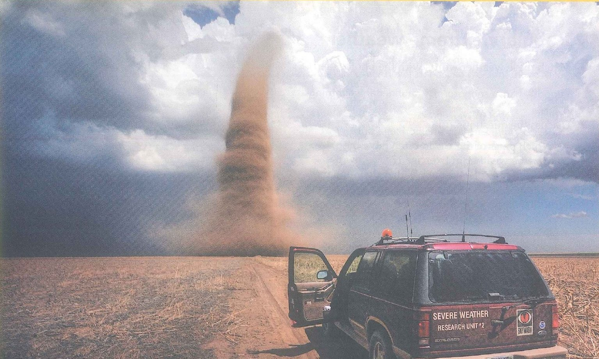
Quá gần cơn lốc xoáy?
Câu 1
‘Describe what you can see: the sky, the land, the car and the funnel.’
Câu 2
‘Read the words on the back of the car. Who is inside, and why have they stopped so close?’
Câu 3
‘If you were in the passenger seat right now, what would you say to the driver?’
Bài mẫu
The sky is half blue and half dark grey, and a column of brown dust is whirling over completely flat fields. The car says ‘Severe Weather Research Unit’, so I’d guess the people inside are scientists who want to measure the storm. If I were the passenger, I’d be shouting at the driver to turn the car round!
Dịch nghĩa
Bầu trời nửa xanh nửa xám sẫm, một cột bụi nâu đang xoáy tít trên cánh đồng phẳng lì. Trên xe có dòng chữ ‘Severe Weather Research Unit’ (Đơn vị Nghiên cứu Thời tiết Khắc nghiệt), nên tôi đoán người ngồi trong xe là các nhà khoa học muốn đo đạc cơn bão. Nếu đang ngồi ghế phụ, chắc tôi sẽ hét toáng lên bảo tài xế quay đầu xe ngay!
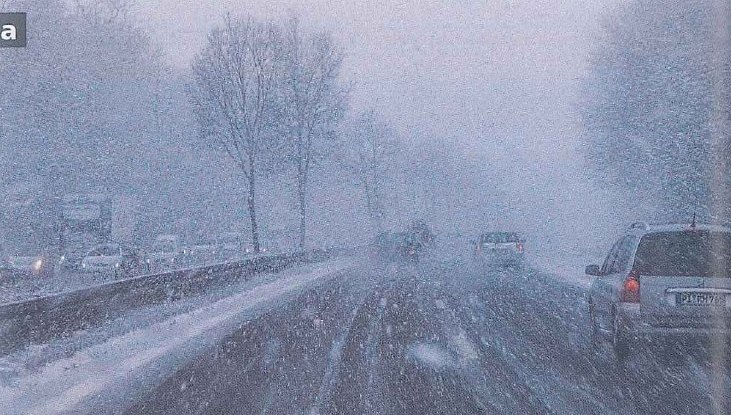
Đường cao tốc giữa bão tuyết
Câu 1
‘How far ahead can these drivers see, do you think? Why have they all switched their lights on?’
Câu 2
‘Which part of the world could this be? What do the bare trees tell you about the season?’
Câu 3
‘Would you rather drive through heavy snow or through a flooded street? Why?’
Bài mẫu
I doubt they can see more than fifty metres, so the lights are there to help other drivers spot them. With no leaves on the trees, it must be the middle of winter, somewhere like northern Europe. I’d take the snow, because in a flood you have no idea how deep the water is.
Dịch nghĩa
Tôi e là họ không nhìn xa được quá năm mươi mét, nên bật đèn là để các xe khác nhận ra mình. Cây cối trụi hết lá thế kia thì hẳn đang giữa mùa đông, ở một nơi như Bắc Âu chẳng hạn. Tôi sẽ chọn đi trong tuyết, vì gặp lũ thì chẳng biết nước sâu đến đâu.
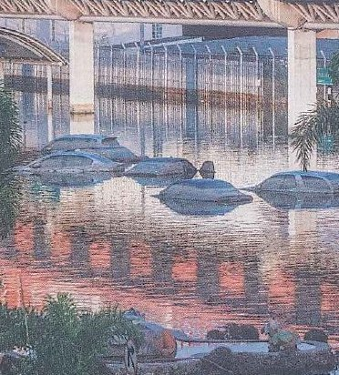
Chỉ còn nóc xe là khô
Câu 1
‘How deep is the water? Use the cars to measure it.’
Câu 2
‘What do you think happened in the hours before this photo was taken?’
Câu 3
‘If you were sent to help in this town, which health problems would you expect over the next week?’
Bài mẫu
The water reaches the tops of the cars, so it’s probably about one and a half metres deep. My guess is that it rained hard all night and the river burst its banks before dawn. I’d expect skin infections, stomach bugs from dirty water, and plenty of older people who have run out of their regular medicine.
Dịch nghĩa
Nước ngập đến nóc xe, nên chắc sâu khoảng một mét rưỡi. Tôi đoán trời đã mưa to suốt đêm và nước sông tràn bờ trước lúc trời sáng. Tôi nghĩ sẽ gặp nhiều ca nhiễm trùng da, nhiễm khuẩn đường ruột do nước bẩn, và không ít người cao tuổi đã hết thuốc điều trị thường xuyên.
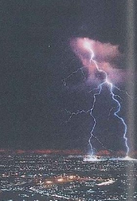
Thành phố bừng sáng từ trên cao
Câu 1
‘Count the bolts of lightning. Where do you think they are hitting?’
Câu 2
‘We see the flash before we hear the thunder. Why do you think that is?’
Câu 3
‘Do storms like this frighten you, or do you enjoy watching them from a window?’
Bài mẫu
I can count at least three bolts, and they seem to be hitting the edge of the city, maybe a tower or a hill. Light travels much faster than sound, so the flash reaches us first and the thunder follows a few seconds later. I actually love a good storm, as long as I’m indoors with the windows shut.
Dịch nghĩa
Tôi đếm được ít nhất ba tia sét, và hình như chúng đang đánh xuống rìa thành phố, có thể vào một tòa tháp hay một quả đồi. Ánh sáng đi nhanh hơn âm thanh rất nhiều, nên ta thấy chớp trước, vài giây sau mới nghe tiếng sấm. Thật ra tôi rất thích những cơn giông lớn, miễn là được ngồi trong nhà, cửa sổ đóng kín.
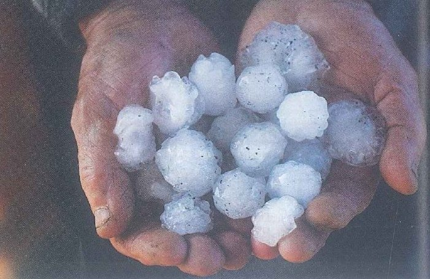
Một vốc băng
Câu 1
‘What are these white balls, and where did they fall from?’
Câu 2
‘Compare their size with something you know: a grape, an egg or a ping-pong ball?’
Câu 3
‘What could a storm of stones this size do to a roof, a car or a field of young rice?’
Bài mẫu
They’re hailstones, and they must have come down from a storm cloud only minutes ago, before they had time to melt. Most are about as big as a large grape, and a couple are nearly the size of a ping-pong ball. Hail like this could crack roof tiles and flatten a whole rice field in a few minutes.
Dịch nghĩa
Đó là mưa đá, chắc vừa rơi xuống từ một đám mây giông chỉ vài phút trước nên chưa kịp tan. Phần lớn to cỡ một quả nho lớn, vài viên gần bằng quả bóng bàn. Mưa đá cỡ này có thể làm vỡ ngói và quật rạp cả một cánh đồng lúa chỉ trong vài phút.
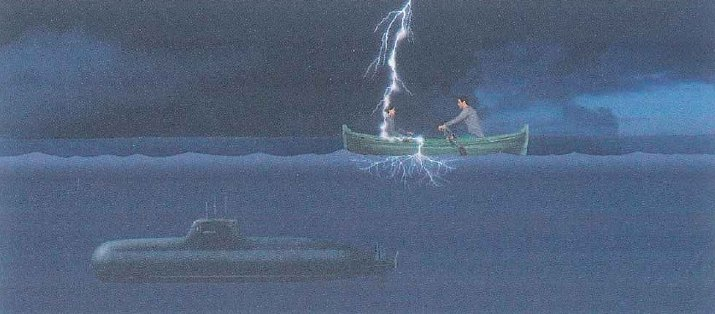
Trên mặt sóng hay dưới lòng biển?
Câu 1
‘Look at the two people in the boat and the submarine under them. Who is in more danger?’
Câu 2
‘This painting comes from a science blog. What do you think a reader asked the scientist?’
Câu 3
‘Make up your own strange weather question that starts with What if … and ask your partner.’
Bài mẫu
The two people in the boat, no question. They’re sitting up on a flat sea, and the submarine is hiding deep under the water. I think the reader wanted to know whether you’d be safe under the sea in a storm. Here’s mine: what if it rained for a whole year and never stopped?
Dịch nghĩa
Chắc chắn là hai người trên thuyền. Họ ngồi nhô lên giữa mặt biển phẳng lặng, còn chiếc tàu ngầm thì ẩn sâu dưới nước. Tôi nghĩ người đọc muốn biết ở dưới biển lúc có giông bão thì có an toàn không. Còn câu hỏi của tôi: sẽ thế nào nếu trời mưa suốt cả năm không ngớt?
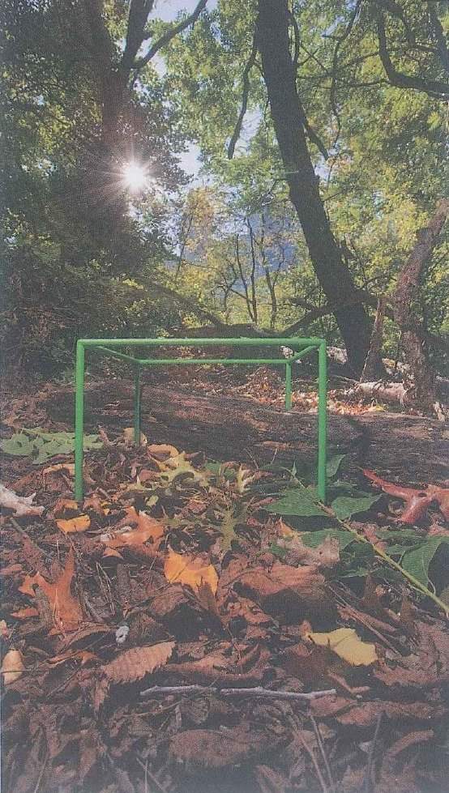
Chiếc khung xanh trên lớp lá rụng
Câu 1
‘What do you think this green metal frame is for?’
Câu 2
‘Is this a wild forest far from any town, or could it be a park in a huge city? What makes you think so?’
Câu 3
‘How many different living things do you think you could find inside it in one afternoon?’
Bài mẫu
It looks like a tool for measuring, as if someone wants to study exactly one small piece of ground. The trees look wild, but the ground under them is quite open and tidy, so I’d guess it’s a big city park. If I really looked closely, I bet I’d find twenty or thirty kinds of insects, worms and tiny plants.
Dịch nghĩa
Trông nó giống một dụng cụ đo đạc, như thể có người muốn nghiên cứu đúng một mẩu đất nhỏ. Cây cối trông hoang dã, nhưng mặt đất dưới tán cây lại khá thoáng và gọn gàng, nên tôi đoán đây là một công viên lớn trong thành phố. Nếu thật sự quan sát kỹ, tôi dám chắc sẽ tìm được hai, ba chục loại côn trùng, giun và cây cỏ li ti.
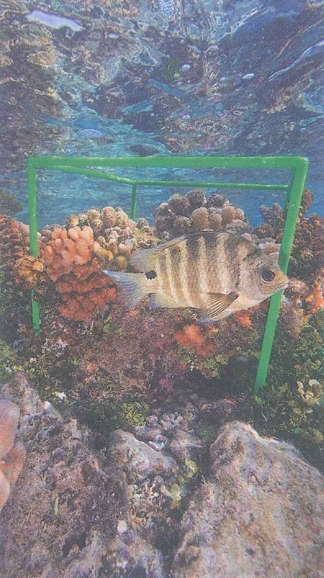
Vẫn chiếc khung ấy, nhưng dưới đáy biển
Câu 1
‘What lives inside this cube? Name everything you can see.’
Câu 2
‘Why would a photographer carry the same frame to the sea, a forest and a city park?’
Câu 3
‘Would you rather photograph wildlife under the sea or on a mountain top? Why?’
Bài mẫu
There’s a striped fish, some pink and orange coral and lots of tiny plants growing on the rocks. Using one frame everywhere makes the photos easy to compare, because each place gets exactly the same amount of space. I’d go for the sea, even though I’m a terrible swimmer, because nothing on land is that colourful.
Dịch nghĩa
Có một con cá sọc, vài cụm san hô hồng và cam, cùng rất nhiều loài thực vật nhỏ li ti mọc trên đá. Dùng cùng một chiếc khung ở mọi nơi giúp các bức ảnh dễ so sánh với nhau, vì chỗ nào cũng được đúng một khoảng không gian như nhau. Tôi sẽ chọn biển, dù bơi rất kém, vì trên cạn chẳng có gì rực rỡ sắc màu đến thế.
Lead-in 2 · Thời tiết, ước mơ và thiên nhiên: đồng ý hay không đồng ý?
4:00Chạm để chọn lập trường, rồi bảo vệ nó bằng một lý do và một điều chính mắt bạn từng thấy.
1 · Extreme weather happens more often now than when our grandparents were young.
Bài mẫu
I’d agree. My grandmother’s village in central Vietnam used to flood once every ten years or so, and now the water comes up most autumns. Summers in Hà Nội seem to start earlier every year, too.
Dịch nghĩa
Tôi đồng ý. Làng của bà tôi ở miền Trung trước đây khoảng mười năm mới ngập một lần, giờ thì gần như mùa thu nào nước cũng lên. Mùa hè ở Hà Nội cũng có vẻ năm nào cũng đến sớm hơn.
2 · Storm chasers take risks that nobody should take.
Bài mẫu
Not completely. The scientists among them collect data that helps forecasters send out warnings earlier, so their risk can save lives. The people who only want a dramatic video for social media, though? I can’t see the point.
Dịch nghĩa
Không hẳn. Những nhà khoa học trong số họ thu thập dữ liệu giúp cơ quan dự báo phát cảnh báo sớm hơn, nên sự liều lĩnh của họ có thể cứu được nhiều mạng người. Còn những người chỉ muốn quay một video giật gân để đăng mạng xã hội thì sao? Tôi chẳng thấy có ý nghĩa gì.
3 · If I had a free year, I’d spend it travelling, not studying.
Bài mẫu
Definitely travelling. I’ve been studying non-stop since I was six, and I’d love to ride a motorbike from the Chinese border all the way down to Cà Mau Cape. I’d probably pack a couple of medical books, though, just in case.
Dịch nghĩa
Chắc chắn là đi du lịch. Tôi đã học liên tục từ năm sáu tuổi, nên rất muốn chạy xe máy từ biên giới Việt – Trung xuôi một mạch xuống tận Mũi Cà Mau. Nhưng chắc tôi vẫn mang theo vài cuốn sách y, phòng khi cần.
4 · Strange “What if …?” questions are a good way to learn science.
Bài mẫu
I agree, because a funny question makes you want the answer. A friend sent me a two-minute video about what would happen if you fell into a black hole, and I ended up reading about black holes until two in the morning. No textbook chapter has ever kept me up that late.
Dịch nghĩa
Tôi đồng ý, vì một câu hỏi buồn cười khiến ta muốn biết câu trả lời. Có lần một người bạn gửi cho tôi đoạn video hai phút về chuyện sẽ ra sao nếu ta rơi vào hố đen, thế là tôi ngồi đọc về hố đen đến tận hai giờ sáng. Chưa chương sách giáo khoa nào khiến tôi thức khuya đến thế.
5 · You don’t need to leave the city to find nature.
Bài mẫu
That’s true, you just have to slow down. The old trees behind our lecture hall fill up with noisy birds every evening, and I once counted four kinds of butterfly in the flower bed by the canteen.
Dịch nghĩa
Đúng vậy, chỉ cần sống chậm lại một chút. Chiều nào những hàng cây cổ thụ sau giảng đường cũng rộn ràng tiếng chim, và có lần tôi đếm được bốn loại bướm ở bồn hoa cạnh nhà ăn.
6 · A beautiful photo of nature can make people want to protect it.
Bài mẫu
Partly. A photo of a sea turtle caught in a plastic bag made me stop buying bottled water for a whole month. But a month isn’t very long, so I think a photo starts the feeling and the law has to do the rest.
Dịch nghĩa
Đúng một phần. Một bức ảnh chụp con rùa biển mắc trong túi nilon từng khiến tôi bỏ hẳn nước đóng chai suốt một tháng. Nhưng một tháng đâu có dài, nên tôi nghĩ bức ảnh chỉ khơi lên cảm xúc, phần còn lại phải để luật pháp lo.
Ngôn ngữ hữu ích
I’d say that’s true, especially when …
In my experience, …
It depends on …, to be honest.
I see your point, but …
I’m not convinced, because …
Lead-in 3 · Nghe · Track 93 · Storm chasers
6:00Đọc trước năm câu hỏi, nghe hai lần, rồi cùng bạn bên cạnh trao đổi SB Ex 3.
Track 93
Nghe một đoạn phim tài liệu về những người săn bão và chọn đáp án đúng nhất (SB tr. 141 Ex 2)
Đã nghe 0 lần
Lời thoại · Audioscript 93
When a tornado is coming, most people drive in the opposite direction. But storm chasers look for tornadoes and drive towards them. Some storm chasers are scientists and they try to learn more about how tornadoes are formed. Other storm chasers are just everyday people who are interested and want to get good photos. The most common time of day to see a tornado is between 4 p.m. and 9 p.m., but they can be very unpredictable. They can change direction at any moment and so they are difficult to follow. That also makes them extremely dangerous. They can destroy trees and houses in seconds and some storm chasers have died while they were following tornadoes.
Dịch nghĩa
Khi một cơn lốc xoáy sắp ập tới, phần lớn mọi người lái xe theo hướng ngược lại. Nhưng những người săn bão thì đi tìm lốc xoáy và lái xe lao về phía nó. Một số người săn bão là nhà khoa học, họ muốn tìm hiểu thêm về cách lốc xoáy hình thành. Những người khác chỉ là người bình thường, vì tò mò và muốn chụp được những bức ảnh đẹp. Trong ngày, lốc xoáy hay xuất hiện nhất vào khoảng từ 4 giờ chiều đến 9 giờ tối, nhưng chúng có thể rất khó lường. Chúng có thể đổi hướng bất cứ lúc nào nên rất khó bám theo. Điều đó cũng khiến chúng cực kỳ nguy hiểm. Lốc xoáy có thể phá huỷ cây cối và nhà cửa chỉ trong vài giây, và đã có những người săn bão thiệt mạng khi đang bám theo chúng.
1According to the speaker, what makes storm chasers different from most people?
Người nói đặt hai nhóm người đối lập nhau: “most people drive in the opposite direction. But storm chasers … drive towards them.” Lao về phía thứ mà người khác đang chạy trốn = D. Phương án C mượn lại cụm opposite direction, nhưng đó là việc người lái xe bình thường tự làm, chẳng có ai bảo họ cả.
2Which sentence best explains the difference between the two kinds of storm chaser?
“Some … are scientists and they try to learn more about how tornadoes are formed” = họ muốn hiểu lốc xoáy hình thành như thế nào. “Other storm chasers are just everyday people who are interested and want to get good photos” = những người bình thường, tò mò và muốn có ảnh đẹp. Phương án D đảo ngược hai nhóm; B sai vì cả hai nhóm đều lái xe về phía cơn bão.
3A storm chaser has one free day in tornado season. When does she have the best chance of seeing a tornado?
“The most common time of day to see a tornado is between 4 p.m. and 9 p.m.” = cuối buổi chiều và đầu buổi tối. Cụm Most common cho biết vẫn có lốc xoáy xuất hiện vào giờ khác, nên D (xuất hiện đều suốt cả ngày) sai, còn E lại bắt đầu đúng lúc khung giờ này kết thúc.
4‘That also makes them extremely dangerous.’ What does That refer to?
That thay cho ý của câu ngay trước nó: lốc xoáy “can change direction at any moment and so they are difficult to follow.” Một cơn lốc có thể đổi hướng không báo trước thì có thể bất ngờ lao thẳng vào những người đang bám theo nó. Phương án E chỉ được nhắc đến sau That, như hậu quả của mối nguy hiểm ấy.
5Why does the speaker end with the fact that some storm chasers have died?
Câu cuối, “some storm chasers have died while they were following tornadoes”, nêu một sự thật cho thấy mối nguy hiểm nghiêm trọng đến mức nào. Người nói không hề bảo nên cấm thú vui này (A suy diễn quá xa), và bài nghe cũng không so sánh cách lái xe của hai nhóm (F).
SB tr. 141 Ex 3 · Suy nghĩ, rồi trình bày trước lớp
Why do you think people want to be storm chasers?
Would you like to be a storm chaser? Why? / Why not?
Bài mẫu · câu 1
Some of them are scientists who need measurements from right next to the storm, and there’s no other way to get them. For everyone else, I think it’s the thrill. Standing that close to something so powerful must make you feel tiny and very alive at the same time.
Dịch nghĩa
Một số người là nhà khoa học, họ cần số liệu đo ngay sát cơn bão, và không có cách nào khác để lấy được số liệu đó. Với những người còn lại, tôi nghĩ là vì cảm giác mạnh. Đứng gần một thứ có sức mạnh khủng khiếp như thế hẳn khiến ta vừa thấy mình nhỏ bé, vừa thấy mình đang sống thật mãnh liệt.
Bài mẫu · câu 2
Honestly, no. I’d love to see a tornado once in my life, but from a long way off with a good zoom lens. I’d rather spend my energy treating the people a storm has hurt than driving after the storm itself.
Dịch nghĩa
Thật lòng thì không. Tôi rất muốn một lần trong đời được tận mắt thấy lốc xoáy, nhưng là từ thật xa, qua một ống kính zoom tốt. Tôi thà dành sức chữa trị cho những người bị bão làm bị thương còn hơn lái xe đuổi theo chính cơn bão.
Ngôn ngữ hữu ích
I think people do it because …
It must feel … to stand so close to …
I’d love to …, but only if …
There’s no way I’d …, because …
Lead-in 4 · Vốn từ hiện có: bạn liệt kê được bao nhiêu từ cho mỗi nhóm?
4:00Các từ cách nhau bằng dấu phẩy; ô nhập tự đếm số từ trong lúc bạn gõ.
Which words do you need for plants, animals and insects, and for taking photos of them?
0 từ
Sheet 2 / 11 · Unit 12a–12b · 4 tiết
Lộ trình
1 · Chuẩn đầu ra
Đọc · SB tr. 142 + PET Part 2–4
What if …? (vừa nghe vừa đọc, Track 94) và ba bài PET
Lý giải khoa học, từ quy chiếu, suy luận và mục đích của người viết
Bài đọc A và mỗi phần PET: đạt từ 7/10 điểm trở lên
Nghe · Track 95–96 + PET Part 1, 3, 4
Bài nghe A: hai người hình dung khí hậu trở nên nóng hơn (would · wouldn’t · ’d)
Bài nghe B: phim tài liệu về khối lập phương màu xanh của David Liittschwager
PET: bảy đoạn nghe ngắn, bài nói của hướng dẫn viên ở Vườn quốc gia Cúc Phương, một cuộc phỏng vấn trên đài phát thanh với một bác sĩ trẻ
Bài nghe A, Bài nghe B và mỗi phần PET: đạt từ 7/10 điểm trở lên
Nói · Part 1–3
Part 1: Point → Why → Example, kèm một cụm từ ở Sheet 4
Part 2: nói hai phút theo thẻ đề A (Topic 7, thời tiết cực đoan) hoặc thẻ đề B (Topic 8, một loài động vật hoang dã)
Part 3: câu trả lời dài một phút, đi lần lượt qua đủ khung 7 bước
Sheet 11: một câu trả lời “What if …?” trong 20 giây, rồi nói về một góc thiên nhiên nhỏ gần nơi bạn sống
Viết · đoạn văn nguyên nhân – kết quả
Chỉ một đoạn văn: 8–10 câu, 140–170 từ
Câu chủ đề báo trước cho người đọc rằng đoạn văn sẽ bàn về nguyên nhân hay tác động
Mỗi nguyên nhân hay tác động được giải thích thành một chuỗi (because → so / as a result) và có một ví dụ cụ thể đi kèm
Câu kết tóm lại ý chính, không thêm ý mới
Frame C dùng would ở mọi tác động, mọi câu nêu kết quả và câu kết
Ngữ pháp
Second conditional (câu điều kiện loại 2): quá khứ đơn sau if, would + động từ ở mệnh đề chính, chỉ dùng dấu phẩy khi if đứng đầu câu
every- / some- / no- / any- + -one / -body / -thing / -where: chọn đúng từ, động từ chia số ít, không phủ định kép
Exercise 7–15: đạt từ 8/10 điểm trở lên
Từ vựng
Dùng cụm từ của cả bốn nhóm trong câu trả lời phần nói và trong đoạn văn
Quiz ở Sheet 10 sau một tuần: đúng ít nhất 13/16 cụm
Exercise 1–6: đạt từ 8/10 điểm trở lên
2 · Kiến thức trọng tâm cho từng phần thi
Đọc hiểu
Blog của Randall về sét, tàu ngầm, bể bơi và chiếc ô tô dưới mưa; năm người đang chọn một chuyến đi về với thiên nhiên dịp cuối tuần; Roy Sullivan, người kiểm lâm từng bị sét đánh bảy lần; một đêm của học viên trong đợt cứu trợ lũ lụt.
Would, wouldn’t và ’d trong một cuộc hội thoại nhanh; những bức ảnh David Liittschwager chụp trong một foot khối (one cubic foot); bảy đoạn nghe ngắn; một hướng dẫn viên ở Vườn quốc gia Cúc Phương; một bác sĩ trẻ chụp ảnh côn trùng trong vườn bệnh viện.
Topic 7: bão, lũ và các thảm họa khác · Topic 8: gặp động vật hoang dã · chuẩn bị ứng phó với thời tiết cực đoan, bảo vệ động vật hoang dã, tình huống tưởng tượng và ước mơ, ảnh và việc để ý đến thiên nhiên.
Dùng second conditional để hình dung những tình huống khó xảy ra và kết quả của chúng; dùng everyone, something, nowhere, anything để nói về người, vật và nơi chốn.
Lead-in 1: bức ảnh lốc xoáy (thẻ 1 · SB tr. 141 Ex 1)
15'
Lead-in 3: Track 93 · Storm chasers, năm câu hỏi (SB Ex 2), rồi đến SB Ex 3
Lead-in 2: thảo luận nhận định 1 và 2
15'
Lead-in 1: thẻ 2–5, các bức ảnh về thời tiết (SB 12a Ex 1–2)
Lead-in 4: ô 1 và ô 2 · Group 1: thẻ Core · Luyện tập: Exercise 1
20'
Lead-in 1: dùng thẻ 6 để đoán trước nội dung, rồi Bài đọc A · What if …? (vừa nghe vừa đọc, Track 94): SB Ex 3–4
Thẻ Core của Group 2, rồi Luyện tập Exercise 2
20'
Ngữ pháp 1 · Second conditional (SB Ex 5)
Phát âm: would · wouldn’t · ’d, rồi Bài nghe A · Track 95 (SB Ex 9)
Luyện tập: Exercise 7, 8 và 9
10'
Lead-in 2: thảo luận nhận định 3 và 4
Làm theo cặp: hy vọng và ước mơ (SB 12a Ex 10) · Sheet 11, Block A · Tạo output: một câu trả lời “What if …?” trong 20 giây
Tiết 3–4 · 12b Nature in one cubic foot
10'
Lead-in 1: thẻ 7–8, khối lập phương màu xanh
Lead-in 4: ô 3 và ô 4 · Bạn và những bức ảnh (SB 12b Ex 1)
10'
Group 3 và 4: thẻ Core · địa điểm tự nhiên hay nhân tạo (SB Ex 2–3)
Luyện tập: Exercise 4
20'
Bài nghe B · Track 96 · Nature in one cubic foot (SB Ex 4–5)
Lead-in 2: thảo luận nhận định 5 và 6
20'
Ngữ pháp 2 · anywhere, everyone, nobody, something (SB Ex 6) · Luyện tập: Exercise 10
Làm theo cặp: hỏi đáp với từ any- (SB 12b Ex 10) · Sheet 11, Block B · Tạo output: thế giới hoang dã ngay trước cửa nhà bạn
25'
Viết · Stage 1–3: ba khung tổng A (nguyên nhân), B (tác động của một sự kiện có thật) và C (tác động của một thay đổi tưởng tượng) đặt cạnh bài mẫu, rồi đến khung câu chủ đề và khung nêu nguyên nhân, nêu tác động
Chức năng 9–10: giải thích nguyên nhân, giải thích tác động · Luyện tập: Exercise 14 và 18
5'
Điểm qua danh sách bài về nhà
BTVN
Sheet 5: ba phần PET Reading (Part 2, 3, 4) và các câu hỏi phần Sau khi đọc
Sheet 6: PET Listening Part 1, 3 và 4, làm xong mới mở lời thoại
Luyện tập: Exercise 3, 5 và 6 (từ vựng), 11–13 và 15 (ngữ pháp), 16, 17 và 19 (kỹ năng)
Luyện tập: Exercise 20 về loài ong, rồi tự viết một câu trả lời kiểu blog “What if …?” dài 120–150 từ
Nói Part 1: 10 câu hỏi cùng bạn bên cạnh, mỗi câu khoảng 30 giây Part 1
Nói: học khung 7 bước (Sheet 4, mục 6) Khung 7 bước, rồi làm thẻ đề A hoặc B (1′ lên ý, 2′ nói) và hai câu hỏi Part 3 cùng bạn bên cạnh
Viết · Stage 4–8: khung chuỗi (because → so → as a result), khung ví dụ và kết quả, khung second conditional của Frame C, khung câu kết, rồi ghép thành khung hoàn chỉnh
Viết · Stage 9: Mức 1 (có hướng dẫn) → Mức 2 (chỉ có cụm mở câu) → Mức 3 (đề chính về một thành phố không có công viên hay cây xanh, 20 phút), rồi tự kiểm tra
Sheet 10: tự kiểm tra vào ngày 1, 3 và 7, rồi đánh dấu vào bảng tự đánh giá
Đọc mỗi câu ví dụ hai lần: lần đầu thật chậm, lần sau ở tốc độ bình thường
2
Chọn 5 từ Advanced
Năm từ bạn sẽ cần khi tả một cơn bão hoặc một vườn quốc gia
Để các từ còn lại cho tuần sau
3
Che đi và nhớ lại
Che dòng nghĩa và giải thích từ bằng tiếng Anh
Che từ, nhìn nghĩa để nhớ lại từ
4
Viết một câu thật về mình
Về thời tiết ở nơi bạn lớn lên, hoặc một vùng thiên nhiên hoang dã bạn yêu thích
Dùng hai cụm mới và mẫu câu If …, I’d …
5
Nói trong 30 giây
Nói câu của bạn rồi thêm hai câu nữa, trong đó có một từ every- / some- / no- / any-
Mở đầu bằng If I could go anywhere, …
Sheet 3 / 11 · 4 nhóm từ vựng · What if …? & Nature in one cubic foot
Từ vựng: thời tiết cực đoan, tình huống giả định, nơi chốn và thế giới hoang dã
Group 1 · Thời tiết cực đoan: bão, lũ lụt và mưa đá
Core
Từ chỉ thời tiết
a flood / flood (v) /flʌd/
lũ, lụt (nước dâng tràn ra đường, đồng ruộng, nhà cửa) · (v) làm ngập, bị ngập
The flood last October cut the road to our training area for a week, and the rice fields beside it still flood after every big storm.Trận lũ hồi tháng Mười làm đứt đường vào khu huấn luyện của chúng tôi suốt một tuần, còn ruộng lúa bên đường thì vẫn ngập sau mỗi trận bão lớn.
hail /heɪl/
mưa đá (hạt mưa đông thành cục băng nhỏ và cứng)
Hail the size of peanuts bounced off the roof of the field kitchen for ten noisy minutes.Mưa đá to bằng hạt lạc nảy lộp độp trên mái bếp dã chiến suốt mười phút ầm ĩ.
a snowstorm /ˈsnəʊstɔːm/
bão tuyết (tuyết rơi dày, thường kèm gió mạnh)
On TV we often see a snowstorm in Japan or Korea, but in Vietnam snow only falls now and then on a few high peaks such as Fansipan.Trên TV ta hay thấy bão tuyết ở Nhật Bản hay Hàn Quốc, còn ở Việt Nam tuyết chỉ thỉnh thoảng rơi trên vài đỉnh núi cao như Fansipan.
thunder /ˈθʌndə(r)/
sấm, tiếng sấm (tiếng rền vang sau tia chớp)
A single crash of thunder woke half the ward at three in the morning.Chỉ một tiếng sấm nổ đã đánh thức nửa buồng bệnh lúc ba giờ sáng.
lightning /ˈlaɪtnɪŋ/
tia chớp, sét (vệt sáng loé lên do điện trong cơn giông)
We counted the seconds between the lightning and the crash that followed to guess how far away the storm was.Chúng tôi đếm số giây giữa tia chớp và tiếng nổ theo sau để đoán cơn giông còn cách bao xa.
a thunderstorm /ˈθʌndəstɔːm/
cơn giông (mưa to kèm sấm chớp)
A thunderstorm knocked out the power during our evening shift, and the ward sat in the dark until the backup lights flickered on.Một cơn giông làm mất điện đúng ca tối của chúng tôi, cả khoa chìm trong bóng tối cho đến khi đèn dự phòng chập chờn bật sáng.
a tornado /tɔːˈneɪdəʊ/
lốc xoáy, vòi rồng (gió xoáy dữ dội hình phễu di chuyển trên mặt đất)
Small tornadoes sometimes hit villages in the northern mountains at the start of the rainy season and lift the roofs off houses in seconds.Những trận lốc xoáy nhỏ đôi khi quét qua các bản làng vùng núi phía Bắc vào đầu mùa mưa và lật tung mái nhà chỉ trong vài giây.
a storm /stɔːm/
bão, cơn bão (gió mạnh, thường kèm mưa)
The storm knocked down two trees by the academy gate, and our company spent Sunday morning clearing the branches.Cơn bão quật đổ hai cây gần cổng học viện, và đại đội chúng tôi mất cả buổi sáng Chủ nhật để dọn cành cây.
freezing /ˈfriːzɪŋ/
lạnh cóng, rét buốt (dưới 0 °C)
It was freezing on the night march in the hills, and by midnight nobody could feel their fingers.Đêm hành quân trên đồi trời lạnh cóng, đến nửa đêm chẳng ai còn cảm giác ở các ngón tay.
heavy rain /ˌhevi ˈreɪn/
mưa to, mưa lớn
Heavy rain turned the path to the field hospital into thick red mud.Mưa to biến con đường dẫn tới bệnh viện dã chiến thành một lớp bùn đỏ đặc quánh.
Nguy hiểm và an toàn
a storm chaser /ˈstɔːm tʃeɪsə(r)/
người săn bão (đuổi theo thời tiết dữ dội để nghiên cứu hoặc quay phim)
A storm chaser needs a fast car, a good map and the sense to turn back when the wind changes.Người săn bão cần một chiếc xe chạy nhanh, một tấm bản đồ tốt và đủ tỉnh táo để quay đầu khi gió đổi hướng.
chase /tʃeɪs/
đuổi theo, rượt theo (để bắt kịp hoặc không để mất dấu)
Two cadets chased a runaway dog across the parade ground while the whole platoon laughed.Hai học viên đuổi theo một con chó chạy rông khắp thao trường trong khi cả trung đội cười ồ.
destroy /dɪˈstrɔɪ/
phá huỷ, tàn phá (hỏng đến mức không dùng hay sửa được nữa)
The landslide destroyed the only bridge to the village, so the medical team walked the last five kilometres.Vụ sạt lở đất phá huỷ cây cầu duy nhất vào bản, nên đội y tế phải đi bộ năm cây số cuối.
unpredictable /ˌʌnprɪˈdɪktəbl/
khó đoán, thất thường
Mountain weather is unpredictable: a sunny morning can turn into a cold, wet afternoon in under an hour.Thời tiết vùng núi rất khó đoán: một buổi sáng nắng ráo có thể chuyển thành buổi chiều lạnh và mưa ướt chỉ trong chưa đầy một tiếng.
dangerous /ˈdeɪndʒərəs/
nguy hiểm (có thể gây hại, gây thương tích hoặc tử vong)
Driving across a flooded road is dangerous, because fast-moving water can push even a heavy truck sideways.Lái xe qua đoạn đường ngập rất nguy hiểm, vì dòng nước chảy xiết có thể đẩy cả một chiếc xe tải nặng trôi sang ngang.
safe /seɪf/
an toàn (không bị nguy hiểm, khó bị thương)
The nurses moved the oldest patients to the top floor, where they would be safe if the water kept rising.Các điều dưỡng chuyển những bệnh nhân cao tuổi nhất lên tầng trên cùng, nơi họ sẽ an toàn nếu nước tiếp tục dâng.
a weather forecast /ˈweðə fɔːkɑːst/
dự báo thời tiết (trên TV, đài hoặc mạng)
The weather forecast promised a dry weekend, so the platoon leader planned the river crossing for Saturday.Dự báo thời tiết nói cuối tuần trời khô ráo, nên trung đội trưởng lên kế hoạch vượt sông vào thứ Bảy.
a warning /ˈwɔːnɪŋ/
lời cảnh báo (báo trước một mối nguy sắp đến)
The commune loudspeakers gave a warning at six in the morning, and by noon every fishing boat was tied up in the harbour.Loa truyền thanh của xã phát cảnh báo lúc sáu giờ sáng, và đến trưa thì mọi thuyền đánh cá đều đã neo buộc trong cảng.
damage /ˈdæmɪdʒ/
thiệt hại, sự hư hại (khiến đồ vật bị vỡ, yếu đi hoặc khó dùng)
Engineers came to check the damage to the clinic roof the morning after the typhoon.Sáng hôm sau cơn bão, các kỹ sư đến kiểm tra mức hư hại của mái phòng khám.
Advanced
Thiên tai và cách con người ứng phó
a typhoon/taɪˈfuːn/
bão, bão nhiệt đới (cơn bão xoáy rất lớn hình thành trên biển ấm; cách gọi ở tây bắc Thái Bình Dương (kể cả Biển Đông), nơi khác gọi là hurricane)
In autumn, the central provinces often have to prepare for a typhoon coming in from the East Sea.Vào mùa thu, các tỉnh miền Trung thường phải chuẩn bị đối phó với bão từ Biển Đông đổ vào.
a heatwave/ˈhiːtweɪv/
đợt nắng nóng (nhiều ngày nóng bất thường)
During the June heatwave, the academy moved morning exercise to five o'clock to avoid the worst of the sun.Trong đợt nắng nóng tháng Sáu, học viện chuyển giờ thể dục buổi sáng lên năm giờ để tránh lúc nắng gắt nhất.
a drought/draʊt/
hạn hán (khô hạn kéo dài, đất nứt nẻ, cây trồng và vật nuôi thiếu nước)
After months of drought, the village wells were empty and the clinic had its water brought in by truck.Sau nhiều tháng hạn hán, giếng trong làng cạn khô và phòng khám phải nhờ xe tải chở nước đến.
A week of rain caused a landslide that blocked the road to the border post, so supplies came in by helicopter.Mưa suốt một tuần gây sạt lở đất chặn con đường lên đồn biên phòng, nên hàng tiếp tế phải chở bằng trực thăng.
a flash flood/ˌflæʃ ˈflʌd/
lũ quét (nước dồn về đột ngột sau mưa rất to, đến nhanh và rút nhanh)
A flash flood can fill a dry stream bed in minutes, so never pitch your tent right next to one.Lũ quét có thể làm đầy một lòng suối cạn chỉ trong vài phút, nên đừng bao giờ dựng lều sát ngay bên suối.
evacuate/ɪˈvækjueɪt/
sơ tán (đưa người ra khỏi vùng nguy hiểm đến nơi an toàn hơn)
Before the storm arrived, soldiers helped evacuate about two hundred families from the coastal villages.Trước khi bão đến, bộ đội giúp sơ tán khoảng hai trăm hộ dân khỏi các làng ven biển.
Collocations
Nói về bão và những mối nguy của bão
be hit by lightning/bi ˌhɪt baɪ ˈlaɪtnɪŋ/
bị sét đánh
The old banyan tree in the yard was hit by lightning last summer, and half of it turned black.Cây đa già trong sân bị sét đánh hồi mùa hè năm ngoái, một nửa cây cháy đen.
a flood warning/ˈflʌd wɔːnɪŋ/
cảnh báo lũ (thông báo chính thức là nước sông có thể dâng, gây ngập)
As soon as the flood warning came, the hospital moved its medicines and oxygen tanks upstairs.Ngay khi có cảnh báo lũ, bệnh viện chuyển thuốc men và bình oxy lên tầng trên.
check the weather forecast/ˌtʃek ðə ˈweðə fɔːkɑːst/
xem dự báo thời tiết (cho mấy ngày tới)
Always check the weather forecast before a trek: a dry path today can be a stream tomorrow.Luôn xem dự báo thời tiết trước khi đi bộ đường dài: lối mòn hôm nay khô ráo, ngày mai có thể thành dòng suối.
cause serious damage/ˌkɔːz ˌsɪəriəs ˈdæmɪdʒ/
gây thiệt hại nặng nề (cho nhà cửa, đường sá hoặc mùa màng)
Strong winds can cause serious damage to field tents, so we tie them down with extra ropes.Gió mạnh có thể gây thiệt hại nặng cho lều dã chiến, nên chúng tôi chằng thêm dây cho chắc.
drive in the opposite direction/ˌdraɪv ɪn ði ˌɒpəzɪt dəˈrekʃn/
lái xe theo hướng ngược lại (đi xa khỏi, không tiến về phía nó)
If the road ahead is under water, turn round and drive in the opposite direction, even if it adds an hour to the trip.Nếu đoạn đường phía trước bị ngập, hãy quay xe và lái theo hướng ngược lại, dù chuyến đi dài thêm một tiếng.
freezing temperatures/ˌfriːzɪŋ ˈtemprətʃəz/
nhiệt độ dưới mức đóng băng (lạnh đến mức nước đóng băng)
The water pipes at the mountain clinic burst after three nights of freezing temperatures.Ống nước ở phòng khám vùng núi bị vỡ sau ba đêm nhiệt độ xuống dưới mức đóng băng.
torrential rain/təˌrenʃl ˈreɪn/
mưa xối xả, mưa như trút nước (mưa rất to và kéo dài)
When torrential rain hits the central provinces in October, landslides often close the mountain roads for days.Khi mưa xối xả trút xuống các tỉnh miền Trung vào tháng Mười, sạt lở đất thường làm tắc đường đèo nhiều ngày liền.
take shelter/ˌteɪk ˈʃeltə(r)/
trú ẩn, tìm chỗ trú (tránh thời tiết xấu hoặc nguy hiểm)
When the thunderstorm broke over the training ground, the platoon took shelter in the vehicle shed, not under the tall trees.Khi cơn giông ập xuống bãi tập, trung đội vào trú trong nhà để xe, chứ không đứng dưới những tán cây cao.
Group 2 · What if …? Lời giải đáp khoa học và những tình huống giả định
Core
Phần khoa học
a submarine /ˌsʌbməˈriːn/
tàu ngầm
Doctors who serve on a submarine may not see daylight for weeks at a time.Bác sĩ phục vụ trên tàu ngầm có khi nhiều tuần liền không nhìn thấy ánh sáng ban ngày.
underwater /ˌʌndəˈwɔːtə(r)/
dưới nước (dưới mặt biển, sông, hồ)
We practised underwater rescue in the academy pool, holding our breath for thirty seconds at a time.Chúng tôi tập cứu hộ dưới nước ở bể bơi của học viện, mỗi lần nín thở ba mươi giây.
a flat surface /ˌflæt ˈsɜːfɪs/
mặt phẳng (bằng phẳng, không lồi lõm)
For chest compressions, the patient must lie on a firm, flat surface, not a soft mattress.Khi ép tim, bệnh nhân phải nằm trên một mặt phẳng cứng, không nằm trên đệm mềm.
electrical energy /ɪˌlektrɪkl ˈenədʒi/
năng lượng điện, điện năng (như trong pin hay tia sét)
A defibrillator sends a short burst of electrical energy through the heart to bring back a normal rhythm.Máy khử rung tim phóng một luồng điện năng ngắn qua tim để khôi phục nhịp tim bình thường.
spread (outwards) /spred/ · /ˈaʊtwədz/
lan ra, toả ra (từ giữa ra mọi phía)
Redness that spreads outwards from a small cut can be an early sign of infection.Vùng da đỏ lan rộng ra từ một vết cắt nhỏ có thể là dấu hiệu sớm của nhiễm trùng.
the speed of sound /ðə ˌspiːd əv ˈsaʊnd/
tốc độ âm thanh (trong không khí khoảng 1.200 km/giờ)
Some fighter jets fly faster than the speed of sound, and the bang you hear on the ground comes after the plane has passed.Một số máy bay chiến đấu bay nhanh hơn tốc độ âm thanh, và tiếng nổ bạn nghe thấy dưới mặt đất đến sau khi máy bay đã bay qua.
a windscreen /ˈwɪndskriːn/
kính chắn gió (phía trước ô tô, xe tải)
A stone flew up and hit the ambulance's windscreen on the mountain road, leaving a long crack.Trên đường đèo, một hòn đá văng lên trúng kính chắn gió của xe cứu thương, để lại một vết nứt dài.
take off /ˌteɪk ˈɒf/
cất cánh (máy bay, trực thăng, chim)
The rescue helicopter could not take off until the wind dropped.Trực thăng cứu hộ không thể cất cánh cho đến khi gió lặng.
a blog /blɒɡ/
blog (trang web một người thường xuyên viết về suy nghĩ, trải nghiệm của mình)
Lan writes a blog about cadet life, with photos from every field trip and a list of the best cheap noodle stalls.Lan viết blog về cuộc sống học viên, có ảnh từ mọi chuyến đi thực tế và danh sách những hàng mì vừa ngon vừa rẻ nhất.
a scientist /ˈsaɪəntɪst/
nhà khoa học
The scientists at the weather centre use satellite images to follow a storm hour by hour.Các nhà khoa học ở trung tâm khí tượng dùng ảnh vệ tinh để theo dõi cơn bão từng giờ.
Có thể hay không
unlikely /ʌnˈlaɪkli/
khó xảy ra, ít có khả năng (xảy ra hoặc đúng)
It's unlikely that the bus will leave on time in this rain, so let's wait inside.Mưa thế này thì xe buýt khó mà chạy đúng giờ, nên mình vào trong chờ đi.
impossible /ɪmˈpɒsəbl/
không thể, bất khả thi
Without a boat, it was impossible to reach the patients on the other side of the flooded river.Không có thuyền thì không thể nào đến được chỗ các bệnh nhân ở bên kia dòng sông đang lũ.
imagine /ɪˈmædʒɪn/
tưởng tượng, hình dung
Imagine the academy without its canteen: half of us would starve within a week.Thử tưởng tượng học viện mà không có nhà ăn: một nửa số chúng tôi sẽ chết đói trong vòng một tuần.
a situation /ˌsɪtʃuˈeɪʃn/
tình huống, tình hình
In an emergency situation, the team leader gives the orders and everyone else follows them quickly.Trong tình huống khẩn cấp, trưởng nhóm ra lệnh và mọi người khác nhanh chóng làm theo.
scientific /ˌsaɪənˈtɪfɪk/
khoa học, có cơ sở khoa học (dựa trên nghiên cứu, đo đạc và dữ kiện đã được chứng minh)
My grandmother says cold drinks give you a cough, but she can't give me a scientific reason.Bà tôi bảo uống đồ lạnh sẽ bị ho, nhưng bà không đưa ra được lý do khoa học nào.
a dream /driːm/
ước mơ, mơ ước
Her dream is to open a free clinic in her home town after she graduates.Ước mơ của cô ấy là mở một phòng khám miễn phí ở quê nhà sau khi tốt nghiệp.
hope /həʊp/
hy vọng, mong (điều gì đó xảy ra)
We hope the rain stops before the graduation ceremony on Saturday.Chúng tôi mong mưa tạnh trước lễ tốt nghiệp vào thứ Bảy.
afford /əˈfɔːd/
đủ tiền (mua, chi trả)
Few cadets can afford a car, so most of us travel home by coach.Ít học viên đủ tiền mua ô tô, nên phần lớn chúng tôi về quê bằng xe khách.
Advanced
Tư duy như nhà khoa học
hypothetical/ˌhaɪpəˈθetɪkl/
giả định, mang tính giả thuyết (tưởng tượng là có thể, nhưng hiện không có thật)
The exam had one hypothetical case: a patient with no ID card arrives at the clinic at midnight.Đề thi có một ca bệnh giả định: một bệnh nhân không có thẻ căn cước đến phòng khám lúc nửa đêm.
in theory/ɪn ˈθɪəri/
về lý thuyết (theo kế hoạch hay quy định, thực tế có thể khác)
In theory, the trip to the camp takes two hours; in the rainy season it often takes four.Về lý thuyết, đi đến khu trại mất hai tiếng; vào mùa mưa thường mất bốn tiếng.
a consequence/ˈkɒnsɪkwəns/
hệ quả, hậu quả (thường là xấu)
One consequence of the long drought was a sharp rise in the price of rice.Một hậu quả của đợt hạn hán kéo dài là giá gạo tăng vọt.
survive/səˈvaɪv/
sống sót (qua điều có thể gây chết người)
All twelve fishermen survived the storm by holding on to their upturned boat until a patrol ship found them.Cả mười hai ngư dân đều sống sót qua cơn bão nhờ bám vào chiếc thuyền bị lật cho đến khi một tàu tuần tra tìm thấy họ.
a climate/ˈklaɪmət/
khí hậu
The cool climate of Đà Lạt makes it a good place to grow strawberries and flowers.Khí hậu mát mẻ của Đà Lạt khiến nơi đây rất hợp để trồng dâu tây và hoa.
an experiment/ɪkˈsperɪmənt/
thí nghiệm (để kiểm chứng một ý tưởng)
In the physiology lab, we did an experiment to see how fast our heart rate falls after a sprint.Trong phòng thí nghiệm sinh lý, chúng tôi làm một thí nghiệm để xem nhịp tim giảm nhanh thế nào sau khi chạy nước rút.
Collocations
Hỏi và trả lời “What if …?”
give a scientific answer/ˌɡɪv ə ˌsaɪəntɪfɪk ˈɑːnsə(r)/
đưa ra câu trả lời khoa học (dựa trên dữ kiện nghiên cứu)
When a child asks why the sky is blue, it's hard to give a scientific answer in one sentence.Khi một đứa trẻ hỏi vì sao bầu trời màu xanh, thật khó đưa ra câu trả lời khoa học chỉ trong một câu.
an unlikely situation/ʌnˌlaɪkli ˌsɪtʃuˈeɪʃn/
một tình huống khó xảy ra
Getting lost inside the academy sounds like an unlikely situation, but it happens to some new cadets every September.Lạc đường ngay trong học viện nghe có vẻ là tình huống khó xảy ra, nhưng tháng Chín nào cũng có vài học viên mới gặp phải.
at the speed of sound/ət ðə ˌspiːd əv ˈsaʊnd/
với tốc độ âm thanh, nhanh bằng âm thanh
Nothing on the motorway moves at the speed of sound, although some drivers seem to try.Trên đường cao tốc chẳng có gì chạy với tốc độ âm thanh, dù có vài tài xế trông như đang cố.
above the water/əˌbʌv ðə ˈwɔːtə(r)/
trên mặt nước (đầu hoặc người nhô lên khỏi mặt sông, hồ, biển)
Keep the injured man's face above the water while the others bring the stretcher.Giữ cho mặt người bị thương nhô trên mặt nước trong khi những người khác mang cáng tới.
a worst-case scenario/ə ˌwɜːst keɪs səˈnɑːriəʊ/
tình huống xấu nhất (điều tệ nhất có thể xảy ra khi mọi việc đều hỏng)
In the flood drill, we planned for the worst-case scenario: no power, no road and fifty patients on the ground floor.Trong buổi diễn tập phòng chống lũ, chúng tôi lên phương án cho tình huống xấu nhất: mất điện, mất đường và năm mươi bệnh nhân ở tầng trệt.
make an educated guess/ˌmeɪk ən ˌedʒukeɪtɪd ˈɡes/
phỏng đoán có cơ sở (dựa trên hiểu biết sẵn có, dù không chắc chắn)
With no X-ray machine at the commune clinic, the doctor had to make an educated guess from the swelling and the pain.Trạm y tế xã không có máy X-quang, nên bác sĩ phải phỏng đoán dựa vào chỗ sưng và cơn đau.
settle abroad/ˌsetl əˈbrɔːd/
định cư ở nước ngoài
Many of the nurses who went to work in Japan ten years ago have settled abroad, but they still fly home for Tết.Nhiều điều dưỡng sang Nhật làm việc từ mười năm trước nay đã định cư ở nước ngoài, nhưng Tết vẫn bay về quê.
Group 3 · Nơi chốn tự nhiên và nhân tạo
Core
Nơi chốn
a forest /ˈfɒrɪst/
rừng
We spent two nights in the forest, learning to purify stream water and build a shelter.Chúng tôi ở trong rừng hai đêm, học cách lọc nước suối và dựng lán trú.
a mountain /ˈmaʊntən/
núi (cao và dốc hơn đồi nhiều)
The radio mast sits on a mountain above the camp, two hours' climb up a rocky path.Cột ăng-ten vô tuyến nằm trên ngọn núi phía trên khu trại, phải leo hai tiếng theo một lối mòn đầy đá.
a field /fiːld/
cánh đồng, thửa ruộng (để trồng trọt hoặc chăn thả)
The helicopter landed in a rice field because there was no flat road close by.Trực thăng hạ cánh xuống một ruộng lúa vì gần đó không có đoạn đường nào bằng phẳng.
a river /ˈrɪvə(r)/
sông, dòng sông
The river was brown and fast after the storm, so the ferry stayed on the bank all day.Sau cơn bão, nước sông đục ngầu và chảy xiết, nên phà nằm yên bên bờ cả ngày.
a garden /ˈɡɑːdn/
vườn (quanh hoặc sau nhà, trồng hoa, rau hoặc cỏ)
Our neighbour turned his tiny garden into a vegetable patch, and now he never buys herbs.Ông hàng xóm biến mảnh vườn bé xíu của mình thành luống rau, giờ ông chẳng bao giờ phải mua rau thơm.
an ocean /ˈəʊʃn/
đại dương (một trong năm đại dương phủ phần lớn Trái Đất)
The Pacific is the largest ocean on Earth, bigger than all the land on the planet put together.Thái Bình Dương là đại dương lớn nhất Trái Đất, rộng hơn toàn bộ đất liền của hành tinh cộng lại.
a park /pɑːk/
công viên
Every evening, the park near our dormitory fills with people doing aerobics to loud music.Tối nào công viên gần ký túc xá của chúng tôi cũng kín người tập aerobic theo nhạc mở to.
a desert /ˈdezət/
sa mạc
Vietnam has nothing like a real desert, but the sand dunes of Ninh Thuận, now part of Khánh Hoà and the driest corner of the country, come close: it hardly rains there for months.Việt Nam không có sa mạc thực thụ, nhưng những đồi cát ở Ninh Thuận, nay thuộc Khánh Hoà và là vùng khô hạn nhất cả nước, thì cũng gần như vậy: ở đó có khi hàng tháng trời hầu như không có mưa.
Miêu tả nơi chốn
natural /ˈnætʃrəl/
tự nhiên (không do con người tạo ra hay làm thay đổi)
Hạ Long Bay's limestone islands are completely natural, shaped by water and weather over millions of years.Các đảo đá vôi của vịnh Hạ Long hoàn toàn là tự nhiên, do nước và thời tiết tạc nên qua hàng triệu năm.
man-made /ˌmæn ˈmeɪd/
nhân tạo (do con người xây dựng, tạo ra)
The lake behind the stadium looks wild, but it is man-made, with concrete under the reeds.Cái hồ sau sân vận động trông hoang sơ, nhưng thực ra là hồ nhân tạo, dưới đám lau sậy là bê tông.
local /ˈləʊkl/
địa phương, ở gần nơi mình sống
The local clinic is small, but it has a doctor on duty every night.Phòng khám ở địa phương tuy nhỏ nhưng đêm nào cũng có bác sĩ trực.
nearby /ˌnɪəˈbaɪ/
gần đó, ở gần
When a cadet twisted his ankle, we carried him to a nearby farmhouse and radioed for a vehicle.Khi một học viên bị trẹo mắt cá chân, chúng tôi khiêng cậu ấy đến một nhà dân gần đó và gọi vô tuyến xin xe.
quiet /ˈkwaɪət/
yên tĩnh, vắng vẻ (ít tiếng ồn, ít người)
During exam week, the library is the only quiet place in the whole academy.Trong tuần thi, thư viện là nơi yên tĩnh duy nhất trong cả học viện.
colourful /ˈkʌləfl/
sặc sỡ, nhiều màu sắc
The children's ward is painted in colourful stripes, so it feels less frightening for young patients.Khoa Nhi được sơn những sọc màu sặc sỡ để các bệnh nhi bớt sợ.
a coral reef /ˌkɒrəl ˈriːf/
rạn san hô (dải đá vôi dưới vùng biển nông và ấm, do những sinh vật biển rất nhỏ tạo nên)
On our island posting, we snorkelled over a coral reef full of blue and yellow fish.Trong đợt công tác ngoài đảo, chúng tôi lặn ống thở ngắm một rạn san hô đầy cá xanh, cá vàng.
a reserve /rɪˈzɜːv/
khu bảo tồn (dành cho động, thực vật hoang dã; cấm săn bắt và xây dựng)
Rangers walk every path in the reserve each morning, looking for traps and signs of illegal logging.Sáng nào kiểm lâm cũng đi hết mọi lối mòn trong khu bảo tồn, tìm bẫy và dấu vết khai thác gỗ trái phép.
Advanced
Nơi hoang dã và nơi đô thị
a national park/ˌnæʃnəl ˈpɑːk/
vườn quốc gia (vùng thiên nhiên rộng được nhà nước bảo vệ, cho động vật hoang dã sinh sống và người dân tham quan)
Phong Nha-Kẻ Bàng National Park, in Quảng Trị province, is famous for its huge caves and underground rivers.Vườn quốc gia Phong Nha-Kẻ Bàng, ở tỉnh Quảng Trị, nổi tiếng với những hang động khổng lồ và sông ngầm.
a rainforest/ˈreɪnfɒrɪst/
rừng mưa nhiệt đới
In the rainforest, the trees are so tall and thick that the ground stays dark at midday.Trong rừng mưa nhiệt đới, cây cao và rậm đến mức giữa trưa mặt đất vẫn tối om.
a wetland/ˈwetlənd/
vùng đất ngập nước (như đầm lầy)
Herons and storks wade through the wetland at dawn, looking for fish and frogs.Lúc bình minh, diệc và cò lội qua vùng đất ngập nước để tìm cá và ếch.
a valley/ˈvæli/
thung lũng
Fog fills the valley every morning and clears at about nine.Sáng nào sương mù cũng phủ kín thung lũng và tan vào khoảng chín giờ.
a green space/ˌɡriːn ˈspeɪs/
không gian xanh (khoảng đất có cỏ, cây giữa khu đô thị)
Doctors say a short walk in a green space can help lower stress after a long shift.Các bác sĩ nói đi bộ một lúc trong không gian xanh có thể giúp giảm căng thẳng sau một ca trực dài.
urban/ˈɜːbən/
thuộc đô thị, thành thị
Urban areas are often a few degrees warmer than the countryside around them, especially at night.Khu đô thị thường nóng hơn vùng nông thôn xung quanh vài độ, nhất là về đêm.
Collocations
Thiên nhiên ở đâu
in the middle of the city/ɪn ðə ˌmɪdl əv ðə ˈsɪti/
ngay giữa thành phố, giữa lòng thành phố
Even in the middle of the city, bats come out over the lake at dusk to hunt insects.Ngay giữa lòng thành phố, lúc chạng vạng dơi vẫn bay ra trên mặt hồ để săn côn trùng.
a local park/ˌləʊkl ˈpɑːk/
công viên gần nhà, công viên trong khu
On Sunday mornings, we play football in a local park ten minutes from the dormitory.Sáng Chủ nhật, chúng tôi đá bóng ở một công viên trong khu, cách ký túc xá mười phút.
far away from any towns/ˌfɑːr əˌweɪ frəm ˌeni ˈtaʊnz/
xa mọi thị trấn, xa khu dân cư
Some border posts are so far away from any towns that a letter takes a week to arrive.Có những đồn biên phòng xa mọi thị trấn đến mức một lá thư phải mất cả tuần mới tới.
the side of a mountain/ðə ˌsaɪd əv ə ˈmaʊntən/
sườn núi
Terraced rice fields climb the side of a mountain like a giant green staircase.Những thửa ruộng bậc thang leo dọc sườn núi như một cầu thang xanh khổng lồ.
a protected area/prəˌtektɪd ˈeəriə/
khu vực được bảo vệ (luật cấm xây dựng, săn bắt, khai thác gỗ)
Fishing with nets is banned inside the protected area around the island.Cấm đánh bắt cá bằng lưới trong khu vực được bảo vệ quanh đảo.
walk the dog/ˌwɔːk ðə ˈdɒɡ/
dắt chó đi dạo
My father walks the dog along the dyke every evening after dinner.Tối nào ăn cơm xong bố tôi cũng dắt chó đi dạo dọc con đê.
unspoilt countryside/ˌʌnspɔɪlt ˈkʌntrisaɪd/
vùng quê còn hoang sơ (chưa bị nhà cửa xấu xí hay đường sá đông đúc làm hỏng)
Pù Luông, in Thanh Hoá, still has unspoilt countryside: rice terraces, forest and wooden stilt houses.Pù Luông, ở Thanh Hoá, vẫn còn những vùng quê hoang sơ: ruộng bậc thang, rừng và nhà sàn gỗ.
a concrete jungle/ə ˌkɒŋkriːt ˈdʒʌŋɡl/
rừng bê tông (khu phố toàn nhà cao tầng và xe cộ, gần như không có cây cỏ)
After a year in the concrete jungle of Hà Nội, my cousin from Tuyên Quang says she misses seeing mountains from her window.Sau một năm sống giữa rừng bê tông Hà Nội, cô em họ quê Tuyên Quang của tôi bảo nhớ cảnh mở cửa sổ là thấy núi.
Group 4 · Thế giới hoang dã và chụp ảnh thiên nhiên
Core
Sinh vật
wildlife /ˈwaɪldlaɪf/
động thực vật hoang dã (sống tự do ngoài thiên nhiên, không phải vật nuôi, cây trồng)
Rangers count the wildlife in the park every spring, from deer to tiny frogs.Mùa xuân nào kiểm lâm cũng kiểm đếm động vật hoang dã trong vườn, từ hươu nai đến những chú ếch tí hon.
a species /ˈspiːʃiːz/
loài (sinh vật cùng loại, có thể giao phối, sinh sản với nhau)
How many species of birds can you name without looking at your phone?Bạn kể được tên bao nhiêu loài chim mà không cần nhìn điện thoại?
a plant /plɑːnt/
cây, thực vật (cây gỗ, hoa, cỏ)
The nurse keeps a plant on every windowsill of the ward, and the patients take turns to water them.Chị điều dưỡng đặt một chậu cây trên mỗi bậu cửa sổ của buồng bệnh, và bệnh nhân thay phiên nhau tưới.
an animal /ˈænɪml/
động vật, con vật
The first animal we saw on the night walk was a fat frog sitting in the middle of the path.Con vật đầu tiên chúng tôi gặp trong chuyến đi bộ đêm là một chú ếch béo ục ịch ngồi giữa lối mòn.
a living thing /ˌlɪvɪŋ ˈθɪŋ/
sinh vật (mọi thứ có sự sống, từ con người đến vi trùng)
Bacteria, worms and fungi are all living things, even if most people forget about them.Vi khuẩn, giun và nấm đều là sinh vật, dù phần lớn mọi người quên mất chúng.
leaves /liːvz/
lá cây (số ít: leaf)
In autumn, the leaves of the old trees outside the lecture hall turn yellow and cover the steps.Mùa thu, lá của những cây cổ thụ ngoài giảng đường chuyển vàng và phủ kín các bậc thềm.
an insect /ˈɪnsekt/
côn trùng (sáu chân, như kiến, ong, ruồi)
We slept under nets at the jungle camp because the insects were fierce after dark.Ở khu trại trong rừng, chúng tôi ngủ trong màn vì trời tối là côn trùng đốt dữ.
sea life /ˈsiː laɪf/
sinh vật biển
Plastic bags in the water are a real danger to sea life, especially turtles.Túi ni lông trôi dưới nước là mối nguy thực sự với sinh vật biển, nhất là rùa.
Chụp ảnh
a photographer /fəˈtɒɡrəfə(r)/
nhiếp ảnh gia, thợ chụp ảnh
The photographer lay in the mud for two hours to get one shot of the bird.Người nhiếp ảnh gia nằm dưới bùn hai tiếng đồng hồ chỉ để có một bức ảnh con chim.
photograph (v) /ˈfəʊtəɡrɑːf/
chụp ảnh (bằng máy ảnh)
We photographed every step of the bandaging so the new cadets could learn from the pictures.Chúng tôi chụp ảnh từng bước băng bó để học viên mới có thể học theo ảnh.
a frame /freɪm/
khung (bằng kim loại, gỗ hoặc nhựa mảnh, để giữ một vật hoặc khoanh một khoảng)
The broken leg was held still by a light metal frame fixed outside the skin.Cẳng chân gãy được giữ cố định bằng một khung kim loại nhẹ gắn bên ngoài da.
a cube /kjuːb/
khối lập phương (sáu mặt vuông bằng nhau, như con xúc xắc)
The ice in the cool box was in big cubes, so it lasted the whole two-day trip.Đá trong thùng giữ lạnh là những khối vuông to, nên giữ được suốt chuyến đi hai ngày.
cubic /ˈkjuːbɪk/
khối, lập phương (đi với đơn vị độ dài để chỉ thể tích, như mét khối)
The new water tank holds five cubic metres, enough for the whole camp for a day.Bồn nước mới chứa được năm mét khối, đủ cho cả khu trại dùng trong một ngày.
measure /ˈmeʒə(r)/
đo (kích thước, chiều dài, lượng) · còn có nghĩa: có kích thước là (The new operating theatre measures six metres by eight. = Phòng mổ mới rộng 6 m × 8 m.)
The nurse measured the cut and wrote 4 cm in the notes.Chị điều dưỡng đo vết cắt rồi ghi 4 cm vào hồ sơ.
record (v) /rɪˈkɔːd/
ghi lại, ghi chép (viết hoặc quay lại để lưu lâu dài)
Each team must record the temperature, the wind and the time in the logbook every three hours.Cứ ba giờ một lần, mỗi tổ phải ghi nhiệt độ, gió và thời gian vào sổ nhật ký.
a location /ləʊˈkeɪʃn/
vị trí, địa điểm
The radio operator sent our exact location to the rescue team.Chiến sĩ thông tin gửi vị trí chính xác của chúng tôi cho đội cứu hộ.
notice /ˈnəʊtɪs/
nhận ra, để ý thấy
Did you notice the small bird's nest above the canteen door?Bạn có để ý cái tổ chim nhỏ phía trên cửa nhà ăn không?
Advanced
Nhìn kỹ hơn
biodiversity/ˌbaɪəʊdaɪˈvɜːsəti/
đa dạng sinh học
A healthy reef has high biodiversity: hundreds of kinds of fish, corals and shells in a small space.Một rạn san hô khoẻ mạnh có độ đa dạng sinh học cao: hàng trăm loại cá, san hô và vỏ ốc trong một khoảng nhỏ.
a habitat/ˈhæbɪtæt/
môi trường sống (nơi sống tự nhiên của động, thực vật)
When the old forest was cleared, the hornbills lost their habitat and moved further into the hills.Khi khu rừng già bị chặt phá, chim hồng hoàng mất môi trường sống và chuyển sâu hơn vào vùng đồi núi.
tiny/ˈtaɪni/
tí hon, rất nhỏ
A tiny splinter in a finger can still become infected if you leave it.Một mẩu dằm tí xíu đâm vào ngón tay vẫn có thể gây nhiễm trùng nếu để mặc.
microscopic/ˌmaɪkrəˈskɒpɪk/
cực nhỏ, chỉ thấy được dưới kính hiển vi
Malaria is caused by microscopic parasites that mosquitoes carry from person to person.Sốt rét do ký sinh trùng cực nhỏ gây ra, được muỗi truyền từ người này sang người khác.
observe/əbˈzɜːv/
quan sát (theo dõi kỹ để tìm hiểu)
In our first week on the ward, we were only allowed to observe the senior doctors.Tuần đầu tiên xuống khoa, chúng tôi chỉ được phép quan sát các bác sĩ lâu năm.
a close-up/ˈkləʊs ʌp/
ảnh cận cảnh
The textbook has a close-up of a mosquito's head, and it looks like a monster.Sách giáo khoa có một ảnh cận cảnh đầu con muỗi, trông chẳng khác gì quái vật.
Collocations
Trong khối lập phương xanh
one cubic foot/ˌwʌn ˌkjuːbɪk ˈfʊt/
một foot khối (khoảng không dài, rộng, cao mỗi chiều chừng 30 cm)
One cubic foot of water weighs about 28 kilograms, so don't try to carry it alone.Một foot khối nước nặng khoảng 28 kg, nên đừng cố khiêng một mình.
smaller than one millimetre/ˌsmɔːlə ðən ˌwʌn ˈmɪlimiːtə(r)/
nhỏ hơn một milimét (bề ngang chưa tới một phần mười xentimét)
Some of the mites we studied in parasitology are smaller than one millimetre, yet they can cause terrible itching.Một số loài mạt chúng tôi học trong môn ký sinh trùng nhỏ hơn một milimét, vậy mà có thể gây ngứa kinh khủng.
take a photo of/ˌteɪk ə ˈfəʊtəʊ əv/
chụp ảnh (ai, cái gì) bằng máy ảnh hoặc điện thoại
The nurse asked me to take a photo of the rash so the skin specialist could see it the next day.Chị điều dưỡng nhờ tôi chụp ảnh vùng phát ban để hôm sau bác sĩ da liễu xem.
find nature/ˌfaɪnd ˈneɪtʃə(r)/
tìm thấy thiên nhiên (cây cỏ, động vật và những nơi hoang dã)
Even on a hospital roof, you can find nature: pigeons nest beside the air-conditioning units.Ngay cả trên mái bệnh viện, bạn vẫn có thể tìm thấy thiên nhiên: chim bồ câu làm tổ cạnh các cục điều hoà.
species of plants and animals/ˈspiːʃiːz əv ˌplɑːnts ənd ˈænɪmlz/
các loài thực vật và động vật (từ cây, hoa đến chim, cá)
The students listed forty species of plants and animals in the academy garden in a single afternoon.Chỉ trong một buổi chiều, các học viên đã liệt kê được bốn mươi loài thực vật và động vật trong vườn học viện.
notice the wildlife around you/ˌnəʊtɪs ðə ˈwaɪldlaɪf əˌraʊnd ju/
để ý đến thế giới hoang dã quanh mình (chim, côn trùng, cây cỏ gần bạn)
If you put your phone away for ten minutes, you start to notice the wildlife around you, even in a car park.Nếu cất điện thoại đi mười phút, bạn sẽ bắt đầu để ý đến thế giới hoang dã quanh mình, ngay cả ở bãi đỗ xe.
invisible to the naked eye/ɪnˌvɪzəbl tə ðə ˌneɪkɪd ˈaɪ/
mắt thường không nhìn thấy được (phải dùng kính hiển vi hoặc kính lúp)
Most of the bacteria on a doctor's hands are invisible to the naked eye, which is why we wash them before every patient.Phần lớn vi khuẩn trên tay bác sĩ mắt thường không nhìn thấy được, vì thế chúng ta rửa tay trước khi khám mỗi bệnh nhân.
be teeming with life/bi ˌtiːmɪŋ wɪð ˈlaɪf/
đầy ắp sự sống, nhung nhúc sinh vật
Turn over a rotting log in the academy garden and the ground underneath is teeming with life: ants, beetles, worms and tiny fungi.Lật một khúc gỗ mục trong vườn học viện lên là thấy mặt đất bên dưới đầy ắp sự sống: kiến, bọ cánh cứng, giun và những cây nấm tí hon.
Sheet 4 / 11 · Ngữ pháp · second conditional · anywhere, everyone, nobody, something · would / 'd · 30 cụm từ
Ngữ pháp & mẫu câu
1 · Ngữ pháp: second conditional (câu điều kiện loại 2)
SECOND CONDITIONALTình huống tưởng tượng, ở hiện tại hoặc tương lai: If I were …, I'd …
CẤU TRÚC · CÁCH TẠO CÂU
01IF + QUÁ KHỨ ĐƠN → WOULD + ĐỘNG TỪ NGUYÊN MẪU🧩
CÁCH DÙNG
mệnh đề if: quá khứ đơn (had, knew, lived, didn't have, were)
mệnh đề chính: would / 'd / wouldn't + động từ nguyên mẫu không "to" (would go, không bao giờ dùng would went)
'd = would đứng sau đại từ, dùng khi nói và khi viết thân mật
mệnh đề if đứng trước → có dấu phẩy · mệnh đề chính đứng trước → không có dấu phẩy
VÍ DỤ
If the canteen opened at five, I'd eat before the morning run.
We wouldn't need the generator if the village had a power line.
MLH tr. 306, 309
02CÂU HỎI VÀ CÂU TRẢ LỜI NGẮN❓
CÁCH DÙNG
từ để hỏi + would + chủ ngữ + động từ … if + quá khứ đơn
câu hỏi Yes/No: Would + chủ ngữ + động từ … if …?
câu trả lời ngắn chỉ giữ lại would: Yes, I would. · No, I wouldn't.
What would you do if …?Where would you go if …?Who would you call if …?Would you … if …?How would you feel if …?Which … would you choose if …?
VÍ DỤ
What would you do if your patrol lost radio contact at night?
Would you volunteer for flood relief if the academy asked you? Yes, I would.
MLH tr. 306 · SB tr. 178
NGHĨA · KHI NÀO DÙNG
03TƯỞNG TƯỢNG, KHÔNG THỂ HOẶC KHÓ XẢY RA💭
CÁCH DÙNG
một tình huống không có thật ở hiện tại: ta hình dung điều ngược lại với thực tế
hoặc một tình huống khó có thể xảy ra trong tương lai
thời gian = hiện tại hoặc tương lai, không phải quá khứ, dù động từ có dạng quá khứ
Imagine … · Suppose … · What if …? cũng mở ra một hình dung tưởng tượng như vậy
VÍ DỤ
If I lived next to the hospital, I'd walk to my placement. (In fact, I live an hour away.)
What if the lift broke down during a night shift? We'd carry the patient down the stairs.
MLH tr. 305–306, 311
04WERE DÙNG CHO MỌI NGÔI · IF I WERE YOU🎓
CÁCH DÙNG
if I / he / she / it were: dạng chuẩn mực, nên dùng khi viết
was phổ biến trong văn nói hằng ngày: if it was warmer …
lời khuyên: If I were you, I'd … (cụm cố định này luôn giữ were)
VÍ DỤ
If I were you, I'd keep a spare battery for your head torch.
If our instructor were here, she'd tell us to slow down.
MLH tr. 307
ĐỐI CHIẾU · LỖI HAY GẶP
05FIRST HAY SECOND CONDITIONAL?⚖️
CÁCH DÙNG
first: if + hiện tại → will: khả năng có thật
second: if + quá khứ → would: một hình dung trong đầu
cả hai đều nói về hiện tại hoặc tương lai; điểm khác nhau là có thật hay tưởng tượng, không phải hiện tại hay quá khứ
khả năng có thật → will · hình dung tưởng tượng → would
CÙNG MỘT CON SÔNG, HAI TÌNH HUỐNG
first · trời đang mưa rất toIf the river rises tonight, we'll move the beds upstairs.
second · rất khó xảy raIf the river rose ten metres, the whole town would be under water.
MLH tr. 305–306, 308 · ghi chú 12a trong sách giáo viên (TB)
06COULD, MIGHT · CẦN LƯU Ý⚠️
CÁCH DÙNG
could + động từ = would be able to (sẽ có thể): If we had a boat, we could …
might + động từ = perhaps would (có lẽ sẽ): … the road might close
không dùng would trong mệnh đề if: If I would have time → If I had time
không trộn hai loại câu điều kiện: If I won, I will … → If I won, I'd …
mệnh đề chính đứng trước thì không có dấu phẩy: I'd help, if I could. → I'd help if I could.
if + quá khứ đơn → would / could / might + động từ
MLH tr. 307–309
Bảng ngữ pháp trong SB, xét từng mệnh đề (SB tr. 143)
Mệnh đề if · quá khứ đơn
Mệnh đề chính · would / 'd / wouldn't + động từ
Lưu ý
If you were in a submarine,
you'd be safe.
mệnh đề if đứng trước → có dấu phẩy · you'd = you would
If you were in a boat,
you wouldn't be as safe.
kết quả phủ định: wouldn't + động từ
if your head was above the water
You wouldn't be safe
mệnh đề chính đứng trước → không có dấu phẩy · was, cách nói thường ngày
if you drove at the speed of sound
The rain would break the glass
một tình huống không thể xảy ra
if I was in a swimming pool during a thunderstorm?
Would I be safe
câu hỏi Yes/No: Would + chủ ngữ + động từ
if lightning hit you in a submarine?
What would happen
câu hỏi Wh-: What would …?
Nguồn: giáo trình Life Pre-Intermediate, SB tr. 143 (bảng ngữ pháp, Ex 5), tr. 178 (Grammar summary), ghi chú ngữ pháp 12a trong TB · Mai Lan Hương (Giải thích ngữ pháp tiếng Anh) tr. 305–309, 311
2 · Ngữ pháp: đại từ và trạng từ bất định anywhere, everyone, nobody, something …
ĐẠI TỪ VÀ TRẠNG TỪ BẤT ĐỊNH: ANYWHERE, EVERYONE, NOBODY, SOMETHING …Phần đầu cho biết nghĩa + phần đuôi chỉ người, vật hoặc nơi chốn
CẤU TRÚC · GHÉP THÀNH TỪ
01PHẦN ĐẦU + PHẦN ĐUÔI🧱
CÁCH DÙNG
-one / -body = người (nghĩa như nhau: everyone = everybody)
-thing = đồ vật, ý tưởng, sự việc · -where = nơi chốn
mỗi từ viết liền, trừ no one (viết tách thành hai từ)
everyone / everybodyeverythingeverywheresomeone / somebodysomethingsomewhereanyone / anybodyanythinganywhereno one / nobodynothingnowhere
VÍ DỤ
Somebody has left a wet towel on the radiator again.
MLH tr. 40 · SB tr. 178
02ĐỘNG TỪ CHIA SỐ ÍT1️⃣
CÁCH DÙNG
động từ chia ở số ít: everyone knows, nobody is, something smells
khi chỉ người, ta dùng they / them / their để nhắc lại: Someone forgot their keys.
các từ có đuôi -thing thì nhắc lại bằng it
VÍ DỤ
Everybody on the night shift gets a free meal at midnight.
Something is wrong with the radio; it only makes a hissing noise.
MLH tr. 13, 43
NGHĨA · CHỌN PHẦN ĐẦU NÀO?
03EVERY- = TẤT CẢ · SOME- = MỘT NGƯỜI / VẬT TA KHÔNG NÊU RÕ🌍
CÁCH DÙNG
every- = tất cả mọi người, mọi vật hoặc mọi nơi
some- = một người, vật hoặc nơi mà ta không biết hoặc không nêu rõ, dùng trong câu khẳng định
some- cũng dùng trong lời mời và lời nhờ: Would you like something …? · Could somebody …?
VÍ DỤ
After the storm, there were broken branches everywhere on the parade ground.
I think something has been eating the rice in our food store.
Can I get you something for the pain?
MLH tr. 42–43, 349, 354
04NO- = KHÔNG AI, KHÔNG GÌ · ANY- = CÂU HỎI VÀ CÂU PHỦ ĐỊNH🚫
CÁCH DÙNG
no- = không một ai, không một thứ gì; động từ vẫn ở dạng khẳng định: Nobody came.
any- dùng trong câu hỏi, sau not và sau if
any- trong câu khẳng định = bất kỳ ai, cái gì, nơi nào cũng được
VÍ DỤ
Nobody answered the radio, so we drove to the post.
Did anyone see where the spare stretcher went?
Sit anywhere you like: the seats aren't numbered.
MLH tr. 41–43, 349–350
ĐỐI CHIẾU · BẪY HAY GẶP
05KHÔNG DÙNG PHỦ ĐỊNH KÉP↔️
CÁCH DÙNG
not … any- = no-: nghĩa như nhau
không bao giờ dùng cả hai trong cùng một mệnh đề: We didn't hear nothing.
tự thân any- không mang nghĩa phủ định: Who's in the lab?Anybody. → Nobody. It's locked.
not + any- = no- · không bao giờ dùng not + no-
CÙNG MỘT NGHĨA, HAI CÁCH NÓI
I didn't bring anything to eat.I brought nothing to eat.
There isn't anywhere to park.There's nowhere to park.
MLH tr. 43 · SB tr. 178
06SAU ĐẠI TỪ: TÍNH TỪ, ELSE, TO + ĐỘNG TỪ⚠️
CÁCH DÙNG
tính từ đứng sau đại từ: something new, không bao giờ nói new something
else = khác: someone else, nothing else
to + động từ: nothing to do, somewhere to sleep
We need else someone. → We need someone else.
đại từ + tính từ / else / to + động từ
something newsomewhere quietanyone elsenowhere elsenothing to eatsomewhere to sleep
MLH tr. 59 · else: SB tr. 145
Bảng ngữ pháp trong SB: phần đầu + phần đuôi (SB tr. 145)
Câu trong bảng ngữ pháp
Phần đầu → nghĩa
Phần đuôi
David Liittschwager wants to show us that everyone can find nature.
every- = tất cả
-one = người
Plants and animals are always somewhere nearby.
some- = không xác định cụ thể
-where = nơi chốn
There's nowhere to look at nature.
no- = không có, động từ vẫn ở dạng khẳng định ('s)
-where = nơi chốn
You don't see anything except people walking their dogs.
any- đứng sau động từ phủ định (don't)
-thing = đồ vật
Have you photographed anything interesting?
any- trong câu hỏi · tính từ đứng sau
-thing = đồ vật
Everyone / Everybody can find nature.
-one = -body: nghĩa như nhau
người
Nguồn: giáo trình Life Pre-Intermediate, SB tr. 145 (bảng ngữ pháp, Ex 6), tr. 178 (Grammar summary), ghi chú ngữ pháp 12b trong TB · Mai Lan Hương (Giải thích ngữ pháp tiếng Anh) tr. 13, 40–43, 59, 349–350, 354
3 · Phát âm: would, wouldn't và 'd
WOULD, WOULDN'T VÀ 'DNhững từ nhỏ báo hiệu một tình huống tưởng tượng
DẠNG YẾU VÀ DẠNG RÚT GỌN
01WOULD: DẠNG YẾU /wəd/ · DẠNG MẠNH /wʊd/🔉
CÁCH DÙNG
ở giữa câu, would được đọc nhanh và nhẹ: /wəd/, thậm chí chỉ còn /əd/
dạng mạnh /wʊd/ chỉ dùng trong câu trả lời ngắn, ở cuối câu hoặc khi muốn nhấn mạnh
chữ l là âm câm: would đọc giống wood
02'D SAU ĐẠI TỪ✂️
CÁCH DÙNG
sau I, you, he, she, we, they, would rút lại chỉ còn một âm: /d/
trước /ɡ/, /t/, /b/ …, âm /d/ rất nhỏ và nối liền với âm sau: I'd go, we'd take
vì vậy I'd go và I go có thể nghe gần như giống hệt nhau
dựa vào ngữ pháp: mệnh đề if ở thì quá khứ → hãy chờ nghe 'd hoặc wouldn't ở vế còn lại
I'd go /aɪd ɡəʊ/ ≠ I go /aɪ ɡəʊ/
04WOULDN'T /ˈwʊdnt/🚫
CÁCH DÙNG
hai âm tiết: /wʊd/ đọc mạnh + /nt/ đọc nhẹ, không có nguyên âm
dạng phủ định thường được nhấn nên dễ nghe ra hơn would
âm /t/ cuối thường rất nhẹ khi đứng trước phụ âm: wouldn't go
CÁCH LÀM · CẦN LƯU Ý
05NHỊP ĐIỆU CỦA CÂU CÓ IF🎵
CÁCH DÙNG
nhấn vào các từ mang nghĩa chính (content words); đọc would / 'd nhẹ và nhanh
ngắt hơi ngắn ở dấu phẩy sau mệnh đề if
đọc thử: if I HAD a CAR, I'd DRIVE to the COAST
06CẦN LƯU Ý⚠️
CÁCH DÙNG
không đọc âm l: /wʊld/ → /wʊd/
khi nói, đừng bỏ mất 'd: if I had time, I help → I'd help
I would go đúng nhưng chậm; trong hội thoại bạn sẽ nghe I'd go
I'd chỉ có một nguyên âm: /ˈaɪəd/ → /aɪd/
would → /wəd/ · 'd → /d/ · wouldn't → /ˈwʊdnt/
SB tr. 143 Ex 9 và ghi chú trong TB · cách đọc Anh-Anh theo Oxford Learner's Dictionaries. Track 95 (Sheet 6 · Bài nghe A) có would, I'd và wouldn't: tám lần trong 32 giây.
Dạng
Nghe thấy ở đâu
Cách đọc (Anh-Anh)
would · dạng yếu
ở giữa câu: Where would you go?
/wəd/ hoặc /əd/
would · dạng mạnh
câu trả lời ngắn và cuối câu: Yes, I would.
/wʊd/
I'd · you'd
sau đại từ, thay cho would
/aɪd/ · /juːd/
he'd · she'd
sau đại từ, thay cho would
/hiːd/ · /ʃiːd/
we'd · they'd
sau đại từ, thay cho would
/wiːd/ · /ðeɪd/
wouldn't
dạng phủ định, thường được nhấn: No, I wouldn't.
/ˈwʊdnt/
Nguồn: giáo trình Life Pre-Intermediate, SB tr. 143 Ex 9, ghi chú phát âm 12a trong TB · Oxford Learner's Dictionaries (phiên âm IPA Anh-Anh)
4 · Chức năng: 10 chức năng, 30 cụm từ
1 · Mô tả thời tiết khắc nghiệt
It's absolutely pouring / freezing out there.
We had the worst … I've ever seen.
The wind was so strong that …
The wind was so strong that it bent the flagpole outside the lecture hall.
2 · Cảnh báo nguy hiểm và cách giữ an toàn
Keep away from … until …
Whatever you do, don't …
It's much safer to … than to …
Keep away from the riverbank until the water level drops.
3 · Tưởng tượng một tình huống khó xảy ra
If I …, I'd …
Just imagine if …
If I were in that situation, I'd probably …
If I were in that situation, I'd probably call the duty officer before doing anything else.
4 · Hỏi xem ai đó sẽ làm gì
What would you do if …?
Would you ever … if …?
How would you feel if …?
How would you feel if you had to spend a month at a remote island clinic?
5 · Nói về hy vọng và ước mơ
One day I'd love to …
I'm hoping to … after I graduate.
If I could choose any job, I'd …
One day I'd love to join a medical team that flies out to disaster zones.
6 · Miêu tả một cảnh quan thiên nhiên
It's a … place, full of …
What I like most about it is …
It's surrounded by …
It's surrounded by limestone hills, and early in the morning the river is completely still.
7 · Nói thiên nhiên có ở khắp nơi (hoặc chẳng ở đâu cả)
There's something living in almost every …
You can find nature almost anywhere, even …
There was nothing but … / nowhere to …
There's something living in almost every handful of soil, if you look closely enough.
8 · Đặt câu hỏi với any-
Is there anywhere … near here?
Did anyone … while I was out?
Have you seen anything … lately?
Did anyone call from the hospital while I was out?
9 · Giải thích nguyên nhân
This happens because …
… is caused by …
One of the main reasons for … is …
Many sports injuries are caused by skipping the warm-up.
10 · Giải thích tác động hoặc hệ quả
As a result, …
This means that …
… leads to …
Too little sleep before an exam leads to slow thinking and careless mistakes.
5 · Nâng cấp câu: B1 → B1+ / B2
B1
B1+ / B2
It rained a lot and the river came into the town.
Three days of heavy rain pushed the river over its banks, and by morning it had flooded the lower streets.
The storm broke a lot of things.
The storm caused serious damage: roofs were torn off, power lines came down and two bridges were closed.
The radio said a typhoon is coming, so people left their houses.
After the warning on the radio, the authorities evacuated every family living near the shore.
Storm chasers do very dangerous things.
Storm chasers drive straight towards tornadoes that everyone else is running away from.
If I win a lot of money, I will still study.
Even if I won the lottery, I'd still finish my degree; I've worked far too hard to stop now.
I want to work in another country.
My dream is to spend a few years as a doctor overseas and then bring what I learn back home.
You should take a coat.
If I were you, I'd take a warm coat to Sa Pa; it gets freezing up there after dark in January.
There are many trees near my house.
There's a nearby green space with old trees, a small pond and a path that stays quiet after dark.
The photos show small animals.
Each close-up shows a creature so tiny that you would never notice it with the naked eye.
There is not any place to sit.
The outpatient waiting room was so crowded that there was nowhere left to sit, so we gave our seats to the older patients.
Floods come because of rain and no trees.
Flash floods are often caused by heavy rain on hills where the forest has been cut down.
No rain is bad for farmers.
A long drought means smaller harvests, higher food prices and, in the end, more hungry families.
6 · Khung trả lời: 7 bước, mỗi bước một nhiệm vụ
Câu hỏi mẫu: ‘If you could protect one natural place in Vietnam, which would you choose and why?’
1Point
Nhiệm vụtrả lời thẳng vào câu hỏi
Tự hỏiCâu trả lời của mình là gì?
If I could protect just one place, I'd choose …
2Why
Nhiệm vụnêu lý do chính
Tự hỏiVì sao mình nghĩ vậy?
The main reason is that …
3How
Nhiệm vụgiải thích lý do đó diễn ra thế nào trong thực tế
Tự hỏiNó diễn ra như thế nào?
What makes it worth saving is …
4Example
Nhiệm vụđưa một trường hợp có thật: ai, ở đâu, khi nào
Tự hỏiAi hoặc điều gì chứng minh được?
When I went there, …
5Result
Nhiệm vụnói điều gì đã xảy ra trong trường hợp đó
Tự hỏiĐiều gì đã thay đổi?
Because of that, …
6Limitation
Nhiệm vụthừa nhận mặt trái hoặc một hạn chế
Tự hỏiĐiểm yếu nằm ở đâu?
Admittedly, …
7Evaluation
Nhiệm vụchốt quan điểm cuối cùng bằng lời mới
Tự hỏiVậy rốt cuộc mình nghĩ gì?
Still, … / In the long run, …
Bài mẫu · mỗi bước làm đúng nhiệm vụ của mình, gói trong một đoạn
Trong bài mẫu:
PointWhy … (nhãn màu) = các bước của khung trả lời, như trên bảy thẻ ở trên
ngôn ngữ khung = cụm từ dùng để nêu ý kiến, lý do, ví dụ, ý đối lập hoặc kết luận
từ vựng của bài = từ vựng trong bốn nhóm ở Sheet 3 của bài này
PointIf I could protect just one place in Vietnam, I'd choose the Cần Giờ mangrove forest, where Hồ Chí Minh City meets the sea. WhyThe main reason is that it protects people as well as wildlife: the trees stand between the city and the sea. HowTheir roots hold the mud together and slow the waves down, so when a storm pushes the sea inland, the water has lost a lot of its power by the time it reaches the villages behind them. ExampleWhen I went there with my family a few years ago, a ranger told us that chemicals sprayed during the war had destroyed most of the forest, and that people started replanting it by hand in 1978. ResultBecause of all that planting, Cần Giờ became Vietnam's first UNESCO biosphere reserve in 2000, and the wildlife came back. That afternoon we watched monkeys and huge flocks of birds in trees that are younger than my dad. LimitationAdmittedly, it doesn't look as impressive in photos as Hạ Long Bay, and the heat, the mud and the mosquitoes keep a lot of tourists away. EvaluationStill, a forest that grew back after the war had wiped out most of it shows that damage can be undone, and if typhoons keep getting stronger, that wall of trees could matter even more to the city in twenty years than it does now.
Dịch nghĩa
Nếu chỉ được bảo vệ một nơi duy nhất ở Việt Nam, tôi sẽ chọn rừng ngập mặn Cần Giờ, nơi Thành phố Hồ Chí Minh giáp biển. Lý do chính là khu rừng này che chở cho cả con người lẫn động vật hoang dã: những hàng cây đứng chắn giữa thành phố và biển. Rễ cây giữ chặt lớp bùn và làm sóng yếu đi, nên khi bão đẩy nước biển tràn vào đất liền, đến lúc tới được các làng phía sau rừng thì nước đã mất đi phần lớn sức mạnh. Vài năm trước, khi tôi cùng gia đình đến đó, một cán bộ kiểm lâm kể rằng chất hóa học rải xuống trong chiến tranh đã hủy diệt gần hết khu rừng, và từ năm 1978 người ta bắt đầu trồng lại rừng bằng tay. Nhờ công sức trồng rừng ấy, năm 2000 Cần Giờ trở thành khu dự trữ sinh quyển đầu tiên của Việt Nam được UNESCO công nhận, và động vật hoang dã đã quay trở lại. Chiều hôm đó, chúng tôi ngắm khỉ và những đàn chim rất lớn trên những hàng cây còn ít tuổi hơn cả bố tôi. Phải thừa nhận là lên ảnh thì nơi này không ấn tượng bằng vịnh Hạ Long, và cái nóng, bùn lầy cùng muỗi khiến nhiều khách du lịch ngại đến. Dù vậy, một khu rừng hồi sinh sau khi chiến tranh đã xóa sổ gần hết nó cho thấy những tổn hại vẫn có thể khắc phục được, và nếu bão cứ ngày một mạnh hơn, thì hai mươi năm nữa bức tường cây xanh ấy có thể còn quan trọng với thành phố hơn cả bây giờ.
Dùng ở đâu
Speaking Part 1: chỉ cần Point → Why → Example, nói trong khoảng ba mươi giây.
Speaking Part 2: chia bảy bước cho các ý gợi ý trên thẻ đề và để dành Evaluation cho dòng cuối, dòng bắt đầu bằng ‘and explain …’.
Speaking Part 3: đủ bảy bước trong khoảng một phút, mỗi bước một câu ngắn.
Đoạn văn nguyên nhân – kết quả (Sheet 8): đoạn văn có khung riêng, nhưng mỗi nguyên nhân hoặc tác động mượn các bước Why → How → Example → Result, còn câu cuối tóm lại như một câu Evaluation, không thêm ý mới.
7 · Lỗi thường gặp
Lỗi
Sửa
Ghi nhớ
If the bus would come on time, we'd never be late for roll call.
If the bus came on time, we'd never be late for roll call.
không bao giờ dùng would trong mệnh đề if: dùng quá khứ đơn.
If the road were open we'd drive straight to the camp.
If the road were open, we'd drive straight to the camp.
mệnh đề if đứng trước → có dấu phẩy · mệnh đề chính đứng trước → không có dấu phẩy.
If the bus is late again, we would take a taxi.
If the bus is late again, we'll take a taxi.
khả năng có thật → if + hiện tại, will; chỉ dùng would cho tình huống tưởng tượng.
If I was you, I'd see a doctor about that cough.
If I were you, I'd see a doctor about that cough.
lời khuyên dùng cụm cố định If I were you.
We didn't find nothing in the old bunker.
We didn't find anything in the old bunker.
not + any-, hoặc chỉ dùng no-: không bao giờ dùng cả hai (MLH tr. 43).
Anybody came to the lecture because of the storm.
Nobody came to the lecture because of the storm.
tự thân any- không mang nghĩa phủ định: dùng no-, hoặc not + any-.
Everybody in the ward are asleep.
Everybody in the ward is asleep.
các từ bắt đầu bằng every-, some-, any-, no- đi với động từ số ít (MLH tr. 13).
Nothing didn't move in the forest all night.
Nothing moved in the forest all night.
nothing, nobody, no one làm chủ ngữ → động từ ở dạng khẳng định.
Did you see interesting anything at the museum?
Did you see anything interesting at the museum?
tính từ đứng sau đại từ (MLH tr. 59).
We should protect the nature for our children.
We should protect nature for our children.
nature = thế giới tự nhiên: không dùng the.
The tall pine next to our camp was hit by a lightening.
The tall pine next to our camp was hit by lightning.
lightning: không có chữ e, không dùng a (lightening = làm sáng hơn, làm nhẹ đi) · a flash of lightning.
The typhoon had a huge affect on the town because of the dykes were too low.
The typhoon had a huge effect on the town because the dykes were too low.
effect (danh từ) on · affect (động từ) · because + mệnh đề · because of + danh từ.
Sheet 5 / 11 · Bài báo trong giáo trình + PET Reading Part 2–4 · 27 câu
Đọc hiểu
Kiểm tra chấm bài của bạn. Xem đáp án hiện đáp án kèm lý do ngắn gọn.
0 bài đã chấm
1 · Bài đọc A · What if …? · SB tr. 142 · Track 94 · nghe và đọc
Trước khi đọc: nhìn hai bức tranh. Chuyện gì đang xảy ra với con thuyền và với chiếc ô tô màu đỏ?
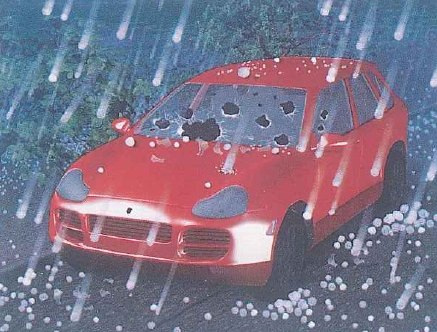
Đọc bài blog (hoặc bấm ▶ Nghe và đọc) rồi trả lời câu 1–12.
Bài đọc | Câu hỏi
Đã nghe 0 lần
What if …?
Randall Monroe is a scientist and he used to work for NASA. One day he started a blog called What if …? Every week people send Randall questions about unlikely or impossible things, and Randall gives scientific answers.
Here are some What … if …? questions about weather and nature.
What would happen if lightning hit you in a submarine? What if you were in a boat?
If you were in a submarine, you'd be safe because you'd be underwater. However, lightning usually hits the tallest thing, so if you were on a flat surface, like in a boat on the sea, you wouldn't be as safe.
Would I be safe if I was in a swimming pool during a thunderstorm?
You wouldn't be safe if your head was above the water. Lightning might hit you. And if the lightning hit the water near you, the electrical energy would spread outwards across the water.
If it was raining, how fast would you have to drive to break the car windscreen?
The rain would break the glass if you drove at the speed of sound. But if you did that, the car would take off! Rain wouldn't break the glass if you drove at a normal speed. But in freezing temperatures, hail would break the windscreen if you drove fast. In fact, that sometimes happens in some parts of the world.
What if …?
Randall Monroe is a scientist and he used to work for NASA.Q2One day he started a blog called What if …?Q1Every week people send Randall questions about unlikely or impossible things, and Randall gives scientific answers.Q1,Q3
Here are some What … if …? questions about weather and nature.
What would happen if lightning hit you in a submarine? What if you were in a boat?
If you were in a submarine, you'd be safe because you'd be underwater.Q5,Q12However, lightning usually hits the tallest thing, so if you were on a flat surface, like in a boat on the sea, you wouldn't be as safe.Q4,Q5
Would I be safe if I was in a swimming pool during a thunderstorm?
You wouldn't be safe if your head was above the water.Q8,Q12Lightning might hit you.Q6,Q8And if the lightning hit the water near you, the electrical energy would spread outwards across the water.Q7,Q8
If it was raining, how fast would you have to drive to break the car windscreen?
The rain would break the glass if you drove at the speed of sound.Q9,Q12But if you did that, the car would take off!Q9,Q10Rain wouldn't break the glass if you drove at a normal speed.Q11But in freezing temperatures, hail would break the windscreen if you drove fast.Q11,Q12In fact, that sometimes happens in some parts of the world.Q11
Dịch nghĩa của bài đọc hiện sau khi bấm Xem đáp án.
Dịch nghĩa
Randall Monroe là một nhà khoa học và từng làm việc cho NASA. Một ngày nọ, anh lập một blog tên là What if …? (Nếu … thì sao?). Tuần nào cũng có người gửi cho Randall những câu hỏi về những chuyện khó xảy ra hoặc không thể xảy ra, và Randall trả lời chúng bằng kiến thức khoa học.
Dưới đây là một số câu hỏi kiểu What … if …? (Điều gì … nếu …?) về thời tiết và thiên nhiên.
Điều gì sẽ xảy ra nếu bạn bị sét đánh khi đang ở trong tàu ngầm? Còn nếu bạn đang ở trên thuyền thì sao?
Nếu ở trong tàu ngầm, bạn sẽ an toàn vì bạn đang ở dưới nước. Tuy nhiên, sét thường đánh vào vật cao nhất, nên nếu bạn ở trên một bề mặt bằng phẳng, chẳng hạn trên một chiếc thuyền giữa biển, bạn sẽ không an toàn bằng.
Tôi có an toàn không nếu tôi đang ở trong bể bơi khi có giông sét?
Bạn sẽ không an toàn nếu đầu bạn nhô lên khỏi mặt nước. Sét có thể đánh trúng bạn. Còn nếu sét đánh xuống mặt nước gần chỗ bạn, năng lượng điện sẽ lan tỏa ra khắp mặt nước.
Nếu trời đang mưa, bạn phải lái xe nhanh đến mức nào thì mưa mới làm vỡ được kính chắn gió ô tô?
Mưa sẽ làm vỡ kính nếu bạn lái xe với tốc độ âm thanh. Nhưng nếu bạn làm thế thật, chiếc xe sẽ cất cánh bay lên! Mưa sẽ không làm vỡ kính nếu bạn lái với tốc độ bình thường. Nhưng khi nhiệt độ xuống dưới mức đóng băng, mưa đá sẽ làm vỡ kính chắn gió nếu bạn lái xe nhanh. Thực tế, chuyện này đôi khi vẫn xảy ra ở một số nơi trên thế giới.
1What is the main purpose of Randall's blog?
1What is the main purpose of Randall's blog?
Độc giả gửi câu hỏi về “unlikely or impossible things” và Randall “gives scientific answers”: tình huống là tưởng tượng, nhưng kiến thức khoa học là thật. NASA chỉ là nơi anh từng làm việc, và không ai gửi đến những thảm họa có thật hay chuyện mình từng trải qua.Gợi ý: Đoạn đầu: “unlikely or impossible things” (chuyện khó xảy ra hoặc không thể xảy ra) + “scientific answers” (câu trả lời khoa học).
Trong bài:One day he started a blog called What if …?Every week people send Randall questions about unlikely or impossible things, and Randall gives scientific answers.
2Randall Monroe is a scientist and he used to work for NASA. What can we infer?
2Randall Monroe is a scientist and he used to work for NASA. What can we infer?
NASA thuộc về quá khứ của anh (SB Ex 4.1: No). Thì hiện tại trong is a scientist cho thấy hiện nay anh vẫn là nhà khoa học, và bài không hề liên hệ NASA với blog.Gợi ý: “used to” + động từ = thói quen hoặc trạng thái trong quá khứ, nay không còn đúng nữa.
Trong bài:Randall Monroe is a scientist and he used to work for NASA.
3Which of these questions would Randall most probably answer on his blog?
3Which of these questions would Randall most probably answer on his blog?
Mưa suốt một năm không ngớt là chuyện sẽ không xảy ra, nhưng khoa học vẫn có thể cho biết khi đó điều gì sẽ diễn ra, nên câu hỏi này phù hợp. Các câu còn lại hỏi về dự báo thời tiết, một mốc thời gian, mẹo mua sắm hay một con số: toàn là thông tin thực tế, không có tình huống tưởng tượng nào.Gợi ý: Blog nhận những câu hỏi về “unlikely or impossible things”, tức là những tình huống khó có thật hoặc không thể có thật.
Trong bài:Every week people send Randall questions about unlikely or impossible things, and Randall gives scientific answers.
4According to the first answer, why would you be in more danger in a small boat than in a submarine?
4According to the first answer, why would you be in more danger in a small boat than in a submarine?
Giữa biển trống trải, không có gì cao hơn chiếc thuyền, nên thuyền trở thành vật cao nhất xung quanh. Tàu ngầm an toàn vì một lý do khác: nó ở dưới nước. Bài không nói gì về kim loại, thiết bị đặc biệt, sóng hay tốc độ.Gợi ý: “However, lightning usually hits the tallest thing, so …”: sét thường đánh vào vật cao nhất, nên …
Trong bài:However, lightning usually hits the tallest thing, so if you were on a flat surface, like in a boat on the sea, you wouldn't be as safe.
5… like in a boat on the sea, you wouldn't be as safe. As safe as what?
5… like in a boat on the sea, you wouldn't be as safe. As safe as what?
Câu đầu nói “If you were in a submarine, you'd be safe”, và chiếc thuyền được so với điều đó: kém an toàn hơn tàu ngầm. Bể bơi và ô tô đến các câu trả lời sau mới xuất hiện, còn vật cao nhất là nơi sét đánh vào, không phải chỗ an toàn.Gợi ý: “as safe” so sánh với một điều đã nói ở câu ngay trước.
Trong bài:If you were in a submarine, you'd be safe because you'd be underwater.However, lightning usually hits the tallest thing, so if you were on a flat surface, like in a boat on the sea, you wouldn't be as safe.
6Lightning might hit you. Which sentence means almost the same?
6Lightning might hit you. Which sentence means almost the same?
Randall không thể khẳng định bạn sẽ bị sét đánh, chỉ nói điều đó có thể xảy ra, và thế là đủ để bạn không an toàn. Would certainly hay has to sẽ biến nó thành điều chắc chắn, còn might ở đây nói về hiện tại hoặc tương lai, không phải quá khứ.Gợi ý: “might” + động từ = một khả năng, yếu hơn “would” (câu điều kiện loại 2 hay dùng “could” hoặc “might” ở mệnh đề chính).
Trong bài:Lightning might hit you.
7… the electrical energy would spread outwards across the water. What does spread outwards mean?
7… the electrical energy would spread outwards across the water. What does spread outwards mean?
Sét đánh xuống mặt nước tại một điểm gần bạn, và từ đó năng lượng của nó lan đi khắp mặt nước theo mọi hướng, giống những vòng sóng loang trên mặt ao. Vì thế nó vẫn có thể tới được người đang bơi dù không đánh trúng người đó.Gợi ý: Ghi chú TB: “spread outwards” = lan ra từ một điểm ở giữa theo mọi hướng.
Trong bài:And if the lightning hit the water near you, the electrical energy would spread outwards across the water.
8What does the answer about the swimming pool suggest?
8What does the answer about the swimming pool suggest?
Mối nguy thứ nhất là sét đánh thẳng vào đầu bạn. Mối nguy thứ hai thì khác: sét đánh xuống mặt nước gần bạn rồi năng lượng lan khắp mặt nước, nên vẫn tới được bạn. Bài không hề nói nước bảo vệ người bơi, cũng không so sánh bể bơi trong nhà với bể bơi ngoài trời.Gợi ý: Hai mối nguy: “Lightning might hit you” và “if the lightning hit the water near you …”.
Trong bài:You wouldn't be safe if your head was above the water.Lightning might hit you.And if the lightning hit the water near you, the electrical energy would spread outwards across the water.
9But if you did that, the car would take off! What does the writer mean?
9But if you did that, the car would take off! What does the writer mean?
did that chỉ lại việc lái xe “at the speed of sound”, khoảng 1.200 km/h (TB). Ở tốc độ đó, ô tô sẽ bị nhấc khỏi mặt đường, nên chẳng ai có thể thử thật ý tưởng này. Take off ở đây không liên quan gì đến nghĩa cởi bỏ hay tháo một thứ gì ra.Gợi ý: “take off” = rời khỏi mặt đất và bắt đầu bay, như máy bay cất cánh.
Trong bài:The rain would break the glass if you drove at the speed of sound.But if you did that, the car would take off!
10Why does the writer end the car would take off with an exclamation mark?
10Why does the writer end the car would take off with an exclamation mark?
Một chiếc ô tô bay lên là kết quả bất ngờ và hơi ngớ ngẩn, và dấu ! chia sẻ câu đùa đó với người đọc. Ngay sau đó tác giả quay lại với khoa học (tốc độ bình thường, rồi đến mưa đá), nên anh đang vui đùa chứ không phàn nàn, cảnh báo hay thừa nhận mình sai.Gợi ý: Giọng điệu: dấu chấm than đứng sau một ý tưởng đáng kinh ngạc hoặc buồn cười.
Trong bài:But if you did that, the car would take off!
11In fact, that sometimes happens in some parts of the world. What does that refer to?
11In fact, that sometimes happens in some parts of the world. What does that refer to?
“But in freezing temperatures, hail would break the windscreen if you drove fast.” Đây là tình huống duy nhất trong câu trả lời có xảy ra thật; mưa khi xe chạy với tốc độ bình thường thì không làm vỡ kính, còn chẳng ai lái xe với tốc độ âm thanh.Gợi ý: Quy chiếu: “that” chỉ lại câu ngay trước nó.
Trong bài:Rain wouldn't break the glass if you drove at a normal speed.But in freezing temperatures, hail would break the windscreen if you drove fast.In fact, that sometimes happens in some parts of the world.
12What do the three answers have in common?
12What do the three answers have in common?
Cả ba đều bắt đầu từ một tình huống tưởng tượng (If you were …, You wouldn't be safe if …, The rain would break the glass if …) rồi giải thích nó: bạn ở dưới nước, năng lượng sẽ lan ra, chỉ có mưa đá cộng với xe chạy nhanh mới làm vỡ kính. Câu thứ ba nói về mưa và mưa đá chứ không phải sét, và hai trong ba câu trả lời nói bạn sẽ không an toàn.Gợi ý: Câu hỏi tổng quát: xem mỗi câu trả lời mở đầu thế nào và đưa ra lý do gì.
Trong bài:If you were in a submarine, you'd be safe because you'd be underwater.You wouldn't be safe if your head was above the water.The rain would break the glass if you drove at the speed of sound.But in freezing temperatures, hail would break the windscreen if you drove fast.
2 · Luyện thêm · PET Reading Part 2 · Những chuyến đi cuối tuần về với thiên nhiên
Câu 6–10. Đọc thông tin về năm người và sáu mẩu quảng cáo (A–F). Chọn chuyến đi phù hợp nhất với từng người. Có một quảng cáo không dùng đến.
Bài đọc | Câu hỏi
Weekend trips into nature
ADawn Birdwatching Walk(walk)Every Saturday and Sunday from 5.30 to 7.30 a.m., join our guide for a walk round Lakeside Park, right in the city centre, while the birds are at their loudest. You'll learn to recognise the most common birds by their songs as well as by sightQ9, and everyone can borrow binoculars. The paths are flat and easy. Free, and there's no need to book.
BMangrove Kayak Morning(boat trip)Paddle a kayak through a mangrove forest where the river meets the sea, an hour and a half from the city by minibus.Q10 You'll see crabs, mudskippers and herons up close, and our guides explain how mangroves help to protect the coast from storms. Life jackets are provided, but every paddler must be able to swim. Sundays only: we leave the city at 6 a.m. and are back by 1 p.m.Q10
CAfter Dark: Insect Walk(evening walk) When Green Hill Botanical Garden closes, a different world wakes up. Join an insect scientist for a 90-minute walk by torchlight to find stick insects, moths and fireflies. Children aged five and over are very welcome, and every child gets a magnifying glass to keep.Q6Fridays at 7.30 p.m.; the garden is two minutes from the number 9 bus stop.Q6
DMountain Photography Weekend(course)Spend Saturday and Sunday in the mountains with an award-winning nature photographer, who will show you how to take sharp close-ups of flowers, leaves and insectsQ8 and how to photograph a valley at sunrise. Expect to walk up to ten kilometres a day on steep paths.Q8 We sleep in a simple mountain lodge. Bring any camera; a phone is fine.
ETwo Nights on the Farm(farm stay) Stay with the Trần family on their farm in the hills, two hours from the city, from Friday evening to Sunday afternoon. Help pick vegetables, feed the ducks and cook dinner with what you've gathered. There's no Wi-Fi and the phone signal is weak, so it's a real break from screens.Q7 Rooms are simple but comfortable, and all meals are included.
FUnderground River Cave Tour(cave tour) Travel by small boat along an underground river, then continue on foot through huge caves full of strange rock shapes. Helmets with lamps are provided. Some passages are low and narrow, so this tour is not for anyone who dislikes small spaces. Minimum age twelve. Four hours, including a picnic lunch.
Dịch nghĩa của bài đọc hiện sau khi bấm Xem đáp án.
Dịch nghĩa
A · Dawn Birdwatching Walk (đi bộ) Ngắm chim lúc bình minh) Mỗi thứ Bảy và Chủ nhật, từ 5 giờ 30 đến 7 giờ 30 sáng, hãy cùng hướng dẫn viên của chúng tôi đi dạo quanh công viên Lakeside, ngay giữa trung tâm thành phố, đúng lúc chim hót rộn ràng nhất. Bạn sẽ học cách nhận ra những loài chim phổ biến nhất qua tiếng hót cũng như qua hình dáng, và ai cũng được mượn ống nhòm. Đường đi bằng phẳng, dễ đi. Miễn phí, không cần đặt chỗ trước.
B · Mangrove Kayak Morning (đi thuyền) Một buổi sáng chèo kayak trong rừng ngập mặn) Chèo thuyền kayak xuyên qua một khu rừng ngập mặn nơi sông đổ ra biển, cách thành phố một tiếng rưỡi đi xe khách nhỏ. Bạn sẽ được ngắm cua, cá thòi lòi và diệc ở khoảng cách rất gần, và các hướng dẫn viên sẽ giải thích rừng ngập mặn giúp bảo vệ bờ biển khỏi bão như thế nào. Có sẵn áo phao, nhưng ai chèo thuyền cũng phải biết bơi. Chỉ tổ chức vào Chủ nhật: xuất phát từ thành phố lúc 6 giờ sáng và về trước 1 giờ chiều.
C · After Dark: Insect Walk (đi bộ buổi tối) Khi trời tối, đi tìm côn trùng) Khi Vườn bách thảo Green Hill đóng cửa, một thế giới khác bừng tỉnh. Hãy cùng một nhà nghiên cứu côn trùng đi bộ 90 phút dưới ánh đèn pin để tìm bọ que, bướm đêm và đom đóm. Trẻ em từ năm tuổi trở lên rất được chào đón, và mỗi em được tặng một chiếc kính lúp mang về. Tối thứ Sáu, lúc 7 giờ 30; vườn cách bến xe buýt số 9 hai phút đi bộ.
D · Mountain Photography Weekend (khóa học) Cuối tuần chụp ảnh trên núi) Dành trọn thứ Bảy và Chủ nhật trên núi cùng một nhiếp ảnh gia thiên nhiên từng đoạt giải, người sẽ chỉ cho bạn cách chụp cận cảnh hoa, lá và côn trùng thật sắc nét, cũng như cách chụp một thung lũng lúc mặt trời mọc. Mỗi ngày bạn sẽ đi bộ tới mười cây số trên những con đường dốc. Chúng ta ngủ trong một nhà nghỉ đơn sơ trên núi. Mang theo máy ảnh loại nào cũng được; dùng điện thoại cũng không sao.
E · Two Nights on the Farm (nghỉ ở trang trại) Hai đêm ở nông trại) Ở cùng gia đình họ Trần tại trang trại của họ trên vùng đồi, cách thành phố hai tiếng, từ tối thứ Sáu đến chiều Chủ nhật. Bạn sẽ phụ hái rau, cho vịt ăn và nấu bữa tối bằng chính những thứ mình vừa thu hái. Ở đây không có Wi-Fi và sóng điện thoại yếu, nên đây là một dịp thật sự rời xa màn hình. Phòng ở đơn giản nhưng thoải mái, đã bao gồm tất cả các bữa ăn.
F · Underground River Cave Tour (tham quan hang động) Khám phá hang có sông ngầm) Đi thuyền nhỏ dọc theo một dòng sông ngầm, sau đó đi bộ tiếp qua những hang động khổng lồ đầy những khối đá hình thù kỳ lạ. Có sẵn mũ bảo hộ gắn đèn. Một số lối đi thấp và hẹp, nên tour này không dành cho người sợ không gian chật hẹp. Tuổi tối thiểu là mười hai. Thời gian bốn tiếng, đã gồm bữa trưa picnic.
6Mrs Lan works in an office all day, so she can only take her children, aged seven and nine, out in the evening. The family has no car. Both children are crazy about bugs, and they love bringing home something to remember a trip by.
6Mrs Lan works in an office all day, so she can only take her children, aged seven and nine, out in the evening. The family has no car. Both children are crazy about bugs, and they love bringing home something to remember a trip by.
C: tối thứ Sáu lúc 7.30, “two minutes from the number 9 bus stop”, trẻ em “aged five and over”, đi tìm côn trùng dưới ánh đèn pin, và “every child gets a magnifying glass to keep”. A cũng ở trong thành phố nhưng bắt đầu lúc 5.30 sáng; F yêu cầu tối thiểu mười hai tuổi.Gợi ý: Mrs Lan: chỉ đi được buổi tối + không có ô tô + hai con bảy và chín tuổi mê côn trùng, thích mang đồ kỷ niệm về nhà.
Trong bài:Join an insect scientist for a 90-minute walk by torchlight to find stick insects, moths and fireflies. Children aged five and over are very welcome, and every child gets a magnifying glass to keep.Fridays at 7.30 p.m.; the garden is two minutes from the number 9 bus stop.
7Mr and Mrs Bình have just retired. They want to spend a weekend away from their phones and the news, doing real outdoor work with their hands, and they would love to eat meals made from food they have picked themselves.
7Mr and Mrs Bình have just retired. They want to spend a weekend away from their phones and the news, doing real outdoor work with their hands, and they would love to eat meals made from food they have picked themselves.
E: “Help pick vegetables, feed the ducks and cook dinner with what you've gathered”, và “no Wi-Fi and the phone signal is weak”. D cũng là chuyến đi cuối tuần, nhưng xoay quanh việc chụp ảnh (dùng điện thoại cũng được) và những chặng đi bộ dài, dốc.Gợi ý: Mr and Mrs Bình: một kỳ cuối tuần không điện thoại, không tin tức + làm việc chân tay ngoài trời + ăn thức ăn tự tay mình hái.
Trong bài:Help pick vegetables, feed the ducks and cook dinner with what you've gathered. There's no Wi-Fi and the phone signal is weak, so it's a real break from screens.
8Hùng, a third-year cadet, has the whole weekend free and loves long, tough walks. He has started taking pictures of tiny flowers and insects with his phone, but they always come out blurred, and he wants an expert to show him what he is doing wrong.
8Hùng, a third-year cadet, has the whole weekend free and loves long, tough walks. He has started taking pictures of tiny flowers and insects with his phone, but they always come out blurred, and he wants an expert to show him what he is doing wrong.
D: thứ Bảy và Chủ nhật cùng “an award-winning nature photographer”, người dạy chụp “sharp close-ups of flowers, leaves and insects”, và đi bộ “up to ten kilometres a day on steep paths”. C cũng có chuyên gia và côn trùng, nhưng chỉ là một buổi đi bộ ngắn buổi tối và không ai dạy chụp ảnh.Gợi ý: Hùng: rảnh cả cuối tuần + thích đi bộ đường dài, vất vả + cần chuyên gia chỉ lỗi khiến ảnh cận cảnh bị mờ.
Trong bài:Spend Saturday and Sunday in the mountains with an award-winning nature photographer, who will show you how to take sharp close-ups of flowers, leaves and insectsExpect to walk up to ten kilometres a day on steep paths.
9Phương is a nurse at a hospital in the city centre. Her night shift ends at 5 a.m., and she would like to spend an hour or two outdoors before she goes to bed. She can't swim, and she wants to find out the names of the birds she hears singing outside the ward window.
9Phương is a nurse at a hospital in the city centre. Her night shift ends at 5 a.m., and she would like to spend an hour or two outdoors before she goes to bed. She can't swim, and she wants to find out the names of the birds she hears singing outside the ward window.
A: từ 5.30 đến 7.30 sáng trong một công viên “right in the city centre”, nơi bạn học cách “recognise the most common birds by their songs”. B có diệc, nhưng phải đi xa khỏi thành phố và ai chèo thuyền cũng phải biết bơi.Gợi ý: Phương: sáng sớm sau ca trực đêm + ở trung tâm thành phố + những loài chim chị nghe thấy tiếng hót.
Trong bài:Every Saturday and Sunday from 5.30 to 7.30 a.m., join our guide for a walk round Lakeside Park, right in the city centre, while the birds are at their loudest. You'll learn to recognise the most common birds by their songs as well as by sight
10Quân and three friends from the academy swimming team have a free Sunday morning, but they must be back for a training session at two. They want to be out on the water and see the creatures that live where fresh water and salt water meet.
10Quân and three friends from the academy swimming team have a free Sunday morning, but they must be back for a training session at two. They want to be out on the water and see the creatures that live where fresh water and salt water meet.
B: chèo kayak trong rừng ngập mặn “where the river meets the sea”, “every paddler must be able to swim”, và cả nhóm về đến thành phố trước 1 giờ chiều. F cũng đi thuyền, nhưng trên sông ngầm, chẳng gần biển chút nào.Gợi ý: Quân: bơi giỏi + muốn ra mặt nước + nơi nước ngọt gặp nước mặn + phải về trước hai giờ.
Trong bài:Paddle a kayak through a mangrove forest where the river meets the sea, an hour and a half from the city by minibus.Life jackets are provided, but every paddler must be able to swim. Sundays only: we leave the city at 6 a.m. and are back by 1 p.m.
3 · Luyện thêm · PET Reading Part 3 · Roy Sullivan: người đàn ông bảy lần bị sét đánh
Most people will never be hit by lightning, not even once. Roy Sullivan, a park ranger in the US state of Virginia, was hit seven times between 1942 and 1977, and he survived every strike. Guinness World Records still lists him as the person struck by lightning the most recorded times.Q11
Sullivan began working in Shenandoah National Park in 1936. The first strike came in April 1942. He was sheltering from a storm in a new fire lookout tower, a tall building for watching over the forest, but the tower had no lightning rod. When lightning started hitting it, he ran out, and he was struck a few steps from the door.Q12 It burned a line down his right leg and left a hole in his shoe.
Then nothing happened for twenty-seven years. In July 1969, lightning hit the trees beside a mountain road and came in through the open window of his truck. It knocked him unconscious and burned off his eyebrows and eyelashes. A year later, it hit a power transformer near his house and jumped to his left shoulder.
After his hair caught fire inside a ranger station in 1972, Sullivan began to fear that the next strike would kill him. From then on, he carried water in his truck, and whenever a storm came, he pulled over and lay down until it had passed.Q13 It did not help much. He was hit again in 1973 while he was out on patrol, in 1976, and for the last time in 1977, while he was fishing.Q13
Being famous for lightning was lonely. Other people did not want to stand next to him when the sky went dark. Once, when there was lightning far away, a chief ranger walked off with the words ‘I'll see you later.’Q14 Sullivan found this very sad. The head of the park recorded all seven, but he never saw any of them himself, and much of the story rests on Sullivan's own word, so some people doubt parts of it.Q15
Dịch nghĩa của bài đọc hiện sau khi bấm Xem đáp án.
Dịch nghĩa
Phần lớn mọi người sẽ không bao giờ bị sét đánh, dù chỉ một lần. Roy Sullivan, một nhân viên kiểm lâm ở bang Virginia của Mỹ, đã bị sét đánh bảy lần trong khoảng từ năm 1942 đến năm 1977, và lần nào ông cũng sống sót. Đến nay, Sách Kỷ lục Guinness Thế giới vẫn ghi nhận ông là người bị sét đánh nhiều lần nhất từng được ghi lại.
Sullivan bắt đầu làm việc ở Vườn quốc gia Shenandoah năm 1936. Lần bị sét đánh đầu tiên xảy ra vào tháng 4 năm 1942. Khi đó ông đang trú bão trong một tháp canh lửa mới xây, tức một công trình cao để canh chừng khu rừng, nhưng tháp lại không có cột thu lôi. Khi sét bắt đầu đánh vào tháp, ông chạy ra ngoài và bị sét đánh trúng khi chỉ cách cửa vài bước chân. Tia sét để lại một vệt bỏng chạy dọc chân phải và làm thủng một lỗ trên giày của ông.
Sau đó, suốt hai mươi bảy năm không có chuyện gì xảy ra. Tháng 7 năm 1969, sét đánh vào hàng cây bên một con đường núi rồi lọt qua cửa sổ đang mở của chiếc xe tải ông lái. Cú sét làm ông bất tỉnh và thiêu trụi lông mày, lông mi của ông. Một năm sau, sét đánh vào một máy biến áp gần nhà ông rồi phóng sang vai trái của ông.
Sau khi tóc ông bốc cháy trong một trạm kiểm lâm năm 1972, Sullivan bắt đầu sợ lần sét đánh tiếp theo sẽ lấy mạng mình. Từ đó trở đi, ông luôn mang theo nước trên xe tải, và hễ có giông bão là ông tấp xe vào lề, nằm xuống cho đến khi cơn bão qua hẳn. Cách ấy cũng không giúp được mấy. Ông lại bị sét đánh năm 1973 khi đang đi tuần tra, năm 1976, và lần cuối cùng vào năm 1977, khi đang câu cá.
Nổi tiếng vì sét hóa ra lại khiến ông cô đơn. Mỗi khi trời tối sầm lại, người khác không muốn đứng cạnh ông. Có lần, khi sét còn ở rất xa, một trưởng kiểm lâm đã bỏ đi với câu: ‘Hẹn gặp lại anh sau nhé.’ Sullivan thấy chuyện đó rất buồn. Giám đốc vườn quốc gia đã ghi nhận cả bảy lần, nhưng chính ông chưa tận mắt chứng kiến lần nào, và phần lớn câu chuyện dựa vào lời kể của chính Sullivan, nên có người vẫn nghi ngờ một vài chi tiết.
11What does the first paragraph tell us about Roy Sullivan?
11What does the first paragraph tell us about Roy Sullivan?
Ông bị sét đánh “seven times”, và Guinness ghi nhận ông là “the person struck by lightning the most recorded times”, nên không ai có số lần bị sét đánh được ghi nhận nhiều hơn ông. Các lần bị sét đánh rải rác trong ba mươi lăm năm, và bài không hề gọi ông là người đầu tiên sống sót sau khi bị sét đánh.Gợi ý: Đoạn 1: “Guinness World Records still lists him as …” (Guinness vẫn ghi nhận ông là …).
Trong bài:Most people will never be hit by lightning, not even once. Roy Sullivan, a park ranger in the US state of Virginia, was hit seven times between 1942 and 1977, and he survived every strike. Guinness World Records still lists him as the person struck by lightning the most recorded times.
12What happened in April 1942?
12What happened in April 1942?
Tháp không có gì bảo vệ nên ông rời khỏi đó, và sét đánh trúng ông ngay bên ngoài. Ông không đứng trên đỉnh tháp canh, bài không nói tháp bốc cháy, và cái lỗ trên giày là do sét làm hỏng chứ không phải ông đánh mất giày.Gợi ý: Đoạn 2: “the tower had no lightning rod” (tháp không có cột thu lôi) … “he ran out, and he was struck a few steps from the door”.
Trong bài:The first strike came in April 1942. He was sheltering from a storm in a new fire lookout tower, a tall building for watching over the forest, but the tower had no lightning rod. When lightning started hitting it, he ran out, and he was struck a few steps from the door.
13How did Sullivan change after 1972?
13How did Sullivan change after 1972?
Sau năm 1972, ông mang theo nước và hễ có bão là tấp xe vào lề nằm xuống: đó là những cách tự bảo vệ. Ông vẫn tiếp tục làm việc trong vườn quốc gia (năm 1973 ông bị sét đánh khi đang đi tuần), nên ông không thôi làm việc ngoài trời, cũng không chuyển đi nơi khác.Gợi ý: Đoạn 4: “began to fear … From then on, he …” (bắt đầu sợ … từ đó trở đi, ông …).
Trong bài:After his hair caught fire inside a ranger station in 1972, Sullivan began to fear that the next strike would kill him. From then on, he carried water in his truck, and whenever a storm came, he pulled over and lay down until it had passed.He was hit again in 1973 while he was out on patrol, in 1976, and for the last time in 1977, while he was fishing.
14Why does the writer tell the story of the chief ranger?
14Why does the writer tell the story of the chief ranger?
Chuyện viên trưởng kiểm lâm là một ví dụ cho ý này: khi sét còn ở xa, ông ta đã bỏ đi và nói “I'll see you later.” Ý chính là mọi người sợ đứng gần Sullivan, chứ không phải họ ghét ông hay không tin ông, và cũng không có ai khác bị sét đánh.Gợi ý: Đoạn 5: “Other people did not want to stand next to him …” (người khác không muốn đứng cạnh ông …).
Trong bài:Being famous for lightning was lonely. Other people did not want to stand next to him when the sky went dark. Once, when there was lightning far away, a chief ranger walked off with the words “I'll see you later.”
15Which of these best describes the writer's view of Sullivan's story?
15Which of these best describes the writer's view of Sullivan's story?
Rõ ràng tác giả thấy kỷ lục này đáng kinh ngạc, nhưng cũng thẳng thắn nói rằng giám đốc vườn quốc gia “never saw any of them himself” và “much of the story rests on Sullivan's own word, so some people doubt parts of it.” Như vậy câu chuyện không phải “completely invented” (các lần bị sét đánh đều được ghi nhận), cũng không phải “proved in every detail by people who saw the strikes”.Gợi ý: Câu hỏi tổng quát: đoạn cuối + những thông tin tác giả chọn đưa vào bài.
Trong bài:The head of the park recorded all seven, but he never saw any of them himself, and much of the story rests on Sullivan's own word, so some people doubt parts of it.
4 · Luyện thêm · PET Reading Part 4 · Đêm nước sông tràn vào thị trấn
Câu 16–20. Chọn câu (A–F) phù hợp với mỗi chỗ trống. Có một câu không dùng đến.
Bài đọc | Câu hỏi
The night the river came into town
Last October, after three days of heavy rain, our team of medical cadets was sent to a small town in central Vietnam that the floodwater had cut off from the rest of the province. I had seen floods on the news many times, but never with my own eyes.Q16(16) ……………The road ended at a primary school on a hill, which had become home for about two hundred people.Q16
Our job sounded simple: check everyone, treat small injuries and stop anyone getting ill from the dirty water.Q17(17) ……………Most of our patients had cuts on their feet from walking through the water, and hardly anyone had slept.Q17
On the second night, just after midnight, a fisherman arrived at the school in a small boat, soaking wet and out of breath.Q18(18) ……………Captain Nam chose two of us to go back with him, and I was one of them.Q18
The boat moved slowly along streets that had turned into a river.Q16We found Mrs Tư on the roof of her kitchen, holding a torch in one hand and a bag of rice in the other.Q19(19) ……………We all laughed, and she laughed too, and we promised to go back for them in the morning.Q19
We never found the chickens.Q19,Q20(20) ……………I have treated many patients since then, but whenever I hear heavy rain at night, I think of her standing by that road.Q20
Dịch nghĩa của bài đọc hiện sau khi bấm Xem đáp án.
Dịch nghĩa
Tháng Mười năm ngoái, sau ba ngày mưa lớn, đội học viên quân y chúng tôi được điều đến một thị trấn nhỏ ở miền Trung bị nước lũ chia cắt với phần còn lại của tỉnh. Tôi đã xem lũ trên tivi nhiều lần nhưng chưa bao giờ tận mắt chứng kiến. (16) …………… Con đường dừng lại ở một trường tiểu học trên đồi, nơi đã trở thành chỗ ở của khoảng hai trăm người.
Nhiệm vụ của chúng tôi nghe có vẻ đơn giản: khám cho tất cả mọi người, xử lý các vết thương nhẹ và không để ai bị bệnh vì nước bẩn. (17) …………… Hầu hết bệnh nhân bị những vết cắt ở bàn chân do lội qua nước, và gần như chẳng ai được ngủ.
Đêm thứ hai, vừa quá nửa đêm, một ngư dân chèo chiếc thuyền nhỏ đến trường, người ướt sũng và thở không ra hơi. (18) …………… Đại úy Nam chọn hai người trong chúng tôi cùng người ngư dân quay lại, và tôi là một trong hai người đó.
Con thuyền chậm chạp đi dọc những con phố đã biến thành dòng sông. Chúng tôi thấy bà Tư trên mái căn bếp nhà bà, một tay cầm đèn pin, tay kia ôm túi gạo. (19) …………… Tất cả chúng tôi đều bật cười, bà cũng cười theo, và chúng tôi hứa sáng hôm sau sẽ quay lại tìm chúng cho bà.
Chúng tôi chẳng bao giờ tìm thấy đàn gà. (20) …………… Từ đó đến nay tôi đã chữa cho rất nhiều bệnh nhân, nhưng mỗi khi nghe tiếng mưa lớn ban đêm, tôi lại nghĩ đến hình ảnh bà đứng bên con đường ấy.
A In practice, it meant forty patients before lunch and a queue that never seemed to get any shorter.
B She was cold and frightened, but the first thing she asked about was her chickens.
C From the back of the army truck, I watched brown water cover the rice fields as far as I could see.
D By the next morning, the water had gone down and the town was dry again.
E His neighbour, an old woman who lived alone, had refused to leave her house, and the water was still rising.
F But when we left the town a week later, Mrs Tư was waiting by the road with a bag of bananas for the whole team.
16Chỗ trống 16
16Chỗ trống 16
C: giờ người viết mới lần đầu tận mắt thấy lũ, “From the back of the army truck”, và con đường xe tải đi sau đó dừng ở ngôi trường. D (nước đã rút) không hợp với chỗ nào: đến đêm thứ hai, các con phố vẫn còn là một dòng sông.Gợi ý: Trước chỗ trống: “never with my own eyes” (chưa bao giờ tận mắt thấy); sau chỗ trống: “The road ended at …”.
Trong bài:I had seen floods on the news many times, but never with my own eyes.The road ended at a primary school on a hill, which had become home for about two hundred people.The boat moved slowly along streets that had turned into a river.
17Chỗ trống 17
17Chỗ trống 17
A: “In practice, it meant forty patients before lunch …”. sounded simple → In practice: cụm này đối lập kế hoạch với thực tế, và câu sau mô tả chính những bệnh nhân đó.Gợi ý: Trước chỗ trống: “Our job sounded simple” (công việc nghe có vẻ đơn giản). Câu nào cho thấy thực tế công việc ra sao?
Trong bài:Our job sounded simple: check everyone, treat small injuries and stop anyone getting ill from the dirty water.Most of our patients had cuts on their feet from walking through the water, and hardly anyone had slept.
18Chỗ trống 18
18Chỗ trống 18
E cho biết vì sao ông ấy đến: người hàng xóm của ông “had refused to leave her house, and the water was still rising.” Đó chính là lý do của chuyến đi cứu người ở câu tiếp theo.Gợi ý: Trước: một ngư dân đi thuyền đến lúc nửa đêm; sau: Đại úy Nam cử hai học viên quay lại cùng ông ấy.
Trong bài:On the second night, just after midnight, a fisherman arrived at the school in a small boat, soaking wet and out of breath.Captain Nam chose two of us to go back with him, and I was one of them.
19Chỗ trống 19
19Chỗ trống 19
B: “the first thing she asked about was her chickens.” Chính điều đó làm mọi người bật cười, và them = mấy con gà, những con mà đoạn sau nói là cả nhóm không bao giờ tìm thấy.Gợi ý: Sau chỗ trống: “We all laughed … go back for them”. “them” là ai, hay là cái gì?
Trong bài:We found Mrs Tư on the roof of her kitchen, holding a torch in one hand and a bag of rice in the other.We all laughed, and she laughed too, and we promised to go back for them in the morning.We never found the chickens.
20Chỗ trống 20
20Chỗ trống 20
F: “But when we left the town a week later, Mrs Tư was waiting by the road with a bag of bananas …”. But đối lập với chuyện mất đàn gà, còn that road chỉ lại con đường trong câu này.Gợi ý: Trước: “We never found the chickens.” Sau: “I think of her standing by that road.” (tôi nghĩ đến hình ảnh bà đứng bên con đường ấy).
Trong bài:We never found the chickens.I have treated many patients since then, but whenever I hear heavy rain at night, I think of her standing by that road.
5 · Sau khi đọc · Thảo luận
Thảo luận từng câu hỏi theo cặp. Sau đó mở bài mẫu.
1 · Why do people enjoy asking “What if …?” questions about impossible things?
Bài mẫu
PointI think it's because an impossible question lets you play with huge ideas without any real risk. WhyBecause nothing is at stake, people dare to follow an idea much further than they would in class. HowYou pick one rule of nature, break it, and then follow the science step by step to see where it leads. ExampleLast term someone in my platoon wondered aloud whether a mosquito the size of a dog could survive, and six of us spent a whole evening arguing about it over a whiteboard. ResultBy the end of the evening we'd worked out that a giant mosquito probably couldn't even breathe properly, because insects take in air through tiny holes along their bodies, and the next day two of us borrowed a book on insect anatomy from the library. LimitationAdmittedly, some people see these questions as a waste of time when there are real problems to solve. EvaluationOn balance, they're one of the cheapest ways to make people curious about how the world really works.
Dịch nghĩa
Theo tôi, đó là vì một câu hỏi bất khả thi cho phép ta thỏa sức thử những ý tưởng thật lớn mà chẳng phải chịu rủi ro thật nào. Vì chẳng có gì để mất, người ta dám theo đuổi một ý tưởng xa hơn nhiều so với khi ngồi trên lớp. Bạn chọn một quy luật của tự nhiên, phá vỡ nó, rồi lần theo khoa học từng bước một để xem nó dẫn tới đâu. Học kỳ trước, một bạn trong trung đội tôi buột miệng thắc mắc liệu một con muỗi to bằng con chó có sống nổi không, thế là sáu đứa chúng tôi ngồi tranh luận cả buổi tối bên tấm bảng trắng. Đến cuối buổi, chúng tôi đã tìm ra rằng một con muỗi khổng lồ có lẽ còn không thở nổi cho ra hồn, vì côn trùng lấy không khí qua những lỗ nhỏ dọc hai bên thân, và hôm sau hai đứa trong nhóm lên thư viện mượn một cuốn sách về giải phẫu côn trùng. Phải thừa nhận là có người coi những câu hỏi này là phí thời gian, trong khi còn biết bao vấn đề thật cần giải quyết. Nhưng xét cho cùng, đây là một trong những cách ít tốn kém nhất để khiến mọi người tò mò về việc thế giới thực sự vận hành ra sao.
2 · Should science be taught through strange questions like the ones on Randall's blog?
Bài mẫu
PointYes, but as a way into a lesson, not as the whole lesson. WhyA strange question makes students want the answer before they've even seen a formula. HowThe teacher opens with the puzzle, lets everyone guess, and only then brings in the science that settles it. ExampleIn our first-year physics module, the lecturer opened the electricity topic with a single puzzle: would we be safe in a car if lightning struck it? ResultMost of us said yes because of the rubber tyres: the right answer for the wrong reason. It's the car's metal body that carries the current round the people inside, and nobody in that room has forgotten it since. LimitationOf course, there isn't time to turn every topic into a puzzle, and exams still test the dull basics. EvaluationEven so, two or three good puzzles a term would make the dry parts much easier to sit through.
Dịch nghĩa
Có, nhưng chỉ nên dùng để dẫn vào bài học, chứ không phải để dạy cả bài. Một câu hỏi kỳ lạ khiến học viên muốn biết đáp án ngay cả trước khi nhìn thấy một công thức nào. Giảng viên mở đầu bằng câu đố, để mọi người đoán, rồi mới đưa kiến thức khoa học vào để giải đáp. Ở học phần vật lý năm thứ nhất của chúng tôi, giảng viên mở đầu chủ đề điện bằng đúng một câu đố: nếu sét đánh vào ô tô thì chúng tôi ngồi trong xe có an toàn không? Hầu hết chúng tôi trả lời là có, vì lốp xe làm bằng cao su: đúng đáp án nhưng sai lý do. Chính thân xe bằng kim loại mới dẫn dòng điện đi vòng qua những người ngồi bên trong, và từ hôm ấy đến giờ không ai trong phòng học quên điều này. Tất nhiên, không đủ thời gian để biến chủ đề nào cũng thành câu đố, và các kỳ thi vẫn kiểm tra những kiến thức cơ bản khô khan. Dù vậy, mỗi học kỳ chỉ cần hai, ba câu đố hay là những phần khô khan sẽ dễ ngồi học hơn nhiều.
3 · What is the safest thing to do if a thunderstorm starts while you are outdoors on a field exercise?
Bài mẫu
PointStop the exercise and get everyone into a proper building or a hard-topped vehicle, fast. WhyNo place outside is safe once you can hear thunder, because lightning can strike up to about sixteen kilometres from the storm. HowIn practice, the officer calls it off, the unit leaves the open ground and the tall trees, and everyone waits in a bus or a closed cab, never under a canvas cover, until thirty minutes after the last rumble. ExampleOn a map-reading exercise last May, our instructor heard thunder at about three o'clock and ordered all forty of us onto the bus, even though it wasn't raining yet. ResultTwenty minutes later lightning hit the hill we'd just left, and suddenly nobody minded losing the afternoon. LimitationIf there's no shelter at all, you can only lower the risk: keep away from tall trees and water, and spread the group out so that if one person is hit, the others can give first aid. EvaluationTraining in the rain is part of the job, but training in a thunderstorm is a risk that no exercise is worth.
Dịch nghĩa
Dừng buổi huấn luyện và nhanh chóng đưa mọi người vào một tòa nhà kiên cố hoặc một chiếc xe có mui cứng. Một khi đã nghe thấy tiếng sấm thì không chỗ nào ngoài trời là an toàn, vì sét có thể đánh xa tới khoảng mười sáu cây số tính từ cơn giông. Trên thực tế, sĩ quan chỉ huy cho dừng buổi tập, đơn vị rời khỏi bãi trống và những hàng cây cao, rồi mọi người ngồi chờ trong xe buýt hoặc trong cabin kín, tuyệt đối không trú dưới mui bạt, cho đến ba mươi phút sau tiếng sấm cuối cùng. Trong một buổi tập đọc bản đồ hồi tháng Năm vừa rồi, khoảng ba giờ chiều giáo viên hướng dẫn nghe thấy tiếng sấm và ra lệnh cho cả bốn mươi người chúng tôi lên xe buýt, dù khi đó trời còn chưa mưa. Hai mươi phút sau, sét đánh trúng ngọn đồi chúng tôi vừa rời đi, và bỗng nhiên chẳng ai còn tiếc buổi chiều bị mất nữa. Nếu hoàn toàn không có chỗ trú, ta chỉ có thể giảm bớt nguy cơ: tránh xa cây cao và nguồn nước, đồng thời giãn đội hình ra để nếu một người bị sét đánh thì những người khác còn sơ cứu được. Huấn luyện dưới mưa là một phần của công việc, nhưng huấn luyện giữa trời giông sét là một rủi ro mà không buổi tập nào đáng để đánh đổi.
4 · Should scientists spend time answering the public's questions online?
Bài mẫu
PointI think they should, as long as it doesn't eat into their research. WhyMost people never meet a real scientist, so an online answer may be the only time they hear science explained by someone who actually does it. HowEven an hour a week of short replies or videos can reach thousands of people who don't read science journals. ExampleRandall's blog is a good case: in 2014 it grew into a book, What If?ResultIt went straight to number one on the New York Times bestseller list, so people who'd never pick up a physics textbook were suddenly reading about physics for fun. LimitationThen again, the internet is full of angry comments and false claims, and answering them can swallow hours that a scientist simply hasn't got. EvaluationThe best balance, I'd say, is a few careful answers chosen well rather than trying to reply to everyone.
Dịch nghĩa
Tôi nghĩ là nên, miễn là việc đó không lấn sang thời gian nghiên cứu của họ. Phần lớn mọi người chưa bao giờ gặp một nhà khoa học thật, nên một câu trả lời trên mạng có thể là lần duy nhất họ được nghe chính người làm khoa học giải thích về khoa học. Chỉ cần mỗi tuần một tiếng đồng hồ viết vài câu trả lời ngắn hoặc làm video là đã có thể đến được với hàng nghìn người không đọc tạp chí khoa học. Blog của Randall là một ví dụ rõ ràng: năm 2014, nó trở thành một cuốn sách, What If? Cuốn sách vọt thẳng lên vị trí số một trong danh sách sách bán chạy của New York Times, nên những người chưa bao giờ cầm đến sách giáo khoa vật lý bỗng dưng đọc về vật lý cho vui. Mặt khác, internet đầy rẫy những bình luận giận dữ và thông tin sai, và trả lời chúng có thể ngốn hàng giờ đồng hồ mà một nhà khoa học đơn giản là không có. Theo tôi, cách cân bằng tốt nhất là chọn kỹ một vài câu để trả lời cẩn thận, thay vì cố đáp lại tất cả mọi người.
Sheet 6 / 11 · Track 95–96 của giáo trình + PET Listening Part 1, 3, 4 · 33 câu
Nghe hiểu
Bấm Kiểm tra để xem điểm, rồi bấm Xem đáp án để xem lời thoại và đáp án.
0 bài đã chấm
1 · Bài nghe A · Track 95 · Trời nóng hơn thì bạn có chuyển đi nơi khác không?
Trước khi nghe: nếu mùa hè ở quê bạn nóng thêm năm độ, bạn sẽ ở lại hay chuyển đi nơi khác?
Nghe hai người bạn trò chuyện (SB tr. 143 Ex 9) rồi trả lời câu 1–6.
Bài nghe + lời thoại | Câu hỏi
Đã nghe 0 lần
Lời thoại hiện ra khi bạn bấm Xem đáp án.
Lời thoại
AWould you move to another country if the weather became much hotter in your country?Q1,Q6
BNo, I'd love it if the weather became hotter.Q2,Q6
AI'd go and live somewhere else.Q3,Q4
BWould you?Q3
AYes, I wouldn't want to stay.Q3I'd find a country with a colder climate.Q4,Q5
BOh, I wouldn't.Q5I'd spend every day outside by the pool.Q2,Q5
Dịch nghĩa
A: Nếu thời tiết ở nước mình nóng lên nhiều, cậu có chuyển sang nước khác sống không?
B: Không, trời nóng hơn thì tớ thích lắm.
A: Tớ thì sẽ đi sống ở nơi khác.
B: Thật à?
A: Ừ, tớ không muốn ở lại. Tớ sẽ tìm một nước có khí hậu lạnh hơn.
B: Ồ, tớ thì không. Ngày nào tớ cũng sẽ ở ngoài trời, bên bể bơi.
1What are the two speakers talking about?
1What are the two speakers talking about?
A hỏi một câu kiểu What would you do if …? và cả hai cùng trả lời. Không ai lên kế hoạch đi chơi, đọc dự báo thời tiết hay giải thích biến đổi khí hậu; bể bơi chỉ là một phần trong câu trả lời của B.Gợi ý: Câu đầu tiên nêu chủ đề: “Would you move to another country if …?” (cậu có chuyển sang nước khác không nếu …?).
Trong bài:Would you move to another country if the weather became much hotter in your country?
2How does Speaker B feel about the idea of much hotter weather?
2How does Speaker B feel about the idea of much hotter weather?
B không muốn chuyển đi vì “I'd love it if the weather became hotter”, và cuối đoạn còn hình dung cảnh ở “every day outside by the pool”. Đó là một ý kiến rõ ràng, vui vẻ, không có chút lo lắng hay phân vân nào.Gợi ý: “No, I'd love it if …”: B nói không, rồi nói mình sẽ rất thích nếu …
Trong bài:No, I'd love it if the weather became hotter.I'd spend every day outside by the pool.
3Would you? Why does Speaker B ask this short question?
3Would you? Why does Speaker B ask this short question?
A vừa nói “I'd go and live somewhere else”, trái ngược với quan điểm của B, nên B tỏ ra ngạc nhiên. A hiểu đó là lời hỏi lại cho chắc và trả lời “Yes, I wouldn't want to stay.” B không đồng ý, không rủ rê, cũng không hỏi cụ thể là đi đâu.Gợi ý: Một câu hỏi ngắn như “Would you?” hay “Do you?” dùng để phản ứng lại điều người kia vừa nói.
Trong bài:I'd go and live somewhere else.Would you?Yes, I wouldn't want to stay.
4Which line shows that Speaker A has a clear idea of the kind of place to move to?
4Which line shows that Speaker A has a clear idea of the kind of place to move to?
Somewhere else chỉ có nghĩa là “không phải ở đây”. Câu cuối của A cụ thể hơn: nước mới phải lạnh hơn. Câu về bể bơi là của B, và nói về việc ở lại chứ không phải chuyển đi.Gợi ý: “somewhere else” còn chung chung; “a country with a colder climate” nói rõ đó là loại nơi nào.
Trong bài:I'd go and live somewhere else.I'd find a country with a colder climate.
5Oh, I wouldn't. What wouldn't Speaker B do?
5Oh, I wouldn't. What wouldn't Speaker B do?
A nói “I'd find a country with a colder climate”; B đáp Oh, I wouldn't [find one] rồi nói B sẽ làm gì thay vào đó: ở lại và tận hưởng bể bơi. Vậy B sẽ ở lại, tận hưởng cái nóng và ra ngoài trời.Gợi ý: Tỉnh lược: “I wouldn't” = I wouldn't + động từ mà người kia vừa dùng.
Trong bài:I'd find a country with a colder climate.Oh, I wouldn't.I'd spend every day outside by the pool.
6Why do both speakers use would and past forms like became?
6Why do both speakers use would and past forms like became?
became trông như thì quá khứ, nhưng ở đây có nghĩa là “nếu điều đó xảy ra, bây giờ hoặc sau này”. Không ai nói thời tiết đã thay đổi hay mình đã có kế hoạch; cả hai chỉ đang tưởng tượng mình sẽ phản ứng thế nào.Gợi ý: “if” + quá khứ đơn, “would” + động từ = một tình huống tưởng tượng hoặc khó xảy ra (Sheet 4, mục 1).
Trong bài:Would you move to another country if the weather became much hotter in your country?No, I'd love it if the weather became hotter.
2 · Bài nghe B · Track 96 · Nature in one cubic foot
Trước khi nghe: quanh học viện, bạn có thể tìm thấy cây cỏ và động vật hoang dã ở đâu?
Nghe một đoạn phim tài liệu về nhiếp ảnh gia David Liittschwager (SB tr. 144) rồi trả lời câu 1–8.
Bài nghe + lời thoại | Câu hỏi
Đã nghe 0 lần
Lời thoại hiện ra khi bạn bấm Xem đáp án.
Lời thoại
If you live in the middle of the city, maybe you think that there's nowhere to look at nature.Q1Or if you have a local park, perhaps you don't see anything except people walking their dogs.Q2However, David Liittschwager, the photographer, wants to show us that everyone can find nature. Different species of plants and animals are always somewhere nearby.Q1,Q3
David spent five years recording living things in different places around the world.Q5He used a green metal frame which measured one cubic foot and took it to different locations.Q4Then he spent three weeks in that place and photographed everything living inside the green metal cube.Q4,Q5,Q6That included leaves, animals, plants, fish, even living things which were smaller than one millimetre in size.Q6,Q7Some of his photos were taken in places far away from any towns, such as the middle of a forest, the side of a mountain, the ocean or a river, but some of them were taken in parks in the middle of cities.Q8
Dịch nghĩa
Nếu sống ở giữa thành phố, có lẽ bạn nghĩ chẳng có chỗ nào để ngắm thiên nhiên. Hoặc nếu gần nhà có một công viên, có thể bạn chẳng thấy gì ngoài những người dắt chó đi dạo. Tuy nhiên, nhiếp ảnh gia David Liittschwager muốn cho chúng ta thấy rằng ai cũng có thể tìm thấy thiên nhiên. Lúc nào cũng có những loài thực vật và động vật khác nhau ở đâu đó gần ta.
David đã dành năm năm ghi lại các sinh vật sống ở nhiều nơi khác nhau trên thế giới. Ông dùng một chiếc khung kim loại màu xanh lá có thể tích đúng một foot khối và mang nó đến nhiều địa điểm. Sau đó, ông ở lại mỗi nơi ba tuần và chụp ảnh mọi sinh vật sống bên trong khối lập phương kim loại xanh ấy. Trong đó có lá cây, động vật, thực vật, cá, thậm chí cả những sinh vật nhỏ hơn một milimét. Một số bức ảnh được chụp ở những nơi xa mọi thị trấn, chẳng hạn giữa rừng, trên sườn núi, ngoài đại dương hay trên sông, nhưng một số khác lại được chụp ở các công viên giữa lòng thành phố.
cube (n) /kjuːb/ khối lập phương: khối có sáu mặt là sáu hình vuông bằng nhau (cubic = adj, “khối”)
1Why does the documentary begin with If you live in the middle of the city …?
1Why does the documentary begin with If you live in the middle of the city …?
Người nói bắt đầu bằng điều nhiều người thành phố tin (“there's nowhere to look at nature”) rồi đảo ngược nó bằng However: “everyone can find nature”. Phần mở đầu là quan niệm sai mà phần còn lại của bộ phim tài liệu sẽ sửa lại.Gợi ý: “maybe you think …” (có lẽ bạn nghĩ …) rồi đến “However, …” (tuy nhiên).
Trong bài:If you live in the middle of the city, maybe you think that there's nowhere to look at nature.However, David Liittschwager, the photographer, wants to show us that everyone can find nature. Different species of plants and animals are always somewhere nearby.
2… perhaps you don't see anything except people walking their dogs. What point is the speaker making?
2… perhaps you don't see anything except people walking their dogs. What point is the speaker making?
Những người dắt chó chỉ đơn giản là thứ dễ thấy nhất trong công viên. Ý người nói là cây cỏ, côn trùng và những sinh vật khác cũng ở đó, nhưng người ta không để ý; không có lời nào chê chó hay chủ của chúng.Gợi ý: “you don't see anything except …” = thứ duy nhất bạn để ý thấy là …
Trong bài:Or if you have a local park, perhaps you don't see anything except people walking their dogs.
3What does David Liittschwager want people to understand?
3What does David Liittschwager want people to understand?
“everyone can find nature. Different species of plants and animals are always somewhere nearby.” Everyone và always somewhere nearby bao gồm cả người sống ở thành phố. Bài nghe không nhắc gì đến loài mới, việc bảo vệ rừng hay chuyển nhà.Gợi ý: “wants to show us that …” (muốn cho chúng ta thấy rằng …).
Trong bài:However, David Liittschwager, the photographer, wants to show us that everyone can find nature. Different species of plants and animals are always somewhere nearby.
4What was the green metal frame for?
4What was the green metal frame for?
Chiếc khung luôn có cùng kích thước (một foot khối: một khối lập phương mỗi cạnh khoảng 30 cm) và được mang đến mọi địa điểm, nên lần nào nó cũng khoanh lại một khoảng không gian nhỏ. Sau đó ông chụp những gì sống bên trong; không có chỗ nào nói khung dùng để giữ máy ảnh hay nhốt động vật.Gợi ý: “a green metal frame which measured one cubic foot … photographed everything living inside the green metal cube”: chiếc khung và những gì nằm bên trong nó.
Trong bài:He used a green metal frame which measured one cubic foot and took it to different locations.Then he spent three weeks in that place and photographed everything living inside the green metal cube.
5How long did the whole project take, and how long did he stay in each place?
5How long did the whole project take, and how long did he stay in each place?
“David spent five years recording living things …” là thời gian của cả dự án; “Then he spent three weeks in that place” là thời gian ở mỗi địa điểm (vì thế câu SB Ex 5.4 sai).Gợi ý: Hai khoảng thời gian: “spent five years …” và “spent three weeks in that place”.
Trong bài:David spent five years recording living things in different places around the world.Then he spent three weeks in that place and photographed everything living inside the green metal cube.
6What did he photograph inside the cube?
6What did he photograph inside the cube?
Everything living nghĩa là ông không chọn lọc: “leaves, animals, plants, fish, even living things which were smaller than one millimetre in size”. Vậy cả những sinh vật nhỏ xíu nhất cũng có trong ảnh (SB Ex 5.5: sai), và cá chỉ là một nhóm trong số đó.Gợi ý: “photographed everything living …” (chụp mọi sinh vật sống …) + “That included …” (trong đó có …).
Trong bài:Then he spent three weeks in that place and photographed everything living inside the green metal cube.That included leaves, animals, plants, fish, even living things which were smaller than one millimetre in size.
7… even living things which were smaller than one millimetre in size. Why does the speaker use even?
7… even living things which were smaller than one millimetre in size. Why does the speaker use even?
Lá cây, thực vật và cá là những thứ ta có thể đoán trước; một sinh vật nhỏ hơn một milimét (0,1 cm, TB) thì không. Even cho thấy công việc của ông đầy đủ đến mức nào: ông không bỏ sót thứ gì.Gợi ý: “even” (thậm chí) thêm vào danh sách thứ đáng ngạc nhiên nhất.
Trong bài:That included leaves, animals, plants, fish, even living things which were smaller than one millimetre in size.
8What does the last sentence tell us about the places?
8What does the last sentence tell us about the places?
Khu rừng, ngọn núi, đại dương và dòng sông đều “far away from any towns”, “but some of them were taken in parks in the middle of cities”. Câu này đưa bộ phim quay về ý đầu tiên: thiên nhiên cũng ở ngay gần người thành phố.Gợi ý: “Some … such as …, but some of them …” (một số … chẳng hạn …, nhưng một số khác …).
Trong bài:Some of his photos were taken in places far away from any towns, such as the middle of a forest, the side of a mountain, the ocean or a river, but some of them were taken in parks in the middle of cities.
3 · Luyện thêm · PET Listening Part 1 · Thời tiết, thiên nhiên và khoa học
Câu 1–7. Nghe bảy đoạn ghi âm ngắn. Chọn đáp án đúng. Có thể nghe hai lần.
Bài nghe + lời thoại | Câu hỏi
1Đã nghe 0 lần
Lời thoại hiện ra khi bạn bấm Xem đáp án.
Lời thoại
Right, everyone, here's tomorrow's forecast for the exercise area. There'll be thick fog in the valley first thing, so the bus will leave half an hour later than planned. By the time we start at eight, the fog should be gone, and it'll be dry and cloudy, about twenty-four degrees. Don't expect any sunshine, though.Q1The bad news comes after three: there's a strong chance of thunderstorms, so we'll finish at two and be on the bus with the doors shut well before they arrive.Q1 Pack a raincoat anyway.
Dịch nghĩa
Rồi, mọi người, đây là dự báo thời tiết ngày mai cho khu vực huấn luyện. Sáng sớm trong thung lũng sẽ có sương mù dày, nên xe buýt sẽ xuất phát muộn hơn dự kiến nửa tiếng. Đến tám giờ, lúc chúng ta bắt đầu, sương mù chắc đã tan, trời khô ráo và nhiều mây, khoảng hai mươi bốn độ. Tuy vậy, đừng mong có nắng. Tin xấu đến sau ba giờ chiều: nhiều khả năng sẽ có giông, nên chúng ta sẽ kết thúc lúc hai giờ và ngồi trên xe buýt, cửa đóng kín, từ lâu trước khi giông kéo đến. Dù sao cũng cứ mang theo áo mưa.
2Đã nghe 0 lần
Lời thoại hiện ra khi bạn bấm Xem đáp án.
Lời thoại
Good morning, and welcome to the park. Before you set off, a quick word about the waterfall path. It's closed today. You may have read online that a tree fell across it last week, but our team cleared that on Monday. The problem now is last night's rain: the river has risen, and parts of the path are under water.Q2 The forest trail and the bird tower are open as usual, and the forecast for this afternoon is fine. Please stay on the marked paths, and don't feed the monkeys.
Dịch nghĩa
Chào buổi sáng, chào mừng các bạn đến với vườn quốc gia. Trước khi xuất phát, tôi xin nói nhanh về lối đi đến thác nước. Hôm nay lối đi này đóng cửa. Có thể các bạn đã đọc trên mạng rằng tuần trước có một cái cây đổ chắn ngang lối đi, nhưng đội của chúng tôi đã dọn xong từ thứ Hai. Vấn đề bây giờ là trận mưa đêm qua: nước sông đã dâng lên, và nhiều đoạn đường bị ngập. Đường mòn trong rừng và tháp ngắm chim vẫn mở cửa như thường lệ, và dự báo chiều nay trời đẹp. Xin các bạn đi đúng các lối đã đánh dấu, và đừng cho khỉ ăn.
3Đã nghe 0 lần
Lời thoại hiện ra khi bạn bấm Xem đáp án.
Lời thoại
ThanhKhánh, are we still going to the lake on Saturday to photograph the sunrise?
KhánhNo, that's moved to next month. The academy bus isn't free this weekend.Q3
ThanhOh, what a shame. So is it birds in the park instead? You suggested that last week.
KhánhI did, but birds move too fast for beginners. We're staying on campus and doing close-ups of insects in the academy garden.Q3
ThanhWith our phones?
KhánhPhones are fine. And the club's got two special lenses for really small things, if you want to borrow one.
Dịch nghĩa
Thanh: Khánh ơi, thứ Bảy này tụi mình vẫn ra hồ chụp cảnh mặt trời mọc chứ?
Khánh: Không, chuyến đó dời sang tháng sau rồi. Cuối tuần này xe buýt của học viện bận.
Thanh: Ôi, tiếc thế. Vậy thay vào đó là chụp chim trong công viên à? Tuần trước cậu gợi ý thế mà.
Khánh: Ừ, nhưng chim di chuyển nhanh quá, người mới tập khó chụp. Tụi mình sẽ ở lại trong khuôn viên và chụp cận cảnh côn trùng trong vườn của học viện.
Thanh: Chụp bằng điện thoại à?
Khánh: Điện thoại là được rồi. Câu lạc bộ còn có hai ống kính chuyên chụp những vật thật nhỏ, nếu cậu muốn mượn một cái.
4Đã nghe 0 lần
Lời thoại hiện ra khi bạn bấm Xem đáp án.
Lời thoại
HoaDr Đức, you're soaking wet! Were you caught in that hail?
ĐứcI was. I was on my motorbike, about two kilometres from here, when it started. Pieces of ice as big as grapes!
HoaDid you go under a tree?
ĐứcThat was my first idea, but you shouldn't stand under a tree in a storm. So I rode on slowly to the petrol station on the corner and waited under its roof until it stopped.Q4
HoaWhy didn't you just get a taxi?
ĐứcI tried, but every taxi in the city was busy. Anyway, twenty minutes under that roof, and here I am.Q4 Give me five minutes to change.
Dịch nghĩa
Hoa: Bác sĩ Đức ơi, anh ướt sũng cả rồi! Anh bị dính trận mưa đá vừa rồi à?
Đức: Ừ. Lúc mưa đá bắt đầu, anh đang đi xe máy, cách đây khoảng hai cây số. Những cục đá to bằng quả nho!
Hoa: Thế anh có trú dưới gốc cây không?
Đức: Lúc đầu anh cũng định thế, nhưng trời giông bão thì không nên đứng dưới gốc cây. Nên anh chạy chầm chậm tiếp đến cây xăng ở góc phố rồi đứng trú dưới mái cho đến khi tạnh.
Hoa: Sao anh không gọi taxi cho xong?
Đức: Anh có gọi, nhưng cả thành phố chẳng còn chiếc taxi nào rảnh. Dù sao thì sau hai mươi phút dưới cái mái ấy, anh đã đến được đây. Cho anh năm phút thay đồ nhé.
5Đã nghe 0 lần
Lời thoại hiện ra khi bạn bấm Xem đáp án.
Lời thoại
VânLong, have you packed for the flood-relief trip? The trucks leave at five tomorrow morning.
LongNearly. Torch, raincoat, phone charger: they're all in.Q5
VânWhat about water tablets?
LongThe unit's giving everyone a box of those when we get there. The only thing I haven't got is a pair of rubber boots. Mine split on the last trip.Q5
VânThe shop by the main gate sells them. It's open until nine.Q5
LongGreat, I'll go after dinner. And I'm taking my own first-aid kit too, just in case.
Dịch nghĩa
Vân: Long ơi, cậu chuẩn bị đồ cho chuyến đi cứu trợ lũ lụt chưa? Năm giờ sáng mai xe tải xuất phát rồi.
Long: Gần xong rồi. Đèn pin, áo mưa, sạc điện thoại: đủ cả rồi.
Vân: Còn viên lọc nước thì sao?
Long: Đến nơi đơn vị sẽ phát cho mỗi người một hộp. Thứ duy nhất tớ chưa có là một đôi ủng cao su. Đôi cũ của tớ bị rách trong chuyến trước.
Vân: Cửa hàng cạnh cổng chính có bán đấy. Mở cửa đến chín giờ.
Long: Tuyệt, ăn tối xong tớ đi mua. Tớ cũng mang theo bộ sơ cứu riêng của mình nữa, phòng khi cần.
6Đã nghe 0 lần
Lời thoại hiện ra khi bạn bấm Xem đáp án.
Lời thoại
Thank you for calling Green Hill Botanical Garden. We're open every day from seven in the morning until six in the evening. Tickets cost thirty thousand dong for adults, and students with a student card pay half price.Q6 Children under six go free. To visit our tropical glasshouse, there's an extra charge of ten thousand dong for everybody, including students.Q6 Guided tours on Saturday mornings cost twenty thousand dong and must be booked in advance. For more information, please stay on the line.
Dịch nghĩa
Cảm ơn quý khách đã gọi đến Vườn bách thảo Green Hill. Chúng tôi mở cửa tất cả các ngày, từ bảy giờ sáng đến sáu giờ tối. Vé người lớn giá ba mươi nghìn đồng, sinh viên có thẻ sinh viên được giảm nửa giá. Trẻ em dưới sáu tuổi được miễn phí. Nếu muốn vào nhà kính nhiệt đới, mọi người đều phải trả thêm mười nghìn đồng, kể cả sinh viên. Các tour có hướng dẫn viên vào sáng thứ Bảy giá hai mươi nghìn đồng và phải đặt trước. Để biết thêm thông tin, xin quý khách vui lòng giữ máy.
7Đã nghe 0 lần
Lời thoại hiện ra khi bạn bấm Xem đáp án.
Lời thoại
MyTuấn, how was the ‘What if?’ science fair? I was on duty all day.
TuấnBrilliant. Everyone was talking about the project on what would happen if the Moon disappeared.
MyDid that one win?
TuấnNo, it came third. Second prize went to a group who'd asked what would happen if humans could breathe under water.Q7
MySo who won?
TuấnSome second-year cadets. Their question was: what would happen if it never rained in Hà Nội again? They made a model of the city and showed which hospitals would run out of water first.Q7
MyThat's clever. And very us.
Dịch nghĩa
My: Tuấn ơi, hội chợ khoa học ‘What if?’ thế nào? Tớ phải trực cả ngày.
Tuấn: Tuyệt lắm. Ai cũng bàn tán về dự án tìm hiểu điều gì sẽ xảy ra nếu Mặt Trăng biến mất.
My: Dự án đó có thắng không?
Tuấn: Không, nó được giải ba. Giải nhì thuộc về một nhóm đặt câu hỏi điều gì sẽ xảy ra nếu con người có thể thở dưới nước.
My: Thế ai thắng?
Tuấn: Mấy học viên năm thứ hai. Câu hỏi của họ là: điều gì sẽ xảy ra nếu Hà Nội không bao giờ có mưa nữa? Họ làm một mô hình thành phố và chỉ ra những bệnh viện nào sẽ hết nước đầu tiên.
My: Hay thật. Mà đúng chất dân y tụi mình.
1Field exercise. What will the weather be like when the exercise starts?
1Field exercise. What will the weather be like when the exercise starts?
Sương mù chỉ có lúc sáng sớm (“first thing”) và sẽ tan (“should be gone”) trước tám giờ; lúc bắt đầu thì “it'll be dry and cloudy”, không có nắng. Giông chỉ đến sau ba giờ, khi đơn vị đã ngồi trên xe buýt, cửa đóng kín.Gợi ý: Ba kiểu thời tiết vào ba thời điểm trong ngày: lúc tám giờ là kiểu nào?
Trong bài:By the time we start at eight, the fog should be gone, and it'll be dry and cloudy, about twenty-four degrees. Don't expect any sunshine, though.The bad news comes after three: there's a strong chance of thunderstorms, so we'll finish at two and be on the bus with the doors shut well before they arrive.
2Park ranger. Why is the path to the waterfall closed today?
2Park ranger. Why is the path to the waterfall closed today?
Cây đổ đã được dọn từ thứ Hai. Lý do thật là trận mưa: “the river has risen, and parts of the path are under water.” Dự báo buổi chiều trời đẹp, còn chuyện lũ khỉ là một quy định riêng.Gợi ý: “You may have read … but …” (có thể bạn đã đọc … nhưng …) + “The problem now is …” (vấn đề bây giờ là …).
Trong bài:You may have read online that a tree fell across it last week, but our team cleared that on Monday. The problem now is last night's rain: the river has risen, and parts of the path are under water.
3Photography club. What will the club photograph on Saturday?
3Photography club. What will the club photograph on Saturday?
Chuyến ra hồ dời sang tháng sau (không có xe buýt), còn chim thì “move too fast for beginners”. Câu lạc bộ sẽ ở lại trong khuôn viên: “staying on campus and doing close-ups of insects in the academy garden”.Gợi ý: Hai kế hoạch bị bỏ trước khi đến kế hoạch thật.
Trong bài:No, that's moved to next month. The academy bus isn't free this weekend.I did, but birds move too fast for beginners. We're staying on campus and doing close-ups of insects in the academy garden.
4At the hospital. What did Dr Đức do when the hail started?
4At the hospital. What did Dr Đức do when the hail started?
Anh có nghĩ đến gốc cây nhưng biết đứng dưới cây khi có giông bão là không an toàn, còn taxi thì chiếc nào cũng bận, nên anh “rode on slowly to the petrol station on the corner and waited under its roof” suốt hai mươi phút.Gợi ý: “That was my first idea, but …” (lúc đầu anh cũng định thế, nhưng …).
Trong bài:That was my first idea, but you shouldn't stand under a tree in a storm. So I rode on slowly to the petrol station on the corner and waited under its roof until it stopped.I tried, but every taxi in the city was busy. Anyway, twenty minutes under that roof, and here I am.
5Packing for a trip. What does Long still need to get?
5Packing for a trip. What does Long still need to get?
Đèn pin, áo mưa và sạc đã xếp vào túi, viên lọc nước thì đơn vị phát, còn bộ sơ cứu thì anh tự mang. Anh vẫn cần ủng cao su vì đôi cũ bị rách, và anh sẽ mua ở cửa hàng cạnh cổng.Gợi ý: “The only thing I haven't got is …” (thứ duy nhất tớ chưa có là …).
Trong bài:Nearly. Torch, raincoat, phone charger: they're all in.The unit's giving everyone a box of those when we get there. The only thing I haven't got is a pair of rubber boots. Mine split on the last trip.The shop by the main gate sells them. It's open until nine.
6Botanical garden. How much will a student pay to visit the garden and the glasshouse?
6Botanical garden. How much will a student pay to visit the garden and the glasshouse?
Sinh viên “pay half price”: 15.000 đồng. Nhà kính thu “an extra charge of ten thousand dong for everybody, including students”: 15.000 + 10.000 = 25.000 đồng. 40.000 là tổng tiền của một người lớn, còn 20.000 là giá tour có hướng dẫn viên sáng thứ Bảy.Gợi ý: Một nửa của ba mươi nghìn + phí vào nhà kính.
Trong bài:Tickets cost thirty thousand dong for adults, and students with a student card pay half price.To visit our tropical glasshouse, there's an extra charge of ten thousand dong for everybody, including students.
7Science fair. Which project won first prize?
7Science fair. Which project won first prize?
Dự án về Mặt Trăng “came third”, dự án thở dưới nước được giải nhì, còn giải nhất thuộc về các học viên năm thứ hai với câu hỏi điều gì sẽ xảy ra nếu Hà Nội không bao giờ có mưa nữa.Gợi ý: Có ba giải được nhắc đến: nghe kỹ thứ tự.
Trong bài:No, it came third. Second prize went to a group who'd asked what would happen if humans could breathe under water.Some second-year cadets. Their question was: what would happen if it never rained in Hà Nội again? They made a model of the city and showed which hospitals would run out of water first.
4 · Luyện thêm · PET Listening Part 3 · Lời giới thiệu của hướng dẫn viên ở Vườn quốc gia Cúc Phương
Câu 14–19. Nghe lời chào mừng và giới thiệu của hướng dẫn viên. Chọn A–F để hoàn thành từng dòng ghi chú.
Bài nghe + lời thoại | Câu hỏi
Ghi chú · Một ngày ở Vườn quốc gia Cúc Phương
Đã nghe 0 lần
Lời thoại hiện ra khi bạn bấm Xem đáp án.
Lời thoại
Good morning, everyone, and welcome to Cúc Phương. My name's Hiền, and I'll be your guide today. We're about a hundred and twenty kilometres south of Hà Nội, so thank you for getting up so early! Many visitors think the park is quite new, but in fact it became Vietnam's very first national park in nineteen sixty-two.Q14 It's huge, too: more than twenty-two thousand hectares of forest and limestone hills.
Our first stop is the Endangered Primate Rescue Centre, which opened in nineteen ninety-three. It looks after langurs, gibbons and lorises. The lorises are the small ones with very big eyes.Q15 They're active at night, so they'll probably be asleep when we get there. Close by is the Turtle Conservation Centre, which opened in nineteen ninety-eight, where you can see some of Vietnam's rarest turtles.Q14,Q15
If you'd like to come back in the spring, try to visit between late April and the end of May. That's butterfly season, when there are butterflies everywhere you look.Q16 Today you'll see more birds than butterflies: there are around three hundred kinds of bird in the park.
After lunch, we'll walk up to the Cave of Prehistoric Man. In the nineteen sixties, archaeologists found three graves there that are about seven thousand five hundred years old. People sometimes hear ‘seventy-five thousand’, but it's seven and a half thousand.Q17 Stone tools were found in the cave too.
Now, a few practical things. Lunch is at half past twelve at the visitor centre.Q19If you get lost on a forest path, don't panic: the park office's phone number is on the back of your ticket, not on the map.Q18And your tickets say the bus back to Hà Nội leaves at half past four, but we've changed that to four o'clock, so please be back by then.Q19 Right, let's go and meet the primates.
Dịch nghĩa
Chào buổi sáng mọi người, chào mừng đến với Cúc Phương. Tôi tên là Hiền, hôm nay tôi sẽ là hướng dẫn viên của đoàn mình. Chúng ta đang ở cách Hà Nội khoảng một trăm hai mươi cây số về phía nam, nên cảm ơn mọi người đã dậy sớm như vậy! Nhiều du khách nghĩ đây là một vườn quốc gia khá mới, nhưng thực ra nó đã trở thành vườn quốc gia đầu tiên của Việt Nam từ năm 1962. Vườn cũng rất rộng: hơn hai mươi hai nghìn héc-ta rừng và đồi núi đá vôi.
Điểm dừng đầu tiên của chúng ta là Trung tâm Cứu hộ Linh trưởng Nguy cấp, mở cửa năm 1993. Trung tâm chăm sóc voọc, vượn và cu li. Cu li là những con nhỏ có đôi mắt rất to. Chúng hoạt động về đêm, nên có lẽ lúc chúng ta đến chúng sẽ đang ngủ. Ngay gần đó là Trung tâm Bảo tồn Rùa, mở cửa năm 1998, nơi mọi người có thể xem một số loài rùa quý hiếm nhất của Việt Nam.
Nếu muốn quay lại vào mùa xuân, mọi người nên đến trong khoảng từ cuối tháng Tư đến hết tháng Năm. Đó là mùa bướm, nhìn đâu cũng thấy bướm. Hôm nay mọi người sẽ thấy chim nhiều hơn bướm: trong vườn có khoảng ba trăm loài chim.
Sau bữa trưa, chúng ta sẽ đi bộ lên Động Người Xưa. Vào những năm 1960, các nhà khảo cổ học đã tìm thấy ở đó ba ngôi mộ có niên đại khoảng bảy nghìn năm trăm năm. Đôi khi có người nghe thành ‘bảy mươi lăm nghìn’, nhưng thực ra là bảy nghìn rưỡi năm. Trong hang còn tìm thấy cả công cụ bằng đá.
Giờ là vài điều cần lưu ý. Bữa trưa lúc mười hai giờ rưỡi ở trung tâm du khách. Nếu bị lạc trên đường mòn trong rừng, đừng hoảng: số điện thoại của văn phòng vườn có in ở mặt sau vé của mọi người, không có trên bản đồ. Còn nữa, trên vé ghi xe buýt về Hà Nội chạy lúc bốn giờ rưỡi, nhưng chúng tôi đã đổi thành bốn giờ, nên mọi người nhớ quay lại trước giờ đó. Rồi, giờ chúng ta đi gặp các bạn linh trưởng nào.
14Became Vietnam's first national park in:______
14Became Vietnam's first national park in:______
“it became Vietnam's very first national park in nineteen sixty-two.” 1993 là năm trung tâm linh trưởng mở cửa, còn 1998 là năm của trung tâm rùa.Gợi ý: “Many visitors think … but in fact …” (nhiều du khách nghĩ … nhưng thực ra …).
Trong bài:Many visitors think the park is quite new, but in fact it became Vietnam's very first national park in nineteen sixty-two.Close by is the Turtle Conservation Centre, which opened in nineteen ninety-eight, where you can see some of Vietnam's rarest turtles.
15The Primate Rescue Centre looks after: langurs, gibbons and ______
15The Primate Rescue Centre looks after: langurs, gibbons and ______
“langurs, gibbons and lorises”: cu li (lorises) là những con vật nhỏ có đôi mắt rất to. Rùa sống ở một trung tâm khác.Gợi ý: “It looks after …” (trung tâm chăm sóc …).
Trong bài:It looks after langurs, gibbons and lorises. The lorises are the small ones with very big eyes.Close by is the Turtle Conservation Centre, which opened in nineteen ninety-eight, where you can see some of Vietnam's rarest turtles.
16Butterfly season: late April to the end of ______
16Butterfly season: late April to the end of ______
Mùa bướm kéo dài “between late April and the end of May”. Đoàn hôm nay sẽ được ngắm chim thay vì bướm.Gợi ý: “between late April and the end of …” (từ cuối tháng Tư đến hết …).
Trong bài:If you'd like to come back in the spring, try to visit between late April and the end of May. That's butterfly season, when there are butterflies everywhere you look.
17Cave of Prehistoric Man: three graves, about ______ years old
17Cave of Prehistoric Man: three graves, about ______ years old
Các ngôi mộ có niên đại “about seven thousand five hundred years old”; hướng dẫn viên đính chính cho những ai nghe nhầm thành “seventy-five thousand”.Gợi ý: “People sometimes hear … but …” (đôi khi có người nghe thành … nhưng …).
Trong bài:In the nineteen sixties, archaeologists found three graves there that are about seven thousand five hundred years old. People sometimes hear “seventy-five thousand”, but it's seven and a half thousand.
18Lost on a forest path? The park office's phone number is on your ______
18Lost on a forest path? The park office's phone number is on your ______
Nếu bị lạc, số điện thoại của văn phòng vườn có ở mặt sau vé: “on the back of your ticket”. Trên bản đồ không có số này.Gợi ý: “… is on the back of your ticket, not on the map” (… ở mặt sau vé, không phải trên bản đồ).
Trong bài:If you get lost on a forest path, don't panic: the park office's phone number is on the back of your ticket, not on the map.
19The bus back to Hà Nội leaves at:______
19The bus back to Hà Nội leaves at:______
Trên vé vẫn ghi bốn giờ rưỡi, nhưng giờ xe buýt chạy lúc bốn giờ, nên phải quay lại trước giờ đó. Mười hai giờ rưỡi là giờ ăn trưa.Gợi ý: “Your tickets say …, but we've changed that to …” (trên vé ghi …, nhưng chúng tôi đã đổi thành …).
Trong bài:Lunch is at half past twelve at the visitor centre.And your tickets say the bus back to Hà Nội leaves at half past four, but we've changed that to four o'clock, so please be back by then.
5 · Luyện thêm · PET Listening Part 4 · Nữ bác sĩ chụp ảnh khu vườn bệnh viện
Câu 20–25. Nghe cuộc phỏng vấn với Dr Linh Pham, người chụp ảnh khu vườn của bệnh viện nơi chị làm việc. Chọn đáp án đúng nhất.
Bài nghe + lời thoại | Câu hỏi
Đã nghe 0 lần
Lời thoại hiện ra khi bạn bấm Xem đáp án.
Lời thoại
PresenterGood evening, and welcome to Nature Near You. My guest tonight is Dr Linh Pham, a junior doctor at a big city hospital, whose photographs of insects and plants in the hospital garden are now in an exhibition at the city library. Linh, how did it all start?
LinhCompletely by accident. I was on night shifts in my first year, and during my break I used to go out into the garden for some fresh air. One night I noticed a moth on the wall with two big spots on its wings that looked exactly like eyes. I took a photo with my phoneQ20, and the next morning I couldn't stop looking at it.
PresenterAnd you kept going back?
LinhEvery break. What amazed me was how much was living in such an ordinary place. It's just a small garden between two car parks, but in one flower bed I counted more than forty kinds of insect in a single month.Q21 Before that, I'd walked past it every day without seeing anything.
PresenterDo you need expensive equipment for this kind of photography?
LinhPeople always assume I've got a big camera, but I use my phone and a little clip-on lens that cost me less than a hundred thousand dong. The real secret is patience.Q22 Insects don't wait for you.
PresenterWhat do your patients think?
LinhThat's the best part. I started putting a photo of the week on the noticeboard in our ward. Now some of the long-stay patients go out in their wheelchairs looking for things, and they come back and tell me where they've seen a beetle or a strange flower. One man found a stick insect I'd been looking for for weeks.Q23
PresenterHas anything gone wrong?
LinhOh, yes. Last summer the gardeners cut down a whole corner of tall grass where I'd been photographing a family of spiders. I was upset at first, but I went and talked to them, and now they leave one small corner of the garden wild.Q24 They even call me when they find something interesting.
PresenterOne last question: what would you tell someone who wants to give it a go?
LinhDon't wait for a holiday in a national park. Choose one small space near you, a window box or a tree outside your door, and look at it closely for ten minutes.Q25 You'll be surprised by what's there.
PresenterDr Linh Pham, thank you.
Dịch nghĩa
Người dẫn: Chào buổi tối, chào mừng quý vị đến với Nature Near You. Khách mời tối nay của tôi là Dr Linh Pham, một bác sĩ trẻ ở một bệnh viện lớn trong thành phố. Những bức ảnh côn trùng và cây cỏ chị chụp trong khu vườn bệnh viện hiện đang được trưng bày ở thư viện thành phố. Linh, mọi chuyện bắt đầu như thế nào?
Linh: Hoàn toàn tình cờ. Năm đầu đi làm, tôi phải trực đêm, và trong giờ nghỉ tôi hay ra vườn hít thở không khí trong lành. Một đêm, tôi để ý thấy một con bướm đêm đậu trên tường, trên cánh có hai đốm lớn trông y hệt đôi mắt. Tôi chụp một tấm bằng điện thoại, và sáng hôm sau tôi cứ ngắm mãi không thôi.
Người dẫn: Rồi chị cứ thế quay lại khu vườn?
Linh: Giờ nghỉ nào cũng ra. Điều làm tôi kinh ngạc là có biết bao sự sống ở một nơi bình thường như thế. Đó chỉ là một khu vườn nhỏ nằm giữa hai bãi đỗ xe, vậy mà chỉ trong một bồn hoa, tôi đếm được hơn bốn mươi loài côn trùng trong vòng một tháng. Trước đó, ngày nào tôi cũng đi ngang qua mà chẳng thấy gì.
Người dẫn: Chụp ảnh kiểu này có cần thiết bị đắt tiền không?
Linh: Mọi người cứ nghĩ tôi có máy ảnh to, nhưng tôi chỉ dùng điện thoại và một ống kính kẹp nhỏ giá chưa đến một trăm nghìn đồng. Bí quyết thật sự là sự kiên nhẫn. Côn trùng không chờ bạn đâu.
Người dẫn: Bệnh nhân của chị nghĩ sao?
Linh: Đó là phần tuyệt nhất. Tôi bắt đầu dán ‘ảnh của tuần’ lên bảng tin của khoa. Giờ một số bệnh nhân nằm viện dài ngày ngồi xe lăn ra vườn tìm kiếm, rồi quay về kể cho tôi chỗ họ thấy một con bọ cánh cứng hay một bông hoa lạ. Có một bác còn tìm ra con bọ que mà tôi đã tìm suốt mấy tuần liền.
Người dẫn: Đã có chuyện gì không suôn sẻ chưa?
Linh: Ồ, có chứ. Mùa hè năm ngoái, mấy người làm vườn cắt trụi cả một góc cỏ cao, nơi tôi đang chụp ảnh một gia đình nhện. Lúc đầu tôi rất buồn, nhưng tôi đã đến nói chuyện với họ, và giờ họ để lại một góc nhỏ trong vườn cho cây cỏ mọc tự nhiên. Họ còn gọi tôi mỗi khi thấy thứ gì thú vị.
Người dẫn: Câu hỏi cuối cùng: chị sẽ nói gì với ai đó muốn thử chụp ảnh như chị?
Linh: Đừng đợi đến kỳ nghỉ ở vườn quốc gia. Hãy chọn một khoảng không gian nhỏ gần bạn, một chậu cây bên cửa sổ hay một cái cây trước cửa nhà, và quan sát thật kỹ trong mười phút. Bạn sẽ bất ngờ với những gì có ở đó.
Người dẫn: Cảm ơn Dr Linh Pham.
20How did Linh first become interested in photographing insects?
20How did Linh first become interested in photographing insects?
Trong giờ nghỉ ở vườn, “I noticed a moth on the wall with two big spots on its wings that looked exactly like eyes. I took a photo with my phone”. Mọi chuyện không bắt đầu từ một bệnh nhân, một khóa học hay một dự án nào; triển lãm ở thư viện là chuyện rất lâu sau đó.Gợi ý: “Completely by accident. I was on night shifts …” (hoàn toàn tình cờ, hồi đó tôi phải trực đêm …).
Trong bài:Completely by accident. I was on night shifts in my first year, and during my break I used to go out into the garden for some fresh air. One night I noticed a moth on the wall with two big spots on its wings that looked exactly like eyes. I took a photo with my phone
21What surprised Linh about the hospital garden?
21What surprised Linh about the hospital garden?
“how much was living in such an ordinary place … more than forty kinds of insect in a single month.” Đó chỉ là một khu vườn nhỏ giữa hai bãi đỗ xe (“just a small garden between two car parks”), nên điều khiến chị ngạc nhiên là lượng sự sống ở đó, không phải vẻ đẹp hay sự nguy hiểm.Gợi ý: “What amazed me was …” (điều làm tôi kinh ngạc là …).
Trong bài:What amazed me was how much was living in such an ordinary place. It's just a small garden between two car parks, but in one flower bed I counted more than forty kinds of insect in a single month.
22What does Linh say about her equipment?
22What does Linh say about her equipment?
Chị dùng “my phone and a little clip-on lens that cost me less than a hundred thousand dong”, rồi nói thêm: “The real secret is patience.” Chị không có máy ảnh lớn, và cũng không hề nói điện thoại của mình không đủ tốt.Gợi ý: “People always assume …, but …” (mọi người cứ nghĩ …, nhưng …).
Trong bài:People always assume I've got a big camera, but I use my phone and a little clip-on lens that cost me less than a hundred thousand dong. The real secret is patience.
23How have some of the long-stay patients reacted to her photos?
23How have some of the long-stay patients reacted to her photos?
Bệnh nhân “go out in their wheelchairs looking for things, and they come back and tell me where they've seen a beetle or a strange flower”, và có một bác đã tìm được con bọ que cho chị. Họ đi tìm rồi kể lại; không ai phàn nàn.Gợi ý: “That's the best part … Now some of the long-stay patients …” (đó là phần tuyệt nhất … giờ một số bệnh nhân nằm viện dài ngày …).
Trong bài:Now some of the long-stay patients go out in their wheelchairs looking for things, and they come back and tell me where they've seen a beetle or a strange flower. One man found a stick insect I'd been looking for for weeks.
24What happened after the gardeners cut the long grass?
24What happened after the gardeners cut the long grass?
Chị “went and talked to them, and now they leave one small corner of the garden wild”. Chị không đi khiếu nại với cấp trên của họ, và những người làm vườn vẫn chăm sóc phần còn lại của khu vườn như trước.Gợi ý: “I was upset at first, but …” (lúc đầu tôi rất buồn, nhưng …).
Trong bài:Last summer the gardeners cut down a whole corner of tall grass where I'd been photographing a family of spiders. I was upset at first, but I went and talked to them, and now they leave one small corner of the garden wild.
25What is Linh's advice to listeners?
25What is Linh's advice to listeners?
“Choose one small space near you … and look at it closely for ten minutes.” Đó chính là ý tưởng của David Liittschwager ở quy mô thật nhỏ: thiên nhiên đã ở ngay gần bạn, bạn không cần đi xa hay có thiết bị đặc biệt.Gợi ý: “Don't wait for …” (đừng đợi đến …).
Trong bài:Don't wait for a holiday in a national park. Choose one small space near you, a window box or a tree outside your door, and look at it closely for ten minutes.
Sheet 7 / 11 · Nói · Part 1 phỏng vấn · Part 2 nói dài (thẻ đề A và B) · Part 3 thảo luận
Nói
Trong bài mẫu:
PointWhy … (nhãn màu) = các bước của khung trả lời: Point, Why, How, Example, Result, Limitation, Evaluation
ngôn ngữ khung = cụm từ dùng để nêu ý kiến, lý do, ví dụ, ý đối lập hoặc kết luận
từ vựng của bài = từ vựng trong bốn nhóm ở Sheet 3 của bài này
Các bước và nhiệm vụ · Part 1 dùng hai bước đầu và Example; Part 2 và Part 3 dùng đủ bảy bướcPointcâu trả lời của bạnWhylý do chínhHownó diễn ra thế nàoExamplemột trường hợp có thậtResultđiều đã xảy raLimitationmặt còn lạiEvaluationquan điểm cuối cùng
Part 1 · Phỏng vấn: 10 câu hỏi ngắn thuộc 3 chủ đề (mỗi câu 30 giây)
0:30Trả lời = Point → Why → Example
Ghi âm luyện tập · Part 1
Chủ đề 1Thời tiết và các mùaLet's talk about weather and seasons.
1 · Which season do you like best where you live?
PointDefinitely …, when the … stops for a while.WhyThe air finally feels … after …, and the whole city …ExampleOne morning last …, for example, we did our … in the cool air, and for once nobody …
Bài mẫu
PointDefinitely autumn, when the heavy rain stops for a while. WhyThe air finally feels dry after the sticky summer, and the whole city smells of milk flowers. ExampleOne morning last October, for example, we did our six o'clock run round the parade ground in the cool air, and for once nobody in my platoon complained.
Dịch nghĩa
Chắc chắn là mùa thu, khi những trận mưa lớn tạm ngớt. Sau một mùa hè oi bức, nhớp nháp, không khí cuối cùng cũng khô ráo, và cả thành phố thơm mùi hoa sữa. Ví dụ một buổi sáng tháng 10 năm ngoái, chúng tôi chạy quanh thao trường lúc sáu giờ như thường lệ trong không khí mát mẻ, và hiếm hoi lắm mới có lần cả trung đội tôi không ai kêu ca.
2 · How often do you check the weather forecast?
PointEvery …, usually just before …WhyWe have a lot of … training, so I need to know whether I'll be …ExampleLast week, for instance, the app showed … for …, so I packed …, and I was the only one in … who …
Bài mẫu
PointEvery single night, usually just before lights out. WhyWe have a lot of outdoor training, so I need to know whether I'll be soaked, freezing or fine. ExampleLast week, for instance, the app showed a thunderstorm for Thursday afternoon, so I packed a raincoat for shooting practice, and I was the only one in my platoon who came back dry.
Dịch nghĩa
Tối nào tôi cũng xem, thường là ngay trước giờ tắt đèn đi ngủ. Chúng tôi huấn luyện ngoài trời nhiều, nên tôi cần biết mình sẽ bị ướt sũng, rét cóng hay mọi chuyện vẫn ổn. Chẳng hạn tuần trước, ứng dụng báo chiều thứ Năm có giông, nên tôi mang theo áo mưa đi tập bắn, và cả trung đội chỉ mình tôi về mà người vẫn khô ráo.
3 · Have you ever been caught outside in a really bad storm?
PointYes, once, and I still remember …WhySummer storms in the north can go from … to … in about …, so …ExampleTwo summers ago, for example, I was … when …, and I spent an hour under … with …
Bài mẫu
PointYes, once, and I still remember how fast it happened. WhySummer storms in the north can go from sunshine to thunder in about ten minutes, so you don't get much warning. ExampleTwo summers ago, for example, I was cycling home from my uncle's farm when the sky went black, and I spent an hour under a petrol station roof with half the village.
Dịch nghĩa
Có, một lần, và tôi vẫn nhớ mọi thứ ập đến nhanh thế nào. Giông mùa hè ở miền Bắc có thể chuyển từ nắng sang sấm sét chỉ trong khoảng mười phút, nên gần như chẳng có dấu hiệu báo trước. Ví dụ hè năm kia, tôi đang đạp xe từ trang trại của chú về nhà thì trời bỗng tối sầm, và tôi phải trú suốt một tiếng dưới mái che cây xăng cùng nửa làng.
4 · If you could change anything about the weather in your home town, what would you change?
PointI'd get rid of …WhyFor weeks …, and if the air were …, I'd …ExampleLast March, for example, my … took … to dry on …, and I had to … before …
Bài mẫu
PointI'd get rid of the damp spell we get at the end of winter. WhyFor weeks the walls and floors are wet, and if the air were drier, I'd stop feeling sticky all day. ExampleLast March, for example, my uniform took four days to dry on the balcony, and I had to iron it still damp before a morning inspection.
Dịch nghĩa
Tôi sẽ bỏ đi đợt nồm ẩm cuối đông. Suốt mấy tuần liền, tường và sàn nhà lúc nào cũng ướt, và nếu không khí khô hơn, tôi sẽ không còn thấy người nhớp nháp suốt ngày. Ví dụ tháng 3 năm ngoái, bộ quân phục của tôi phơi ngoài ban công bốn ngày mới khô, và tôi đành phải là nó khi còn ẩm trước một buổi kiểm tra quân dung buổi sáng.
Chủ đề 2Thiên nhiên và những nơi gần bạnLet's talk about nature and places near you.
5 · Is there anywhere near your academy where you can enjoy a bit of nature?
PointNot much, but there's … a few streets away.WhyIt's hardly …, but early on … it's … enough to hear …ExampleLast Sunday, for instance, I sat there with … and watched … I'd never noticed …
Bài mẫu
PointNot much, but there's a small lake a few streets away. WhyIt's hardly wild, but early on a Sunday it's quiet enough to hear birds instead of motorbikes. ExampleLast Sunday, for instance, I sat there with my anatomy notes and watched a kingfisher dive into the water three times. I'd never noticed a single one in the city before.
Dịch nghĩa
Không nhiều lắm, nhưng cách vài con phố có một cái hồ nhỏ. Chỗ đó chẳng hoang sơ gì, nhưng sáng sớm Chủ nhật thì đủ yên tĩnh để nghe tiếng chim thay vì tiếng xe máy. Chẳng hạn Chủ nhật tuần trước, tôi ngồi đó với tập ghi chép giải phẫu và thấy một con bói cá lao xuống nước ba lần. Trước đó tôi chưa từng để ý thấy con bói cá nào trong thành phố.
6 · Did you spend much time outdoors when you were a child?
PointAll the time. I grew up in …, surrounded by …WhyThere was no … at home, so … were our playground.ExampleOne summer, for example, my cousin and I spent … trying to … We never …, but …
Bài mẫu
PointAll the time. I grew up in a small village in the Red River delta, surrounded by rice fields. WhyThere was no internet at home, so the river and the fields were our playground. ExampleOne summer, for example, my cousin and I spent a week trying to catch a huge fish in the canal behind our house. We never caught it, but I learned to swim.
Dịch nghĩa
Lúc nào cũng ở ngoài trời. Tôi lớn lên ở một ngôi làng nhỏ vùng đồng bằng sông Hồng, xung quanh toàn ruộng lúa. Nhà không có internet, nên dòng sông và cánh đồng là sân chơi của chúng tôi. Ví dụ có một mùa hè, tôi với đứa em họ mất cả tuần tìm cách bắt một con cá to trong con mương sau nhà. Rốt cuộc chẳng bắt được, nhưng tôi biết bơi từ đó.
7 · Have you ever stayed somewhere far away from any towns?
PointYes, during our … in … last year.WhyThe camp was …, so there was no …, no …, nothing.ExampleOn the third night, for example, the … broke down, and I saw how dark … really is without … You could hear …, but …
Bài mẫu
PointYes, during our summer field training in the hills west of Hà Nội last year. WhyThe camp was far away from any towns, so there was no shop, no phone signal, nothing. ExampleOn the third night, for example, the generator broke down, and I saw how dark a forest really is without a single light anywhere. You could hear insects everywhere, but you couldn't see your own hand.
Dịch nghĩa
Có, trong đợt huấn luyện dã ngoại mùa hè năm ngoái ở vùng đồi phía tây Hà Nội. Khu trại nằm cách xa mọi thị trấn, nên không có cửa hàng, không có sóng điện thoại, không có gì cả. Ví dụ đêm thứ ba, máy phát điện bị hỏng, và tôi mới thấy một khu rừng thực sự tối đến mức nào khi không có lấy một ánh đèn. Côn trùng kêu khắp nơi, nhưng giơ tay lên cũng không thấy bàn tay mình.
Chủ đề 3Ảnh chụp, hy vọng và ước mơLet's talk about photos, hopes and dreams.
8 · What do you usually take photos of when you're outdoors?
PointMostly …, which my friends find …Why… change every minute, so you never …ExampleLast month, for example, I took a photo of … just before …, and my roommate now uses it as …
Bài mẫu
PointMostly the sky, which my friends find a bit strange. WhyClouds change every minute, so you never get the same picture twice. ExampleLast month, for example, I took a photo of a huge storm cloud over the hospital car park just before it poured, and my roommate now uses it as his phone background.
Dịch nghĩa
Chủ yếu là bầu trời, điều mà bạn bè tôi thấy hơi lạ. Mây thay đổi từng phút, nên chẳng bao giờ chụp được hai tấm giống nhau. Ví dụ tháng trước, tôi chụp được một đám mây giông khổng lồ trên bãi đỗ xe của bệnh viện ngay trước khi mưa như trút, và giờ thằng bạn cùng phòng lấy nó làm hình nền điện thoại.
9 · If you could work anywhere in Vietnam after you graduate, where would you choose?
PointThe army decides, of course, but if I could choose, I'd go to … somewhere in …WhyIf I worked there, I'd …ExampleOn a … trip to … last summer, for example, I met a doctor who … before lunch, and I thought, …
Bài mẫu
PointThe army decides, of course, but if I could choose, I'd go to a hospital somewhere in the north-west mountains. WhyIf I worked there, I'd see a bit of everything. ExampleOn a health trip to Lai Châu last summer, for example, I met a doctor who delivered a baby, stitched a cut and treated a snake bite before lunch, and I thought, that's the job I want.
Dịch nghĩa
Tất nhiên là quân đội quyết định, nhưng nếu được chọn, tôi sẽ về một bệnh viện nào đó ở vùng núi Tây Bắc. Nếu làm việc ở đó, tôi sẽ được gặp đủ loại ca bệnh. Ví dụ hè năm ngoái, trong một chuyến đi khám chữa bệnh ở Lai Châu, tôi gặp một bác sĩ chưa đến giờ ăn trưa đã đỡ đẻ một ca, khâu một vết rách và xử trí một ca rắn cắn, và tôi nghĩ: đó chính là công việc mình muốn.
10 · Is there anything you've dreamed of doing since you were a child?
PointYes, I've always wanted to …WhyI've only seen … on screens, and I want to …ExampleWhen I was …, for example, I watched … three times in one weekend. If I could afford …, I'd …
Bài mẫu
PointYes, I've always wanted to dive on a coral reef. WhyI've only seen sea life on screens, and I want to see those colours for myself. ExampleWhen I was twelve, for example, I watched a documentary about the reefs near Nha Trang three times in one weekend. If I could afford a diving course, I'd book it tomorrow.
Dịch nghĩa
Có, tôi luôn muốn được lặn ngắm rạn san hô. Tôi mới chỉ thấy sinh vật biển trên màn hình, và tôi muốn tận mắt nhìn những màu sắc ấy. Ví dụ năm mười hai tuổi, tôi xem một bộ phim tài liệu về các rạn san hô gần Nha Trang ba lần chỉ trong một dịp cuối tuần. Nếu đủ tiền học một khóa lặn, tôi sẽ đăng ký ngay ngày mai.
Luyện tập 1
Chọn hai câu hỏi ở hai chủ đề khác nhau. Lên ý cho ba câu, rồi trả lời trong 30 giây.
Part 2 · Nói dài: thẻ đề A hoặc B (chuẩn bị 1 phút, nói 2 phút)
Chọn thẻ A hoặc B. Ghi chú trong 1 phút. Sau đó nói 2 phút và trả lời đủ các ý gợi ý.
Thẻ AMột hiện tượng thời tiết cực đoan hoặc một thiên taichủ đề 7 trong ngân hàng đề
Thẻ đề A · chủ đề 7 trong ngân hàng đề
🌀Describe an extreme weather event or natural disaster you have seen or heard about.
You should say:
⛈️What the event was
📍When and where it happened
🏚️What damage it caused
💭and explain how you felt when you saw or heard about it.
PointThe event I'm going to talk about is …, or … as most of us called it, which hit … in … I was in … when it came through.WhyI've chosen it because it was the strongest typhoon to reach … in decades. More than … people died or went missing, and the damage from …, … and … came to over …HowIt made landfall in … and … early on … afternoon, the …, and by evening the wind in … was the strongest I've ever felt. The next morning, …ExampleBut the moment I'll never forget came … later, when a flash flood swept through …, a small village in …, and buried …ResultDozens of people there …, and soldiers searched the area for … Afterwards, the army built … on safer ground, and families began moving in …LimitationAdmittedly, I only saw the easy part, since in … we lost …, while families in … lost …EvaluationI felt … during the storm itself, but the … feeling afterwards was much worse. If a storm like that came again, I'd want to be …, not …
Bài mẫu · Thẻ đề A (≈ 240 từ, khoảng 2 phút)
PointThe event I'm going to talk about is Typhoon Yagi, or Storm Number 3 as most of us called it, which hit the north in September 2024. I was in Hà Nội when it came through. WhyI've chosen it because it was the strongest typhoon to reach the north in decades. More than three hundred people died or went missing, and the damage from the wind, floods and landslides came to over eighty trillion đồng. HowIt made landfall in Quảng Ninh and Hải Phòng early on Saturday afternoon, the seventh, and by evening the wind in Hà Nội was the strongest I've ever felt. The next morning, there were fallen trees on every street around the academy. ExampleBut the moment I'll never forget came three days later, when a flash flood swept through Làng Nủ, a small village in Lào Cai, and buried most of its houses under mud. ResultDozens of people there lost their lives, and soldiers searched the area for two weeks. Afterwards, the army built forty new houses on safer ground, and families began moving in that December. LimitationAdmittedly, I only saw the easy part, since in Hà Nội we lost trees and power, while families in the mountains lost everything. EvaluationI felt scared during the storm itself, but the helpless feeling afterwards was much worse. If a storm like that came again, I'd want to be up there with a medical team, not reading about it on my phone.
Dịch nghĩa
Sự kiện tôi muốn kể là bão Yagi, hay “bão số 3” như phần lớn chúng tôi vẫn gọi, càn quét miền Bắc vào tháng 9 năm 2024. Lúc bão đi qua, tôi đang ở Hà Nội. Tôi chọn sự kiện này vì đó là cơn bão mạnh nhất ập vào miền Bắc trong nhiều thập kỷ. Hơn ba trăm người chết hoặc mất tích, và thiệt hại do gió, lũ lụt và sạt lở đất lên tới hơn tám mươi nghìn tỷ đồng. Bão đổ bộ vào Quảng Ninh và Hải Phòng đầu giờ chiều thứ Bảy, ngày 7, và đến tối thì gió ở Hà Nội mạnh nhất mà tôi từng trải qua. Sáng hôm sau, con phố nào quanh học viện cũng có cây đổ. Nhưng khoảnh khắc tôi không bao giờ quên đến vào ba ngày sau, khi một trận lũ quét tràn qua Làng Nủ, một ngôi làng nhỏ ở Lào Cai, vùi gần hết nhà cửa dưới bùn đất. Hàng chục người ở đó thiệt mạng, và bộ đội tìm kiếm khắp khu vực suốt hai tuần. Sau đó, quân đội xây bốn mươi ngôi nhà mới ở nơi an toàn hơn, và tháng 12 năm ấy các gia đình bắt đầu chuyển về ở. Phải thừa nhận tôi chỉ chứng kiến phần nhẹ nhàng, vì ở Hà Nội chúng tôi mất cây xanh và mất điện, còn những gia đình trên vùng núi thì mất tất cả. Trong lúc bão, tôi thấy sợ, nhưng cảm giác bất lực sau đó còn tệ hơn nhiều. Nếu một cơn bão như thế lại đến, tôi muốn được có mặt ở đó cùng một đội y tế, chứ không phải ngồi đọc tin trên điện thoại.
3 ý trên thẻ + dòng cuối · 7 bước
Lưu ý
Typhoon Yagi, or Storm Number 3 as most of us called it …: trả lời ý What the event was ngay từ câu đầu: tên quốc tế trước, rồi đến cái tên người trong nước vẫn gọi
It made landfall in Quảng Ninh and Hải Phòng early on Saturday afternoon …: ý When and where it happened gồm một ngày và hai địa danh, rồi một điều bạn tự mình cảm nhận được (gió ở Hà Nội), để dữ kiện trở thành câu chuyện của bạn
… a flash flood swept through Làng Nủ, a small village in Lào Cai …: với ý What damage it caused, kể kỹ về một nơi sẽ đọng lại trong người nghe lâu hơn việc liệt kê cả loạt tên tỉnh; các từ của Group 1 gánh phần này (a typhoon, damage, a flash flood)
Dozens of people there lost their lives …: nói về thiên tai thì giữ giọng bình tĩnh, tôn trọng: nêu địa danh và con số, bỏ qua các chi tiết thương tâm, và nói những gì đã được dựng lại
… If a storm like that came again, I'd want to be up there …: với ý explain how you felt, gọi tên cảm xúc, rồi hình dung lần sau bằng second conditional (Sheet 4, mục 1: if + quá khứ đơn, 'd + động từ)
Thẻ BMột loài động vật hoang dã bạn từng thấychủ đề 8 trong ngân hàng đề
Thẻ đề B · chủ đề 8 trong ngân hàng đề
🐒Describe a wild animal you have seen.
You should say:
🐾What the animal is
📍Where and when you saw it
👀Why it looked like
💚and explain how you felt when you saw it.
PointThe wild animal I'd like to describe is …, a rare … people here call the ‘…’. I saw … last summer.WhyIt's worth talking about because it's a critically endangered species, and the biggest group left in Vietnam lives on …, a protected area next to … Nobody's sure how many there are, maybe …, maybe …HowI was staying with … during my summer leave, and early one morning we rode … up the side of the mountain to a bend where …ExampleAfter about an hour, a mother climbed down into …, with a baby clinging to … She looked as if she was dressed for …: a … body, … hands, white forearms like …, dark red … like …, and a … face with …ResultWe didn't move or speak for …, and she just carried on … I took about … photos, and … were actually in focus.LimitationAdmittedly, it wasn't exactly …, since there are … all over the peninsula now.EvaluationEven so, I felt … and a little … If nobody protected …, there'd be nothing left for … except …, which is why …
Bài mẫu · Thẻ đề B (≈ 240 từ, khoảng 2 phút)
PointThe wild animal I'd like to describe is the red-shanked douc langur, a rare monkey people here call the ‘queen of primates’. I saw a family of them last summer. WhyIt's worth talking about because it's a critically endangered species, and the biggest group left in Vietnam lives on the Sơn Trà Peninsula, a protected area next to Đà Nẵng. Nobody's sure how many there are, maybe a few hundred, maybe thirteen hundred. HowI was staying with my aunt during my summer leave, and early one morning we rode her motorbike up the side of the mountain to a bend where a ranger said they often feed. ExampleAfter about an hour, a mother climbed down into a fig tree ten metres away, with a baby clinging to her chest. She looked as if she was dressed for a festival: a grey body, black hands, white forearms like long gloves, dark red lower legs like stockings, and a golden face with white whiskers. ResultWe didn't move or speak for twenty minutes, and she just carried on eating leaves. I took about a hundred photos, and two were actually in focus. LimitationAdmittedly, it wasn't exactly deep jungle, since there are roads and hotels all over the peninsula now. EvaluationEven so, I felt lucky and a little guilty. If nobody protected that forest, there'd be nothing left for our kids except pictures, which is why I now follow GreenViet, the local group that studies them.
Dịch nghĩa
Loài động vật hoang dã tôi muốn kể là voọc chà vá chân nâu, một loài khỉ quý hiếm mà người ở đây gọi là “nữ hoàng linh trưởng”. Hè năm ngoái, tôi đã nhìn thấy một gia đình voọc. Loài này đáng để kể vì nó đang cực kỳ nguy cấp, và quần thể lớn nhất còn lại ở Việt Nam sống trên bán đảo Sơn Trà, một khu bảo tồn sát bên Đà Nẵng. Không ai biết chắc có bao nhiêu con, có thể vài trăm, cũng có thể đến một nghìn ba trăm. Kỳ nghỉ phép hè, tôi ở nhà dì, và một buổi sáng sớm hai dì cháu đi xe máy của dì lên sườn núi, đến một khúc cua mà một anh kiểm lâm bảo voọc hay đến kiếm ăn. Khoảng một tiếng sau, một con voọc mẹ trèo xuống một cây sung cách chúng tôi mười mét, con non bám chặt trước ngực. Trông nó như đang diện đồ đi trẩy hội: thân màu xám, bàn tay đen, cẳng tay trắng như đeo găng dài, cẳng chân đỏ sẫm như mang tất, và gương mặt vàng óng với chòm râu trắng. Chúng tôi không nhúc nhích, không nói một lời suốt hai mươi phút, còn nó cứ thản nhiên ăn lá. Tôi chụp khoảng một trăm tấm, và chỉ có hai tấm thực sự nét. Phải thừa nhận nơi đó không hẳn là rừng sâu, vì giờ đường sá và khách sạn đã mọc khắp bán đảo. Dù vậy, tôi thấy mình may mắn và cũng hơi áy náy. Nếu không ai bảo vệ khu rừng ấy, con cháu chúng ta sẽ chẳng còn gì ngoài những bức ảnh, và đó là lý do giờ đây tôi theo dõi GreenViet, nhóm địa phương chuyên nghiên cứu loài voọc này.
3 ý trên thẻ + dòng cuối · 7 bước
Lưu ý
… the red-shanked douc langur, a rare monkey people here call the ‘queen of primates’ …: ý What the animal is gồm tên tiếng Anh, một lời giải thích đơn giản (a rare monkey) và biệt danh người địa phương đặt cho nó
… early one morning we rode her motorbike up the side of the mountain …: trả lời ý Where and when you saw it chỉ trong một câu; lời mách của anh kiểm lâm là chi tiết nhỏ làm câu chuyện nghe như thật
She looked as if she was dressed for a festival: a grey body, black hands …: dòng Why it looked like trên thẻ thực ra hỏi con vật trông thế nào: một phép so sánh với as if, rồi tả màu sắc từ đầu xuống chân để người nghe hình dung được con voọc
Nobody's sure how many there are, maybe a few hundred …: khi các số liệu không khớp nhau, hãy đưa ra khoảng ước tính và nói rõ điều đó; nobody đi với động từ khẳng định (Nobody's sure, không bao giờ nói Nobody isn't sure; Sheet 4, mục 2)
… If nobody protected that forest, there'd be nothing left …: ý how you felt đi trước (lucky, a little guilty: may mắn, hơi áy náy), sau đó là một hệ quả giả định: second conditional với nobody và nothing, không dùng phủ định kép
Luyện tập 2
Chọn thẻ A hoặc B (hoặc một cơn bão, một loài vật bạn rành hơn). Viết một dòng cho mỗi bước, rồi nói trong 2 phút.
Part 3 · Thảo luận: 10 câu hỏi mở rộng thuộc 4 chủ đề (mỗi câu 1 phút)
Bốn chủ đề, mười câu hỏi. Trả lời mỗi câu trong khoảng một phút, dùng đủ bảy bước.
Chủ đề 1Chuẩn bị ứng phó với thời tiết cực đoan
1 · What should families do to get ready before a typhoon arrives?
PointI'd say the key is to act before …, not …WhyOnce the wind picks up, … and …HowA short checklist does the job: …, …, … and …ExampleTwo years ago, for example, when a typhoon was heading for my roommate's home town in …, his dad … and his mum …ResultThe wind took … off the house next door, but …, and those buckets …LimitationAdmittedly, poorer families can't always …, and some old people …EvaluationEven so, an hour of … costs almost nothing, and it's …
Bài mẫu
PointI'd say the key is to act before the warning, not after it. WhyOnce the wind picks up, shops shut and the power goes. HowA short checklist does the job: water, rice, a torch and charged power banks. ExampleTwo years ago, for example, when a typhoon was heading for my roommate's home town in Quảng Ngãi, his dad tied the roof down with sandbags, and his mum filled every bucket in the house. ResultThe wind took half the roof off the house next door, but theirs stayed on, and those buckets got them through four days without tap water. LimitationAdmittedly, poorer families can't always afford to stock up, and some old people refuse to leave home. EvaluationEven so, an hour of planning costs almost nothing, and it's the cheapest medicine I know.
Dịch nghĩa
Tôi cho rằng mấu chốt là hành động trước khi có cảnh báo, chứ không đợi đến lúc có cảnh báo mới làm. Một khi gió đã nổi lên, cửa hàng đóng cửa và điện bị cắt. Chỉ cần một danh sách ngắn là đủ: nước, gạo, đèn pin và sạc dự phòng đã sạc đầy. Ví dụ hai năm trước, khi một cơn bão đang tiến vào quê của bạn cùng phòng tôi ở Quảng Ngãi, bố cậu ấy chằng chống mái nhà bằng bao cát, còn mẹ cậu ấy đổ đầy nước vào mọi cái xô trong nhà. Gió thổi bay một nửa mái nhà bên cạnh, nhưng mái nhà cậu ấy vẫn còn nguyên, và nhờ mấy xô nước ấy cả nhà cầm cự được bốn ngày mất nước máy. Phải thừa nhận những gia đình nghèo hơn không phải lúc nào cũng đủ tiền tích trữ đồ, và có những cụ già nhất quyết không chịu rời nhà. Dù vậy, một tiếng chuẩn bị gần như chẳng tốn gì, và đó là liều thuốc rẻ nhất mà tôi biết.
2 · Why do some people ignore weather warnings?
PointIn my view, it's mostly because they've heard too many … that …WhyIf the last three storms passed …, you assume …HowIn practice, people judge the risk by …, and … never looks dangerous.ExampleLast summer, for instance, during a flood warning in …, I watched a man ride … into … because …ResultHis engine died halfway, and two of us from … had to help him …LimitationThen again, some warnings cover …, so nobody knows if …EvaluationSo warnings work best when they're …, like a text that names …
Bài mẫu
PointIn my view, it's mostly because they've heard too many warnings that came to nothing. WhyIf the last three storms passed without trouble, you assume the next one will too. HowIn practice, people judge the risk by what they can see, and a bit of water on the road never looks dangerous. ExampleLast summer, for instance, during a flood warning in Hà Nội, I watched a man ride his motorbike into a flooded underpass because the car in front had made it. ResultHis engine died halfway, and two of us from the bus stop had to help him push it out of waist-deep water. LimitationThen again, some warnings cover a whole province, so nobody knows if their street is at risk. EvaluationSo warnings work best when they're local, like a text that names the streets to avoid.
Dịch nghĩa
Theo tôi, chủ yếu là vì họ đã nghe quá nhiều lời cảnh báo rồi chẳng có chuyện gì xảy ra. Nếu ba cơn bão gần nhất đều qua đi êm ả, người ta mặc định cơn tiếp theo cũng vậy. Trên thực tế, người ta đánh giá rủi ro qua những gì nhìn thấy, mà một chút nước trên mặt đường thì chẳng bao giờ trông nguy hiểm. Chẳng hạn hè năm ngoái, trong một đợt cảnh báo ngập lụt ở Hà Nội, tôi thấy một người đàn ông phóng xe máy vào một hầm chui ngập nước chỉ vì chiếc ô tô phía trước đã đi qua được. Xe anh ta chết máy giữa chừng, và hai người chúng tôi đang đứng ở bến xe buýt phải giúp anh đẩy xe ra khỏi chỗ nước ngập đến thắt lưng. Nhưng cũng phải nói là có những cảnh báo áp cho cả một tỉnh, nên chẳng ai biết con phố nhà mình có nguy cơ hay không. Vì vậy, cảnh báo hiệu quả nhất khi sát với từng địa bàn, chẳng hạn một tin nhắn nêu rõ tên những tuyến phố cần tránh.
3 · Should schools teach children what to do when extreme weather comes?
PointYes, personally, I think it matters as much as …, especially in …WhyChildren panic easily, and in a thunderstorm the first … decide …HowThe lessons can be short: where to shelter, what to leave, and …ExampleLast spring, for example, the primary school next to our academy held …, and we watched from … as …ResultEvery class was off … and away from … in …, with nobody …LimitationAdmittedly, some village schools have no … big enough for …, so a drill there is …EvaluationAll in all, a drill costs …, and kids remember it longer than …
Bài mẫu
PointYes, personally, I think it matters as much as maths, especially in Hà Nội, with all its old trees. WhyChildren panic easily, and in a thunderstorm the first few minutes decide a lot. HowThe lessons can be short: where to shelter, what to leave, and never to stand under a tall tree. ExampleLast spring, for example, the primary school next to our academy held a thunderstorm drill, and we watched from our window as the teachers timed it. ResultEvery class was off the yard and away from the trees in three minutes, with nobody running the wrong way. LimitationAdmittedly, some village schools have no hall big enough for everyone, so a drill there is mostly talk. EvaluationAll in all, a drill costs one morning, and kids remember it longer than a poster.
Dịch nghĩa
Có, riêng tôi nghĩ việc này quan trọng chẳng kém môn toán, nhất là ở Hà Nội, nơi có rất nhiều cây cổ thụ. Trẻ con dễ hoảng, mà khi có giông sét thì mấy phút đầu quyết định rất nhiều. Bài học có thể ngắn gọn: trú ở đâu, bỏ lại những gì, và không bao giờ đứng dưới cây cao. Ví dụ mùa xuân năm ngoái, trường tiểu học cạnh học viện chúng tôi tổ chức diễn tập phòng tránh giông sét, và chúng tôi đứng bên cửa sổ xem các thầy cô bấm giờ. Chỉ trong ba phút, lớp nào cũng đã rời sân trường và tránh xa hàng cây, không em nào chạy nhầm hướng. Phải thừa nhận nhiều trường ở làng quê không có hội trường đủ rộng cho tất cả, nên diễn tập ở đó chủ yếu chỉ là hướng dẫn bằng lời. Tóm lại, một buổi diễn tập chỉ tốn một buổi sáng, mà trẻ con nhớ lâu hơn một tấm áp phích.
Chủ đề 2Động vật hoang dã và việc bảo vệ chúng
4 · Why is it important to protect wild animals?
PointTo my mind, because once a species is gone, …WhyEvery animal is part of a chain, so when one goes, …HowWhen one species vanishes, the animals that ate it … and the plants it …ExampleTake the … In …, the last one in Vietnam was found dead in …, killed by … for …ResultIn …, WWF confirmed that … The only … left now live in …LimitationAdmittedly, protection can cost local families …, and …EvaluationEven so, a village can find another … or another …, but nobody can find …
Bài mẫu
PointTo my mind, because once a species is gone, nothing can bring it back. WhyEvery animal is part of a chain, so when one goes, the others feel the consequences. HowWhen one species vanishes, the animals that ate it go hungry and the plants it ate or spread start to change, even inside a national park. ExampleTake the Javan rhino. In April 2010, the last one in Vietnam was found dead in Cát Tiên National Park, killed by poachers for its horn. ResultIn 2011, WWF confirmed that the species had died out in Vietnam. The only Javan rhinos left now live in one park in Indonesia. LimitationAdmittedly, protection can cost local families land or income, and that's a real problem. EvaluationEven so, a village can find another field or another job, but nobody can find another rhino.
Dịch nghĩa
Tôi nghĩ là vì một khi một loài đã mất đi thì không gì đưa nó trở lại được. Mỗi loài động vật là một mắt xích trong chuỗi, nên khi một mắt xích mất đi, các loài khác sẽ chịu hậu quả. Khi một loài biến mất, những con vật vẫn ăn nó sẽ bị đói, còn những loài cây nó từng ăn hoặc giúp phát tán hạt bắt đầu thay đổi, ngay cả trong vườn quốc gia. Lấy ví dụ tê giác Java. Tháng 4 năm 2010, cá thể cuối cùng ở Việt Nam được phát hiện đã chết trong Vườn quốc gia Cát Tiên, bị bọn săn trộm giết để lấy sừng. Năm 2011, WWF xác nhận loài này đã tuyệt chủng ở Việt Nam. Những con tê giác Java còn lại hiện chỉ sống trong một vườn quốc gia ở Indonesia. Phải thừa nhận việc bảo tồn có thể khiến người dân địa phương mất đất hoặc mất thu nhập, và đó là một vấn đề thật sự. Dù vậy, một ngôi làng có thể tìm được cánh đồng khác hay công việc khác, nhưng không ai tìm được một con tê giác khác.
5 · Should people be allowed to keep wild animals as pets?
PointPersonally, I don't think so, at least not …WhyA wild animal's needs don't change just because …HowShut in a flat, it can't …, … or …, so it gets stressed and …ExampleA classmate's cousin, for instance, bought a … on … because …ResultWithin a month it had bitten …, and … bites can be venomous, so …LimitationOn the other hand, some animals bred in captivity, like …, can …EvaluationSo my rule would be simple: if it was born in …, it should …
Bài mẫu
PointPersonally, I don't think so, at least not animals taken from the wild. WhyA wild animal's needs don't change just because it lives in a flat. HowShut in a flat, it can't climb, hunt or keep its own hours, so it gets stressed and starts to bite. ExampleA classmate's cousin, for instance, bought a slow loris on Facebook because it looked cute in a video. ResultWithin a month it had bitten his little brother, and loris bites can be venomous, so the boy spent a night in hospital and the loris went to a rescue centre. LimitationOn the other hand, some animals bred in captivity, like certain birds, can live well with a careful owner. EvaluationSo my rule would be simple: if it was born in the wild, it should stay there.
Dịch nghĩa
Riêng tôi thì không nghĩ vậy, ít nhất là với những con vật bắt từ tự nhiên về. Nhu cầu của một con vật hoang dã không thay đổi chỉ vì nó sống trong một căn hộ. Bị nhốt trong căn hộ, nó không thể leo trèo, săn mồi hay sinh hoạt theo giờ giấc của riêng nó, nên nó bị căng thẳng và bắt đầu cắn. Chẳng hạn, anh họ của một bạn cùng lớp tôi mua một con cu li trên Facebook vì thấy nó dễ thương trong một video. Chưa đầy một tháng, nó đã cắn em trai anh ấy, mà vết cắn của cu li có thể có độc, nên cậu bé phải nằm viện một đêm, còn con cu li bị đưa về trung tâm cứu hộ. Mặt khác, một số con vật được nhân giống trong điều kiện nuôi nhốt, như vài loài chim, vẫn có thể sống tốt với một người chủ chu đáo. Nên nguyên tắc của tôi rất đơn giản: con vật sinh ra trong tự nhiên thì nên ở lại tự nhiên.
6 · Can tourism help protect wild animals, or does it do more harm than good?
PointIt can help, I'd say, but only when tourists pay to … rather than …WhyIf an animal earns more alive and free, local people …HowThat means swapping … and … for … and …ExampleIn 2018, for example, … National Park in … stopped … and let visitors …ResultThe elephants no longer …, and a friend who went last year said …LimitationThen again, even quiet tourism brings …, … and … into an animal's habitat.EvaluationOn balance, tourism is a tool, and it protects wildlife only when …
Bài mẫu
PointIt can help, I'd say, but only when tourists pay to watch animals rather than use them. WhyIf an animal earns more alive and free, local people have a reason to protect it. HowThat means swapping rides and shows for quiet walks and small groups. ExampleIn 2018, for example, Yok Đôn National Park in Đắk Lắk stopped offering elephant rides and let visitors watch its elephants walking freely in the forest instead. ResultThe elephants no longer carry tourists all day, and a friend who went last year said watching them bathe in a stream beat any ride. LimitationThen again, even quiet tourism brings roads, rubbish and noise into an animal's habitat. EvaluationOn balance, tourism is a tool, and it protects wildlife only when someone sets strict rules.
Dịch nghĩa
Tôi cho là có thể giúp được, nhưng chỉ khi du khách trả tiền để ngắm động vật chứ không phải để sử dụng chúng. Nếu một con vật còn sống và được tự do mang lại nhiều tiền hơn, người dân địa phương sẽ có lý do để bảo vệ nó. Nghĩa là phải thay việc cưỡi thú và xem biểu diễn bằng những chuyến đi bộ yên tĩnh theo nhóm nhỏ. Ví dụ năm 2018, Vườn quốc gia Yok Đôn ở Đắk Lắk ngừng dịch vụ cưỡi voi, thay vào đó cho du khách ngắm voi tự do đi lại trong rừng. Voi không còn phải chở khách cả ngày, và một người bạn tôi đến đó năm ngoái kể rằng được xem voi tắm suối còn thích hơn bất kỳ chuyến cưỡi voi nào. Nhưng cũng phải nói là ngay cả kiểu du lịch yên tĩnh cũng mang đường sá, rác thải và tiếng ồn vào môi trường sống của động vật. Cân nhắc cả hai mặt, du lịch là một công cụ, và nó chỉ bảo vệ được động vật hoang dã khi có người đặt ra những quy định chặt chẽ.
Chủ đề 3Tình huống giả định và ước mơ
7 · Is it useful for doctors to imagine disasters that may never happen?
PointYes, because you don't want to meet a situation for the first time when …WhyUnder pressure, people fall back on …HowHospitals run drills: they imagine an unlikely situation, like …, and …ExampleLast spring, for example, the hospital where I was on placement ran a drill based on …, with … as patients.ResultWe found out that the lift to … took only …, and nobody had …LimitationAdmittedly, drills take staff away from …, and some people …EvaluationWeighing it all up, if a real disaster happened tomorrow, I'd rather work with people who …
Bài mẫu
PointYes, because you don't want to meet a situation for the first time when it's real. WhyUnder pressure, people fall back on whatever they've practised. HowHospitals run drills: they imagine an unlikely situation, like a bus crash, and act it out. ExampleLast spring, for example, the hospital where I was on placement ran a drill based on a building collapse in a typhoon, with first-year cadets as patients. ResultWe found out that the lift to the operating theatre took only one trolley at a time, and nobody had noticed before. LimitationAdmittedly, drills take staff away from real patients, and some people treat them as a joke. EvaluationWeighing it all up, if a real disaster happened tomorrow, I'd rather work with people who had already made their mistakes in practice.
Dịch nghĩa
Có, vì không ai muốn lần đầu gặp một tình huống lại là lúc nó xảy ra thật. Khi chịu áp lực, người ta sẽ quay về làm đúng những gì mình đã tập. Các bệnh viện tổ chức diễn tập: họ hình dung một tình huống khó xảy ra, như một vụ tai nạn xe khách, rồi diễn tập như thật. Ví dụ mùa xuân năm ngoái, bệnh viện nơi tôi đi thực tập tổ chức diễn tập tình huống sập nhà trong bão, với các học viên năm thứ nhất đóng vai bệnh nhân. Chúng tôi phát hiện ra thang máy lên phòng mổ mỗi lượt chỉ chở được một xe cáng, mà trước đó chưa ai để ý. Phải thừa nhận diễn tập khiến nhân viên y tế phải tạm rời những bệnh nhân thật, và có người coi đó là trò đùa. Cân nhắc mọi mặt, nếu ngày mai xảy ra một thảm họa thật, tôi muốn làm việc cùng những người đã mắc sai lầm của mình trong lúc diễn tập rồi.
8 · Do young people today have bigger dreams than their parents did?
PointNot bigger, I'd say, just …WhyOur parents had fewer choices, so their dreams were often about …: …, …, …HowNow the internet shows us …, so we dream about …ExampleMy father, for example, dreamed of owning … when he was …, and he saved for … to buy …ResultThat … took him to …, and … years later he still rides it …LimitationAdmittedly, today's dreams can turn into … when everyone online …EvaluationAll in all, if my father were … now, he'd probably dream about …, not …
Bài mẫu
PointNot bigger, I'd say, just different. WhyOur parents had fewer choices, so their dreams were often about security: a steady job, a house, enough to eat. HowNow the internet shows us a thousand possible lives, so we dream about very specific things. ExampleMy father, for example, dreamed of owning a motorbike when he was nineteen, and he saved for three years to buy a second-hand Honda Cub. ResultThat Cub took him to his own wedding, and thirty years later he still rides it to the market every Sunday. LimitationAdmittedly, today's dreams can turn into pressure when everyone online seems to be living them already. EvaluationAll in all, if my father were nineteen now, he'd probably dream about different things, not bigger ones.
Dịch nghĩa
Theo tôi thì không lớn hơn, chỉ khác thôi. Bố mẹ chúng ta có ít lựa chọn hơn, nên ước mơ của họ thường xoay quanh sự ổn định: một công việc vững vàng, một ngôi nhà, đủ ăn. Giờ internet cho ta thấy cả nghìn kiểu sống mình có thể theo đuổi, nên chúng ta mơ về những điều rất cụ thể. Chẳng hạn năm mười chín tuổi, bố tôi mơ có một chiếc xe máy, và ông dành dụm ba năm để mua một chiếc Honda Cub cũ. Chiếc Cub ấy chở ông đến đám cưới của chính mình, và ba mươi năm sau, Chủ nhật nào ông vẫn đi nó ra chợ. Phải thừa nhận ước mơ thời nay có thể biến thành áp lực khi ai trên mạng cũng có vẻ đang sống đúng những ước mơ ấy rồi. Tóm lại, nếu bây giờ bố tôi mười chín tuổi, có lẽ ông sẽ mơ về những điều khác, chứ không phải những điều lớn hơn.
Chủ đề 4Ảnh chụp và việc để ý đến thiên nhiên
9 · Has the phone camera changed the way people enjoy nature?
PointYes, and not always …WhyWhen you're busy getting …, you stop …HowPeople plan trips around …, so everyone ends up …, taking …ExampleWhen I reached the top of … last spring, for instance, there was a long queue for …, while the view …ResultI waited … for my turn, and later I realised I hadn't really noticed …LimitationOn the other hand, photos online also make people want to visit …EvaluationThat's why I believe in a simple rule: one photo, then …
Bài mẫu
PointYes, and not always for the better. WhyWhen you're busy getting the perfect shot, you stop actually looking. HowPeople plan trips around famous photo spots, so everyone ends up in the same few places, taking the same picture. ExampleWhen I reached the top of Fansipan last spring, for instance, there was a long queue for a photo with the metal marker on the summit, while the view all around was almost empty. ResultI waited twenty minutes for my turn, and later I realised I hadn't really noticed the view at all, only the queue. LimitationOn the other hand, photos online also make people want to visit places they didn't know existed. EvaluationThat's why I believe in a simple rule: one photo, then the phone goes back in your pocket.
Dịch nghĩa
Có, và không phải lúc nào cũng theo hướng tốt hơn. Khi mải chụp cho được tấm ảnh hoàn hảo, người ta thôi không thực sự ngắm nữa. Người ta lên kế hoạch du lịch theo những điểm chụp ảnh nổi tiếng, nên rốt cuộc ai cũng dồn về vài chỗ giống nhau, chụp những bức ảnh giống nhau. Chẳng hạn mùa xuân năm ngoái, khi tôi lên tới đỉnh Fansipan, người ta xếp hàng dài để chụp ảnh với cột mốc kim loại trên đỉnh, trong khi những chỗ ngắm cảnh xung quanh gần như vắng tanh. Tôi chờ hai mươi phút mới đến lượt, và về sau mới nhận ra mình chẳng để ý gì đến phong cảnh, chỉ nhớ mỗi hàng người. Mặt khác, ảnh trên mạng cũng khiến người ta muốn đến những nơi trước đó họ không hề biết là có. Vì thế tôi theo một nguyên tắc đơn giản: chụp một tấm, rồi cất điện thoại vào túi.
10 · What can photographs show us about nature that we can't see for ourselves?
PointIn my opinion, they show us animals too … or too … to meet.WhySome animals avoid people so well that you could spend … and see …HowScientists fix camera traps to …, and the cameras click whenever …ExampleIn September 2013, for example, a camera trap in … photographed …, an animal so rare it's nicknamed …ResultNobody had seen one in the wild in Vietnam for …, so that one blurry picture proved …LimitationAdmittedly, a photo can't tell you …, and nobody has …, as far as I know.EvaluationOverall, one picture did more for that animal than …, so I'd give … if I could.
Bài mẫu
PointIn my opinion, they show us animals too rare or too shy to meet. WhySome animals avoid people so well that you could spend years in a forest and see nothing. HowScientists fix camera traps to trees, and the cameras click whenever something moves. ExampleIn September 2013, for example, a camera trap in the Annamite mountains photographed a saola, an animal so rare it's nicknamed the Asian unicorn. ResultNobody had seen one in the wild in Vietnam for fifteen years, so that one blurry picture proved the species was still there. LimitationAdmittedly, a photo can't tell you how many are left, and nobody has photographed one since, as far as I know. EvaluationOverall, one picture did more for that animal than any report, so I'd give every ranger a camera if I could.
Dịch nghĩa
Theo ý tôi, ảnh cho ta thấy những loài vật quá hiếm hoặc quá nhút nhát để có thể gặp tận mắt. Có những loài tránh người giỏi đến mức ta có thể ở trong rừng hàng năm trời mà chẳng thấy gì. Các nhà khoa học gắn bẫy ảnh lên thân cây, và máy sẽ tự chụp mỗi khi có vật gì chuyển động. Ví dụ tháng 9 năm 2013, một bẫy ảnh trên dãy Trường Sơn đã chụp được một con sao la, loài vật hiếm đến mức được gọi là “kỳ lân châu Á”. Suốt mười lăm năm chưa ai nhìn thấy sao la ngoài tự nhiên ở Việt Nam, nên chỉ một tấm ảnh mờ ấy đã chứng minh loài này vẫn còn tồn tại. Phải thừa nhận một bức ảnh không cho biết còn lại bao nhiêu con, và theo tôi biết thì từ đó đến nay chưa ai chụp lại được con nào. Nhìn chung, một tấm ảnh đã làm được cho loài vật ấy nhiều hơn mọi bản báo cáo, nên nếu có thể, tôi sẽ phát cho mỗi kiểm lâm một chiếc máy ảnh.
Luyện tập 3
Chọn 3 câu hỏi ở các chủ đề khác nhau. Viết một dòng cho mỗi bước, rồi nói 1 phút cho mỗi câu.
Sheet 8 / 11 · Viết · đoạn văn nguyên nhân – kết quả · 9 stage
Viết: đoạn văn nguyên nhân – kết quả, đi từng khung câu
Sau đoạn văn nêu ý kiến (11c–11d) và đoạn văn ưu – nhược điểm (11e–11f), sheet này luyện đoạn văn nguyên nhân – kết quả: vì sao một việc xảy ra, một sự kiện có thật gây ra những gì, và điều gì sẽ xảy ra nếu có một thay đổi.
0 bài đã chấm
Stage 1 Ba khung tổng
Mục tiêuHọc thuộc các từ in đậm của Frame A, B và C, và xem từng khung vận hành trong một bài mẫu ngay bên cạnh.
Vì sao hiệu quảKhung câu gánh phần bố cục, nên bạn dồn sức cho ý và ngữ pháp; các stage sau sẽ rút dần khung đi từng phần một.
Ôn lại · đoạn văn nguyên nhân – kết quả trên một thẻ · 10 vị trí
Câu chủ đề · chủ đề + nguyên nhân / tác động + số ý
Nguyên nhân / tác động 1 · nguyên nhân / tác động thứ nhất
Chuỗi nhân quả · because … so …
Ví dụ · một trường hợp có thật hoặc điển hình
Kết quả · trường hợp đó dẫn tới điều gì
Nguyên nhân / tác động 2 · một nguyên nhân / tác động khác
Chuỗi nhân quả · because … so …
Ví dụ · một trường hợp có thật hoặc điển hình
Kết quả · trường hợp đó dẫn tới điều gì
Câu kết · tóm lại / nhìn về tương lai, không thêm gì mới
Trước vị trí 1: nhìn vào từ để hỏi của đề. Why …? hỏi nguyên nhân; What are the effects of …? hỏi một sự kiện có thật gây ra những gì; What would happen if …? hỏi các tác động giả định.
Ba khung: A = hai nguyên nhân · B = những gì một sự kiện có thật gây ra · C = những gì một thay đổi giả định sẽ gây ra: would ở mọi tác động, mọi kết quả và ở câu kết; sự thật và trường hợp có thật vẫn có thể ở thì hiện tại hoặc quá khứ.
Chuỗi nhân quả: nguyên nhân hay tác động nào cũng có một câu because … so …, một trường hợp cụ thể và kết quả của trường hợp đó.
Đích cần đạt: một khối liền 140–170 từ (8–10 câu), viết bằng tiếng Anh trang trọng: không viết tắt, không dùng you, không đặt câu hỏi.
Cần nắm
Khung câu = những từ không bao giờ đổi (in đậm) + các chỗ trống tô màu. Từ in đậm lo phần sắp xếp đoạn văn, còn ý điền vào chỗ trống là của bạn.
Đọc đề trước: Why …? → Frame A (nguyên nhân) · tác động của một việc có thật → Frame B · What would happen if …? → Frame C (tác động giả định, second conditional).
Bấm tab là đổi cả khung lẫn bài mẫu bên cạnh: mỗi bài mẫu chính là khung tương ứng đã được điền đủ.
Từ giáo trình · SB tr. 143, Exercise 7 · một đoạn văn Frame C thu nhỏ
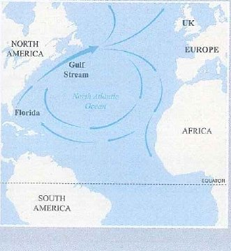
What would happen if there wasn’t a Gulf Stream?
Giáo trình tự trả lời câu hỏi What would happen if …? của mình bằng một đoạn văn Frame C thu nhỏ. Bạn sẽ đọc đoạn này, với tám chỗ trống động từ, ở Practice, Exercise 7. Đoạn văn được dựng như sau:
Câu 1–2 tình hình thực tế hiện nay: Gulf Stream là gì, và nó tác động thế nào tới khí hậu châu Âu (As a result, …).
Câu 3 thay đổi giả định: If + quá khứ đơn, would + động từ.
Câu 4–6 các tác động, cái trước kéo theo cái sau: mùa đông ở Anh lạnh hơn → mùa xuân và mùa hè ngắn lại → nông trại làm ra ít lương thực hơn, tiền sưởi ấm đắt hơn.
Câu 7So if …, … would …: thay đổi đó sẽ có ý nghĩa gì với con người.
Đoạn văn của chúng ta cùng nhiệm vụ đó ở độ dài B1+: hai tác động, tác động nào cũng được giải thích và chứng minh.
Bài mẫu cho tab bạn đã chọn · chữ đậm = từ khung
Bài mẫu A · 169 từ · 10 câu
Why do many people who live in big cities rarely notice nature?
1There are two mainreasons why many city people rarely notice the natural world around them.2The first reason isthat city life keeps most people indoors and in a hurry.3This means that their eyes stay on the traffic or a screen, so they miss what grows by the road.4For example, the US Environmental Protection Agency estimates that Americans spend about 90 percent of their time indoors.5As a result, city trees, birds and insects become a background nobody sees.6Another reason is that many people imagine nature as big, wild and far away.7Because of this picture, they ignore the small living things in a park or a crack in the pavement.8For instance, the photographer David Liittschwager found plenty to photograph inside a one-cubic-foot frame in Central Park.9This is why his photos surprise so many city people, who believe they have to travel to see wildlife.10In short, indoor routines and a narrow idea of nature hide the life on their doorstep.
Dịch nghĩa
Có hai lý do chính khiến nhiều người sống ở thành phố hiếm khi để ý đến thế giới tự nhiên quanh mình. Lý do thứ nhất là nhịp sống đô thị giữ phần lớn mọi người ở trong nhà và lúc nào cũng vội vã. Điều này có nghĩa là mắt họ chỉ dán vào dòng xe cộ hoặc màn hình, nên họ bỏ qua những gì mọc ven đường. Ví dụ, Cơ quan Bảo vệ Môi trường Hoa Kỳ ước tính người Mỹ dành khoảng 90% thời gian ở trong nhà. Kết quả là cây cối, chim chóc và côn trùng trong thành phố chỉ còn là một phông nền không ai nhìn thấy. Một lý do khác là nhiều người hình dung thiên nhiên phải rộng lớn, hoang dã và ở thật xa. Vì hình dung ấy, họ làm ngơ những sinh vật nhỏ bé trong công viên hay trong một kẽ nứt trên vỉa hè. Chẳng hạn, nhiếp ảnh gia David Liittschwager đã tìm thấy rất nhiều thứ để chụp chỉ trong một chiếc khung có thể tích một foot khối ở Central Park. Đó là lý do ảnh của ông khiến rất nhiều người thành phố ngạc nhiên, vì họ tin rằng phải đi thật xa mới thấy được động vật hoang dã. Tóm lại, nếp sinh hoạt trong nhà và cách hiểu hạn hẹp về thiên nhiên đã che khuất sự sống ngay trước cửa nhà họ.
Bài mẫu B · 169 từ · 10 câu
What are the effects of a serious flood on a small town?
1A serious flood has two lasting effectson a small town.2The first effect isthat many families lose their homes and their income at the same time.3This happens because the water ruins houses, shops and crops together, so people lose the money they need for repairs.4For example, in October 2020, the Kiến Giang River in Lệ Thủy, then part of Quảng Bình province, rose almost a metre above its 1979 record.5As a result, thousands of families there depended on outside help for weeks.6Another serious effect ison people's health.7Dirty floodwater gets into wells and homes, which leads to stomach illnesses, skin infections and, a few weeks later, more mosquitoes.8For instance, a small health station may see long queues of patients with infected cuts once the water goes down.9This means that local doctors and nurses are often at their busiest just when their own homes need repairing.10In short, a flood damages both the wealth and the health of a small town.
Dịch nghĩa
Một trận lũ lớn để lại hai tác động lâu dài cho một thị trấn nhỏ. Tác động thứ nhất là nhiều gia đình cùng lúc mất cả nhà cửa lẫn thu nhập. Điều này xảy ra vì nước lũ phá hỏng nhà cửa, cửa hàng và hoa màu cùng một lúc, nên người dân mất luôn khoản tiền cần để sửa chữa. Ví dụ, vào tháng 10 năm 2020, sông Kiến Giang ở Lệ Thủy, khi đó thuộc tỉnh Quảng Bình, dâng cao hơn mức kỷ lục năm 1979 gần một mét. Kết quả là hàng nghìn gia đình ở đó phải trông vào sự hỗ trợ từ bên ngoài trong nhiều tuần. Một tác động nghiêm trọng khác là đối với sức khỏe người dân. Nước lũ bẩn tràn vào giếng và nhà ở, dẫn tới các bệnh đường ruột, nhiễm trùng da và, vài tuần sau, muỗi sinh sôi nhiều hơn. Chẳng hạn, khi nước rút, một trạm y tế nhỏ có thể phải tiếp nhận hàng dài bệnh nhân bị nhiễm trùng vết thương. Điều này có nghĩa là bác sĩ và điều dưỡng ở địa phương thường bận rộn nhất đúng vào lúc chính nhà của họ cũng cần sửa chữa. Tóm lại, một trận lũ gây hại cho cả của cải lẫn sức khỏe của một thị trấn nhỏ.
Bài mẫu C · 169 từ · 10 câu
What would happen if heavy snow fell in Hà Nội every winter?
1If heavy snow fell in Hà Nội every winter, two important things wouldhappen to life in the city.2First, daily travel would become slow and dangerous.3This would happen because the city has no snowploughs, and millions of motorbikes would slide on icy roads.4For example, when snow fell in Sa Pa in January 2016, ice on the Ô Quy Hồ Pass made driving dangerous.5As a result, many workers and students in a snowy Hà Nội would stay at home on the worst days.6Second, the cold would put people's health at greater risk.7The reason is that most homes in Hà Nội are built for hot summers, so they would lose heat fast in freezing weather.8For instance, an elderly couple without heating would struggle to keep warm and might develop a chest infection.9This would mean longer queues at big hospitals such as Bạch Mai every winter.10In short, regular snow would make Hà Nội slower to move around and riskier for its oldest residents.
Dịch nghĩa
Nếu mùa đông nào Hà Nội cũng có tuyết rơi dày, hai điều quan trọng sẽ xảy ra với cuộc sống ở thành phố. Thứ nhất, việc đi lại hằng ngày sẽ trở nên chậm chạp và nguy hiểm. Điều này sẽ xảy ra vì thành phố không có xe dọn tuyết, và hàng triệu xe máy sẽ trượt trên những con đường đóng băng. Ví dụ, khi tuyết rơi ở Sa Pa vào tháng 1 năm 2016, băng phủ trên đèo Ô Quy Hồ khiến việc lái xe trở nên nguy hiểm. Kết quả là ở một Hà Nội phủ tuyết, nhiều người đi làm và học sinh, sinh viên sẽ phải ở nhà vào những ngày tệ nhất. Thứ hai, cái lạnh sẽ đặt sức khỏe người dân trước nguy cơ lớn hơn. Lý do là phần lớn nhà ở Hà Nội được xây cho mùa hè nóng bức, nên chúng sẽ mất nhiệt rất nhanh khi trời giá rét. Chẳng hạn, một cặp vợ chồng già không có máy sưởi sẽ khó giữ ấm và có thể bị nhiễm trùng đường hô hấp. Điều này đồng nghĩa với việc mùa đông nào các bệnh viện lớn như Bạch Mai cũng có hàng người chờ khám dài hơn. Tóm lại, tuyết rơi thường xuyên sẽ khiến việc đi lại ở Hà Nội chậm hơn và khiến những cư dân cao tuổi nhất của thành phố gặp nhiều rủi ro hơn.
Câu chủ đềNguyên nhân / tác độngChuỗi nhân quảVí dụKết quảCâu kết
Bài mẫu ở đây đổi theo tab bạn chọn bên phải.
Các khung tổng · chữ đậm giữ nguyên, chỗ trống tô màu là phần của bạn
Frame A · hai nguyên nhân · cho đề hỏi Why …?
Câu chủ đề · chủ đề + nguyên nhân / tác động + số ýThere are two mainreasons whysomething happens ….Trong bài mẫu A: câu 1
Nguyên nhân / tác động 1 · nguyên nhân 1The first reason isthatcause 1 ….Trong bài mẫu A: câu 2
Chuỗi nhân quả · because … so …This means thathow it leads on …, sothe next step ….Trong bài mẫu A: câu 3
Ví dụ · một trường hợp có thật hoặc điển hìnhFor example,a real case ….Trong bài mẫu A: câu 4
Kết quả · trường hợp đó dẫn tới điều gìAs a result,what follows ….Trong bài mẫu A: câu 5
Nguyên nhân / tác động 2 · nguyên nhân 2Another reason is thatcause 2 ….Trong bài mẫu A: câu 6
Chuỗi nhân quả · because … so …Because ofa noun …,what happens ….Trong bài mẫu A: câu 7
Ví dụ · một trường hợp có thật hoặc điển hìnhFor instance,a named case ….Trong bài mẫu A: câu 8
Kết quả · quay về câu hỏi của đềThis is whythe effect in the question ….Trong bài mẫu A: câu 9
Câu kết · cả hai nguyên nhân, bằng lời mớiIn short,both causes in new words ….Trong bài mẫu A: câu 10
Frame B · tác động của một sự kiện có thật, cho đề What are the effects of …?
Câu chủ đề · chủ đề + nguyên nhân / tác động + số ýa real event …has two lasting effectsonwho / what ….Trong bài mẫu B: câu 1
Nguyên nhân / tác động 1 · tác động 1The first effect isthateffect 1 ….Trong bài mẫu B: câu 2
Chuỗi nhân quả · because … so …This happens becausethe cause …, sowhat follows ….Trong bài mẫu B: câu 3
Ví dụ · một trường hợp có thật hoặc điển hìnhFor example, ina month and a year …,what happened ….Trong bài mẫu B: câu 4
Kết quả · trường hợp đó dẫn tới điều gìAs a result,what follows ….Trong bài mẫu B: câu 5
Nguyên nhân / tác động 2 · tác động 2Another serious effect isona noun ….Trong bài mẫu B: câu 6
Chuỗi nhân quả · because … so …what happens …, which leads toa noun ….Trong bài mẫu B: câu 7
Ví dụ · một trường hợp có thật hoặc điển hìnhFor instance,a typical case ….Trong bài mẫu B: câu 8
Kết quả · trường hợp đó dẫn tới điều gìThis means thatwhat follows ….Trong bài mẫu B: câu 9
Câu kết · cả hai tác động, bằng lời mớiIn short,both effects in new words ….Trong bài mẫu B: câu 10
Frame C · một thay đổi giả định, cho đề What would happen if …? Quá khứ đơn sau If, rồi would / could /might ở mọi tác động, mọi kết quả và ở câu cuối.
Câu chủ đề · thay đổi giả định + hai tác độngIfpast simple …, two important thingswould happento whom ….Trong bài mẫu C: câu 1
Nguyên nhân / tác động 1 · tác động giả định 1First,someone / something …wouldverb ….Trong bài mẫu C: câu 2
Chuỗi nhân quả · because … so …This would happen becausea real fact …, andwhat would follow ….Trong bài mẫu C: câu 3
Ví dụ · một trường hợp có thật hoặc điển hìnhFor example, whena real case …,what happened ….Trong bài mẫu C: câu 4
Kết quả · trường hợp đó dẫn tới điều gìAs a result,someone …wouldverb ….Trong bài mẫu C: câu 5
Nguyên nhân / tác động 2 · tác động giả định 2Second,someone / something …wouldverb ….Trong bài mẫu C: câu 6
Chuỗi nhân quả · because … so …The reason is thata real fact …, sosomeone …wouldverb ….Trong bài mẫu C: câu 7
Ví dụ · một trường hợp có thật hoặc điển hìnhFor instance,a typical case …wouldverb ….Trong bài mẫu C: câu 8
Kết quả · trường hợp đó dẫn tới điều gìThis would meanwhat follows ….Trong bài mẫu C: câu 9
Câu kết · cả hai tác động, vẫn giữ wouldIn short,both effects …wouldverb ….Trong bài mẫu C: câu 10
Stage 1a
Bài mẫu C: mỗi câu từ 2 đến 9 làm nhiệm vụ gì?
Câu 1 mở đoạn, câu 10 khép đoạn. Bài mẫu bên trái tự chuyển sang bài mẫu C.
2Câu 2 =
First, … would … mở ra tác động giả định thứ nhất: việc đi lại trở nên chậm và nguy hiểm. Đây là tác động của tuyết, không phải nguyên nhân.
3Câu 3 =
This would happen because nêu các mắt xích phía sau: không có xe dọn tuyết → xe máy trượt trên băng.
4Câu 4 =
For example, when … + một trường hợp có thật: Sa Pa, tháng 1 năm 2016, băng phủ trên một con đèo.
5Câu 5 =
As a result, nói trường hợp đó sẽ dẫn tới điều gì ở Hà Nội: người dân đi muộn hoặc phải kẹt ở nhà.
6Câu 6 =
Second, mở ra tác động giả định thứ hai, lên sức khỏe.
7Câu 7 =
The reason is that … so … nối những ngôi nhà xây cho mùa hè với những căn phòng mất nhiệt.
8Câu 8 =
For instance, + một trường hợp điển hình: một cặp vợ chồng già không có máy sưởi.
9Câu 9 =
This would mean kéo chuỗi nhân quả thêm một bước: hàng người chờ ở bệnh viện dài hơn.
Stage 1b
Mỗi câu mở đầu sau sẽ mở ra kiểu đoạn văn nào?
Câu 1 báo cho người đọc biết khung nào sắp đến. Có hai trong sáu câu hoàn toàn không mở ra đoạn văn nguyên nhân – kết quả.
1Cadets often feel exhausted in their first month of field training for two main reasons. →
for two main reasons hứa hẹn nói về nguyên nhân: Frame A.
2Last September's storm hurt the fishing villages on the coast in two lasting ways. →
Một sự kiện có thật đã xảy ra + two lasting ways mà nó gây hại cho các làng chài: Frame B.
3Moving the academy to a new campus in the mountains would change cadet life in two big ways. →
would change … in two big ways: một thay đổi giả định và các tác động của nó → Frame C.
4Doing night shifts as a student brings real benefits as well as some clear drawbacks. →
Lợi ích và nhược điểm là hai mặt của đoạn văn ưu – nhược điểm, dạng đoạn văn của Unit 11e–11f.
5Road accidents in the rainy season are mainly caused by poor visibility and slippery surfaces. →
are mainly caused by + hai nguyên nhân: Frame A ở một dạng khác.
6Flooding in city streets could be reduced by two practical measures. →
could be reduced by … measures hứa hẹn nói về giải pháp, không phải nguyên nhân hay tác động: đây là đoạn văn vấn đề – giải pháp.
Stage 1c
Cùng nhiệm vụ, khác từ khung: cụm nào thay được cho chữ in đậm?
Tìm từ khung làm được cùng nhiệm vụ. Stage 2–7 sẽ bổ sung thêm nhiều cụm như vậy.
1Bài mẫu A · câu 2 · The first reason isthat … →
Cả hai đều mở ra nguyên nhân thứ nhất. effect sẽ đảo ngược cả đoạn văn, còn reason is because nói lý do hai lần (hãy viết is that).
2Bài mẫu A · câu 9 · This is why … →
Cả hai đều dẫn từ nguyên nhân tới tác động mà đề hỏi. This is because đi theo chiều ngược lại, từ tác động quay về nguyên nhân.
3Bài mẫu B · câu 3 · This happens because … →
Cả hai đều nêu nguyên nhân đứng sau tác động. The result of this và This is why hướng tới một kết quả; Because of cần danh từ.
4Bài mẫu B · câu 6 · Another serious effect ison … →
Cả hai đều thêm tác động thứ hai + on + danh từ. cause làm đổi nhiệm vụ, còn The first không thể đứng sau một tác động đã nêu.
5Bài mẫu C · câu 5 · As a result, … →
Cả hai đều dẫn ra một kết quả + một câu đầy đủ. Because sẽ biến câu thành nguyên nhân; However lại đưa vào ý đối lập.
6Bài mẫu C · câu 10 · In short, … →
Cả hai đều mở đầu câu cuối và gom hai tác động lại với nhau.
Stage 2 Khung câu chủ đề
Mục tiêuMở đoạn bằng một câu nêu chủ đề, hứa sẽ bàn về nguyên nhân hay tác động, và cho biết có mấy ý.
Vì sao hiệu quảCâu 1 là một lời hứa: nó báo cho người đọc biết khung nào sắp đến, và thân đoạn mà trả lời sang một câu hỏi khác thì bị trừ điểm ở tiêu chí đáp ứng yêu cầu đề (task response).
Khung câu chủ đề
There are two mainreasons whysomething happens ….Frame A
the problem …is mainly caused bycause 1 …andcause 2 ….Frame A
a real event …has two serious effectsonwho / what ….Frame B
a real event …can affectwho / what …in two important ways.Frame B
Ifpast simple …, two important thingswould happen.Frame C
an imagined change …would have two majoreffects onwho / what ….Frame C
Chủ đề + ý kiểm soát: nguyên nhân hay tác động, và có mấy ý (two).
reasons why + chủ ngữ + động từ, theo trật tự câu trần thuật: why cities flood, không bao giờ why do cities flood.
an effect on + danh từ (effect là danh từ) · affect + danh từ (affect là động từ).
Frame C: If + quá khứ đơn, rồi would + động từ; không bao giờ đặt would ngay sau If.
Tránh: This paragraph will talk about … · The reason why … is because …
Stage 2a
Dựng câu chủ đề từ ghi chú, từng phần một
Đọc ghi chú trước, rồi chọn lần lượt các phần của khung từ trái sang phải.
Why do many young people rarely spend time in nature?
Ghi chú
Frame A, nêu tác động trước · tác động: young people and nature · hai nguyên nhân
people vốn đã là số nhiều nên đi với many, không phải much; không dùng of hay the khi nói về người trẻ nói chung.people là số nhiều (spend); rarely đứng trước động từ chính; nature theo nghĩa chung không có the. .Dạng thứ hai của Frame A: nêu tác động trước, rồi for two main reasons (sau two là danh từ số nhiều; effects sẽ hứa sai điều cần viết).
What would happen if cars were banned from the city centre one day a week?
Ghi chú
Frame C · thay đổi giả định: cars banned from the city centre one day a week · hai tác động
If mở ra một điều kiện giả định. Whether dẫn ra một sự lựa chọn, không phải điều kiện; Unless mang nghĩa ngược lại.Thay đổi giả định dùng thì quá khứ sau If (ở đây là bị động were banned); không bao giờ dùng would hay will trong mệnh đề if. .Dấu phẩy sau mệnh đề if, rồi would + động từ nguyên mẫu (follow), và danh từ số nhiều sau two.
Stage 2b
Câu chủ đề nào khớp với dàn ý của người viết?
1 · Why do many young people rarely spend time in nature?
Dàn ý của người viết
cause 1: long hours of study and part-time work · cause 2: few green places near home
Which topic sentence matches the writer’s plan?
C nêu đúng hai nguyên nhân trong dàn ý. A hứa những tác động mà dàn ý không hề có, B quá rộng nên không chứng minh nổi, D chỉ là câu thông báo.
2 · What are the effects of a hailstorm on farms?
Dàn ý của người viết
effect 1: crops torn apart in minutes · effect 2: roofs and greenhouses broken
Which topic sentence matches the writer’s plan?
B nêu tác động của một sự kiện có thật và nói rõ có mấy tác động. A hứa nói về nguyên nhân, C trộn fell với will và chỉ nêu một cảm xúc mơ hồ, D là một định nghĩa.
3 · What would happen if every student had to grow one plant?
Dàn ý của người viết
effect 1: students would understand how plants live and grow · effect 2: the school would look greener
Which topic sentence matches the writer’s plan?
D giữ thay đổi ở dạng giả định (would bring) và hứa hai tác động. A dùng câu điều kiện có thật (first conditional) và chỉ nêu một tác động, B không có động từ đúng nghĩa, C là một sự thật không hứa hẹn điều gì.
Stage 2c
Sửa câu chủ đề
Mỗi câu có một phần gạch chân bị sai. Chọn phương án thay vào cho đúng.
1The two main reasons why do so many cadets skip breakfast are a lack of time and a poor appetite early in the morning. →
Sau reasons why là trật tự câu trần thuật (không có do): why so many cadets skip breakfast.
2A long drought can have two serious affects on rice farmers. →
Sau two serious cần một danh từ số nhiều: effects. Affect là động từ.
3If every cadet would have a bicycle, the campus would be quieter. →
Không dùng would sau If: quá khứ đơn had đã mang nghĩa giả định.
4The reason why many roads flood is because the drains are blocked. →
The reason why … is that + mệnh đề; dùng cả reason lẫn because là nói một điều hai lần.
5A sudden hailstorm can effect a whole village in two ways. →
Sau can cần một động từ: affect. Effect là danh từ.
6If the city planted a tree outside every school, two good things will happen. →
Thay đổi giả định (planted) đòi hỏi mệnh đề chính dùng would + động từ nguyên mẫu.
Đến lượt bạn · đề chính
Câu chủ đề của bạn
What would happen if there were no parks or trees in big cities?
Viết câu chủ đề của bạn bằng một dòng Frame C trên thẻ: thay đổi giả định + hai tác động.
Hai câu mẫu
1Without parks or trees, our cities would face two worrying problems.Không có công viên hay cây xanh, các thành phố của chúng ta sẽ phải đối mặt với hai vấn đề đáng lo ngại.
2A city with no green spaces at all would have two major effects on the health of its people.Một thành phố hoàn toàn không có không gian xanh sẽ chịu hai tác động lớn lên sức khỏe người dân.
Stage 3 Khung câu nêu nguyên nhân và tác động
Mục tiêuGiới thiệu nguyên nhân hoặc tác động 1 và nguyên nhân hoặc tác động 2 bằng những khung cho thấy thứ tự và nhiệm vụ của từng ý.
Vì sao hiệu quảCụm dẫn dắt giúp người đọc đếm được số ý, còn các dạng đúng (a cause of, an effect on, the reason is that) chặn trước những lỗi cả lớp hay mắc nhất.
Khung câu nêu nguyên nhân và tác động
The first reason isthatcause 1 ….nguyên nhân 1 · Frame A
One major cause ofthe problem …isa noun / V-ing ….nguyên nhân 1 · Frame A
Another reason is thatcause 2 ….nguyên nhân 2 · Frame A
The first effect isthateffect 1 ….tác động 1 · Frame B
Another serious effect isona noun ….tác động 2 · Frame B
First,someone / something …wouldverb ….Second, …tác động 1 và 2 · Frame C
Nguyên nhân hay tác động đều mang tính khái quát: nói điều gì xảy ra. Tên riêng, năm, địa danh để dành cho câu ví dụ.
Nguyên nhân 2 (hoặc tác động 2) là một ý khác, không phải nguyên nhân 1 nói lại bằng lời khác.
a cause of + danh từ · an effect on + danh từ · the reason is that + mệnh đề (không bao giờ is because).
Frame C: would ở mọi tác động (First, … would …), không bao giờ will.
Stage 3a
Chọn khung mở câu cho từng vị trí
Nhãn màu cho biết vị trí. Mỗi lựa chọn là một khung; phần chữ sau dấu … là phần còn lại của câu.
1Nguyên nhân 1Why do many young people rarely spend time in nature? school and work leave them very little free time in daylight.
Câu này mở ra nguyên nhân thứ nhất: The first reason is that + mệnh đề. Another cần có một nguyên nhân đứng trước, is because là lỗi lớp mình hay mắc, còn effect là sai nhiệm vụ.
2Nguyên nhân 2Why do many young people rarely spend time in nature? parks and forests can feel far away from their homes and dormitories.
Một nguyên nhân thứ hai, khác nguyên nhân đầu: Another reason (số ít sau another). Dùng This is because thì câu sẽ thành câu nối chuỗi; effect làm đổi nhiệm vụ.
3Tác động 1What are the effects of a hailstorm on farms? young plants can be torn to pieces in minutes.
Tác động thứ nhất, với is that + mệnh đề. affect là động từ, cause là sai nhiệm vụ, còn Another cần có một tác động đứng trước.
4Tác động 2What are the effects of a heatwave on people's health? the way people sleep.
effect on + cụm danh từ (the way people sleep). affect là động từ, is that on là trộn hai mẫu câu, còn reason là sai nhiệm vụ.
5Nguyên nhân 1Why do big cities flood so often after heavy rain? the loss of open ground that once soaked up the rain.
a cause of + danh từ, rồi is + cụm danh từ (the loss of …). effect làm đảo ngược ý; one of the cần danh từ số nhiều.
6Tác động 1 · Frame CWhat would happen if every student had to grow one plant? learn how much care a living thing needs.
Một tác động giả định: would + động từ nguyên mẫu. will dành cho tương lai có thật, would to không bao giờ đúng, còn If students would đặt would vào mệnh đề if.
Stage 3b
Từ ghi chú thành nguyên nhân hoặc tác động: ghi chú → khung → câu
Mỗi ghi chú viết bằng tiếng Việt (phương pháp Đinh Thắng). Chọn câu tiếng Anh mà người bản ngữ sẽ viết.
1 · Why do many young people rarely spend time in nature?
Ghi chú → khung
một nguyên nhân chính là giới trẻ dành quá nhiều thời gian cho điện thoại · khung: One main cause is that …
Which sentence is natural English?
A: is that + mệnh đề, too much time on. B bỏ mất that và viết too many time for, C dùng is because, D giữ nguyên trật tự từ của tiếng Việt.
2 · What are the effects of a heatwave on people's health?
Ghi chú → khung
một tác động khác là người cao tuổi dễ bị mất nước · khung: Another effect is that …
Which sentence is natural English?
D: bị mất nước = become dehydrated, còn dễ = more easily. A dịch từng chữ, B dùng động từ affect như danh từ, C bỏ mất is that và viết easy to be.
3 · What would happen if cars were banned from the city centre one day a week?
Ghi chú → khung
nếu cấm ô tô, trẻ em sẽ có chỗ chơi an toàn hơn · khung: If … would …
Which sentence is natural English?
C: thì quá khứ sau If (were banned), rồi would have + safer places to play. A là câu điều kiện có thật, lại viết more safe place, B đặt would vào mệnh đề if, D thiếu chủ ngữ sau If.
Đến lượt bạn · đề chính
Tác động 1
What would happen if there were no parks or trees in big cities?
Viết tác động thứ nhất đối với một thành phố không có công viên hay cây xanh, mở đầu bằng một khung nêu tác động của Frame C (would).
Hai câu mẫu
1The first thing that would happen is that city streets would turn into ovens every summer.Điều đầu tiên sẽ xảy ra là cứ đến mùa hè, đường phố lại biến thành những cái lò nướng.
2One major effect would be on the quality of the air in busy streets.Một tác động lớn sẽ rơi vào chất lượng không khí ở những tuyến phố đông đúc.
Stage 4 Khung câu nối chuỗi nhân quả
Mục tiêuSau mỗi nguyên nhân hay tác động, cho thấy việc này dẫn tới việc kia ra sao (because … so …).
Vì sao hiệu quảBài viết nguyên nhân – kết quả được đánh giá qua các mối nối; một ý không có chuỗi nhân quả phía sau thì vẫn chỉ là một lời khẳng định.
Khung câu nối chuỗi · việc này dẫn tới việc kia ra sao
This is becausethe cause behind it ….vì sao điều đó xảy ra
This happens becausethe cause …, sowhat follows ….chuỗi nhân quả · Frame A và B
This would happen becausea real fact …, sowhat would follow ….chuỗi nhân quả · Frame C
Whenthe cause …,the effect …, which leads toa noun ….một chuỗi dài hơn
Because ofa noun …,the effect …. · Due toa noun …, …nguyên nhân ở dạng danh từ
In other words,the point, said more clearly ….ý đó thực chất nghĩa là gì
Cho thấy cả chuỗi: nguyên nhân → tác động → tác động tiếp theo. Chỉ một mắt xích thì vẫn chỉ là một lời khẳng định.
because + mệnh đề · because of / due to + danh từ · so + mệnh đề · lead to + danh từ hoặc V-ing.
Giữ đúng chiều: nguyên nhân đứng sau because, tác động đứng sau so và which leads to.
Stage 4a
Hoàn thành mỗi chuỗi bằng khung phù hợp
Xem sau chỗ trống là gì (một mệnh đề? một danh từ?), rồi quyết định: nguyên nhân, ý nghĩa, hay một mắt xích trong chuỗi giả định.
1What are the effects of a hailstorm on farms?
Point
Hail can ruin a field of vegetables in a few minutes.
hailstones fall at high speed and tear the leaves apart.
Theo sau là cả một mệnh đề (chủ ngữ + động từ), nên dùng This is because. Because of và Due to cần danh từ; This is why chỉ sai chiều, sang kết quả.
2Why do many young people rarely spend time in nature?
Point
On weekdays, most students hardly see a tree.
long hours of study and work, they leave home early and come back after dark.
Theo sau là một cụm danh từ (long hours of study and work), nên dùng Because of. Because cần mệnh đề; So và This is why sẽ biến nguyên nhân thành kết quả.
3What are the effects of a heatwave on people's health?
Point
Hot weather can be dangerous for older people.
their bodies sweat less as they age, so they find it harder to cool down.
This happens because + mệnh đề, rồi so nối tiếp chuỗi. because of cần danh từ; This is why biến câu thành kết quả.
4What would happen if cars were banned from the city centre one day a week?
Point
A car-free day would make the centre quieter.
engines and horns would disappear from its streets for a whole day.
Frame C giữ would: This would happen because + mệnh đề. will rời khỏi thế giới giả định; because of cần danh từ.
5Why do big cities flood so often after heavy rain?
Point
Rubbish makes city floods worse.
plastic bags and bottles block the drains that should carry the water away.
In other words nói lại ý đó bằng lời đơn giản hơn, đầy đủ hơn. In other word là lỗi sai, Another reason mở ra nguyên nhân mới, còn Due to / As a result of cần danh từ.
Stage 4b
Liệt kê hay nối chuỗi? Chọn câu nối ý đó với điều xảy ra tiếp theo
Những đoạn văn nguyên nhân – kết quả yếu nhất chỉ liệt kê ý, không ý nào có because hay so theo sau.
1 · Why do big cities flood so often after heavy rain?
Ý · một nguyên nhân
Concrete and asphalt now cover most of the ground in big cities.
Which next sentence shows how this leads to floods?
C cho thấy cả chuỗi: mặt đất cứng → nước không thấm → toàn bộ nước dồn xuống cống cùng lúc. A liệt kê thêm ý mới, B định nghĩa một từ, D là chuyện cá nhân.
2 · What are the effects of a hailstorm on farms?
Ý · một tác động
Hail can break the roofs of farm buildings.
Which sentence should come next to explain it?
A nói vì sao mái nhà dễ vỡ đến thế (tôn mỏng và tấm lợp). B liệt kê thêm tác động mới, C định nghĩa một từ, D là ví dụ mơ hồ.
3 · What would happen if every student had to grow one plant?
Ý · một tác động giả định
Students would become more patient.
Which sentence would explain this point?
B giữ would và cho thấy cả chuỗi: cây lớn chậm → chăm sóc hàng tuần liền → tính kiên nhẫn. A liệt kê thêm ý mới, C không nói thêm điều gì mới, D trượt sang will và dừng lại sau một mắt xích.
Đến lượt bạn · đề chính
Chuỗi nhân quả
What would happen if there were no parks or trees in big cities?
Viết chuỗi nhân quả đứng sau tác động thứ nhất của bạn, vẫn giữ would: việc này dẫn tới việc kia như thế nào?
Mẫu tham khảo
1This would happen because concrete and asphalt soak up the sun's heat all day and give it back at night, so streets without shade would hardly cool down.Điều này sẽ xảy ra vì bê tông và nhựa đường hấp thụ nhiệt của mặt trời suốt cả ngày rồi tỏa ra vào ban đêm, nên những con phố không có bóng mát sẽ khó mà dịu đi.
Stage 5 Khung câu ví dụ và kết quả
Mục tiêuChứng minh mỗi ý bằng một trường hợp cụ thể, có thật hoặc điển hình, rồi nói trường hợp đó dẫn tới điều gì.
Vì sao hiệu quảMột địa danh có thật, một mốc thời gian hay một cái tên thuyết phục hơn hẳn many people, còn câu kết quả thêm mắt xích cuối cùng cho chuỗi.
Khung câu ví dụ và kết quả
For example, ina year …,what happened ….ví dụ · một sự kiện có thật
For instance,a typical case ….ví dụ
For example, ifa case …,someone …wouldverb ….ví dụ · Frame C
As a result,what follows ….kết quả
This leads toa noun / V-ing …. · This would lead to …kết quả
This is whythe effect in the question ….kết quả · quay về câu hỏi của đề (Frame A)
This would mean thatwhat would follow ….kết quả · Frame C
Ví dụ: một trường hợp có thật (một địa điểm, một năm, một cái tên) hoặc một trường hợp điển hình (a farmer in Lào Cai may …); luôn hợp lý: không bịa tỉ lệ phần trăm, không dẫn kiểu my uncle says.
Kết quả: điều xảy ra tiếp từ CHÍNH trường hợp đó, thêm một mắt xích nữa trong chuỗi.
lead to + danh từ hoặc V-ing · As a result, + một câu đầy đủ · As a result of + danh từ.
Stage 5a
Phần kết nào tạo thành một ví dụ tốt?
Khung đã mở đầu câu; bạn chọn phần còn lại.
1 · Why do big cities flood so often after heavy rain?
Ý · một nguyên nhân
When too much of a city is paved, heavy rain has nowhere to go but the streets.
Khung: For example, in … Which ending finishes the frame and supports the point?
B: một tháng, một năm, một địa danh có thật và những gì trận mưa gây ra ở đó. A mơ hồ, C đúng nhưng không nói gì về mưa, D bịa ra con số.
2 · What are the effects of a heatwave on people's health?
Ý · một tác động
Extreme heat is especially dangerous for older people who live alone.
Khung: For instance, … Which ending finishes the frame and supports the point?
D: một người điển hình, một nơi ở cụ thể và điều xảy đến với bà. A mơ hồ, B đúng nhưng không chứng minh được gì, C là chuyện cá nhân.
3 · What would happen if cars were banned from the city centre one day a week?
Ý · một tác động giả định
Without cars, the streets of the centre would become safer for walkers and cyclists.
Khung: For example, if … Which ending finishes the frame and supports the point?
A: một trường hợp giả định điển hình, quá khứ đơn + could. B không nói lên điều gì, C trượt sang câu điều kiện có thật (bans … will), D là chuyện cá nhân.
Stage 5b
Ví dụ dẫn tới điều gì?
Mỗi dòng màu xám là một ví dụ; chọn câu nói ví dụ đó dẫn tới điều gì.
1Ví dụFor instance, a cadet who spends a whole weekend scrolling through videos in the dormitory may never step outside.→
Câu này đi ra từ CHÍNH trường hợp đó. Thanks to this chỉ dẫn tin tốt, As a result of cần danh từ, phones are expensive mở ra ý mới, còn the campus has many trees chỉ là thêm một ví dụ.
2Ví dụFor example, during a long heatwave, a construction worker may keep working at midday because he is paid by the day.→
lead to + danh từ (heatstroke). Sau lead to không thể là động từ nguyên mẫu; fitter and stronger là sai kết quả, As a result of, sai cấu trúc, còn In short là để kết đoạn.
3Ví dụFor example, if a snowstorm hit Hà Nội on a Monday morning, buses would be stuck on icy bridges.→
Frame C vẫn ở thế giới giả định: would + động từ nguyên mẫu. will rời khỏi thế giới giả định, would missed sai, tắc đường thì không thể khiến bệnh nhân đến sớm, còn màu của tuyết thì lạc ý.
4Ví dụFor example, a student who grew up in a city flat may never have walked through a real forest.→
Điều rút ra từ việc chưa từng vào rừng: rừng mang lại cảm giác xa lạ. more relaxing than any flat nói điều ngược lại, lead to feel sai vì sau lead to phải là danh từ, còn các câu về cây cối và nơi chốn tự nhiên thì lạc ý.
Đến lượt bạn · đề chính
Ví dụ + kết quả
What would happen if there were no parks or trees in big cities?
Viết một trường hợp cho tác động thứ nhất của bạn, rồi kết quả của nó: hai câu, dùng would ở mọi chỗ trường hợp đó là giả định.
Mẫu tham khảo
1For example, a market seller who works all day on a treeless pavement would feel the full force of the midday sun. As a result, she might have to stop work for hours or risk fainting.Ví dụ, một người bán hàng ở chợ làm việc cả ngày trên vỉa hè không có cây sẽ phải hứng trọn cái nắng gay gắt giữa trưa. Kết quả là chị ấy có thể phải nghỉ bán nhiều giờ liền, nếu không sẽ có nguy cơ ngất xỉu.
Stage 6 Khung câu second conditional (câu điều kiện loại 2) cho Frame C
Mục tiêuGiữ mọi tác động, mọi kết quả và câu cuối của một đoạn văn What would happen if …? ở trong thế giới giả định.
Vì sao hiệu quảChỉ một lần trượt sang will hay một động từ thì hiện tại là người đọc hiểu rằng thay đổi đó có thật; ngữ pháp của Unit 12a chính là xương sống của Frame C.
Khung câu second conditional · Frame C
Ifpast simple …,someone …wouldverb ….thay đổi giả định + một tác động
someone …wouldverb …ifpast simple ….như trên, không có dấu phẩy
Withouta noun …,someone …wouldverb ….một mệnh đề if rút gọn
someone …couldverb … · someone …mightverb ….would be able to · would perhaps
This would mean thatwhat would follow ….kết quả
Ifsubject …wereadjective / noun …, …trang trọng: were cho mọi ngôi
Trong mệnh đề if dùng quá khứ đơn (had, were, lived); trong mệnh đề chính dùng would + động từ nguyên mẫu.
Ở yên trong thế giới giả định: mọi tác động, mọi kết quả và câu cuối đều giữ would / could / might; không dùng will.
Một sự thật hay một trường hợp có thật có thể minh chứng cho ý, ở thì hiện tại hoặc quá khứ (trees shade streets, in 2016 …).
Mệnh đề if đứng trước → có dấu phẩy trước mệnh đề chính; if đứng giữa câu → không có dấu phẩy.
Stage 6a
Chọn dạng động từ giữ cho đoạn văn ở thế giới giả định
Câu nào cũng lấy từ một đoạn văn What would happen if …?. Chọn dạng động từ cho chỗ trống.
1What would happen if every student had to grow one plant?If every classroom a row of plants, the corridors would soon look greener.
Mệnh đề if dùng quá khứ đơn (had); không bao giờ dùng would hay will sau If.
2Students which plants need sun and which prefer shade.
Một tác động giả định: would + động từ nguyên mẫu.
3A careless student kill a plant in a week, but even that mistake would teach something.
might = would perhaps: một tác động giả định có thể xảy ra. will và is going to chỉ tương lai có thật; would to và may will không bao giờ đúng.
4What would happen if cars were banned from the city centre one day a week?If there no cars in the centre on Sundays, street sellers could use the road.
Tiếng Anh trang trọng dùng were sau If cho mọi ngôi; would be và will be không được đặt trong mệnh đề if.
5Bus companies add extra buses every Sunday.
would have to = một nghĩa vụ giả định. Tiếng Anh không có would must, còn would had to là dùng quá khứ hai lần.
6Without traffic, people hear birds in the trees around the lake.
could = would be able to; tiếng Anh không có will can và would can.
Stage 6b
Tìm chỗ trượt ra khỏi thế giới giả định
Mỗi phần gạch chân làm hỏng câu second conditional. Chọn cách sửa.
1If the city would close the centre to traffic, buses would run on time. →
Không đặt would ngay sau If: dùng quá khứ đơn closed.
2If every student grew a plant, the school will look much greener. →
Mệnh đề if là giả định (grew), nên mệnh đề chính cần would + động từ nguyên mẫu.
3Without cars for a day, the centre is a safer place for children. →
Without cars … là một điều kiện giả định, nên kết quả cũng giữ dạng giả định: would be.
4If the drains were bigger the streets would stay dry after a storm. →
Khi mệnh đề if đứng trước, sau nó là dấu phẩy; dùng quá khứ were, không phải would be; bigger, không phải more big.
5If cadets had more free weekends, they would went hiking more often. →
would + động từ nguyên mẫu: would go.
Đến lượt bạn · đề chính
Tác động 2 + chuỗi nhân quả của nó
What would happen if there were no parks or trees in big cities?
Viết tác động thứ hai và chuỗi nhân quả của nó, có would (hoặc could / might) ở cả hai câu.
Hai câu mẫu
1Second, children would lose most of their safe places to play outdoors. If there were no parks, they would spend even more of their free time indoors with screens.Thứ hai, trẻ em sẽ mất đi phần lớn những chỗ vui chơi ngoài trời an toàn. Nếu không có công viên, các em sẽ còn dành nhiều thời gian rảnh hơn nữa ở trong nhà với màn hình.
2In addition, many birds and insects would vanish from the city, because they would have nowhere left to feed or nest.Ngoài ra, nhiều loài chim và côn trùng sẽ biến mất khỏi thành phố, vì chúng không còn nơi nào để kiếm ăn hay làm tổ.
Stage 7 Khung câu kết
Mục tiêuKhép đoạn bằng cách tóm lại cả hai nguyên nhân hoặc tác động, hoặc nhìn về tương lai: không thêm gì mới.
Vì sao hiệu quảCâu cuối là câu người đọc nhớ lâu nhất, và một ý mới đặt ở đó sẽ bị bỏ lửng, không được chứng minh.
Khung câu kết
In short,both causes / effects in new words ….Frame A, B và C
For these reasons,the effect in the question ….Frame A · tóm lại các nguyên nhân
Overall,the event …affectswho …botheffect 1 …andeffect 2 ….Frame B
In short, ifpast simple …,who …wouldverb ….Frame C
If nothing changes,the effect …willcontinue / get worse ….nhìn về tương lai · Frame A và B
Tóm lại hai nguyên nhân hoặc hai tác động, hoặc nhìn về tương lai; không bao giờ thêm nguyên nhân mới, ví dụ mới hay lời khuyên (… should also …).
Frame C giữ thế giới giả định tới tận câu cuối: would, không phải will.
Dùng lời mới cho cùng những ý đó: đừng chép lại câu chủ đề.
Stage 7a
Chọn câu kết tốt nhất
1 · Why do many young people rarely spend time in nature?
Câu chủ đề · Frame A
Young people today rarely get out into nature, and two causes stand out: busy timetables and a lack of nearby green space.
Which concluding sentence is best?
C tóm lại cả hai nguyên nhân bằng lời mới. A thêm lời khuyên, B không nói lên điều gì, D mâu thuẫn với câu chủ đề.
2 · What are the effects of a heatwave on people's health?
Câu chủ đề · Frame B
Heatwaves damage health in two ways: they overheat the body, and they make long-term illnesses worse.
Which concluding sentence is best?
A tóm lại cả hai tác động. B thêm lời khuyên, C định nghĩa chủ đề, D chuyển từ tác động sang nguyên nhân.
3 · What would happen if cars were banned from the city centre one day a week?
Câu chủ đề · Frame C
A weekly car-free day in the city centre would bring two big changes for the people who use it.
Which concluding sentence is best?
B tóm lại cả hai tác động giả định và giữ would. A trượt sang will, C thêm ý mới, D không nói lên điều gì.
Stage 7b
Tóm lại, nhìn về tương lai, thêm ý, lẫn lộn hay không nói lên điều gì?
Sáu câu có thể đặt cuối một đoạn văn: chỉ ba câu làm đúng nhiệm vụ.
What are the effects of a hailstorm on farms?
Câu chủ đề · Frame B
Hailstorms damage farms in two serious ways: they destroy crops and they wreck buildings.
1In short, a single hailstorm can wipe out both a season's harvest and the shelter a farm depends on. →
Cả hai tác động (mùa màng, nhà cửa) được nói bằng lời mới.
2If nothing changes, mountain farmers will keep losing crops and roofs to every spring storm. →
Câu này nhìn về tương lai từ chính hai tác động đó và không thêm gì mới.
3Overall, farmers should also grow more fruit trees. →
Cây ăn quả và lời khuyên chưa hề có trong đoạn văn.
4In short, hail forms when strong storms carry raindrops high into freezing air. →
Đoạn văn bàn về tác động; câu này lại bất ngờ giải thích nguyên nhân gây ra mưa đá.
5Overall, hail is ice that falls from the sky. →
Đúng, nhưng câu này không tóm lại được gì.
6Overall, hail hurts a farm twice: once in the fields and again in the yard. →
Đồng ruộng (mùa màng) và sân trại (nhà cửa): cả hai tác động, nói theo một cách mới.
Đến lượt bạn · đề chính
Tóm lại
What would happen if there were no parks or trees in big cities?
Viết câu kết của bạn: tóm lại cả hai tác động và giữ would; không thêm gì mới.
Hai câu mẫu
1Overall, losing every park and tree would make city life hotter, more stressful and much less healthy.Nhìn chung, mất hết công viên và cây xanh sẽ khiến cuộc sống đô thị nóng bức hơn, căng thẳng hơn và kém lành mạnh hơn nhiều.
2In short, if cities lost their green spaces, the people living in them would pay with their comfort and their health.Tóm lại, nếu các thành phố mất đi không gian xanh, người dân sống ở đó sẽ phải trả giá bằng sự dễ chịu và sức khỏe của chính mình.
Stage 8 Ghép các khung thành đoạn văn
Mục tiêuĐiền từ khung cho trọn một đoạn văn Frame C, rồi sắp xếp lại một đoạn văn Frame B bị xáo trộn.
Vì sao hiệu quảThấy đủ mười vị trí vận hành trong hai đoạn văn hoàn chỉnh là bước đệm để bạn tự viết một đoạn ở Stage 9.
Các khung trong một bảng · A và B · C = What would happen if …?
There are two mainreasons why … / … has two serious effectson …CIf …, two important thingswould happen.
The first reason isthat … / The first effect isthat …CFirst, … would …
This is because … / This happens because …, so …CThis would happen because …
For example, inyear …, … / For example, …CFor example, if …, … would …
As a result, … / This leads to …CAs a result, … would …
Another reason is that … / Another serious effect ison …CSecond, … would …
Because ofa noun …, … / … , which leads to …CThe reason is that …, so … would …
For instance, …CFor instance, … would / might …
This is why … / This means that …CThis would mean that …
In short, … / For these reasons, …CIn short, if …, … would …
Cả mười vị trí nằm trong một khối liền 140–170 từ.
Từ khung báo cho người đọc biết câu tiếp theo làm nhiệm vụ gì.
Frame C: mỗi tác động, mỗi kết quả và câu kết đều dùng would; sự thật hay trường hợp có thật thì giữ thì của riêng nó.
Stage 8a
Cả một đoạn văn Frame C: chọn từ khung
Một đoạn văn Frame C với mười chỗ trống, mỗi vị trí một chỗ: câu chủ đề · tác động 1 · chuỗi nhân quả · ví dụ · kết quả · tác động 2 · chuỗi nhân quả · ví dụ · kết quả · tóm lại.
What would happen if cars were banned from the city centre one day a week?
Frame C · hai tác động giả định
(1)Without + danh từ hoạt động như một mệnh đề if rút gọn (If there were no cars …). With nói điều ngược lại; If, Unless, Although và Because cần một mệnh đề đầy đủ. cars in the centre for one day each week, the area would change in two clear ways. (2)Từ này mở ra tác động 1; các phương án còn lại đưa vào ý đối lập, ví dụ, phần kết hoặc nguyên nhân. the air in its streets would become cleaner on that day. (3)Theo sau là cả một mệnh đề, và would giữ thay đổi ở dạng giả định; because of cần danh từ, còn This is why hướng tới kết quả. far fewer engines would be burning fuel in its narrow roads. (4)Một trường hợp có thật (Paris, 2015) minh chứng cho tác động giả định; Such as không thể mở đầu câu. on the first car-free day in Paris, in September 2015, nitrogen dioxide in parts of the city fell by up to 40 percent. (5)Không khí sạch hơn sẽ dẫn tới điều gì: dễ thở hơn. As a result of cần danh từ. people with asthma would find it easier to breathe on car-free days. (6)Tác động 2 nối tiếp tác động 1: Second,. the streets would belong to people instead of traffic. (7)The reason is that + mệnh đề nêu chuỗi nhân quả đứng sau tác động 2; is because là lỗi lớp mình hay mắc, còn The result is that chỉ sai chiều. families would feel safe enough to walk, cycle and let their children run in the road. (8)Một trường hợp cụ thể: các tuyến phố đi bộ quanh hồ Hoàn Kiếm. the walking streets around Hoàn Kiếm Lake already fill with families every weekend evening. (9)Kết quả vẫn ở dạng giả định: would + động từ nguyên mẫu (mean). small shops and cafés along the closed streets might gain more customers. (10)Overall mở phần tóm lại cả hai tác động. closing the centre to cars once a week would make it a calmer and healthier place for everyone.
Stage 8b
Đánh số mười câu theo đúng thứ tự (1–10)
Từ khung ở đầu mỗi câu là manh mối của bạn. Khi bấm Đáp án, các câu được xếp lại đúng thứ tự và các manh mối đó được tô sáng.
What are the effects of a hailstorm on farms?
Frame B · tác động của một sự kiện có thật
As a result, many families there lost the harvest they had planned to live on that season.
Kết quả của ví dụ: ruộng đồng bị phá hỏng có ý nghĩa gì với các gia đình.
The first effect is on the crops, which can be ruined at once.
Tác động 1: The first effect is on mở ra ý thứ nhất.
The reason is that big hailstones can smash the plastic covers of greenhouses and injure animals kept outside.
Chuỗi nhân quả sau tác động 2: vì sao nhà cửa và vật nuôi bị thiệt hại.
For example, in late March 2013, one hailstorm damaged fields of crops across several districts of Lào Cai.
Ví dụ cho tác động 1: một trận mưa đá có thật, một mốc thời gian và một tỉnh.
Even a short hailstorm can do two kinds of serious damage to a farm.
Câu chủ đề: một loại sự kiện có thật + two kinds of serious damage, nên câu này mở đầu một đoạn văn Frame B.
This means that money saved for seeds or school fees has to be spent on repairs instead.
Kết quả của ví dụ: This = những mái nhà bị vỡ.
Another effect is that homes, farm buildings and animals are hurt as well.
Tác động 2: Another effect mở ra ý thứ hai.
In short, a few minutes of hail can cost a farming family both its harvest and its savings.
Câu kết: cả hai tác động (mùa màng, tiền tiết kiệm) nói bằng lời mới.
This happens because hard balls of ice tear the leaves and snap the stems.
Chuỗi nhân quả sau tác động 1: mưa đá phá hỏng cây trồng như thế nào.
For instance, the same storm tore the roofs off hundreds of houses in Mường Khương District.
Ví dụ cho tác động 2: the same storm chỉ ngược về câu 4, nên câu này phải đứng sau câu 4.
Stage 9 Viết theo khung
Mục tiêuViết mỗi khung một đoạn văn, mỗi lần bớt dần hỗ trợ: khung có hướng dẫn, rồi chỉ có cụm mở câu, rồi một bài viết tự do, có bấm giờ.
Vì sao hiệu quảHỗ trợ được rút dần từng bước (gradual release) đưa người học tới chỗ tự viết được, và ở Mức 1 ngay cả người viết yếu nhất cũng hoàn thành được một đoạn văn đúng.
Cần nắm
Mức 1 · Khung có hướng dẫn (Frame A, vì sao các thành phố lớn hay ngập): ô nào cũng có sẵn khung. Bấm vào một ý để điền chỗ trống (…) kế tiếp; tự gõ lời của bạn cũng được.
Mức 2 · Chỉ có cụm mở câu (Frame B, nắng nóng và sức khỏe): cụm mở câu màu xám chỉ là gợi ý; ghi chú cho bạn ý, còn câu thì bạn tự viết.
Mức 3 · Tự do, có bấm giờ (Frame C, đề chính): chọn một khung câu chủ đề, rồi viết; 20 phút.
Đoạn văn của bạn hiện mọi câu bạn viết, tô màu theo từng vị trí; nút Chuyển sang ô viết bài đưa đoạn văn vào ô ở Stage 9d, sẵn sàng để Tự kiểm tra.
Stage 9a
Mức 1 · Khung có hướng dẫn: Frame A, ô nào cũng có sẵn khung
Bấm vào một ý, ý đó sẽ rơi vào dấu … trong ô của nó; bạn cũng có thể tự gõ. Chỉ riêng các ý gợi ý đã ghép được một đoạn 143–169 từ; sau đó hãy đổi vài chữ để đoạn văn mang giọng của bạn. Bí ở ô nào? Dưới ô nào cũng có nút Xem câu mẫu.
Why do big cities flood so often after heavy rain?
1Câu chủ đề·chủ đề + nguyên nhân / tác động + số ý
the problem …for two main reasons.
Ý gợi ý
Big cities flood easily after heavy rain for two main reasons.Các thành phố lớn dễ bị ngập sau mưa lớn vì hai lý do chính.
2Nguyên nhân / tác động 1·nguyên nhân / tác động thứ nhất
One main reason isthatcause 1 ….
Ý gợi ý
One main reason is that most of the city is covered with roads, roofs and pavements.Một lý do chính là phần lớn diện tích thành phố bị phủ kín bởi đường sá, mái nhà và vỉa hè.
3Chuỗi nhân quả·because … so …
This means thatthe chain, with so ….
Ý gợi ý
This means that rainwater cannot sink into the ground, so it pours into the drains all at once.Điều này có nghĩa là nước mưa không thể thấm xuống đất, nên dồn hết xuống cống cùng một lúc.
4Ví dụ·một trường hợp có thật hoặc điển hình
For example,a real or typical case ….
Ý gợi ý
For example, a heavy afternoon downpour can leave streets in central Hồ Chí Minh City under water within an hour.Ví dụ, một trận mưa lớn buổi chiều có thể khiến nhiều tuyến phố ở trung tâm Thành phố Hồ Chí Minh chìm trong nước chỉ trong vòng một giờ.
5Kết quả·trường hợp đó dẫn tới điều gì
As a result,what follows ….
Ý gợi ý
As a result, many people are late for work, and some motorbikes break down in the water.Kết quả là nhiều người đi làm muộn, và một số xe máy chết máy giữa dòng nước.
6Nguyên nhân / tác động 2·một nguyên nhân / tác động khác
A second cause isthatcause 2 ….
Ý gợi ý
A second cause is that many lakes and ponds have been filled in to build houses and roads.Nguyên nhân thứ hai là nhiều hồ ao đã bị san lấp để xây nhà và làm đường.
7Chuỗi nhân quả·because … so …
In other words,the point, said more clearly ….
Ý gợi ý
In other words, the places that used to store rainwater during a storm have disappeared.Nói cách khác, những nơi từng chứa nước mưa mỗi khi có bão đã biến mất.
8Ví dụ·một trường hợp có thật hoặc điển hình
For instance,a typical case ….
Ý gợi ý
For instance, new housing estates are often built on low rice fields that used to flood safely.Chẳng hạn, các khu dân cư mới thường được xây trên những cánh đồng lúa trũng, nơi trước đây vẫn ngập nước mà không gây hại gì.
9Kết quả·trường hợp đó dẫn tới điều gì
This is whythe effect in the question ….
Ý gợi ý
This is why the same streets flood again every rainy season.Đó là lý do vì sao cứ mỗi mùa mưa, những tuyến phố ấy lại ngập.
10Câu kết·tóm lại / nhìn về tương lai, không thêm gì mới
In short,both causes in new words ….
Ý gợi ý
In short, paved ground and lost lakes leave heavy rain with nowhere to go.Tóm lại, mặt đất bị bê tông hóa và những hồ nước đã mất khiến mưa lớn không còn chỗ nào để thoát.
0 từ
Đoạn văn của bạn0 từ
Câu chủ đềNguyên nhân / tác độngChuỗi nhân quảVí dụKết quảCâu kết
Mục tiêu: 140–170 từ · 8–10 câu · một khối liền
Stage 9b
Mức 2 · Chỉ có cụm mở câu: Frame B, hai tác động của một sự kiện có thật
Mỗi ô có một cụm mở câu màu xám để gợi ý, còn ghi chú bên dưới là ý chứ không phải câu viết sẵn. Chỉ xem câu mẫu sau khi đã viết, để so sánh.
What are the effects of a heatwave on people's health?
1Câu chủ đề·chủ đề + nguyên nhân / tác động + số ý
Frame B · một sự kiện có thật
a heatwave · health
A heatwave can harm people's health in two serious ways.Một đợt nắng nóng có thể gây hại cho sức khỏe con người theo hai cách nghiêm trọng.
2Nguyên nhân / tác động 1·nguyên nhân / tác động thứ nhất
the body · cannot cool down
The most immediate effect is that the body struggles to cool down.Tác động tức thời nhất là cơ thể khó tự làm mát.
3Chuỗi nhân quả·because … so …
sweating alone is not enough
temperature rises → heatstroke
This happens because sweating alone cannot cool the body in extreme heat, so its temperature keeps rising towards heatstroke.Điều này xảy ra vì khi trời nóng khắc nghiệt, chỉ riêng việc đổ mồ hôi không thể làm mát cơ thể, nên thân nhiệt cứ tăng dần tới mức sốc nhiệt.
4Ví dụ·một trường hợp có thật hoặc điển hình
August 2003 · France
about 15,000 extra deaths · mostly older people
For example, in August 2003, a heatwave in France was linked to about 15,000 extra deaths, mostly among older people.Ví dụ, vào tháng 8 năm 2003, một đợt nắng nóng ở Pháp có liên quan tới khoảng 15.000 ca tử vong tăng thêm, phần lớn là người cao tuổi.
5Kết quả·trường hợp đó dẫn tới điều gì
France · a national heatwave plan · the next year
As a result, France set up a national heatwave warning plan the following year.Kết quả là ngay năm sau, Pháp đã xây dựng một kế hoạch cảnh báo nắng nóng trên toàn quốc.
6Nguyên nhân / tác động 2·một nguyên nhân / tác động khác
people with long-term illnesses
A second serious effect is on people who already have a long-term illness.Tác động nghiêm trọng thứ hai là đối với những người vốn đã mắc bệnh mạn tính.
7Chuỗi nhân quả·because … so …
the body works hard to stay cool
heart pumps faster → strain
When the body works hard to stay cool, the heart must pump faster, which is dangerous for anyone with heart disease.Khi cơ thể phải gắng sức để giữ mát, tim phải bơm nhanh hơn, điều này rất nguy hiểm với bất kỳ ai mắc bệnh tim.
8Ví dụ·một trường hợp có thật hoặc điển hình
a heart-failure patient · small room, metal roof
a week of extreme heat → hospital
For instance, a heart-failure patient in a room under a metal roof may need hospital care after a week of heat.Chẳng hạn, một bệnh nhân suy tim ở trong căn phòng lợp mái tôn có thể phải nhập viện sau một tuần nắng nóng.
9Kết quả·trường hợp đó dẫn tới điều gì
hospitals fill up
staff also tired by the heat
This means that hospitals fill up during a heatwave, just when their staff are also struggling.Điều này có nghĩa là các bệnh viện kín giường trong đợt nắng nóng, đúng lúc chính đội ngũ nhân viên y tế cũng đang chật vật vì nóng.
10Câu kết·tóm lại / nhìn về tương lai, không thêm gì mới
directly · overheating
indirectly · weak hearts
dùng lời mới
In short, extreme heat harms health directly by overheating the body and indirectly by pushing weak hearts past their limits.Tóm lại, nắng nóng khắc nghiệt gây hại cho sức khỏe một cách trực tiếp, khi làm cơ thể quá nóng, và gián tiếp, khi đẩy những trái tim yếu vượt quá giới hạn chịu đựng.
0 từ
Đoạn văn của bạn0 từ
Câu chủ đềNguyên nhân / tác độngChuỗi nhân quảVí dụKết quảCâu kết
Mục tiêu: 140–170 từ · 8–10 câu · một khối liền
Stage 9c
Mức 3 · Tự do, có bấm giờ: đề chính (Frame C)
Chọn khung câu chủ đề bạn thích để xem lộ trình của nó, bấm giờ rồi viết mỗi ô một câu (các câu bạn đã viết ở phần Đến lượt bạn của Stage 2–7 có thể đưa thẳng vào). Khi đã điền đủ các ô, chuyển đoạn văn đi và bấm Tự kiểm tra ở Stage 9d.
What would happen if there were no parks or trees in big cities? Write one paragraph (140–170 words) about two effects, with would in each effect, each result and the conclusion.
20:003′ lập dàn ý · 15′ viết · 2′ soát lại
Câu chủ đề của bạn:
If …, two serious thingswould happen … → First, … would … → This would happen because … → For example, … → As a result, … would … → Second, … would … → The reason is that … → For instance, if …, … would … → This would mean … → In short, … would …
Without …, big cities wouldface two serious problems. → The first problem wouldbe … → This is because … → For instance, … → Because of this, … would … → The second problem wouldbe … → In other words, … → For example, if … → As a result, … would … → Overall, … would …
1Câu chủ đề·chủ đề + nguyên nhân / tác động + số ý
2Nguyên nhân / tác động 1·nguyên nhân / tác động thứ nhất
3Chuỗi nhân quả·because … so …
4Ví dụ·một trường hợp có thật hoặc điển hình
5Kết quả·trường hợp đó dẫn tới điều gì
6Nguyên nhân / tác động 2·một nguyên nhân / tác động khác
7Chuỗi nhân quả·because … so …
8Ví dụ·một trường hợp có thật hoặc điển hình
9Kết quả·trường hợp đó dẫn tới điều gì
10Câu kết·tóm lại / nhìn về tương lai, không thêm gì mới
0 từ
Đoạn văn của bạn0 từ
Câu chủ đềNguyên nhân / tác độngChuỗi nhân quảVí dụKết quảCâu kết
Mục tiêu: 140–170 từ · 8–10 câu · một khối liền
Stage 9d
Bản viết cuối: chuyển sang đây hoặc gõ thẳng vào, rồi bấm Tự kiểm tra
140–170 từ
Viết thành MỘT khối văn bản liền, không để dòng trống. Nút Tự kiểm tra đếm số từ và số câu, rồi soát câu chủ đề, chuỗi nhân quả, các ví dụ và kết quả, would trong đoạn văn Frame C, câu cuối và những cái bẫy hay gặp.
Đề chính · một đoạn văn nguyên nhân – kết quả (Frame C)What would happen if there were no parks or trees in big cities? Write one paragraph (140–170 words) about two effects, with would in each effect, each result and the conclusion.
Chuyển các ô ở Mức 3 sang đây, hoặc gõ thẳng vào ô dưới: mười vị trí, một khối văn bản liền.
Số từ: 0 / 140–170 · 8–10 câu, một khối liền · 20′
Đoạn văn mẫu · Frame C · 164 từ · 10 câu
Câu chủ đềNguyên nhân / tác độngChuỗi nhân quảVí dụKết quảCâu kết
If big cities had no parks or trees, two serious things wouldhappen to the people who live in them.First, city summers would become even hotter.This would happen because trees shade the streets and release water through their leaves, which cools the air.For example, tree-lined streets such as Phan Đình Phùng in Hà Nội would lose the shade that makes June bearable.As a result, more older people and outdoor workers would suffer from heatstroke.Second, people would lose their easiest place to exercise and rest.The reason is that a local park is often the only free green space where people can walk, run or sit quietly.For instance, if Central Park disappeared, New Yorkers who jog there would have only crowded pavements.This would mean more stress and less exercise for people who already spend their days indoors.In short, a city stripped of its parks and trees would be a hotter and less healthy place to live.
Dịch nghĩa
Nếu các thành phố lớn không có công viên hay cây xanh, hai điều nghiêm trọng sẽ xảy ra với những người sống ở đó. Thứ nhất, mùa hè ở thành phố sẽ còn nóng hơn nữa. Điều này sẽ xảy ra vì cây xanh che bóng cho đường phố và thoát hơi nước qua lá, giúp làm mát không khí. Ví dụ, những con phố rợp bóng cây như Phan Đình Phùng ở Hà Nội sẽ mất đi bóng mát giúp người ta chịu được cái nóng tháng Sáu. Kết quả là sẽ có thêm nhiều người cao tuổi và người lao động ngoài trời bị sốc nhiệt. Thứ hai, người dân sẽ mất đi nơi dễ tìm đến nhất để tập thể dục và nghỉ ngơi. Lý do là công viên gần nhà thường là không gian xanh miễn phí duy nhất, nơi người ta có thể đi bộ, chạy hay ngồi yên tĩnh. Chẳng hạn, nếu Central Park biến mất, những người New York vẫn chạy bộ ở đó sẽ chỉ còn những vỉa hè đông đúc. Điều này đồng nghĩa với căng thẳng nhiều hơn và vận động ít hơn đối với những người vốn đã ở trong nhà cả ngày. Tóm lại, một thành phố bị tước hết công viên và cây xanh sẽ trở thành một nơi sống nóng bức hơn và kém lành mạnh hơn.
Giờ hãy so sánh
Gọi tên những từ khung mở đầu từng vị trí trong bài mẫu.
Chỉ có một câu ở giữa đoạn không có would. Đó là câu nào, và vì sao dùng động từ thì hiện tại ở đó vẫn đúng?
Lần theo một chuỗi nhân quả, từ cây xanh ở câu 3 tới con người ở câu 5.
Mượn hai điều từ bài mẫu, rồi sửa bản nháp ở cột bên trái.
Stage 9e
Band 5 → band 7: nâng cấp đoạn văn từng phần một
Đoạn văn của một học viên cho một đề Frame C khác. Thang band là thang kiểu IELTS trong sổ tay học phần; theo thang chấm của lớp mình, band 7 nghĩa là đạt mức 3 ở phần lớn tiêu chí. Lần nào cũng chọn phiên bản band 7.
Đoạn văn band 5What would happen if every student had to grow one plant?
If every student grow one plant, it will be very good. Students will happy. Firstly they learn about plant. Secondly school become green. Thirdly air is fresh. But some student forget water. So it is good idea.
1 · Which topic sentence would work in place of sentences 1 and 2?
D giữ thay đổi ở dạng giả định (had to … would) và hứa hai tác động. A đặt would sau If rồi trượt sang will, B là câu thông báo, C không hứa hẹn điều gì.
2 · Which sentence turns Firstly they learn about plant into an explained effect?
A nêu tác động với would kèm chuỗi nhân quả phía sau (because …). B giữ nguyên lỗi và nối hai câu bằng dấu phẩy, C dùng you và will, D vẫn chỉ là liệt kê.
3 · Which example could support the effect in question 2?
C là một trường hợp điển hình, vẫn nằm trong thế giới giả định. A kể chuyện một người bạn, B quá chung chung, D bịa ra con số.
4 · Which last sentence upgrades So it is good idea?
B tóm lại cả hai tác động bằng lời mới và giữ would. A không nói lên điều gì, C thêm ý mới, D trượt sang câu điều kiện có thật.
Những gì đã thay đổi từ band 5 lên band 7: câu chủ đề giữ thay đổi ở dạng giả định và hứa hai tác động · lối liệt kê Firstly, Secondly, Thirdly được gộp thành một tác động có chuỗi nhân quả và một trường hợp điển hình · will được đổi thành would trong cả đoạn · câu cuối tóm lại cả hai tác động · đã sửa grow, happy, plant, become. (Một đoạn văn band 7 đầy đủ còn phải cho tác động thứ hai có chuỗi nhân quả và trường hợp minh họa riêng.)
Stage 9f
Nhận xét nào của bạn cùng lớp hữu ích nhất?
1 · Which comment would help most with a big problem (content or organisation) in the band-5 paragraph?
C nêu một điểm mạnh, vấn đề, vì sao vấn đề đó quan trọng và cách sửa; A và B quá chung chung, còn D bắt một chi tiết nhỏ, không phải vấn đề thật sự.
2 · Which comment is most useful for a small language problem?
D chỉ ra một lỗi, nói vì sao sai và đưa cách sửa; các nhận xét còn lại không cho người viết điều gì để làm theo.
Stage 9g
Soát lần cuối trước khi nộp: bảng tự rà Tôi đã … chưa?
Nhiệm vụ & nội dung
Bố cục
Mạch lạc & liên kết
Từ vựng & văn phong
Ngữ pháp & độ chính xác
Góp ý chéo: đổi bài với một bạn, cùng soát câu hỏi 1–6, rồi viết MỘT nhận xét: một điểm mạnh, vấn đề, vì sao vấn đề đó quan trọng, một gợi ý.
Thang chấm giáo viên sử dụng
Tiêu chí
3 · mục tiêu B1+
2 · B1
1 · dưới B1
Luyện lại
Nhiệm vụ & nội dung
trả lời đúng câu hỏi của đề (nguyên nhân, tác động có thật hay tác động giả định); hai ý, ý nào cũng được nối bằng một chuỗi nhân quả, chứng minh bằng một trường hợp và có kết quả đi kèm; 140–170 từ
có đủ hai ý, nhưng một ý thiếu chuỗi nhân quả hoặc trường hợp minh họa còn mơ hồ; độ dài hơi lệch khỏi khoảng yêu cầu
chỉ liệt kê ý mà không có chuỗi nhân quả, hoặc nêu nguyên nhân trong khi đề hỏi tác động (hoặc ngược lại); rất ngắn
Stage 3, 4, 5
Bố cục
câu 1 nêu chủ đề, loại ý và số ý; hai ý theo trật tự rõ ràng; câu cuối tóm lại hoặc nhìn về tương lai
câu chủ đề hứa nói về nguyên nhân nhưng thân đoạn lại nêu tác động (hoặc ngược lại), hoặc câu cuối thêm điều mới
thiếu câu chủ đề hoặc thiếu câu kết; lẫn lộn nguyên nhân và tác động
Stage 1, 2, 7, 8
Mạch lạc & liên kết
có từ khung cho mọi nhiệm vụ; các chuỗi nhân quả đi đúng chiều (nguyên nhân → tác động); từ quy chiếu rõ ràng
chủ yếu là First, Second, And, So; thiếu một chuỗi nhân quả hoặc có chuỗi đi ngược chiều
thiếu từ khung hoặc dùng sai; it / this không rõ chỉ gì
Stage 3, 4, 5
Từ vựng & văn phong
diễn đạt lại được đề; dùng chính xác ngôn ngữ nêu nguyên nhân và tác động, từ vựng chủ đề; văn phong trang trọng
chép lại vài cụm từ của đề; có hai, ba từ thiếu trang trọng
lối văn nói, từ ngữ rất đơn giản, chép nguyên văn đề
Stage 2, 3, 4
Ngữ pháp & độ chính xác
kết hợp câu đơn và câu phức, kiểm soát tốt; Frame C giữ would cho các tác động giả định; hiếm khi mắc lỗi
có thử câu phức nhưng còn vài lỗi (would sau If, will trong Frame C, affect / effect, lead to + động từ)
phần lớn các câu đều có lỗi, ý thường không rõ
Stage 2, 6, 7
Chấm mỗi tiêu chí từ 0 đến 3 (0 = lạc đề hoặc không thể đánh giá), rồi cộng lại, tối đa 15. 13–15: B1+. 10–12: B1 vững. 6–9: B1 đang hình thành, hãy quay lại các Stage ghi cạnh tiêu chí thấp điểm nhất. 0–5: cùng giáo viên quay lại Mức 1 của phần dựng đoạn theo khung.
Sheet 9 / 11 · Luyện tập: từ vựng, ngữ pháp, kỹ năng
Luyện tập: 20 bài tập, 3 nhóm
0 bài đã chấm
A · Từ vựng · Exercise 1–6
thời tiết cực đoan · từ vựng bài What if …? · họ từ · địa điểm và thế giới hoang dã · ảnh trong giáo trình · tìm từ khác loại
Exercise 1 · Thời tiết cực đoan: từ và nghĩa
Exercise 1
Ghép mỗi mô tả với từ hoặc cụm từ về thời tiết mà mô tả đó nói đến
1the sound that sends dogs under the bed and wakes babies on a stormy night =
thunder (sấm) là âm thanh bạn nghe thấy; lightning (chớp, sét) là tia sáng bạn nhìn thấy trước.
2what a pointed metal rod on a roof is there to catch and send safely into the ground =
lightning, không có chữ e sau chữ t; lightening nghĩa là làm cho vật gì nhẹ đi hoặc sáng màu hơn.
3what farmers dread just before harvest: in ten minutes it can knock the fruit off every tree and leave the orchard white =
hail (mưa đá) là danh từ không đếm được; một viên đá là a hailstone.
4what most drivers in Kansas race away from on a spring afternoon, while storm chasers race towards it =
a tornado (lốc xoáy) hẹp và di chuyển trên đất liền; a typhoon là cơn bão rất lớn từ biển đổ vào.
5what the radio warns about each autumn, when families along the central coast tie down their roofs and buy extra rice and candles =
a typhoon (bão): ở Đại Tây Dương, loại bão này được gọi là a hurricane.
6the reason a farmer’s rice field cracks into squares and his well gives nothing but mud =
a drought (hạn hán) là chuyện thiếu nước; a heatwave là chuyện nắng nóng.
7the week when it passes 40 °C every afternoon and the clinic fills with dizzy, dehydrated old people =
a heatwave = heat + wave: đợt nắng nóng, nhiều ngày liền nhiệt độ rất cao.
8the reason our bus to Sa Pa stopped in front of a wall of mud and stones that had come down the hill in the night =
a landslide (sạt lở đất) là đất đá; an avalanche (lở tuyết) là tuyết.
9what turns a dry street into a brown river twenty minutes after a cloudburst, then drains away by evening =
flash = rất nhanh (lũ quét); lũ thông thường có thể dâng lên dần trong nhiều ngày.
10what the night staff did at 2 a.m., wheeling every patient out of the ground‑floor ward before the river came in =
evacuate = sơ tán một buồng bệnh hay một ngôi làng (đưa người ra khỏi nơi nguy hiểm); bị động: be evacuated; danh từ là evacuation.
11the word for mountain weather that can bring sun, hail and a rainbow in the same afternoon =
un‑ (không) + predict (đoán trước) + ‑able: không thể đoán trước.
12someone who spends every May driving across Kansas, camera ready, in search of the biggest tornado =
chase = đuổi theo; a storm chaser (người săn bão) đi towards (về phía) cơn bão; nhiếp ảnh gia hay nhà khoa học thì không nhất thiết phải vậy.
Exercise 2 · What if …?: hoàn thành câu
Exercise 2
Chọn từ hoặc cụm từ trong Group 2 để hoàn thành mỗi câu
1A can stay deep under the sea for weeks, so its crew sees no daylight at all.
a submarine (tàu ngầm) đi dưới nước; phà và xuồng cứu sinh thì nổi trên mặt nước.
2If you threw a stone into a pond, rings of water would from the spot where it landed.
spread outwards = lan ra từ tâm theo mọi hướng.
3Concorde could fly at twice , so passengers crossed the Atlantic in about three and a half hours.
the speed of sound (tốc độ âm thanh) vào khoảng 1.200 km một giờ; ánh sáng nhanh hơn gần một triệu lần.
4Our plane couldn't because a thunderstorm was right over the airport, so we sat at the gate for three hours.
take off = cất cánh, rời mặt đất và bắt đầu bay (ngược với land).
5Hail the size of eggs smashed the of the ambulance, and the driver could hardly see the road.
the windscreen (kính chắn gió) là tấm kính lớn phía trước mà người lái nhìn qua.
6Without a spacesuit, breathing on the Moon isn't just hard: it's simply .
simply + impossible = hoàn toàn không thể xảy ra; unlikely vẫn còn một chút khả năng.
7It's that our unit will be sent to the mountains this month, but not impossible, so pack a warm jacket anyway.
but not impossible = vẫn có một chút khả năng → unlikely.
8Most cadets can't a new camera, so the photography club lends them old ones for field trips.
afford + vật = có đủ tiền để mua; pay phải đi với for (pay for a camera).
9 you're on night duty and the power goes off in a storm: what would you do first?
Imagine + một tình huống: người nghe được mời trả lời theo kiểu What would you do?
10In , a lightning rod should protect a building, but a badly fitted one may not work at all.
in theory = về lý thuyết, điều lẽ ra sẽ xảy ra; kết quả thực tế (in practice) có thể khác.
11Scientists warn that one serious of warmer seas is stronger typhoons.
a consequence of X = hậu quả của X, thường là kết quả xấu.
12The rescue team wasn't sure the climber would the night on the mountain without a sleeping bag.
survive + một quãng thời gian nguy hiểm (survive the night, survive a flood) = sống sót qua; danh từ là survival.
Exercise 3 · Cấu tạo từ
Exercise 3
Đổi từ in hoa sang dạng mà câu cần
Tiền tố và hậu tố ‑ed, ‑ous, un‑ … ‑able, ‑ific, ‑ist, ‑ity, ‑ing, ‑al, ‑y, ‑ful, ‑ment, ‑ion, ‑ty: Mai Lan Hương tr. 361–368 (Cấu tạo từ). Có hai câu dùng cùng một từ in hoa.
1The river the rice fields twice last autumn. FLOOD
ở đây cần động từ, thời gian đã qua (last autumn) → flooded
2Climbing on wet rocks during a storm is extremely . DANGER
tính từ sau is extremely → dangerous
3Mountain weather is so that our guides check the forecast every two hours. PREDICT
họ phải xem thường xuyên vì không thể biết trước → unpredictable
4Our pharmacology lecturer wants a reason for every claim we make in a report. SCIENCE
tính từ đứng trước reason → scientific
5A from the national weather centre explained on TV why the storm had turned north. SCIENCE
chỉ người, sau A → scientist
6The storm cut off the to the whole district, so the hospital ran on its own generator. ELECTRIC
danh từ sau the (nguồn điện) → electricity; electrician là người (thợ điện)
7After an hour in the wind on the top of Fansipan, none of us could feel our fingers. FREEZE
tính từ đuôi ‑ing = rất lạnh, lạnh cóng; frozen = đã đóng băng
8Mangroves form a wall that protects the coast from storm waves. NATURE
tính từ đứng trước wall → natural (tự nhiên, không do con người xây)
9My cousin wants to study wildlife after she finishes her biology degree. PHOTOGRAPH
môn học hay kỹ năng → photography; người chụp ảnh là photographer
10Coral reefs are among the most places on Earth: orange, purple, yellow and blue. COLOUR
tính từ sau the most → colourful; colourless nghĩa ngược lại
11Even a handful of garden soil holds thousands of tiny things that you can’t see without a microscope. LIVE
living things = sinh vật sống; alive chỉ đứng sau động từ (the fish is alive); lively = sôi nổi, đầy sức sống
12On the ward, a nurse takes three every hour: temperature, pulse and blood pressure. MEASURE
three → danh từ số nhiều → measurements
13The typhoon caused terrible along the coast: roofs, boats and power lines were all gone. DESTROY
danh từ sau terrible → destruction (chính tả thay đổi: destroy → destruction)
14For your own , stay away from tall trees when there is thunder. SAFE
danh từ sau your own → safety
Exercise 4 · Địa điểm và thế giới hoang dã: collocation
Exercise 4
Chọn từ kết hợp tự nhiên với các từ quanh chỗ trống
1The academy stands right in the of the city, but there's a small lake behind the library.
in the middle of + một nơi = ở phần chính giữa nơi đó
2Hunting is banned in a area, even for the people who live next to it.
a protected area (khu bảo tồn): được luật pháp bảo vệ (nghĩa bị động → ‑ed)
3The nearest hospital is four hours by road, because the village lies far away from towns.
far away from any + danh từ số nhiều: mang nghĩa phủ định (không có thị trấn nào ở gần)
4Our camp was on the of a mountain, so none of the tents stood quite flat.
the side of a mountain = sườn núi, phần dốc nằm giữa đỉnh và chân núi
5Every evening my neighbour the dog in the local park before it gets dark.
walk the dog (dắt chó đi dạo): walk là động từ (hoặc nói take the dog for a walk)
6A box whose sides are each about 30.5 centimetres long holds one cubic .
một foot ≈ 30,5 cm; one + số ít (số nhiều là two feet)
7Some of the creatures in the photo are than one millimetre, so you need a magnifying glass to see them.
smaller than: tính từ một âm tiết + ‑er
8Could you a photo of us in front of the waterfall?
take a photo of ai hoặc cái gì; không bao giờ dùng make hay do
9A healthy wetland is home to many different of birds, fish and insects.
species (loài) có cùng một dạng ở số ít và số nhiều; spices là gia vị để nấu ăn
10A sign at the park gate asks visitors to the wildlife around them: the birds, the insects, even the moss on the trees.
notice + cái gì = nhìn thấy và để ý đến nó
11This of a dragonfly shows every line on its wings.
a close-up = ảnh cận cảnh, chụp từ rất gần nên chi tiết nhỏ trông to ra
12The wetland is the only left for this rare frog, so building a road across it would wipe the frog out.
a habitat = môi trường sống tự nhiên của một loài động vật hay thực vật; habit là thói quen, việc bạn hay làm
Exercise 5 · Đố ảnh: các bức ảnh trong giáo trình
Exercise 5
Quan sát kỹ từng bức ảnh, rồi chọn câu mô tả đúng ảnh đó
1
Một chiếc xe mở cửa, con đường đất, những cánh đồng khô bằng phẳng, một phễu gió màu nâu đang xoáy: những người săn bão đang làm việc (ảnh mở đầu Unit 12).
2
Tuyết đang rơi, con đường trắng xóa, đèn pha và đèn hậu màu đỏ, cây trụi lá: một trận bão tuyết (SB tr. 142, ảnh a).
3
Chỉ còn nóc xe nhô lên khỏi mặt nước; con đường trên cao đặt trên các trụ vẫn khô: một trận lũ (SB tr. 142, ảnh b).
4
Hàng nghìn ánh đèn thành phố bên dưới, một đám mây, những vệt sáng trắng tím đánh xuống mặt đất (SB tr. 142, ảnh c).
5
Những viên đá tròn, sần sùi, gần như trong suốt: mưa đá trên tay một người (SB tr. 142, ảnh d).
6
Chiếc thuyền chèo trên mặt nước bị sét đánh; chiếc tàu ngầm ở sâu dưới nước thì không (bài đọc, SB tr. 142).
7
Mưa đá trắng trong không trung và trên mặt đất; kính trước của chiếc xe màu đỏ bị vỡ (bài đọc, SB tr. 142).
8
Dưới mặt nước, san hô bao quanh, một con cá sọc bên trong khối lập phương màu xanh lá (SB tr. 144, ảnh A).
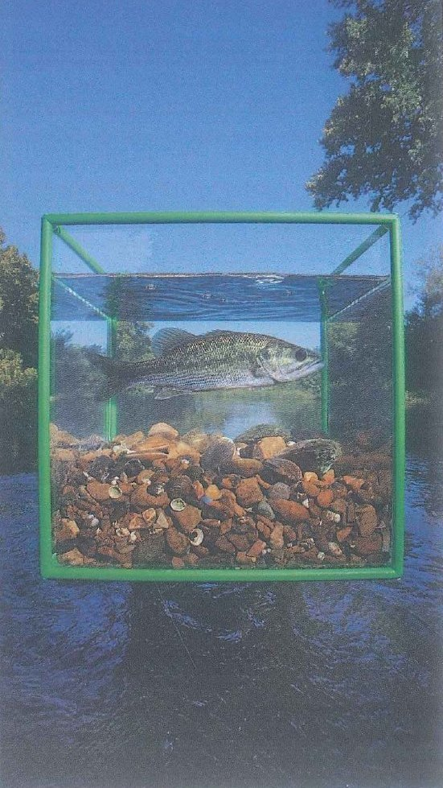
9
Phía sau là cây và bầu trời, nước sông, đá và vỏ ốc dưới đáy khối lập phương, một con cá (SB tr. 144, ảnh D).
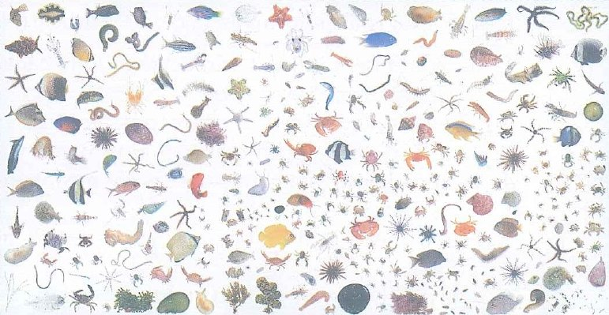
10
Sao biển, cua, nhím biển và cá nhỏ, được đưa lên khỏi nước và bày trên nền trắng: những gì sống trong một foot khối của rạn san hô (SB tr. 145).
Exercise 6 · Tìm từ khác loại
Exercise 6
Mỗi dòng có một từ không cùng nhóm với các từ còn lại: chạm vào từ đó
1
a flooda flash floodheavy raina droughta typhoon
a drought là thiếu nước; các từ còn lại đều mang đến rất nhiều nước.
2
a foresta rivera mountaina fieldan ocean
a field do con người tạo ra để trồng trọt; các từ còn lại là nơi tự nhiên (SB tr. 144, Exercise 2).
3
everybodyeveryoneall the peoplenobodyeach person
nobody = không một ai; các từ còn lại đều chỉ tất cả mọi người.
4
somewhereanywherenowhereeverywheresomething
something chỉ vật; các từ còn lại chỉ nơi chốn (‑where).
5
tinymicroscopicvery smallenormoussmaller than one millimetre
enormous nghĩa là rất to; các từ còn lại mô tả những thứ rất nhỏ.
6
observenoticewatchignorelook at
ignore = phớt lờ, không để ý; bốn từ còn lại đều mang nghĩa nhìn thấy hoặc chú ý đến điều gì.
7
would'dcouldmightwill
will thuộc về first conditional; các từ còn lại có thể đi sau một mệnh đề if chia ở quá khứ.
8
a photographera scientista storm chasera submarinea blogger
a submarine là tàu thuyền; các từ còn lại chỉ người.
B · Ngữ pháp · Exercise 7–15
second conditional (câu điều kiện loại 2): cấu trúc, chọn first hay second conditional, hỏi và đáp · các từ every‑ / some‑ / no‑ / any‑ · dựng câu và viết lại câu · ngôn ngữ nêu nguyên nhân và tác động (SB tr. 178 · Mai Lan Hương tr. 40–43, 244, 248, 305–307)
Exercise 7 · Second conditional: các dạng động từ
Exercise 7
Chọn dạng động từ cho mỗi chỗ trống: quá khứ đơn sau if, would + động từ ở mệnh đề chính
Trong bài của SB, chỗ trống 1 và 7 nằm trong mệnh đề if nên dùng quá khứ đơn; các chỗ trống còn lại là mệnh đề chính nên dùng would / wouldn’t + động từ (ghi chú trong TB). Quy tắc: SB tr. 178 · Mai Lan Hương tr. 306–307.
Part 1 · SB tr. 143, Exercise 7
What would happen if there wasn’t a Gulf Stream?
The Gulf Stream is a stream of warm water which begins in Florida and travels across the Atlantic Ocean. As a result, countries on the west coast of Europe have warmer climates. If the Gulf Stream (1)(stop)mệnh đề if → quá khứ đơn, không bao giờ dùng would flowing, Europe (2)(be)mệnh đề chính → would + động từ nguyên mẫu very different. Countries like Great Britain (3)(become)mệnh đề chính → would become much colder, especially in winter. If the sea was colder, spring and summer (4)(not / last)mệnh đề chính, phủ định → wouldn't + động từ nguyên mẫu as long. Farmers (5)(not / be able to)mệnh đề chính → wouldn't be able to (can không có dạng đi với would) produce certain types of food and heating costs (6)(go up)mệnh đề chính → would go up. So if we (7)(not / have)mệnh đề if → quá khứ đơn; didn't + động từ nguyên mẫu the Gulf Stream, a lot of Europeans (8)(have to)mệnh đề chính → would have to (must không có dạng đi với would) change the way they live.
Part 2 · một trận lũ tưởng tượng: could, might và were
Seven days on an island: an imagined flood at the field camp
Imagine that heavy rain turned the river beside our field camp into a brown lake. If the flood (9)Imagine that … turned = không có thật → if + quá khứ đơn cut (giống hệt dạng nguyên mẫu) the only road for a week, the medical team (10)mệnh đề chính → couldn't + động từ nguyên mẫu = wouldn't be able to (Mai Lan Hương tr. 307) serious cases to hospital by ambulance, so a helicopter (11)mệnh đề chính, chỉ là một khả năng → might + động từ nguyên mẫu come for them. If I (12)were dùng cho mọi ngôi trong tiếng Anh chuẩn mực (khi nói có thể dùng was) the duty doctor, I’d check everyone’s feet for cuts every evening, because dirty floodwater can turn a small wound into a bad infection.
Part 3 · SB tr. 143, Exercise 8 · tình huống ngược lại
13The river never floods, so we don’t have to leave our homes.→ If the river , we leave our homes.
ngược với never floods → if + flooded; mệnh đề chính → would have to
14We don’t get hot temperatures in my country, so people don’t need air conditioning.→ If we hot temperatures in my country, we air conditioning.
if + quá khứ đơn had · mệnh đề chính would need
15We need to check the weather forecast every day because there are sudden tornadoes at this time of year.→ If there sudden tornadoes at this time of year, we check the weather all the time.
tornadoes là số nhiều → weren't · wouldn't need to + động từ
16It doesn’t snow here in winter, so we are able to drive to work every day.→ If it here in winter, we drive to work every day.
if + snowed · wouldn't be able to (ngược với are able to)
Exercise 8 · Chọn first hay second conditional?
Exercise 8
Đọc thẻ trước: tình huống có thật và có thể xảy ra, hay chỉ là tưởng tượng và khó xảy ra? Rồi chọn dạng đúng
Chọn loại nào là tùy vào mức độ có thật của tình huống, không tùy vào thời gian: cả hai loại câu điều kiện đều nói về hiện tại hoặc tương lai (ghi chú trong TB, SB tr. 143 · Mai Lan Hương tr. 305–307).
1The forecast says a typhoon will probably reach the coast tomorrow.If the typhoon the coast tomorrow, our unit will help with the evacuation.
sự việc nhiều khả năng xảy ra + will help → first conditional: if + hiện tại đơn reaches
2It has never snowed in Hồ Chí Minh City.If it in Hồ Chí Minh City, hardly anyone would know how to ride a motorbike on it.
tình huống tưởng tượng + would know → second conditional: snowed
3Minh has a real chance of a place on the summer photography course.If he a place, he’ll spend two weeks in a national park.
có cơ hội thật + he’ll → hiện tại đơn wins
4I’m only a second‑year cadet, but I can imagine leading the camp.If I the camp commander, I’d move the tents away from the river.
một vai trò tưởng tượng → were (văn nói hằng ngày dùng was); không bao giờ dùng would sau if
5The lab has ordered a new microscope, and it should arrive next week.If it arrives on time, we photograph the insects before the exam.
kế hoạch có thật, đi với arrives → first conditional: will be able to
6Lan is scared of storms and would never chase one.Lan wouldn’t drive towards a tornado even if you her.
tình huống tưởng tượng (wouldn’t drive) → even if + quá khứ đơn paid
7There’s a thunderstorm right now, and your friend is standing under a tall tree.If you there, you’ll be in danger, so move now!
nguy hiểm có thật ngay lúc này + you’ll → hiện tại đơn stay
8Nobody in our class owns a drone.If someone in our class a drone, we’d be able to film the flood damage from the air.
hiện không đúng sự thật (không ai có cả) → had + we’d be able to
9The bus to the field hospital leaves at six, and Tuấn often oversleeps.If Tuấn the bus again, the captain will be furious.
khá có khả năng xảy ra, đi với will be → misses (he → ‑es)
10Humans cannot breathe underwater.If people breathe underwater, cities might be built on the sea floor.
hiện tại là không thể → could (quá khứ của can) trong mệnh đề if; might ở mệnh đề chính = có lẽ
Exercise 9 · Hỏi và đáp với would
Exercise 9
Hoàn thành mỗi đoạn hội thoại ngắn bằng câu hỏi hoặc câu đáp phù hợp
Câu đáp tự nhiên dùng I’d / they’d + động từ, và giữ nguyên dạng đầy đủ would khi đứng cuối câu (I would if I could); câu hỏi lặp lại (echo question, Would you?) thể hiện sự ngạc nhiên, như trong Track 95 (SB tr. 189 · ghi chú trong TB, SB tr. 143, Exercise 10).
1A if you got lost in the forest during a night march? B I’d stay where I was and blow my whistle every few minutes.
từ để hỏi + would + chủ ngữ + động từ nguyên mẫu; mệnh đề if vẫn ở quá khứ
2A a storm chaser if someone offered you the job? B No way. I’d be terrified.
câu hỏi yes/no: Would + chủ ngữ + động từ nguyên mẫu
3A Would you live on a submarine for six months if the navy needed a doctor? B say no. I’d miss the sun too much.
một lựa chọn tưởng tượng → I’d (= I would) + probably + động từ nguyên mẫu
4A If you could spend one night anywhere in the wild, where would it be? B a hut near the top of Fansipan, just for the stars.
một lựa chọn tưởng tượng → I’d + động từ nguyên mẫu (I think I’d … nghe tự nhiên, theo ghi chú trong TB)
5A I’d sleep outside in a hammock if it didn’t rain every night. B I’d stay in the tent. The mosquitoes are awful.
I’d sleep = I would sleep, nên câu hỏi lặp lại là Would you? (như trong Track 95)
6A Would you lend me your camera for the trip to the reserve? B but I need it for my own project that weekend.
lời từ chối lịch sự: I would if I could; ’d không bao giờ đứng cuối câu đáp
7A If the academy gave us a free weekend, where ? B Straight home to Nghệ An to see my parents.
từ để hỏi + would you + động từ nguyên mẫu
8A Would your parents be worried if you joined the flood‑relief team? B worried sick. My mum would phone me every hour.
một phản ứng tưởng tượng → They’d (= they would) be; worried sick = lo phát ốm
9A you jump into the river to save a dog if the water were freezing? B Probably not. I’d call the rescue team and throw it a rope.
were (quá khứ) sau if → câu hỏi Would you jump …?
10A If you were me, would you take the night shift or the early shift? B the early one. You’d be too tired to study after a night shift.
câu trả lời cho If you were me …? → I’d + động từ nguyên mẫu
Chọn từ every‑ / some‑ / no‑ / any‑ hợp với mỗi chỗ trống
-one / -body = người, -thing = vật, -where = nơi chốn; every- = tất cả, some- = không xác định cụ thể, no- = không có ai, không có gì (đi với động từ khẳng định), any- = dùng trong câu hỏi và câu phủ định (SB tr. 178 · Mai Lan Hương tr. 40–43, 349).
Part 1 · SB tr. 145, Exercise 8
The places in the photos
Central Park, New York · Some people think that there isn’t (1)isn’t (phủ định) + nơi chốn → anywhere to see nature in New York. But Central Park is a quiet place with a forest full of plants and animals, and you can always find (2)động từ khẳng định (can always find) + nơi chốn → somewhere to sit and watch and listen to nature.
Monteverde Reserve, Costa Rica · There’s probably (3)nơi chốn, động từ khẳng định (There’s) nhưng nghĩa phủ định → nowhere else in the world with so many different plants. There are plants of all sizes and colours (4)ở mọi nơi bạn nhìn → everywhere you look.
Duck River, Tennessee · (5)tất cả những người thích câu cá → Everybody + động từ số ít knows in Tennessee who likes fishing knows about the Duck River. It’s one of the best rivers in the USA for different kinds of fish.
Coral reef, French Polynesia · (6)mọi thứ trên rạn san hô → Everything looks bright and colourful on a coral reef and there’s always (7)câu khẳng định, một thứ không xác định cụ thể → something beautiful to look at, from the multi‑coloured coral to the orange, green and yellow sea life.
Part 2 · câu mới
8I looked for my stethoscope, but it wasn’t in my bag, my locker or the car.
tất cả những nơi tôi có thể nghĩ ra → everywhere
9 has left a bag of medicine at the gate. Do you know whose it is?
một người, ta không biết là ai → Somebody + động từ số ít has
10There wasn’t in the tent, so we started the first‑aid drill without the sergeant.
động từ phủ định → anyone; wasn’t nobody là phủ định kép
11Everybody in our platoon a first‑aid kit in their backpack.
Everybody đi với động từ số ít; dùng their cho một nhóm có cả nam lẫn nữ là được (Mai Lan Hương tr. 43)
12You look frozen after the night patrol. Shall I make you to warm up?
lời mời → some‑; tính từ đứng sau đại từ: something hot
13We heard all night: no birds, no wind, not even the river.
động từ khẳng định (heard) mang nghĩa phủ định → nothing
14 came to the lake to swim that morning, because the water was far too cold.
no one viết thành hai từ (nobody viết liền); anyone cần đi với not
15 can join the birdwatching club: you don’t need a camera or any experience.
any‑ trong câu khẳng định = ai cũng được (ghi chú trong TB)
16I don’t know else who gets up at five to watch birds.
động từ phủ định → anyone; else đứng sau đại từ
Exercise 11 · Dựng câu: từ gợi ý thành câu hoàn chỉnh
Exercise 11
Biến các từ gợi ý thành câu: chọn dạng đúng cho mỗi chỗ trống
Câu 1–3 lấy từ SB tr. 143, Exercise 6. Mỗi chỗ trống kiểm tra một điểm: một dạng động từ, trật tự từ trong câu hỏi, một từ every‑ / some‑ / no‑ / any‑ hoặc thành phần đi sau từ đó.
1SB tr. 143, Exercise 6 · you / not need / help / if / you / listen / in class
You help if you in class.
mệnh đề chính đứng trước: wouldn't need · if + quá khứ đơn listened · không có dấu phẩy
2SB tr. 143, Exercise 6 · you / ask / your friends / for money / if / you / not have / any / ?
your friends for money if you any?
câu hỏi: Would you + động từ nguyên mẫu · didn't have any (phủ định → any)
3SB tr. 143, Exercise 6 · if / you / start / a new business / what / you / produce / ?
If you a new business, what ?
if + started · dấu phẩy · trật tự từ của câu hỏi would you produce
4if / the bridge / be / under water / the ambulance / have to / take / the mountain road
If the bridge under water, the ambulance the mountain road.
tình huống tưởng tượng → were · would have to + động từ
5nobody / in the village / notice / the water / rise / until / midnight
in the village noticed the water until midnight.
Nobody (viết liền) + động từ khẳng định · notice + tân ngữ + ‑ing
6everyone / on the team / know / what / do / if / a landslide / block / the road
Everyone on the team what to do if a landslide the road.
Everyone + động từ số ít knows · khả năng có thật → hiện tại đơn blocks
7I / not go / anywhere / near / the river / if / I / be / you
I anywhere near the river if I you.
lời khuyên: wouldn't go … if I were you
8we / not see / anything / interesting / in the park / until / the rain / stop
We anything in the park until the rain stopped.
didn't see anything (không dùng phủ định kép) · tính từ đứng sau đại từ
9if / you / can / save / one animal / from extinction / which / you / choose / ?
If you save one animal from extinction, which ?
could (= were able to) trong mệnh đề if · would you choose
10someone / leave / the gate / open / so / the goats / get into / the garden
left the gate open, so the goats the garden.
một người ta không biết là ai → Someone · quá khứ đơn got into; so dẫn ra kết quả
Exercise 12 · Viết lại câu
Exercise 12
Giữ nguyên nghĩa, đổi cách diễn đạt: chọn phần cuối hoàn thành câu mới
Thẻ màu cam là câu gốc. Chỉ có một phần cuối vừa giữ đúng ý đó vừa đúng tiếng Anh.
1I don’t have a drone, so I can’t film the rice fields from above.→ If I the rice fields from above.
ngược với sự thật → If I had …, I could …, có dấu phẩy sau mệnh đề if
2My advice is to check the forecast before you leave.→ If I the forecast before you leave.
lời khuyên = If I were you, I’d + động từ nguyên mẫu
3Nobody lives in the old forest ranger’s hut now.→ There in the old forest ranger’s hut now.
Nobody (động từ khẳng định) = isn’t anybody (động từ phủ định); không bao giờ phủ định cả hai
4There were no people on the beach after the warning.→ on the beach after the warning.
nobody là số ít → There was nobody; anybody cần động từ phủ định
5There wasn’t anything alive in the dry riverbed.→ There was in the dry riverbed.
động từ khẳng định → nothing; tính từ đứng sau nó; lively nghĩa là sôi nổi, đầy sức sống
6It’s very unlikely that I’ll ever meet a famous wildlife photographer, but I’d love to ask about her first photo.→ If I her about her first photo.
rất khó xảy ra → second conditional: met … I’d ask
7People leave the area because the river floods every year.→ If the river , people wouldn’t leave the area.
tình huống ngược lại → if + didn’t + động từ nguyên mẫu
8The hospital needs more generators because the power often goes off in storms.→ The hospital more generators if the power didn’t often go off in storms.
kết quả của một thay đổi tưởng tượng → wouldn’t need
9It doesn’t matter which seat you choose: they’re all free.→ You can .
it doesn’t matter which = anywhere trong câu khẳng định
10The storm destroyed many houses. As a result, hundreds of families had to move.→ Hundreds of families had to move .
because + mệnh đề (chủ ngữ + động từ); because of / due to + danh từ (Mai Lan Hương tr. 248)
Exercise 13 · Sửa lỗi sai
Exercise 13
Mỗi câu có một phần gạch chân bị sai: chọn cách sửa
1If it would rain tomorrow, the field exercise would be cancelled. →
không bao giờ dùng would trong mệnh đề if; tình huống tưởng tượng → quá khứ đơn (SB tr. 178)
2If I were rich I’d build a clinic in my home village. →
mệnh đề if đứng trước → có dấu phẩy sau nó
3We’d go swimming, if the water were warmer. →
mệnh đề chính đứng trước → không có dấu phẩy (SB tr. 178)
4Look at those clouds! If it rained in the next hour, we’ll get soaked. →
tình huống có thật, nhiều khả năng xảy ra + we’ll → first conditional: rains
5I didn’t see nothing in the cube except dead leaves. →
không dùng phủ định kép: didn’t see anything (hoặc saw nothing)
6Everybody have a job to do in the flood‑relief team. →
các từ every‑ / some‑ / any‑ / no‑ đi với động từ số ít
7On my day off I want to find peaceful somewhere to read, with no engines and no horns. →
tính từ đứng sau đại từ
8Anybody answered the phone at the ranger station, so we left a message. →
anybody không mang nghĩa phủ định nếu không có not; chúng tôi để lại lời nhắn vì không ai nghe máy → nobody
9During the storm, a lightning struck the flagpole in front of the barracks. →
lightning là danh từ không đếm được: không có a, không thêm ‑s, không có e sau t
10We all need to protect the nature if we want clean air in our cities. →
nature theo nghĩa chung không đi với the
11Many farms were destroyed because the flood. →
because of + danh từ; because + mệnh đề
12Strong winds can effect the timetable of every ferry to the islands. →
affect là động từ; effect là danh từ (have an effect on)
Exercise 14 · Ngôn ngữ nêu nguyên nhân và tác động: cụm từ đúng cho từng nhiệm vụ
Exercise 14
Nhãn cho biết nhiệm vụ của câu: chọn cụm từ làm đúng nhiệm vụ đó
Đây là nhiệm vụ của từng câu trong đoạn văn nguyên nhân – kết quả ở Sheet 8 (Frame A, B và C). Cách nêu lý do: Mai Lan Hương tr. 248.
1Câu chủ đề · nguyên nhân why floods are getting worse in big cities.
chủ đề hỏi why → reasons; số nhiều → There are
2Câu chủ đề · tác độngLiving next to a busy motorway on children’s health.
have an effect on; effect là danh từ, affect là động từ
3Giới thiệu nguyên nhân thứ nhất concrete roads and roofs stop rainwater from soaking into the ground.
The first reason is that + mệnh đề; tránh dùng is because trong văn viết chuẩn mực
4Lý do nằm trong câuMany students rarely go into nature they spend most of their free time on screens.
because + chủ ngữ + động từ (they spend)
5Lý do + danh từThe road to the clinic stayed closed for a week the landslide.
because of + danh từ (the landslide), Mai Lan Hương tr. 248
6Kết quả · câu mớiHailstones the size of eggs fell on the orchards. , most of the fruit was ruined before it could be picked.
nguyên nhân đứng trước, rồi As a result, + tác động
7Nguyên nhân → tác động bằng một động từCutting down trees on steep hills can landslides in the rainy season.
X leads to Y: nguyên nhân đứng trước; result from thì đảo chiều lại
8Tác động → nguyên nhân bằng một động từMany flash floods heavy rain falling on dry, hard ground.
tác động làm chủ ngữ → bị động are caused by + nguyên nhân
9Đưa ví dụSome effects of a heatwave are easy to miss. , older patients may become confused because they are not drinking enough.
một trường hợp cụ thể của easy to miss → For example
10Kết luận, these two causes explain why our streets now flood after just one hour of rain.
một câu tóm gọn ở cuối → In short
Exercise 15 · Chọn câu B1+ tự nhiên
Exercise 15
Đọc câu B1 đơn giản, rồi chọn câu B1+ không có lỗi
1B1: I don’t have money. I can’t travel.
afford it (có tân ngữ) · could … I’d · dấu phẩy · spend time + ‑ing
2B1: The storm was very bad. Many trees fell.
so + tính từ + that + kết quả (Mai Lan Hương tr. 244); dozens of trees
3B1: Everybody likes nature photos.
everyone (viết liền) + động từ số ít enjoys · nature không có the
4B1: I want to see wild elephants. It is my dream.
One of my + danh từ số nhiều + is · biggest · không dùng the trước tên công viên
5B1: There is a flood. Then people get sick.
lead to + tác động · because + mệnh đề · Floods số nhiều → lead
6B1: Don’t go out in the storm. It’s dangerous.
lời khuyên: If I were you, I’d + động từ nguyên mẫu · dấu phẩy · has stopped
7B1: There’s no place to sit in the park.
There’s nowhere to + động từ · so dẫn ra kết quả
8B1: Maybe my photo will win. I will buy a lens.
có cơ hội thật → first conditional: wins … I’ll · put money towards + một thứ (góp tiền để mua thứ đó)
C · Bốn kỹ năng · Exercise 16–20
đọc · nghe · viết · nói: paraphrase, chiếc diều của Franklin, đoạn văn nguyên nhân – kết quả, câu trả lời 7 bước, bài trả lời “What if …?” về loài ong
Exercise 16 · Đọc & Nghe: nói theo cách khác
Exercise 16
Chọn cách diễn đạt khác giữ đúng nghĩa của phần gạch chân
Câu 1–6 lấy từ bài đọc What if …? (Sheet 5, SB tr. 142), câu 7–9 từ Track 93 về những người săn bão (Sheet 1, Lead‑in 3), câu 10–12 từ Track 96, phim tài liệu về David Liittschwager (Sheet 6). Câu hỏi trong đề thi hiếm khi chép lại nguyên từ ngữ của bài: chúng diễn đạt cùng một ý theo cách khác.
1Every week people send Randall questions about unlikely or impossible things. =
unlikely = có lẽ sẽ không xảy ra; impossible = không thể xảy ra
2If you were in a submarine, you’d be safe because you’d be underwater. =
underwater = down in the water, ở dưới nước, không phải trên mặt nước
3However, lightning usually hits the tallest thing, so you wouldn’t be as safe in a boat. =
the tallest thing = vật ở vị trí highest (cao nhất)
4If the lightning hit the water near you, the electrical energy would spread outwards across the water. =
spread outwards = lan ra từ tâm in every direction (theo mọi hướng)
5The rain would break the glass if you drove at the speed of sound. =
tốc độ âm thanh vào khoảng 1.200 km/h (ghi chú kiến thức nền trong TB)
6You wouldn’t be safe if your head was above the water. =
above the water = out of it, cao hơn mặt nước, nơi sét có thể đánh trúng bạn
7When a tornado is coming, most people drive in the opposite direction. =
hướng ngược với cơn lốc = away from it (tránh xa nó); người săn bão thì lái xe về phía cơn lốc
8They can change direction at any moment and so they are difficult to follow. =
at any moment = có thể xảy ra now or any second, không hề báo trước
9They can destroy trees and houses in seconds. =
in seconds = very quickly (rất nhanh)
10If you live in the middle of the city, maybe you think that there’s nowhere to look at nature. =
nowhere = not one place (không một nơi nào)
11Different species of plants and animals are always somewhere nearby. =
always somewhere nearby = always a place close to you: lúc nào cũng có một nơi gần bạn, nơi chúng sinh sống
12Then he spent three weeks in that place and photographed everything living inside the green metal cube. =
everything living = every living thing, mọi sinh vật, dù lớn hay nhỏ xíu
Exercise 17 · Đọc: hoàn thành đoạn văn về Benjamin Franklin và chiếc diều
Exercise 17
Đọc câu chuyện lịch sử ngắn rồi chọn phương án đúng nhất cho mỗi chỗ trống
Bài đọc nối hai nửa của bài học: sét ở 12a, và một nhà khoa học trả lời một câu hỏi kỳ lạ theo tinh thần của 12b. Chỗ trống 5 và 6 là second conditional; chỗ trống 2 và 7 là từ every‑ / no‑.
Benjamin Franklin, a kite and a key
In the 1740s, scientists still argued about what lightning really was. Benjamin Franklin, a printer from Philadelphia who now spent most of his time on science, believed that it was simply a giant spark of (1)danh từ sau a spark of → electricity. To test the idea, he needed something tall enough to reach the storm clouds, but there was (2)động từ khẳng định (was) + không có nơi nào → nowhere, tính từ đứng sau high enough in the city.
So in June 1752, with the help of his son William, he (3)in June 1752 → quá khứ đơn của fly: flew a kite made from a large silk handkerchief into a thunderstorm. A sharp, pointed wire stood up from the top of the kite, and a metal key (4)có người buộc chiếc chìa khóa → bị động quá khứ was tied near the bottom of the wet string, where it joined a silk ribbon. Franklin held the ribbon and stayed under a roof, so the silk kept dry. Lightning never actually struck the kite, and that was lucky: if lightning (5)trường hợp tưởng tượng → if + quá khứ đơn hit (giống hệt dạng nguyên mẫu) a kite like that, the person holding the string (6)mệnh đề chính → would + probably + bị động be killed. Instead, the storm clouds slowly charged the wet string, and when Franklin moved his hand close to the key, a small spark jumped across. Lightning really was electricity. Not (7)Not everybody = một số người, nhưng không phải tất cả who tried such experiments was so fortunate: in 1753 the scientist Georg Richmann was killed in St Petersburg while he was testing a metal rod during a storm.
Franklin turned his discovery into something useful: the lightning rod. It is an iron rod with a sharp point; its top rises (8)cao hơn mái nhà → above the highest part of a building, and its bottom goes deep into the damp ground. When lightning hits the rod, the electricity runs down into the earth (9)xuống đất, chứ không đi qua tường → instead of + danh từ through the walls. In September 1752 he fitted one to his own house, with two small bells that rang whenever the wire was charged. He never took out a patent on it, (10)lý do, kèm một mệnh đề đầy đủ (he believed …) → because he believed that inventions should be shared freely.
Exercise 18 · Viết: sắp xếp đoạn văn nguyên nhân – kết quả
Exercise 18
Xếp mười câu vào đúng vị trí trong đoạn văn, đánh số từ 1 đến 10
Một đoạn văn theo Frame B ở Sheet 8 (tác động của một sự kiện có thật): câu chủ đề · tác động 1 · giải thích · ví dụ · kết quả · tác động 2 · giải thích · ví dụ · kết quả · câu kết. The first / second effect, các từ nối và những từ chỉ ngược về ý trước (this, those, the) quyết định thứ tự.
Đề bài
What are the effects of a strong typhoon on a district hospital?
For example, if the lights go out in the middle of an operation, the team has to keep working by torchlight until the generator starts.
Because of this, the staff who are already inside often have to work two shifts in a row.
A strong typhoon has two serious effects on a district hospital, even when the building itself is not damaged.
The reason is that fallen trees and landslides block the roads for hours or even days.
The first effect is that the hospital often loses its main power supply.
In short, a typhoon can cut a hospital off from both its power and its people, even if its walls are still standing.
As a result, even a simple operation becomes slower and riskier for the patient on the table.
This happens because strong winds bring down power lines across the district, and repairs can take days.
For instance, on those blocked roads, the nurses for the next shift may be stuck in their villages.
The second effect is that patients and staff cannot reach the hospital easily.
Đoạn văn theo đúng thứ tự · các từ nối giữa các câu được đánh dấu
1A strong typhoon has two serious effects on a district hospital, even when the building itself is not damaged.
1 · Câu chủ đề. Chủ đề + has two serious effects on: câu này báo trước đoạn văn nói về tác động, không phải nguyên nhân.
2The first effect is that the hospital often loses its main power supply.
2 · Tác động 1.The first effect is that mở ra tác động thứ nhất trong hai tác động đã báo trước ở câu 1.
3This happens because strong winds bring down power lines across the district, and repairs can take days.
3 · Giải thích tác động 1.This happens because cho biết vì sao mất điện (câu 2).
4For example, if the lights go out in the middle of an operation, the team has to keep working by torchlight until the generator starts.
4 · Ví dụ cho tác động 1.the lights nối tiếp chuyện nguồn điện ở câu 2–3 và cho thấy một tình huống cụ thể.
5As a result, even a simple operation becomes slower and riskier for the patient on the table.
5 · Kết quả của ví dụ.the patient on the table chính là bệnh nhân trong ca mổ ở câu 4.
6The second effect is that patients and staff cannot reach the hospital easily.
6 · Tác động 2.The second effect is that chuyển sang tác động thứ hai đã báo trước.
7The reason is that fallen trees and landslides block the roads for hours or even days.
7 · Giải thích tác động 2.The reason is that cho biết vì sao không ai vào được (câu 6).
8For instance, on those blocked roads, the nurses for the next shift may be stuck in their villages.
8 · Ví dụ cho tác động 2.those blocked roads chính là những con đường ở câu 7.
9Because of this, the staff who are already inside often have to work two shifts in a row.
9 · Kết quả của ví dụ.the staff who are already inside là những người đã ở sẵn trong viện, đối lập với các điều dưỡng bị kẹt bên ngoài ở câu 8.
10In short, a typhoon can cut a hospital off from both its power and its people, even if its walls are still standing.
10 · Câu kết.In short tóm lại cả hai tác động (điện và con người) và không thêm ý mới.
Dịch nghĩa
Một cơn bão mạnh gây ra hai tác động nghiêm trọng đối với bệnh viện huyện, ngay cả khi bản thân tòa nhà không bị hư hại. Tác động thứ nhất là bệnh viện thường bị mất nguồn điện chính. Điều này xảy ra vì gió mạnh quật đổ đường dây điện khắp vùng, và việc sửa chữa có thể mất nhiều ngày. Chẳng hạn, nếu đèn tắt giữa chừng một ca mổ, kíp mổ phải tiếp tục làm việc dưới ánh đèn pin cho đến khi máy phát điện dự phòng chạy. Vì thế, ngay cả một ca mổ đơn giản cũng trở nên chậm hơn và rủi ro hơn cho bệnh nhân đang nằm trên bàn mổ. Tác động thứ hai là bệnh nhân và nhân viên y tế không thể dễ dàng đến được bệnh viện. Lý do là cây đổ và sạt lở đất chặn các con đường trong nhiều giờ, thậm chí nhiều ngày. Ví dụ, trên những con đường bị chặn ấy, các điều dưỡng của ca trực tiếp theo có thể bị kẹt lại ở làng. Do đó, những nhân viên đã ở sẵn trong viện thường phải làm liền hai ca. Tóm lại, bão có thể cắt đứt bệnh viện khỏi cả nguồn điện lẫn người bệnh và nhân viên của mình, dù tường vẫn còn đứng vững.
Exercise 19 · Nói: dựng câu trả lời 7 bước về chuyến đi thiên nhiên cuối tuần
Exercise 19
Đề xuất một địa điểm cho chuyến đi thiên nhiên cuối tuần của học viên: chọn câu cho từng bước
Tình huống
The academy will organise one weekend nature trip for cadets this term. Class K84 has been asked to recommend one of three places near Hà Nội.
Your class commander asks you: ‘Which place should we choose, and why?’
1🌲Ba Vì National Parkforest trails up to King Peak (1,296 m) · about 50 km west of central Hà Nội
2⛰️Tam Đảo National Parka cool, misty hill town at 930 m, built by the French in 1907 · forest walks and the Silver Waterfall · about 85 km north‑west
3🛶Vân Long Wetland Nature Reservebamboo boats between limestone hills · home of the rare Delacour’s langur · about 85 km south, in Ninh Bình
Chọn một địa điểm
Nêu lý do chính
Nói vì sao hai nơi còn lại kém phù hợp hơn với một chuyến đi cuối tuần
1' chuẩn bị · 2' nói
Trước hết hãy ghép bài mẫu: với mỗi bước, chọn câu làm đúng nhiệm vụ của bước đó. Sau đó đóng đáp án lại và tự trả lời, về cùng địa điểm này hoặc một nơi khác.
Point
Point: nêu lựa chọn trong một câu ngắn.
Why
Why: lý do chính, điều làm nơi này khác biệt (một vùng đất ngập nước, một loài quý hiếm).
How
How: kế hoạch thực tế: khi nào đi, làm gì, khi nào về.
Example
Example: một người thật đã đến đó và một khoảnh khắc trên thuyền.
Result
Result: điều gì đã thay đổi ở chính người đó về sau.
Limitation
Limitation: Admittedly …, but … ghi nhận công bằng hai nơi còn lại, rồi đáp lại.
Evaluation
Evaluation: lời đánh giá cuối cùng từ một góc nhìn mới (điều gì làm một chuyến đi đáng giá), không nhắc lại Point.
Bài mẫu
PointIf we can only have one weekend, I'd go for Vân Long. WhyMainly because it's a wetland, so it'd show us a kind of nature most of us have never seen up close, and it's home to the biggest group of Delacour's langurs left anywhere in the world. HowWe could leave the academy early on Saturday, spend the morning on the bamboo boats that local people row between the limestone hills, and still be back by Sunday lunchtime. ExampleMy cousin went there with her biology class last spring, and from the boat she spotted two langurs sitting on a cliff above the water. ResultShe's been back twice since then with a zoom lens, and now she wants to write her final-year project on the reserve. LimitationAdmittedly, Ba Vì is closer and Tam Đảo is cooler, but plenty of us have hiked in Ba Vì already, and Tam Đảo gets so crowded at weekends that you'd hardly notice any wildlife. EvaluationOn balance, a trip like this is only worth it if it shows us something new, and Vân Long would do that better than anywhere else on the list.
Dịch nghĩa
Nếu chỉ có một dịp cuối tuần, tôi sẽ chọn Vân Long. Chủ yếu là vì đây là vùng đất ngập nước, nên chuyến đi sẽ cho chúng ta thấy một kiểu thiên nhiên mà phần lớn chúng ta chưa bao giờ được tận mắt nhìn thấy, và đây cũng là nơi sinh sống của quần thể voọc mông trắng lớn nhất còn lại trên thế giới. Chúng ta có thể rời học viện từ sáng sớm thứ Bảy, dành cả buổi sáng ngồi thuyền nan do người dân địa phương chèo len giữa những dãy núi đá vôi, mà vẫn về kịp trước giờ ăn trưa Chủ nhật. Chị họ tôi đã đến đó cùng lớp sinh học vào mùa xuân năm ngoái, và từ trên thuyền chị ấy đã nhìn thấy hai con voọc ngồi trên vách đá phía trên mặt nước. Từ đó đến nay chị đã quay lại thêm hai lần với ống kính zoom, và giờ chị muốn làm đề tài tốt nghiệp về khu bảo tồn này. Phải thừa nhận là Ba Vì gần hơn và Tam Đảo mát hơn, nhưng nhiều người trong chúng ta đã leo Ba Vì rồi, còn Tam Đảo cuối tuần thì đông đến mức khó mà để ý thấy con vật hoang dã nào. Cân nhắc mọi mặt, một chuyến đi như thế này chỉ đáng giá khi nó cho chúng ta thấy điều gì đó mới, và Vân Long sẽ làm được điều đó tốt hơn bất kỳ nơi nào khác trong danh sách.
2:00
Exercise 20 · Viết: hoàn thành bài trả lời “What if …?” về loài ong
Exercise 20
Hoàn thành bài trả lời trên blog: chọn phương án đúng nhất cho mỗi chỗ trống
Một bài trả lời theo phong cách blog của Randall: câu hỏi kỳ lạ, câu trả lời khoa học. Chỗ trống 2, 3, 5, 7, 8 và 9 là second conditional; chỗ trống 1, 4, 6 và 10 là từ every‑ / some‑ / no‑ / any‑. Bài về nhà (Ngày 7 của kế hoạch 1‑3‑7, Sheet 10): tự viết bài trả lời 120–150 từ cho câu hỏi What would happen if it never rained in Hà Nội in summer?
What would happen if all the bees disappeared?
A reader asks: My grandfather keeps bees. He says that if bees disappeared, humans would die out in four years. Is that true?
Not quite. That warning is often linked to Albert Einstein, but nobody has ever found (1)nobody đã mang nghĩa phủ định → any; nobody … no sẽ thành phủ định kép record of him saying it. Still, if every bee on Earth (2)tình huống tưởng tượng → if + quá khứ đơn disappeared tomorrow, our lives (3)mệnh đề chính → would + động từ nguyên mẫu a lot.
Bees carry pollen from flower to flower, and many crops can’t make fruit unless (4)một thứ không gọi tên cụ thể (côn trùng, chim, gió) → something moves that pollen for them. Rice, wheat and maize (5)mệnh đề chính, phủ định → wouldn’t be in much danger, because they don’t need insects to make their grain. Apples, almonds and melons, on the other hand, would become much harder to grow. Other insects, birds and bats also carry pollen, so fruit wouldn’t vanish completely, but there would be far less of it. (6)tất cả người đi chợ → Everybody, viết liền một từ, đi với động từ số ít (ở đây là động từ khuyết thiếu would notice) would notice the difference at the market, because fruit, vegetables and nuts (7)mệnh đề chính → would cost much more.
Doctors would worry too. A 2015 study in The Lancet estimated that if all animal pollinators, not only bees, (8)mệnh đề if → quá khứ đơn vanished, about 1.4 million more people (9)mệnh đề chính → would die every year from heart disease, stroke and other illnesses linked to a poor diet. In Hanyuan, a pear‑growing county in Sichuan, China, farmers already pollinate their trees by hand, touching each flower with a stick tipped with chicken feathers. If bees disappeared (10)ở mọi nơi, khắp thế giới → everywhere, far more farmers would have to do this slow, tiring work.
So no, humans wouldn’t die out in four years. But our plates would be much less colourful, and our doctors would be a lot busier.
Sheet 10 / 11 · Nhớ lại, lên kế hoạch, tự kiểm tra
Ôn tập: không nhìn tài liệu
0 bài đã chấm
1 · Quiz 16 cụm từ
Quiz
Viết cụm từ ứng với từng nghĩa: phần trong ngoặc cho biết cấu trúc của cụm, các dạng đúng khác cũng được tính
1dòng điện từ đám mây giông mà ta nhìn thấy thành một tia chớp (một danh từ, không có chữ e sau chữ t)
lightning: danh từ không đếm được; lightening nghĩa là làm cho vật gì đó nhẹ đi hoặc sáng màu hơn
2bị tia chớp từ trên trời ấy đánh trúng (be + quá khứ phân từ + by + danh từ)
be hit by lightning: không có a trước lightning; dùng struck by cũng được
3thông báo cho người dân biết nước sông có thể sắp tràn ngập (a + danh từ + danh từ)
a flood warning: danh từ + danh từ, giống a storm warning
4xem thời tiết sắp tới sẽ ra sao (động từ + the + danh từ + danh từ)
check the weather forecast; sau đó có thể nói the forecast says …
5đi theo hướng ngược lại, tránh xa mối nguy hiểm (động từ + in + the + tính từ + danh từ)
in the opposite direction: giới từ là in, không phải to
6nhiệt độ dưới không độ (tính từ + danh từ)
freezing = dưới 0 °C; frozen = đã đóng băng
7nhanh hơn mọi máy bay chở khách hiện nay (at + the + danh từ + of + danh từ)
at the speed of sound: at + một tốc độ
8một tình huống có lẽ sẽ không bao giờ xảy ra (an + tính từ + danh từ)
unlikely = có lẽ sẽ không xảy ra; impossible = không thể xảy ra
9phần mở đầu của một lời khuyên (If + I + … + you)
If I were you, I’d … + động từ nguyên mẫu; dùng were cho mọi ngôi (khi nói có thể dùng was)
10câu hỏi về một tình huống tưởng tượng (What + would + you + động từ + if)
What would you do if + quá khứ đơn …? Không bao giờ dùng would sau if.
11một khoảng xanh gần nhà, nơi mọi người dắt chó đi dạo (a + tính từ + danh từ)
a local park = công viên gần nơi bạn sống
12rất xa thành phố và làng mạc (far away from + any + danh từ số nhiều)
far (away) from any + danh từ số nhiều: dùng any vì cụm này mang nghĩa phủ định
13vùng đất mà luật pháp cấm săn bắt hoặc xây dựng (a + tính từ + danh từ)
a protected area: protect → protected (khu vực được pháp luật bảo vệ)
14thể tích bên trong một chiếc hộp có mỗi cạnh dài 30,5 cm (one + tính từ + danh từ)
one cubic foot: một foot ≈ 30,5 cm; one foot, two feet
15mọi loài sinh vật khác nhau, loài thì mọc tại chỗ, loài thì di chuyển được (danh từ + of + danh từ + and + danh từ)
species: số ít và số nhiều có cùng một hình thức
16nhìn thấy và để ý đến các loài vật sống quanh bạn (động từ + the + danh từ + around + you)
notice = nhìn thấy và để ý; wildlife không có dạng số nhiều
Điểm của bạn: Ngày 1 ___ · Ngày 3 ___ · Ngày 7 ___
2 · Lịch ôn 1-3-7
Ngày 0
Trên lớp
Bốn nhóm từ, bài báo What if …?, Track 96 và hai điểm ngữ pháp
Làm quiz câu 1–8 trước khi hết giờ
Ngày 1
Quiz + sáu câu
Làm lại toàn bộ quiz, không xem lại phần nghĩa trước
Ba câu thật về cuộc sống của bạn với If I …, I’d …, và ba câu với everyone, something, nowhere hoặc anything
Ngày 3
Nhớ lại và làm lại
Lần lượt từng nhóm: từ nghĩa nhớ ra cụm, rồi từ cụm nhớ ra nghĩa
Làm lại Exercise 7, 8, 10 và 13, lần này không mở đáp án
Năm câu về thời tiết ở tỉnh quê bạn, dùng flood, heavy rain, freezing và the weather forecast
Ngày 7
Đo mức tiến bộ
Nhớ lại và viết ra từ của từng nhóm, rồi so với ghi chép của Ngày 0
Làm quiz thêm một lượt cuối
Câu trả lời “What if …?” của riêng bạn (bài về nhà Exercise 20), rồi đánh dấu vào bảng tự đánh giá
3 · Sổ cụm từ cá nhân
Cách dùng
Chọn những cụm từ trong bài mà bạn thật sự sẽ dùng trong bài thi nói và viết, tối đa 20 cụm, mỗi cụm kèm một câu thật về cuộc sống của chính bạn.
4 · Bảng tự đánh giá
Sheet 11 / 11 · Trên lớp · Block A và B
Vocabulary in Action
1Nhận diệnnhận ra từ
2Phân biệtnhững cặp dễ nhầm
3Có kiểm soátchọn và sửa
4Đặt câucâu của chính bạn
5Tạo outputnói và viết
6Nhớ lạitự làm, không ghi chú
Thụ động · hiểuChủ động · tạo output
Block A / 2 · Group 1–2 · 75 phút
1 · Thời tiết cực đoan và “What if …?”: bão, lũ và những tình huống giả định
Mục tiêuHiểu các từ về bão, lũ và “What if …?”, rồi dùng chúng để miêu tả thời tiết cực đoan và những tình huống chỉ có thể tưởng tượng ra.
1a
Nhìn và mô tả
3′
Dùng flood, cause serious damage và a flood warning: chuyện gì đã xảy ra ở đây, và lần sau phương án an toàn nhất là gì?Gợi ý trả lời
The whole street has flooded, and only the car roofs are still showing. Dirty water like that causes serious damage to engines, so most of these cars are probably finished. Next time there’s a flood warning, the owners should drive up to higher ground, onto that bridge for example, before the water arrives.
Dịch nghĩa
Cả con phố đã ngập, chỉ còn nóc ô tô nhô lên khỏi mặt nước. Nước bẩn như thế gây hư hại nghiêm trọng cho động cơ, nên có lẽ phần lớn những chiếc xe này coi như hỏng hẳn. Lần sau có cảnh báo lũ, chủ xe nên lái lên chỗ cao, chẳng hạn lên cây cầu kia, trước khi nước tràn tới.
Dùng be hit by lightning, underwater và safe: bạn muốn làm một người chèo thuyền hay một thủy thủ trên tàu ngầm?Gợi ý trả lời
I’d choose the submarine every time. The rowers have been hit by lightning because their boat is the highest point on the water, while the crew are deep underwater and perfectly safe. They probably don’t even know there’s a storm up there.
Dịch nghĩa
Lần nào tôi cũng sẽ chọn tàu ngầm. Những người chèo thuyền đã bị sét đánh vì thuyền của họ là điểm cao nhất trên mặt nước, còn thủy thủ tàu ngầm thì ở sâu dưới nước và hoàn toàn an toàn. Có khi họ còn chẳng biết trên kia đang có bão.
Dùng hail, windscreen và If I were …: chiếc xe này đã gặp chuyện gì, và nếu ngồi ở ghế lái bạn sẽ làm gì?Gợi ý trả lời
Hail has punched holes in the windscreen and dented the bonnet, and the road is white with ice. If I were the driver, I’d slow right down, because the faster you go, the harder every hailstone hits the glass. Then I’d pull in under the nearest bridge and wait for it to stop.
Dịch nghĩa
Mưa đá đã làm thủng kính chắn gió và móp nắp ca-pô, còn mặt đường thì trắng xóa băng đá. Nếu tôi là người lái xe, tôi sẽ giảm hẳn tốc độ, vì xe càng chạy nhanh thì hạt mưa đá đập vào kính càng mạnh. Sau đó tôi sẽ tấp vào gầm cây cầu gần nhất và đợi đến khi mưa đá tạnh.
1b
Quá khứ đơn hay would?
3′
Chọn dạng động từ cho từng chỗ trống, rồi bấm Kiểm tra: mệnh đề if và mệnh đề chính cần hai dạng khác nhau.
1If lightning the old banyan tree, half the town would hear the crack.
Đây là mệnh đề if của một tình huống giả định, nên dùng quá khứ đơn: hit. Không bao giờ dùng would sau if.
2If it snowed in Huế, the old citadel like a Christmas card.
Mệnh đề chính dùng would + động từ nguyên mẫu: would look.
3We boats to reach the clinic if the river flooded tonight.
Ở đây mệnh đề chính đứng trước, nhưng vẫn cần would; khi if nằm giữa câu thì không có dấu phẩy.
4If I in charge of the duty roster, I’d keep a medic at the gate on every stormy night.
Mệnh đề if: dạng quá khứ của be. Were đúng với mọi ngôi (trong văn nói hay dùng was).
5Where would you go if the power off during the night shift?
Câu hỏi nằm ở mệnh đề chính (Where would you go); mệnh đề if cần quá khứ đơn: went.
6If the forecast hail, the farmers would cover their fruit trees.
Sau if dùng quá khứ đơn; phản ứng của nông dân nằm ở mệnh đề chính.
7The hospital its patients upstairs if the ground floor flooded.
Kết quả của trận lũ giả định: would move. Quá khứ đơn thuộc về mệnh đề if (flooded).
8If you under a lone tree in a thunderstorm, you wouldn’t be safe.
Mệnh đề if, quá khứ đơn của stand: stood.
9If we had a weather radio in the dormitory, we warnings much sooner.
had đã nằm ở mệnh đề if, nên vế sau cần would: would hear.
10Flying the rescue helicopter impossible if the wind reached 150 km/h.
Kết quả giả định nằm ở mệnh đề chính: would be impossible.
1c
Nghĩa, câu hỏi kiểm tra, cấu trúc
6′
Đọc từng câu ví dụ và trả lời to cả hai câu hỏi kiểm tra. Chạm vào câu hỏi để xem đáp án.
be hit by lightning /bi ˌhɪt baɪ ˈlaɪtnɪŋ/
The radio mast on the hill behind the barracks was hit by lightning twice in one summer.
Câu hỏi kiểm tra
✓ be hit (or struck) by lightning✗ be hit by a lightning
flood (n, v) /flʌd/
Every September the river floods the road to my village, and the bus can’t get through for a week.
Câu hỏi kiểm tra
✓ The river flooded the road.✗ The river was flood.
hail /heɪl/
Hail rattled on the tin roof of the canteen for ten minutes, and then the sun came out.
Câu hỏi kiểm tra
✓ hail · a hailstone · hailstones✗ hails · a hail
a warning /ə ˈwɔːnɪŋ/
At noon the radio gave a warning: gusts of up to 90 km/h after dark.
Câu hỏi kiểm tra
✓ a warning about the storm✗ a warn about the storm
imagine /ɪˈmædʒɪn/
Imagine waking up on night duty to find the ward ankle-deep in water.
Câu hỏi kiểm tra
✓ imagine living by the sea✗ imagine to live by the sea
in theory /ɪn ˈθɪəri/
In theory, the new flood wall can hold back two metres of water, but nobody has tested it yet.
Câu hỏi kiểm tra
✓ in theory · in practice✗ on theory
Thẻ ghi nhớ · nói từ còn thiếu, rồi chạm vào thẻ để xem mình nói đúng chưa.
Bước 2 / 6 · Phân biệt
Những cặp từ dễ nhầm
Thụ động → chủ động⏱ 15 phút
Mục tiêuChọn giữa những từ về thời tiết và “What if …?” có hình thức hoặc cách đọc gần giống nhau, và nêu lý do cho từng lựa chọn.
2a
So sánh từng cặp
8′
Đọc kỹ hai vế của mỗi thẻ. Sau đó che thẻ lại, chạm vào câu kiểm tra nhanh và trả lời.
thunder · lightning
thunder /ˈθʌndə(r)/
phần tai bạn nghe được trong cơn giông: tiếng nổ đùng, tiếng ì ầm mà mắt không thấy
The thunder was so loud that the windows in our classroom shook.
lightning /ˈlaɪtnɪŋ/
phần mắt bạn nhìn thấy: một vệt trắng ngoằn ngoèo, tắt đi trong chưa đầy một giây
Every few seconds, a flash of lightning turned the night sky purple.
✗ I couldn’t sleep because the lightning was so loud. (→ thunder)
lightning · lightening
lightning /ˈlaɪtnɪŋ/
từ chỉ sét, tia chớp: chín chữ cái, l‑i‑g‑h‑t‑n‑i‑n‑g
The tall pine by the gate has a black scar where lightning struck it.
lightening /ˈlaɪtnɪŋ/
từ động từ lighten: sáng màu dần lên hoặc nhẹ bớt đi; đọc giống hệt lightning
The sky was lightening in the east as we set off on the morning run.
✗ The storm brought lightening and strong winds. (→ lightning)
a storm · a thunderstorm · a typhoon
a storm /ə stɔːm/
từ chung: gió, mưa hoặc tuyết dữ dội đến mức bạn phải ở trong nhà
A storm kept the supply boat in harbour for three days.
a thunderstorm /ə ˈθʌndəstɔːm/
cơn bão có sấm sét (cơn giông); thường qua đi trong vòng một tiếng
The afternoon thunderstorm lasted forty minutes and turned the car park into a lake.
a typhoon /ə taɪˈfuːn/
loại bão mạnh nhất từ Thái Bình Dương đổ vào Việt Nam, gió có thể tốc cả mái nhà
The typhoon brought down power lines all along the coast.
✗ Last night’s typhoon was just ten minutes of thunder over the academy. (→ thunderstorm)
a flood · a drought
a flood /ə flʌd/
quá nhiều nước tràn ngập vùng đất vốn khô ráo
After the flood, the clinic floor was covered in ten centimetres of mud.
a drought /ə draʊt/
vấn đề ngược lại: hết tháng này qua tháng khác không có mưa
The drought went on so long that the village well ran dry.
✗ The rice died in the flood, because no rain fell for five months. (→ drought)
damage · injure
damage /ˈdæmɪdʒ/
dùng cho đồ vật: mái nhà, ô tô, mùa màng
The storm damaged the roof of the sports hall and flattened the vegetable garden.
injure /ˈɪndʒə(r)/
dùng cho cơ thể: người hoặc con vật bị thương
Two soldiers were injured when the wind blew a tent pole over.
✗ Flying glass damaged the driver’s hand. (→ injured)
safe · safety
safe /seɪf/
tính từ: an toàn, không gặp nguy hiểm (a safe place, stay safe)
The basement is the safest place in the building during a typhoon.
safety /ˈseɪfti/
danh từ: sự an toàn, việc phòng tránh tai nạn (fire safety, for your safety)
The lifeguards closed the beach for our safety until the warning was lifted.
✗ The captain checked that everyone was safety before he left the bunker. (→ safe)
unlikely · impossible
unlikely /ʌnˈlaɪkli/
khả năng nhỏ, nhưng vẫn là có khả năng
It’s unlikely to snow in Sa Pa this winter, but it isn’t out of the question.
impossible /ɪmˈpɒsəbl/
hoàn toàn không có khả năng: không ai làm được
It’s impossible for a person to run at the speed of sound.
✗ Snow in Sa Pa is impossible, although it fell there in January 2016. (→ unlikely)
If it rains, we’ll … · If it snowed, we’d …
If + present, will
tình huống có thật, rất có thể xảy ra (first conditional, câu điều kiện loại 1)
If it rains tomorrow, we’ll hold the first-aid class in the gym.
If + past, would
tình huống giả định, khó hoặc không thể xảy ra ở hiện tại (second conditional, câu điều kiện loại 2)
If it snowed on Ba Vì tomorrow, half the academy would want to go and see it.
✗ If the typhoon comes tonight, we would move the patients upstairs. (→ we’ll move: bão đã được dự báo, nên đây là tình huống có thật)
2b
Chọn từ nào, vì sao?
7′
1 · Count the seconds after the flash: if the ____ comes almost at once, the storm is right above you.
thunder: âm thanh đến sau tia chớp. Lightning là chính tia chớp, còn lightening nghĩa là sáng dần hoặc nhẹ dần đi.
2 · The rice fields were cracked and brown after months of ____.
drought: đất khô nứt nẻ nghĩa là quá ít nước. flood hay storms thì lại mang đến quá nhiều nước.
3 · My grandmother says the hailstorm of 1998 ____ every roof in her village.
damaged: mái nhà là đồ vật. injure hoặc hurt dùng cho người và con vật.
4 · If I ____ you, I wouldn’t drive across that flooded bridge.
were: If I were you là cách nói cố định để khuyên ai đó bằng second conditional.
5 · Please read the fire ____ rules on the back of your door.
safety: danh từ cho biết đó là quy định về điều gì, giống road safety. Safe là tính từ, safely là trạng từ.
6 · Swimming across the Pacific in a week is ____.
impossible: không ai có thể làm được. Unlikely vẫn còn một chút khả năng, còn unpredictable nghĩa là không thể đoán trước điều gì sẽ xảy ra.
7 · If a typhoon ____ the academy tomorrow, the exams would be moved.
hit: vế kia có would, nên mệnh đề if cần quá khứ đơn. Nếu dùng Hits thì vế kia phải là will.
8 · The ____ for tomorrow is sunshine in the morning and thunderstorms after 3 p.m.
forecast: bản tin về thời tiết sắp tới. warning chỉ nói về nguy hiểm, còn climate là kiểu thời tiết thường thấy qua nhiều năm (khí hậu).
Bước 3 / 6 · Có kiểm soát
Chọn và sửa
Chủ động · có hỗ trợ⏱ 10 phút
Mục tiêuDùng chính xác các từ về thời tiết và second conditional (câu điều kiện loại 2), và sửa những câu dùng sai.
3a
Sửa câu
5′
Phần gạch chân trong mỗi câu bị sai. Chọn cách sửa đúng trong danh sách.
1If lightning would strike the flagpole during drill, everyone on the parade ground would jump. →
Mệnh đề if của tình huống giả định dùng quá khứ đơn, không bao giờ dùng would: struck. (Stroke là một từ khác: bệnh đột quỵ, hoặc động từ nghĩa là “vuốt nhẹ”.)
2Our tent was only twenty metres from where the lightening came down. →
Tia chớp lóe trên trời là lightning, không có chữ e; đây là danh từ không đếm được, nên không có a và không thêm ‑s.
3The typhoon did a lot of damages to the rice fields near my home. →
Damage (thiệt hại về đồ vật) không đếm được: a lot of damage. Injuries là thương tích ở người.
4If I will be the captain, I’d cancel tonight’s march because of the storm. →
Tình huống giả định (mình không phải là chỉ huy): If I were …, I’d … Không bao giờ dùng will hay would sau if.
5Hails as big as eggs dented every car in the car park. →
Hail không đếm được; muốn đếm từng hạt mưa đá, dùng hailstones.
6If my village had a proper flood wall, my parents won’t worry every rainy season. →
had trong mệnh đề if cho thấy đây là tình huống giả định, nên mệnh đề chính cần wouldn’t, không phải won’t.
7It’s unlike that the river will flood again this year; the bank has been rebuilt. →
Tính từ đúng là unlikely (chỉ có khả năng nhỏ). Unlike là giới từ: unlike my brother, I love storms.
8The whether forecast says heavy rain all weekend. →
Weather = mưa, nắng, gió. Whether đọc giống hệt nhưng có nghĩa là if (liệu): I don’t know whether it will rain.
9Where you would shelter if a tornado came straight towards your car? →
Trong câu hỏi, would đứng trước chủ ngữ: Where would you shelter if …?
10Falling branches damaged three cadets who were running back to the barracks. →
Người thì injured (bị thương); đồ vật thì damaged (bị hư hại).
3b
Hoàn thành câu trả lời của Lan trên bảng “What if …?” của lớp
5′
Q: What would happen if a hailstorm hit the academy during the morning parade?
If a hailstorm (1)mệnh đề if của tình huống giả định: quá khứ đơn, không bao giờ dùng would the academy during the morning parade, nobody (2)mệnh đề chính: would + động từ nguyên mẫu in line for long. Hailstones the size of marbles really hurt, so the officers would send us running for the nearest roof, and the band would probably save their trumpets before their heads! The ice would cause some (3)damage (thiệt hại về đồ vật) không đếm được: some damage to the cars by the main gate, too. Of course, (4)chủ ngữ của câu phải là danh từ: safety would come first, and the medical team would check anyone with cuts on their hands or face. A hailstorm on a parade morning isn’t impossible, but it’s very (5)isn’t impossible, but cho thấy khả năng nhỏ: unlikely in Hà Nội, which is why nobody brings a helmet just in case. If it ever (6)thêm một mệnh đề if, đi cặp với I’d ở mệnh đề chính: quá khứ đơn, though, I’d grab my phone and film the whole thing from the library steps.
Bước 4 / 6 · Đặt câu
Tự đặt câu
Chủ động · theo khung⏱ 10 phút
Mục tiêuBiến ghi chú thành câu “What if …?” hoàn chỉnh, rồi viết những câu thật về kiểu thời tiết bạn từng trải qua.
4a
Từ ghi chú thành câu
5′
Biến mỗi dòng ghi chú thành một câu hoàn chỉnh. Đọc to câu đó, rồi so với hai câu mẫu.
if · river · flood · our village · my family · carry · rice · upstairs · take · buffalo · up the hill
Câu mẫu
1If the river flooded our village, my family would carry the rice upstairs and take the buffalo up the hill.Nếu nước sông tràn vào làng tôi, gia đình tôi sẽ mang gạo lên tầng trên và dắt trâu lên đồi.
2My family would get the rice up to the top floor and lead the buffalo to higher ground if the river ever flooded our village.Nếu có lúc nào sông làm ngập làng tôi, gia đình tôi sẽ đưa gạo lên tầng trên cùng và dắt trâu lên chỗ cao.
heatwave · above 40°C · academy · cancel · afternoon drill · if · we · train · 5 a.m.
Câu mẫu
1If a heatwave pushed the temperature above 40°C, the academy would cancel afternoon drill and we’d train at 5 a.m. instead.Nếu một đợt nắng nóng đẩy nhiệt độ lên trên 40°C, Học viện sẽ hủy buổi huấn luyện chiều và chúng tôi sẽ chuyển sang tập lúc 5 giờ sáng.
2We’d be out on the training ground at dawn if a heatwave ever took us past forty degrees, because nobody would risk afternoon drill.Nếu có đợt nắng nóng nào đẩy nhiệt độ vượt quá bốn mươi độ, chúng tôi sẽ ra thao trường từ lúc rạng sáng, vì chẳng ai dám liều tập buổi chiều.
if · I · be · a storm chaser · photograph · lightning · not · tornadoes · less · dangerous
Câu mẫu
1If I were a storm chaser, I’d photograph lightning, not tornadoes, because I think it would be less dangerous.Nếu là một người săn bão, tôi sẽ chụp ảnh sét chứ không chụp lốc xoáy, vì tôi nghĩ như thế đỡ nguy hiểm hơn.
2I’d stick to taking pictures of lightning if I were a storm chaser; following tornadoes seems far too dangerous to me.Nếu là người săn bão, tôi sẽ chỉ chụp ảnh sét thôi; với tôi, đuổi theo lốc xoáy có vẻ nguy hiểm quá mức.
win · the lottery / a lot of money · if · buy · weather radio · every family · flood zone
Câu mẫu
1If I won the lottery, I’d buy a weather radio for every family in the flood zone.Nếu trúng xổ số, tôi sẽ mua một chiếc radio nghe bản tin thời tiết cho mỗi gia đình trong vùng lũ.
2A weather radio for each household in the flood zone: that’s what I’d spend it on if I ever won a lot of money.Một chiếc radio nghe bản tin thời tiết cho mỗi hộ trong vùng lũ: đó là thứ tôi sẽ bỏ tiền ra mua nếu có ngày trúng một khoản tiền lớn.
4b
Viết về chính bạn
5′
Hoàn thành từng khung câu cho đúng với cuộc sống của bạn, dùng ít nhất một cụm Tier 2. Sau đó đọc hai ví dụ.
If I could stop one kind of extreme weather, it would be … because …
Ví dụ
1If I could stop one kind of extreme weather, it would be floods, because every autumn they cut my grandparents’ village off from the nearest hospital.Nếu có thể ngăn được một kiểu thời tiết cực đoan, tôi sẽ chọn lũ lụt, vì mùa thu nào lũ cũng chia cắt làng của ông bà tôi với bệnh viện gần nhất.
2If I could stop one kind of extreme weather, it would be heatwaves, because old people in small, airless flats suffer the most and hardly anyone notices.Nếu có thể ngăn được một kiểu thời tiết cực đoan, tôi sẽ chọn nắng nóng, vì người già sống trong những căn hộ nhỏ, bí bách là người khổ nhất mà hầu như chẳng ai để ý.
The worst storm I can remember was … It …
Ví dụ
1The worst storm I can remember was the one in my last year of high school. It brought down the huge tamarind tree outside our school, and we had lessons in the hall for a month.Cơn bão tệ nhất mà tôi còn nhớ là trận bão hồi năm cuối cấp ba. Nó quật đổ cây me to trước cổng trường, và chúng tôi phải học trong hội trường suốt một tháng.
2The worst storm I can remember was a thunderstorm on our first field exercise. It caused a small landslide on the track, so we had to carry our packs the long way round.Cơn bão tệ nhất mà tôi còn nhớ là một trận giông trong đợt huấn luyện dã ngoại đầu tiên của chúng tôi. Nó gây ra một vụ sạt lở nhỏ trên đường mòn, nên chúng tôi phải mang ba lô đi đường vòng xa.
One thing I’d never do in a thunderstorm is … because …
Ví dụ
1One thing I’d never do in a thunderstorm is stand in the middle of the football pitch, because I’d be the tallest thing on it.Một việc tôi sẽ không bao giờ làm khi có giông là đứng giữa sân bóng, vì khi đó tôi sẽ là vật cao nhất trên sân.
2One thing I’d never do in a thunderstorm is ride my motorbike home, because a motorbike gives you no protection at all from lightning.Một việc tôi sẽ không bao giờ làm khi có giông là đi xe máy về nhà, vì xe máy hoàn toàn không bảo vệ bạn khỏi sét.
Bước 5 / 6 · Tạo output
Nói, nâng cấp, rồi thử một nhiệm vụ mới
Chủ động · tự do⏱ 18 phút
Mục tiêuTrả lời trong 20 giây một câu hỏi “What if …?” về thời tiết, nâng cấp bằng khung 7 bước, rồi trả lời câu hỏi khoa học của một em nhỏ.
5a
Nâng cấp câu trả lời
8′
Nhiệm vụ Speaking · trả lời câu hỏi “What if …?” trong 20 giây
‘What would you do if a typhoon warning came during exam week?’
Nói khoảng 20 giây, dùng từ Tier 1: bạn sẽ làm gì trước tiên, sẽ chuẩn bị những gì và sẽ cảm thấy thế nào.
Ví dụ
First I’d check the weather forecast to see when the typhoon was due. Then I’d charge my phone, fill a few bottles with water and move my notes away from the window. I’d keep revising, of course, but to be honest I’d be thinking more about the storm than the exam.
Dịch nghĩa
Trước tiên tôi sẽ xem dự báo thời tiết để biết khi nào bão đến. Sau đó tôi sẽ sạc điện thoại, đổ đầy nước vào vài cái chai và dời sổ ghi chép ra xa cửa sổ. Tất nhiên tôi vẫn ôn bài, nhưng thật lòng mà nói, tôi sẽ nghĩ đến cơn bão nhiều hơn là kỳ thi.
Giờ nói lại theo khung 7 bước, thêm hai cụm Tier 2; mỗi bước chỉ một câu ngắn.
Ví dụ
PointIf a typhoon warning came in the middle of exam week, I’d treat the storm as the more serious test. WhyExams can be moved to another day, but a smashed window or a flooded room takes weeks to put right. HowI’d keep checking the weather forecast, charge everything I own and put my books on the top shelf. ExampleTwo years ago a storm knocked out the power in my hometown three days before my school-leaving exams. ResultBecause my mum had bought candles and filled every bottle the day before, I lost hardly any revision time. LimitationIn theory, the academy might call off the exams anyway, and all that planning would look a bit silly. EvaluationStill, I’d rather be ready for nothing than caught out by something.
Dịch nghĩa
Nếu có cảnh báo bão giữa tuần thi, tôi sẽ coi cơn bão mới là bài kiểm tra nghiêm túc hơn. Bài thi có thể dời sang hôm khác, nhưng một ô cửa kính vỡ hay một căn phòng bị ngập thì phải mất hàng tuần mới khắc phục xong. Tôi sẽ liên tục theo dõi dự báo thời tiết, sạc đầy mọi thứ mình có và xếp sách lên ngăn trên cùng. Hai năm trước, một cơn bão làm mất điện ở quê tôi ba ngày trước kỳ thi tốt nghiệp phổ thông. Vì hôm trước mẹ tôi đã mua nến và đổ đầy nước vào mọi chai lọ, tôi gần như không mất chút thời gian ôn bài nào. Về lý thuyết, đằng nào Học viện cũng có thể hoãn thi, và khi đó mọi sự chuẩn bị ấy trông sẽ hơi thừa. Dù vậy, tôi thà chuẩn bị rồi không dùng đến còn hơn bị bất ngờ không kịp trở tay.
Chọn một câu hỏi thêm và trả lời trong khoảng 20 giây.
Should the academy move exams online whenever a storm warning comes?
What would you put in a typhoon bag for your room?
Ví dụ
I’d pack a torch, a power bank, two litres of water, some dry biscuits and a small first-aid kit. As future doctors, we’d probably be the ones the neighbours knock on the door for, so the first-aid kit would matter most.
Dịch nghĩa
Tôi sẽ cho vào túi đèn pin, sạc dự phòng, hai lít nước, ít bánh quy khô và một bộ sơ cứu nhỏ. Là bác sĩ tương lai, có lẽ chúng tôi sẽ là những người hàng xóm tìm đến gõ cửa, nên bộ sơ cứu là thứ quan trọng nhất.
Đọc bài mẫu và tìm ra từng bước trong 7 bước.
PointIf a typhoon warning came during exam week, I wouldn’t panic, but I’d change my plans that same evening. WhyThe main reason is that a strong typhoon can cause serious damage in a few hours, whereas the exam will still be there when the sky clears. HowI’d revise in the morning, get the room ready in the afternoon and keep the radio on for news of the storm’s path. ExampleTake my cousin, a pharmacy student in Huế, who got a typhoon warning the night before her biggest exam last October. ResultShe carried her motorbike and her books upstairs and slept at a friend’s house away from the river, and as a result she still walked into the exam room on time and dry. LimitationAdmittedly, it’s unlikely that the academy would cancel exams for every warning, so we might have to sit them with the wind howling outside. EvaluationEven so, if I were in that situation, I’d sort out the room first and the notes second, because you can resit a paper, but you can’t dry out a flooded laptop overnight.
Dịch nghĩa
Nếu có cảnh báo bão đúng vào tuần thi, tôi sẽ không hoảng, nhưng ngay tối hôm đó tôi sẽ thay đổi kế hoạch. Lý do chính là một cơn bão mạnh có thể gây thiệt hại nghiêm trọng chỉ trong vài giờ, trong khi kỳ thi thì vẫn còn đó khi trời quang. Tôi sẽ ôn bài vào buổi sáng, chuẩn bị phòng ốc vào buổi chiều và luôn bật đài để nghe tin về đường đi của cơn bão. Lấy ví dụ em họ tôi, một sinh viên dược ở Huế: em nhận được cảnh báo bão vào đêm trước kỳ thi quan trọng nhất của mình hồi tháng Mười năm ngoái. Em đưa xe máy và sách vở lên tầng trên, rồi sang ngủ nhờ nhà một người bạn ở xa sông, và nhờ thế em vẫn vào phòng thi đúng giờ, người khô ráo. Phải thừa nhận là khó có chuyện Học viện hoãn thi mỗi lần có cảnh báo, nên có thể chúng tôi vẫn phải làm bài trong khi gió rít ngoài kia. Dù vậy, nếu ở trong tình huống đó, tôi sẽ lo phòng ốc trước rồi mới đến bài vở, vì bài thi thì có thể thi lại, còn chiếc laptop bị ngập nước thì không thể phơi khô trong một đêm.
Che bài mẫu và trả lời lại câu hỏi trong 60–90 giây, đi lần lượt qua cả 7 bước.
5b
Tình huống mới · trả lời câu hỏi “What if …?” của một em nhỏ
10′
Đề bài · trả lời bằng miệng · 45–60 giây
Trong ngày hội mở cửa của Học viện, một em nhỏ mười tuổi đến tham quan hỏi bạn: ‘What would happen if lightning hit our school bus?’ (Nếu sét đánh trúng xe buýt của trường em thì sẽ thế nào?) Dưới đây là các ghi chú trên tờ hướng dẫn an toàn thời tiết bạn để trong túi.
lightning / usually hits / the tallest thing nearby
bus with a metal roof and sides / electricity / runs through the metal body / into the ground
rubber tyres / NOT the reason you are safe
inside: windows closed · hands off metal parts · wait until the storm passes
outside: open fields, hilltops, under a lone tree / the worst places
Trả lời câu hỏi bằng If lightning hit …, … would … và nêu lý do khoa học.
Thêm một lời khuyên an toàn bằng If I were you, I’d …
1:00Chạm vào mỗi cụm bạn đã dùng.
🚀 Thẻ thử thách
Làm ít nhất hai việc:
dùng if + quá khứ đơn và would ít nhất hai lần
nêu lý do khoa học bằng because hoặc so
dùng một cụm Tier 2 (be hit by lightning, in theory, an unlikely situation)
thêm trường hợp ngược lại: chuyện gì sẽ xảy ra nếu em nhỏ đang ở ngoài trời
Gợi ý trả lời · 3 mức
● Core
Câu trả lờiThat’s a great question! If lightning hit your school bus, you would be safe inside. The electricity would go through the metal of the bus and down into the ground. It wouldn’t go through you.
Lời khuyên an toànIf I were you, I’d stay in my seat and keep my hands in my lap until the storm stopped. And please don’t touch the metal door!
Dịch nghĩa
Câu hỏi hay quá! Nếu sét đánh trúng xe buýt của trường em, các em ngồi bên trong vẫn an toàn. Dòng điện sẽ đi qua lớp vỏ kim loại của xe rồi xuống đất. Nó không đi qua người em đâu. Nếu anh là em, anh sẽ ngồi yên tại chỗ và để tay lên đùi cho đến khi hết giông. Và nhớ đừng chạm vào cửa kim loại nhé!
●● Stretch
Câu trả lờiIn theory, a bus is one of the best places to be in a thunderstorm. If it was hit by lightning, the electricity would race across the outside of the bus and then down to the ground. You’d hear a terrible bang, but you’d be fine. Lots of people think the rubber tyres protect you, but it’s really the metal body.
Lời khuyên an toànIf I were you, I’d keep the windows shut and sit tight. The really dangerous place would be the football field outside.
Dịch nghĩa
Về lý thuyết, xe buýt là một trong những chỗ an toàn nhất khi có giông. Nếu xe bị sét đánh, dòng điện sẽ chạy rất nhanh trên mặt ngoài thân xe rồi xuống đất. Em sẽ nghe một tiếng nổ rất to, nhưng em sẽ không sao. Nhiều người nghĩ lốp cao su bảo vệ mình, nhưng thật ra chính thân xe bằng kim loại mới là thứ bảo vệ em. Nếu anh là em, anh sẽ đóng kín cửa sổ và ngồi yên. Chỗ thật sự nguy hiểm là sân bóng bên ngoài.
●●● Challenge
Câu trả lờiIt sounds scary, but it’s an unlikely situation to get hurt in. Lightning usually goes for the tallest thing around, so if it hit your bus, the electricity would flow over the metal shell and into the ground, a bit like rain running off an umbrella. The bus might need a new aerial, but the children inside would almost certainly be fine.
Lời khuyên an toànNow, if you were standing in an open field instead, it would be a very different story, because you’d be the tallest thing there. So if I were you, I’d run for the bus at the first rumble of thunder, shut the windows and keep your hands off anything metal.
Dịch nghĩa
Nghe thì đáng sợ, nhưng trong tình huống đó khó mà bị thương được. Sét thường đánh vào vật cao nhất xung quanh, nên nếu nó đánh trúng xe buýt của em, dòng điện sẽ chạy trên lớp vỏ kim loại rồi xuống đất, giống như nước mưa chảy khỏi chiếc ô vậy. Xe có thể phải thay ăng-ten mới, nhưng các bạn nhỏ ngồi trong xe gần như chắc chắn sẽ không sao. Còn nếu em đang đứng giữa một bãi đất trống thì lại là chuyện khác hẳn, vì khi đó em sẽ là vật cao nhất ở đó. Vì vậy, nếu anh là em, vừa nghe tiếng sấm đầu tiên là anh chạy ngay lên xe buýt, đóng cửa sổ lại và không chạm tay vào bất cứ thứ gì bằng kim loại.
Bước 6 / 6 · Nhớ lại
Tự làm, không ghi chú
Chủ động · tự lực⏱ 10 phút
Mục tiêuNói về thời tiết cực đoan và những tình huống giả định theo trí nhớ, không xem ghi chú.
The kind of extreme weather I fear most is ________ because ________. If the radio gave a storm warning tonight, I’d ________ and ________. In a thunderstorm, the safest place is ________ and the most dangerous is ________. If it snowed in my hometown, people would ________. If I were a scientist with a blog, the first question I’d answer would be: ‘What would happen if ________?’
Bấm Bắt đầu
Tự đánh giá: tôi dùng được các mục sau theo trí nhớ:
Block B / 2 · Group 3–4 · 75 phút
2 · Thiên nhiên quanh ta: thế giới hoang dã trong một foot khối ngay cạnh bạn
Từ vựng · ba tầng
Tier 1 · Câu trả lời nào cũng cần 12
naturewildlifea plantan insectleavesa living thinga speciesa parka gardennaturalman-madenearby
Tier 2 · Nâng chất câu trả lời 8
notice the wildlife around youfind naturein the middle of the citya local parkspecies of plants and animalssmaller than one millimetretake a photo ofone cubic foot
Tier 3 · Chỉ cần nhận biết 8
biodiversitya habitatmicroscopicobservea close-upa coral reefa wetlanda protected area
Tier 1: câu trả lời nào cũng cần · Tier 2: cụm từ giúp câu trả lời chắc hơn · Tier 3: chỉ cần hiểu khi gặp trong bài đọc hoặc bài nghe
Mục tiêuHiểu các từ về thiên nhiên và chụp ảnh, rồi dùng chúng cùng các từ every-, some-, no-, any- để miêu tả những nơi gần bạn.
1a
Nhìn và mô tả
3′
Dùng coral reef, colourful và everything: miêu tả những gì có bên trong chiếc khung.Gợi ý trả lời
The green frame sits among the corals of a coral reef, where everything seems to be alive: pink and orange coral, green weed and a striped fish that is looking straight at the camera. It’s so colourful that you almost forget the frame is there.
Dịch nghĩa
Chiếc khung xanh nằm giữa đám san hô của một rạn san hô, nơi mọi thứ dường như đều sống động: san hô hồng và cam, rong xanh và một con cá sọc đang nhìn thẳng vào ống kính. Màu sắc rực rỡ đến mức bạn gần như quên mất chiếc khung đang ở đó.
Dùng leaves, nobody và notice: vì sao người ta cứ đi thẳng qua những chỗ như thế này?Gợi ý trả lời
At first it’s just a pile of dry brown leaves under some trees, and nobody would stop here on a walk. But if you knelt beside the frame for ten minutes, you’d probably notice beetles, spiders and tiny shoots pushing up through the leaves.
Dịch nghĩa
Thoạt nhìn chỉ là một đống lá khô màu nâu dưới mấy gốc cây, và chẳng ai dừng lại ở đây khi đi dạo. Nhưng nếu bạn quỳ cạnh chiếc khung mười phút, có lẽ bạn sẽ để ý thấy bọ cánh cứng, nhện và những mầm cây tí xíu đang nhú lên qua lớp lá.
Dùng species, underwater và somewhere: bạn nhìn thấy gì, và có thể có gì đang ẩn mình?Gợi ý trả lời
Half the cube is underwater. A fish is hovering over the gravel at the bottom, and somewhere among those pebbles and shells there are probably more species than we can see from the bank.
Dịch nghĩa
Nửa khối lập phương nằm dưới nước. Một con cá đang lơ lửng trên lớp sỏi dưới đáy, và đâu đó giữa đám đá cuội và vỏ ốc kia có lẽ còn nhiều loài hơn những gì ta thấy được từ trên bờ.
1b
every-, some-, no- hay any-?
3′
Chọn từ hợp với từng câu, rồi bấm Kiểm tra. Nhìn động từ trước: câu phủ định, câu hỏi hay lời mời?
1I looked under every rock by the pond, but I didn’t find .
Động từ đã ở dạng phủ định (didn’t), nên dùng anything; dùng nothing sẽ thành phủ định kép.
2 in my room has a phone, so we can all use the plant app.
we can all = tất cả mọi người: Everyone, đi với động từ số ít (has).
3All the benches are wet, so there’s to sit.
There’s là động từ khẳng định nhưng câu mang nghĩa phủ định: nowhere. Muốn dùng Anywhere thì phải là there isn’t.
4Would you like to drink after the walk?
Lời mời dùng some- kể cả trong câu hỏi: Would you like something …?
5 saw the snake except the guide.
Động từ khẳng định (saw) với nghĩa “không ai”: Nobody. Anybody cần động từ phủ định.
6Did take a photo of the kingfisher?
Câu hỏi chung: anyone.
7There were mosquitoes near the lake, so bring some cream next time.
Ở mọi nơi, trong câu khẳng định: everywhere.
8Could help me carry the frame down to the stream?
Lời đề nghị dùng some-: Could somebody …? Ai giúp cũng được.
9We heard moving in the long grass, but we couldn’t see what it was.
Động từ khẳng định và một thứ ta không gọi tên được: something.
10I’m tired of the same paths; let’s find this weekend.
Tính từ đứng sau đại từ: somewhere new, something green.
1c
Nghĩa, câu hỏi kiểm tra, cấu trúc
6′
Đọc từng câu ví dụ và trả lời to cả hai câu hỏi kiểm tra. Chạm vào câu hỏi để xem đáp án.
nature /ˈneɪtʃə(r)/
Our anatomy lecturer runs round West Lake every morning because, he says, nature clears his head.
Câu hỏi kiểm tra
✓ close to nature✗ close to the nature
wildlife /ˈwaɪldlaɪf/
The wildlife around the academy lake includes herons, frogs and at least one very bold rat.
Câu hỏi kiểm tra
✓ a lot of wildlife✗ many wildlifes
a species /ə ˈspiːʃiːz/
The guide pointed out four species of butterfly in the first ten minutes of the walk.
Câu hỏi kiểm tra
✓ one species · two species✗ two specieses · a specie
notice /ˈnəʊtɪs/
I’d walked past the guardhouse a hundred times before I noticed the tiny ferns growing out of its roof.
Câu hỏi kiểm tra
✓ notice the ferns✗ notice to the ferns
nearby /ˌnɪəˈbaɪ/
There’s a small wetland nearby, just ten minutes’ walk from the north gate.
Câu hỏi kiểm tra
✓ a nearby park · a park nearby✗ a nearly park
measure /ˈmeʒə(r)/
Each side of David Liittschwager’s green frame measured about 30 centimetres.
Câu hỏi kiểm tra
✓ The frame measures 30 cm.✗ The frame is measured 30 cm.
Thẻ ghi nhớ · nói từ còn thiếu, rồi chạm vào thẻ để xem mình nói đúng chưa.
Bước 2 / 6 · Phân biệt
Những cặp từ dễ nhầm
Thụ động → chủ động⏱ 15 phút
Mục tiêuPhân biệt những từ dễ nhầm về thiên nhiên và các từ every-, some-, no-, any-, và giải thích vì sao bạn chọn từ đó.
2a
So sánh từng cặp
8′
Đọc kỹ hai vế của mỗi thẻ. Sau đó che thẻ lại, chạm vào câu kiểm tra nhanh và trả lời.
nature · the nature of …
nature /ˈneɪtʃə(r)/
thế giới tự nhiên bên ngoài: cây cối, chim chóc, sông ngòi, thời tiết; không có mạo từ
Two days in the hills reminded us how much we miss nature in the city.
the nature of … /ðə ˈneɪtʃər əv/
bản chất, tính chất cơ bản của một sự vật
The surgeon explained the nature of the injury before the operation.
✗ My roommate and I both love the nature, so we joined the Green Club. (→ love nature)
wildlife · a wild life
wildlife /ˈwaɪldlaɪf/
một từ, không đếm được: thú, chim và côn trùng sống tự do (động vật hoang dã)
The pond behind the medical library is full of wildlife after the rains.
a wild life /ə ˌwaɪld ˈlaɪf/
hai từ: một lối sống sôi nổi, phóng túng
My uncle lived a wild life as a sailor before he settled down as a teacher.
✗ The national park protects the wild life of the whole valley. (→ wildlife)
a species · two species
a species /ə ˈspiːʃiːz/
một loài thực vật hoặc động vật; từ này tận cùng bằng ‑s kể cả ở số ít
The giant water bug is a species my roommate had never seen before.
species (plural) /ˈspiːʃiːz/
nhiều loài: hình thức giữ nguyên, không thêm ‑es
We found eleven species of plant on one square metre of the football pitch.
✗ In our first botany class we learned the names of thirty specieses. (→ species)
a frame · a cube
a frame /ə freɪm/
chỉ có phần viền, bao quanh một bức ảnh, một ô cửa sổ hoặc một khoảng trống
My grandfather hung my high-school graduation photo in a gold frame above the TV.
a cube /ə kjuːb/ · cubic
khối đặc hình hộp, mọi mặt là hình vuông bằng nhau (an ice cube, a stock cube)
She dropped two ice cubes into my glass of lemon tea.
✗ Put your passport photo in the little cube on the desk. (→ frame)
notice · watch
notice /ˈnəʊtɪs/
bỗng nhìn thấy hoặc nhận ra một điều gì đó
Halfway through the lecture, I noticed a gecko on the ceiling.
watch /wɒtʃ/
nhìn một thứ trong một khoảng thời gian, thường là lúc nó chuyển động hay thay đổi
We watched the ants carry crumbs back to their nest for twenty minutes.
✗ Did you watch that the river was much higher today? (→ notice)
natural · man-made
natural /ˈnætʃrəl/
có từ trước khi con người đến, như núi, sông hay hang động
Hạ Long Bay, with its limestone islands, is one of Vietnam’s great natural wonders.
man-made /ˌmæn ˈmeɪd/
có được là do con người đào, trồng hoặc xây nên
The football pitch, the canal and the rice terraces are all man-made.
✗ A rice field is a natural place because it’s green. (→ man-made: ruộng lúa do nông dân làm ra)
a park · a garden
a park /ə pɑːk/
khoảng xanh của thành phố, ai cũng được vào miễn phí (công viên)
On Sunday mornings the park by the lake fills with people doing tai chi.
a garden /ə ˈɡɑːdn/
khoảng xanh thuộc về một ngôi nhà (khu vườn), hoặc nơi trồng sưu tập cây có quy hoạch: a botanical garden
My grandmother grows chillies and lemongrass in the garden behind her house.
✗ Hundreds of people jog in the public garden in the city centre every morning. (→ park)
something · anything · nothing
something /ˈsʌmθɪŋ/
một thứ ta không thể hoặc không muốn gọi tên; dùng trong câu khẳng định, lời mời và lời đề nghị
Something scratches inside the drainpipe every night, but we’ve never seen it.
anything /ˈeniθɪŋ/
đi với động từ phủ định hoặc dùng trong câu hỏi chung
Have you seen anything unusual by the river this week?
nothing /ˈnʌθɪŋ/
không có gì cả; đi với động từ ở dạng khẳng định
We waited an hour by the nest, but nothing came out.
✗ I didn’t photograph nothing all morning. (→ anything, or: I photographed nothing)
2b
Chọn từ nào, vì sao?
7′
1 · Herons, frogs and dragonflies: the lake behind the hospital is full of ____.
wildlife: một từ, chỉ động vật sống tự do. A wild life là một lối sống sôi nổi.
2 · ____ in the class knew the name of the tiny blue flower, not even the teacher.
Nobody: not even the teacher cho thấy nghĩa là “không ai”, và động từ knew ở dạng khẳng định. Dùng Anybody thì phải là didn’t know.
3 · I counted at least nine ____ of bird on our morning run.
species: số nhiều có hình thức giống hệt số ít.
4 · The ____ around the photo was made of old bamboo.
frame: phần viền bao quanh một bức ảnh. cube là một khối đặc, còn cubic là tính từ.
5 · Is there ____ in the city where you can hear frogs at night instead of traffic?
anywhere: câu hỏi chung về một nơi chốn. Nowhere không hợp với kiểu câu hỏi này, còn everywhere nghĩa là mọi nơi.
6 · I only ____ the tiny frog on my boot when it jumped onto my hand.
noticed: mình bỗng để ý thấy nó. Watch kéo dài một lúc, còn look phải có at.
7 · We spend so much time indoors that many of us feel cut off from ____.
nature: nghĩa chung, không có mạo từ và không có số nhiều.
8 · Everybody in my study group ____ a different favourite animal.
has: everybody chỉ tất cả mọi người, nhưng đi với động từ số ít.
Bước 3 / 6 · Có kiểm soát
Chọn và sửa
Chủ động · có hỗ trợ⏱ 10 phút
Mục tiêuDùng chính xác các từ về thiên nhiên và các từ every-, some-, no-, any-, và sửa những câu dùng sai.
3a
Sửa câu
5′
Phần gạch chân trong mỗi câu bị sai. Chọn cách sửa đúng trong danh sách.
1On Sundays I try to spend an hour in the nature, even if it’s only the academy garden. →
Nature theo nghĩa chung không có mạo từ: spend time in nature.
2Everybody I know have a favourite spot for watching the sunset. →
Everybody đi với động từ số ít: everybody has.
3We searched the riverbank all morning but didn’t spot nothing unusual. →
didn’t đã là phủ định, nên dùng anything; hai từ phủ định trong cùng một mệnh đề là sai.
4I’d like to go quiet somewhere this weekend, away from the traffic. →
Tính từ đứng sau đại từ: somewhere quiet.
5Our biology club found three specieses of beetle under one log. →
Số nhiều của species vẫn là species: không thêm ‑es.
6Noone noticed the frog until it jumped onto the map. →
No one viết thành hai chữ (còn nobody, nothing và nowhere viết liền).
7The academy garden is full of wild life if you sit still for ten minutes. →
Động vật sống tự do: wildlife, viết liền một từ và không đếm được.
8I’ve photographed the lotus pond; now I want to try else somewhere. →
Else đứng sau đại từ: somewhere else, nothing else.
9Each green frame is measured exactly one foot along every edge. →
Khi nêu kích thước, measure ở dạng chủ động và thì hiện tại đơn: each frame measures …
10Last night I took a photo to a moth sitting on my mosquito net. →
Collocation đúng là take a photo of + thứ được chụp.
3b
Hoàn thành bài Minh đăng lên bảng tin của Câu lạc bộ Xanh
5′
One cubic foot, one week
Last Monday our platoon put a green frame (1)câu khẳng định và một nơi không cần nói rõ: somewhere (+ tính từ đứng sau) quiet behind the canteen, under the old almond tree. At first we thought there was (2)there was ở dạng khẳng định, còn nghĩa là “không có gì”: nothing there except dry leaves and an old plastic bag. Then, on Tuesday, Hùng spotted two tiny (3)two + danh từ số nhiều có quy tắc: insects, each one smaller than one millimetre, walking along a leaf. By Friday we had counted eleven (4)số nhiều của species giữ nguyên hình thức of plants and animals. (5)tất cả mọi người, đi với động từ số ít (checks): Everybody in the platoon now checks the frame after lunch. Have you found (6)câu hỏi chung: anything (+ tính từ đứng sau) interesting near your building? Tell us at the Saturday meeting!
Bước 4 / 6 · Đặt câu
Tự đặt câu
Chủ động · theo khung⏱ 10 phút
Mục tiêuĐặt câu về thiên nhiên quanh ta, rồi viết những câu đúng với bản thân bạn.
4a
Từ ghi chú thành câu
5′
Biến mỗi dòng ghi chú thành một câu hoàn chỉnh. Đọc to câu đó, rồi so với hai câu mẫu.
middle of Hà Nội · no forest · but · find · nature · every street · if · look closely
Câu mẫu
1Right in the middle of Hà Nội, where there’s no forest, you can still find nature on every street if you look closely.Ngay giữa lòng Hà Nội, nơi chẳng có khu rừng nào, nếu nhìn kỹ bạn vẫn có thể tìm thấy thiên nhiên trên mọi con phố.
2Hà Nội has no forest in its centre, but if you look closely, nature is there on every street.Trung tâm Hà Nội không có rừng, nhưng nếu nhìn kỹ, con phố nào cũng có thiên nhiên.
one cubic foot · lotus pond · three hours · count · fourteen species · some · smaller than one millimetre
Câu mẫu
1In one cubic foot of the lotus pond, we counted fourteen species in three hours, and some were smaller than one millimetre.Trong một foot khối của ao sen, chúng tôi đếm được mười bốn loài trong ba tiếng, có loài nhỏ chưa đến một milimét.
2It took us three hours to count fourteen species in a single cubic foot of the lotus pond, a few of them smaller than one millimetre.Chúng tôi mất ba tiếng để đếm được mười bốn loài chỉ trong một foot khối của ao sen, vài loài trong số đó nhỏ chưa đến một milimét.
nobody · notice · moss · old wall · until · biology lecturer · take a photo of
Câu mẫu
1Nobody noticed the moss on the old wall until our biology lecturer took a photo of it.Không ai để ý đến lớp rêu trên bức tường cũ cho đến khi giảng viên sinh học của chúng tôi chụp ảnh nó.
2The moss on the old wall went unnoticed by everyone until our biology lecturer photographed it.Lớp rêu trên bức tường cũ chẳng được ai để ý tới, cho đến khi giảng viên sinh học của chúng tôi chụp lại nó.
national park · protected area · no one · cut down · trees · everyone · stay · paths
Câu mẫu
1A national park is a protected area, so no one may cut down trees there and everyone has to stay on the paths.Vườn quốc gia là khu bảo tồn, nên không ai được chặt cây ở đó và mọi người đều phải đi trên lối đi.
2Because a national park is a protected area, cutting trees is banned and visitors must all keep to the paths.Vì vườn quốc gia là khu bảo tồn nên việc chặt cây bị cấm, và mọi du khách đều phải đi đúng lối mòn.
4b
Viết về chính bạn
5′
Hoàn thành từng khung câu cho đúng với cuộc sống của bạn, dùng ít nhất một cụm Tier 2. Sau đó đọc hai ví dụ.
Somewhere near my dormitory, …
Ví dụ
1Somewhere near my dormitory, a pair of bulbuls has built a nest in the hedge, and you can hear the chicks every morning at six.Đâu đó gần ký túc xá của tôi, một đôi chào mào đã làm tổ trong hàng rào cây, và sáng nào lúc sáu giờ cũng nghe tiếng chim non kêu.
2Somewhere near my dormitory, there’s a corner of the sports field that nobody mows, and it’s full of wild flowers and butterflies.Đâu đó gần ký túc xá của tôi có một góc sân thể thao không ai cắt cỏ, và ở đó đầy hoa dại và bướm.
If I had a green frame for one week, I’d put it … because …
Ví dụ
1If I had a green frame for one week, I’d put it half in and half out of the fish pond in the botany garden, because I’d get water life and land life in the same cube.Nếu có một chiếc khung xanh trong một tuần, tôi sẽ đặt nó nửa trong nửa ngoài cái ao cá ở vườn thực vật, vì như thế tôi sẽ có cả sự sống dưới nước lẫn trên cạn trong cùng một khối.
2If I had a green frame for one week, I’d put it on the flat roof of our building, because I’m curious whether anything at all lives up there.Nếu có một chiếc khung xanh trong một tuần, tôi sẽ đặt nó trên mái bằng của tòa nhà chúng tôi, vì tôi tò mò không biết trên đó có sinh vật nào sống không.
Nobody in my family …, but everybody …
Ví dụ
1Nobody in my family likes snakes, but everybody stops to watch the swallows when they come back in spring.Trong nhà tôi không ai thích rắn, nhưng ai cũng dừng lại ngắm đàn chim én khi chúng bay về vào mùa xuân.
2Nobody in my family has ever been to a national park, but everybody knows the name of every plant in my grandmother’s garden.Trong nhà tôi chưa ai từng đến vườn quốc gia, nhưng ai cũng biết tên từng loài cây trong vườn của bà tôi.
Bước 5 / 6 · Tạo output
Nói, nâng cấp, rồi thử một nhiệm vụ mới
Chủ động · tự do⏱ 18 phút
Mục tiêuMiêu tả một foot khối thiên nhiên gần ký túc xá theo khung 7 bước, rồi giới thiệu chiếc khung của trung đội bạn và viết thông báo đi kèm.
5a
Nâng cấp câu trả lời
8′
Nhiệm vụ Speaking · miêu tả trong 20 giây
‘Describe one cubic foot of nature near your dormitory. Use at least three words that begin with every-, some-, no- or any-.’
Nói khoảng 20 giây, dùng từ Tier 1: chỗ đó ở đâu, có gì sống ở đó và vì sao không ai để ý đến nó.
Ví dụ
Right outside my dormitory there’s a patch of grass under a mango tree. At first it looks like nothing special, but there’s always something moving if you look closely: ants, a little spider, sometimes a snail after rain. Nobody else ever stops there, so it feels like my own secret garden.
Dịch nghĩa
Ngay bên ngoài ký túc xá của tôi có một khoảnh cỏ dưới gốc xoài. Thoạt nhìn chẳng có gì đặc biệt, nhưng nếu nhìn kỹ thì lúc nào cũng có thứ gì đó đang cử động: kiến, một con nhện nhỏ, đôi khi là một con ốc sên sau mưa. Không ai khác dừng lại ở đó, nên tôi thấy nó như khu vườn bí mật của riêng mình.
Giờ nói lại theo khung 7 bước, thêm hai cụm Tier 2; mỗi bước chỉ một câu ngắn.
Ví dụ
PointThe cubic foot I’d pick is the drain cover by the canteen, where moss grows round the edges. WhyEveryone walks past it, and nobody ever looks down. HowI sometimes crouch there with my phone and take a photo of whatever is moving. ExampleAfter the rain last week, a frog no bigger than my thumbnail sat on it all morning while two cadets nearly trod on it. ResultSince I told my platoon, half of them look down every time they pass. LimitationIn the dry season, though, there’s nothing much to see apart from dust. EvaluationStill, it showed me that you can find nature without ever going out of the gate.
Dịch nghĩa
Foot khối tôi chọn là nắp cống cạnh nhà ăn, nơi rêu mọc quanh mép. Ai cũng đi ngang qua nó, mà chẳng ai cúi xuống nhìn. Thỉnh thoảng tôi ngồi xổm ở đó với chiếc điện thoại và chụp ảnh bất cứ thứ gì đang cử động. Sau trận mưa tuần trước, một chú ếch không to hơn móng tay cái của tôi ngồi trên nắp cống suốt buổi sáng, trong khi hai học viên suýt giẫm phải nó. Từ khi tôi kể với trung đội, một nửa số người cứ đi qua là lại nhìn xuống. Tuy vậy, vào mùa khô thì chẳng có gì nhiều để xem ngoài bụi. Dù sao, nó cho tôi thấy có thể tìm thấy thiên nhiên mà không cần bước ra khỏi cổng.
Chọn một câu hỏi thêm và trả lời trong khoảng 20 giây.
Would you rather photograph wildlife in a national park or in your own street? Why?
Should the academy leave one corner of the campus completely wild?
Ví dụ
Yes, I think so. If one corner were left alone, it would fill up with insects and birds within a year, and our biology lecturers could teach out there instead of from slides.
Dịch nghĩa
Có, tôi nghĩ vậy. Nếu để yên một góc như thế, chỉ trong một năm nó sẽ đầy côn trùng và chim chóc, và các giảng viên sinh học có thể dạy ngay ngoài đó thay vì chiếu slide.
Đọc bài mẫu và tìm ra từng bước trong 7 bước.
PointIf I had David Liittschwager’s green frame for a week, I’d put it in the narrow strip of grass between our dormitory and the bike shed, a spot that nobody thinks of as nature. WhyThe reason is that I’m sure there’s something alive in every corner of the campus, even where it looks bare. HowI’d check the frame twice a day, before drill and after dinner, and take a photo of everything that moved or grew inside it. ExampleFor example, when I sat there with a torch one evening last week, I counted two kinds of beetle, a centipede and a snail working its way up a blade of grass. ResultAs a result, my roommates now call that patch ‘the zoo’, and two of them have started checking it too. LimitationAdmittedly, a cubic foot of grass in Hà Nội can’t compete with a coral reef for colour, and some days there’s nothing to see but ants. EvaluationEven so, I’d rather show people the wildlife under their own windows, because that’s the nature they could actually protect.
Dịch nghĩa
Nếu có chiếc khung xanh của David Liittschwager trong một tuần, tôi sẽ đặt nó ở dải cỏ hẹp giữa ký túc xá và lán để xe đạp, một chỗ mà không ai nghĩ là thiên nhiên. Lý do là tôi tin chắc góc nào trong khuôn viên cũng có sự sống, kể cả những chỗ trông trơ trụi. Ngày hai lần, trước giờ tập và sau bữa tối, tôi sẽ kiểm tra khung và chụp ảnh mọi thứ cử động hay mọc lên bên trong. Ví dụ, một buổi tối tuần trước khi tôi cầm đèn pin ngồi ở đó, tôi đếm được hai loại bọ cánh cứng, một con rết và một con ốc sên đang bò dần lên một ngọn cỏ. Kết quả là bạn cùng phòng giờ gọi khoảnh cỏ đó là ‘sở thú’, và hai người trong số họ cũng bắt đầu ra xem. Phải thừa nhận rằng một foot khối cỏ ở Hà Nội không thể sánh với rạn san hô về màu sắc, và có hôm chẳng thấy gì ngoài kiến. Dù vậy, tôi vẫn muốn cho mọi người thấy thế giới hoang dã ngay dưới cửa sổ nhà mình, vì đó mới là thiên nhiên mà họ thực sự có thể bảo vệ.
Che bài mẫu và miêu tả lại foot khối của bạn trong 60 giây, đi lần lượt qua cả 7 bước.
5b
Tình huống mới · Tuần lễ Một foot khối (One Cubic Foot Week)
10′
Đề bài · nói và viết
Câu lạc bộ Xanh của Học viện tổ chức “Tuần lễ Một foot khối”: mỗi trung đội đặt một chiếc khung ở đâu đó trong khuôn viên trong năm ngày và báo cáo những gì sống bên trong. Bạn là người sẽ trình bày lựa chọn của trung đội mình.
Nói · 45 giây: cho biết trung đội bạn sẽ đặt khung ở đâu, bạn mong tìm thấy gì ở đó và vì sao chọn chỗ ấy.
Viết · 3 phút: thông báo cho bảng tin của trung đội, 4–5 câu, có một câu hỏi với any- và một câu với every- hoặc no-.
0:45Chạm vào mỗi cụm bạn đã dùng.
🚀 Thẻ thử thách
Làm ít nhất hai việc:
dùng second conditional một lần (If we put …, we’d …)
đặt một tính từ hoặc else sau đại từ (somewhere damp, nothing else)
dùng một cụm Tier 2 (notice the wildlife around you, species of plants and animals)
kết thúc thông báo bằng một câu hỏi bắt đầu bằng Has anyone …? hoặc Is there anything …?
Gợi ý trả lời · 3 mức
● Core
Chỗ chúng tôi chọnWe want to put our frame under the big tree next to the canteen. There are always leaves and insects there. I think we will find ants, spiders and maybe a frog.
Thông báo của chúng tôiOne Cubic Foot Week starts on Monday! Our frame is under the tree next to the canteen. Everyone can visit it after lunch. Please don’t move anything inside the frame. Does anyone have a good camera?
Dịch nghĩa
Chúng tôi muốn đặt khung dưới gốc cây to cạnh nhà ăn. Ở đó lúc nào cũng có lá cây và côn trùng. Tôi nghĩ chúng tôi sẽ tìm thấy kiến, nhện và có thể cả một chú ếch. Tuần lễ Một foot khối bắt đầu vào thứ Hai! Khung của chúng tôi đặt dưới gốc cây cạnh nhà ăn. Mọi người có thể đến xem sau bữa trưa. Xin đừng xê dịch bất cứ thứ gì bên trong khung. Có ai có máy ảnh tốt không?
●● Stretch
Chỗ chúng tôi chọnIf we put our frame by the pond behind the library, we’d find life in the water and on land at the same time. Somewhere in that wet mud there must be frogs, snails and water insects, and nobody has ever looked closely.
Thông báo của chúng tôiPlatoon 3’s frame is now at the pond behind the library. Everybody is welcome to come and look, but please stay on the path. We’ve already found four species of plants and animals, and it’s only Tuesday! Has anyone got a magnifying glass we could borrow?
Dịch nghĩa
Nếu đặt khung bên cái ao sau thư viện, chúng tôi sẽ thấy sự sống cả dưới nước lẫn trên cạn cùng một lúc. Đâu đó trong lớp bùn ướt ấy hẳn phải có ếch, ốc và côn trùng nước, mà chưa ai từng xem kỹ. Khung của Trung đội 3 giờ đã đặt ở cái ao sau thư viện. Mọi người cứ tự nhiên đến xem, nhưng xin đi trên lối đi. Chúng tôi đã tìm thấy bốn loài động thực vật, mà mới chỉ là thứ Ba! Có ai có kính lúp cho chúng tôi mượn không?
●●● Challenge
Chỗ chúng tôi chọnOur platoon has gone for the least exciting spot on the campus: the gravel strip beside the car park. Everyone told us there’d be nothing there, which is exactly why we chose it. If we found even five species in a place that looks completely dead, we’d prove that nature really is everywhere.
Thông báo của chúng tôiPlatoon 3 has put its frame somewhere nobody expected: the gravel beside the car park. In two days we have recorded seven species, including a mite smaller than one millimetre. Please walk round the frame, not through it. Is there anywhere else on the campus that you think is completely empty? Tell us, and we’ll test it next week!
Dịch nghĩa
Trung đội chúng tôi đã chọn chỗ kém hấp dẫn nhất trong khuôn viên: dải sỏi cạnh bãi đỗ xe. Ai cũng bảo chúng tôi ở đó chẳng có gì đâu, và đó chính là lý do chúng tôi chọn nó. Nếu tìm được dù chỉ năm loài ở một nơi trông như chết hẳn, chúng tôi sẽ chứng minh được rằng thiên nhiên thật sự có ở khắp nơi. Trung đội 3 đã đặt khung ở một chỗ không ai ngờ tới: bãi sỏi cạnh bãi đỗ xe. Trong hai ngày, chúng tôi đã ghi nhận bảy loài, trong đó có một con mạt nhỏ chưa đến một milimét. Xin đi vòng quanh khung, đừng đi xuyên qua. Trong khuôn viên còn chỗ nào khác mà bạn nghĩ là hoàn toàn trống trơn không? Hãy cho chúng tôi biết, tuần sau chúng tôi sẽ kiểm chứng!
Bước 6 / 6 · Nhớ lại
Tự làm, không ghi chú
Chủ động · tự lực⏱ 10 phút
Mục tiêuNói về thiên nhiên quanh ta theo trí nhớ, không xem ghi chú.
Che ghi chú, nhìn tranh và giải thích trong ba câu: những sinh vật này là gì, chúng từ đâu đến và bức tranh cho ta biết điều gì về thiên nhiên.
So với bài mẫu
These are hundreds of small sea creatures that were found in just one cubic foot of a coral reef, shown one by one against a white background. There are fish, starfish, crabs, worms and shells, and many of them are tiny. The picture shows that even a space the size of a box can hold a huge number of species.
Dịch nghĩa
Đây là hàng trăm sinh vật biển nhỏ được tìm thấy chỉ trong một foot khối của một rạn san hô, được bày ra từng con một trên nền trắng. Có cá, sao biển, cua, giun và vỏ ốc, và nhiều con trong số đó rất nhỏ. Bức ảnh cho thấy ngay cả một khoảng không gian chỉ bằng chiếc hộp cũng có thể chứa rất nhiều loài.
The best place for a green frame near my dormitory would be ________. If you looked closely, you’d notice ________. Nobody ________, but everybody ________. Is there anything ________? One species I’d love to take a photo of is ________ because ________.
Bấm Bắt đầu
Tự đánh giá: tôi dùng được các mục sau theo trí nhớ: